<!doctype html>
<html lang="zh-CN">
<head>
  <meta charset="utf-8">
  <meta name="viewport" content="width=device-width, initial-scale=1">
  <title>天文论文日报 2026-06-23</title>
  <style>
    :root {
      color-scheme: light;
      --bg: #eef3fb;
      --panel: #ffffff;
      --panel-soft: #f8fbff;
      --text: #172033;
      --muted: #65758b;
      --line: #dce6f2;
      --blue: #2563eb;
      --blue-dark: #1e40af;
      --cyan: #0891b2;
      --amber: #d97706;
      --shadow: 0 18px 50px rgba(30, 64, 175, 0.12);
    }
    * { box-sizing: border-box; }
    html { scroll-behavior: smooth; }
    body {
      margin: 0;
      background:
        radial-gradient(circle at top left, rgba(37, 99, 235, 0.16), transparent 32rem),
        radial-gradient(circle at top right, rgba(8, 145, 178, 0.12), transparent 28rem),
        var(--bg);
      color: var(--text);
      font-family: Inter, ui-sans-serif, system-ui, -apple-system, BlinkMacSystemFont, "Segoe UI", "Noto Sans CJK SC", "Microsoft YaHei", sans-serif;
      line-height: 1.75;
    }
    a { color: var(--blue); text-decoration-thickness: 0.08em; text-underline-offset: 0.18em; word-break: break-word; }
    a:hover { color: var(--blue-dark); }
    .page { max-width: 1080px; margin: 0 auto; padding: 32px 18px 56px; }
    .hero {
      position: relative;
      overflow: hidden;
      padding: 34px;
      border-radius: 28px;
      background: linear-gradient(135deg, #12213f 0%, #1d4ed8 52%, #0891b2 100%);
      color: #fff;
      box-shadow: var(--shadow);
    }
    .hero::after {
      content: "";
      position: absolute;
      inset: auto -80px -150px auto;
      width: 320px;
      height: 320px;
      border-radius: 999px;
      background: rgba(255, 255, 255, 0.14);
    }
    .report-nav { display: flex; justify-content: space-between; gap: 1rem; margin: 18px 0 0; }
    .report-nav a,
    .report-nav span { flex: 1; padding: 0.85rem 1rem; border: 1px solid var(--line); border-radius: 16px; background: rgba(255, 255, 255, 0.86); box-shadow: 0 10px 24px rgba(30, 64, 175, 0.08); text-decoration: none; font-weight: 700; }
    .report-nav .home { text-align: center; }
    .report-nav .next { text-align: right; }
    .report-nav span { color: var(--muted); background: rgba(248, 251, 255, 0.78); }
    .eyebrow { margin: 0 0 10px; color: rgba(255, 255, 255, 0.78); font-size: 0.95rem; letter-spacing: 0.08em; text-transform: uppercase; }
    h1 { position: relative; margin: 0; max-width: 760px; font-size: clamp(2rem, 5vw, 3.2rem); line-height: 1.15; }
    .subtitle { position: relative; max-width: 760px; margin: 16px 0 0; color: rgba(255, 255, 255, 0.86); font-size: 1.05rem; }
    main {
      margin-top: 22px;
      padding: 28px;
      border: 1px solid rgba(220, 230, 242, 0.9);
      border-radius: 24px;
      background: rgba(255, 255, 255, 0.92);
      box-shadow: var(--shadow);
      backdrop-filter: blur(10px);
    }
    main > p:first-child,
    main > p:nth-child(2) { color: var(--muted); }
    h2 {
      margin: 2.4rem 0 1rem;
      padding: 0.8rem 1rem;
      border: 1px solid var(--line);
      border-left: 6px solid var(--blue);
      border-radius: 16px;
      background: linear-gradient(90deg, #eff6ff, #ffffff);
      font-size: 1.45rem;
      line-height: 1.35;
    }
    h2:first-child { margin-top: 0; }
    h3 {
      margin: 2rem 0 1rem;
      padding: 1.15rem 1.25rem;
      border: 1px solid #bfdbfe;
      border-radius: 18px;
      background: linear-gradient(135deg, #f8fbff, #eef6ff);
      box-shadow: 0 10px 24px rgba(37, 99, 235, 0.08);
      font-size: 1.18rem;
      line-height: 1.45;
    }
    h4 { margin: 1.25rem 0 0.5rem; color: #0f3b7a; font-size: 1.02rem; }
    ul, ol { padding-left: 1.35rem; }
    li { margin: 0.3rem 0; }
    main > ul {
      padding: 1rem 1.2rem 1rem 2.2rem;
      border: 1px solid var(--line);
      border-radius: 14px;
      background: var(--panel-soft);
    }
    strong { color: #0f2f5f; }
    blockquote {
      margin: 1rem 0;
      padding: 0.9rem 1rem;
      border: 1px solid #fed7aa;
      border-left: 5px solid #f97316;
      border-radius: 12px;
      background: #fff7ed;
      color: #7c2d12;
    }
    code { background: #eaf1fb; padding: 0.12rem 0.3rem; border-radius: 6px; }
    table { width: 100%; border-collapse: collapse; margin: 1rem 0; overflow: hidden; border-radius: 12px; }
    th, td { padding: 0.75rem; border: 1px solid var(--line); vertical-align: top; }
    th { background: #eff6ff; }
    mjx-container { overflow-x: auto; overflow-y: hidden; max-width: 100%; padding: 0.25rem 0; }
    .math-display { margin: 1rem 0; overflow-x: auto; padding: 0.75rem 1rem; border: 1px solid #dbeafe; border-radius: 14px; background: #f8fbff; }
    main img { max-width: 100%; height: auto; display: block; margin: 1rem auto; border: 1px solid var(--line); border-radius: 14px; box-shadow: 0 10px 24px rgba(15, 47, 95, 0.12); }
    details.paper-detail {
      margin: 1.25rem 0 1.9rem;
      border: 1px solid #b9d7ff;
      border-radius: 18px;
      background: linear-gradient(180deg, #fbfdff, #f3f8ff);
      box-shadow: 0 10px 24px rgba(37, 99, 235, 0.08);
      overflow: hidden;
    }
    details.paper-detail[open] { border-color: #60a5fa; }
    details.paper-detail > summary {
      cursor: pointer;
      list-style: none;
      padding: 1rem 1.15rem;
      background: linear-gradient(90deg, #dbeafe, #ecfeff);
      color: #173b73;
      font-weight: 800;
    }
    details.paper-detail > summary::-webkit-details-marker { display: none; }
    details.paper-detail summary::before { content: "展开"; display: inline-block; margin-right: 0.65rem; padding: 0.12rem 0.5rem; border-radius: 999px; background: #2563eb; color: #fff; font-size: 0.78rem; }
    details.paper-detail[open] summary::before { content: "收起"; background: #0891b2; }
    details.paper-detail > *:not(summary) { margin-left: 1.15rem; margin-right: 1.15rem; }
    details.paper-detail > :last-child { margin-bottom: 1.2rem; }
    details.paper-detail h4 {
      margin-top: 1.15rem;
      padding-top: 1rem;
      border-top: 1px dashed #bfdbfe;
    }
    details.paper-subdetail {
      margin: 1rem 1.15rem 1.35rem;
      border: 1px solid #d8e8ff;
      border-radius: 14px;
      background: rgba(255, 255, 255, 0.72);
      overflow: hidden;
    }
    details.paper-subdetail[open] { border-color: #93c5fd; }
    details.paper-subdetail > summary {
      cursor: pointer;
      list-style: none;
      padding: 0.75rem 0.9rem;
      background: #f1f7ff;
      color: #234d83;
      font-weight: 750;
    }
    details.paper-subdetail > summary::-webkit-details-marker { display: none; }
    details.paper-detail details.paper-subdetail > summary::before { content: "展开"; display: inline-block; margin-right: 0.55rem; padding: 0.08rem 0.42rem; border-radius: 999px; background: #64748b; color: #fff; font-size: 0.74rem; }
    details.paper-detail details.paper-subdetail[open] > summary::before { content: "收起"; background: #2563eb; }
    details.paper-subdetail > *:not(summary) { margin-left: 0.95rem; margin-right: 0.95rem; }
    details.paper-subdetail > :last-child { margin-bottom: 1rem; }
    @media (max-width: 720px) {
      .page { padding: 18px 10px 36px; }
      .hero { padding: 24px 20px; border-radius: 22px; }
      .report-nav { flex-direction: column; }
      .report-nav .home { text-align: left; }
      .report-nav .next { text-align: left; }
      main { padding: 18px 14px; border-radius: 20px; }
      h2 { font-size: 1.25rem; }
      h3 { font-size: 1.05rem; }
    }
  </style>
  <script>
    window.MathJax = {
      tex: { inlineMath: [['$', '$'], ['\\(', '\\)']], displayMath: [['$$', '$$'], ['\\[', '\\]']] },
      svg: { fontCache: 'global' }
    };
  </script>
  <script defer src="https://cdn.jsdelivr.net/npm/mathjax@3/es5/tex-svg.js"></script>
</head>
<body>
  <div class="page">
    <header class="hero">
      <p class="eyebrow">Astro Daily</p>
      <h1>天文论文日报 2026-06-23</h1>
      <p class="subtitle">面向天文与物理专业读者的每日论文筛选、中文解读与延伸阅读。</p>
    </header>
    <!-- REPORT_NAV_START -->
    <nav class="report-nav" aria-label="日报前后导航" data-report-date="2026-06-23">
      <a class="previous" href="2026-06-21.html">← 上一期：2026-06-21</a>
      <a class="home" href="../index.html">⌂ 返回主页</a>
      <span class="next">没有更新的报告 →</span>
    </nav>
    <!-- REPORT_NAV_END -->
    <main>
      <p>生成时间：2026-06-23T12:57:03+08:00<br />
今日保留论文数：16<br />
内容构成：今日新文 16 篇；补充推荐 0 篇；经典旧文精读 0 篇</p>
<h2 id="_1">数据源警告</h2>
<ul>
<li>本次有 2 个数据源访问异常；完整错误已保留在运行日志中，日报只显示摘要。</li>
<li>arXiv API：2 个分类访问异常，候选池可能不完整；程序会基于已成功获取的数据继续兜底。</li>
<li>主要错误类型：其他 2 次。</li>
</ul>
<h2 id="_2">高能天体物理重点</h2>
<h3 id="1-fermi-bubbles-detected-in-astro_math_2340100-tev-neutrinos">1. Fermi bubbles detected in $\sim$100 TeV neutrinos</h3>
<ul>
<li>来源：arXiv / astro-ph.HE</li>
<li>链接：https://arxiv.org/abs/2606.22387v1</li>
<li>作者：Uri Keshet, Ilya Gurwich</li>
<li>评分：novelty 9/10，importance 9/10，relevance 10/10，final 10.00/10</li>
<li>推荐理由：声称IceCube HESE与Fermi/eROSITA bubbles壳层存在&gt;4σ到局部&gt;5σ的约100 TeV中微子关联，直接涉及银河系强子加速、PeV离子和多信使高能天体物理，优先级很高。</li>
</ul>
<p><strong>中文题目</strong>：费米泡在约 \(100\,\mathrm{TeV}\) 中微子中的探测</p>
<p><strong>做了什么</strong>：这篇论文声称在 IceCube \(12\) 年高能起始事件样本中，看到了与银河系中心双极外流结构——费米泡及其壳层——空间相关的 \(\gtrsim 10\,\mathrm{TeV}\)、典型能量约 \(100\,\mathrm{TeV}\) 的中微子信号。作者把 IceCube HESE 事件与 \(Fermi\)-LAT 伽马射线图、\(eROSITA\) 定位的泡壳模板进行相关和模板检验，报告银河面外相关性超过 \(3\sigma\)，高纬费米泡壳探测超过 \(4\sigma\)，东侧 \(X\) 射线亮壳局部超额超过 \(5\sigma\)。如果成立，这说明费米泡激波不仅加速电子，也以约 \(10\%\) 效率加速强子到 \(>\mathrm{PeV}\)，每个泡中相对论离子能量约 \(10^{54.5}\,\mathrm{erg}\)，不确定性约因子 \(3\)。</p>
<p><strong>为什么重要</strong>：费米泡长期被认为可能是银河系中心过去一次 \(10^{56\pm1}\,\mathrm{erg}\) 级活动留下的双极外流，但其高能辐射到底主要来自电子还是强子一直有争议。中微子是强子相互作用的近乎直接证据：若泡壳产生可测中微子，就意味着银河系中心外流确实能把离子加速到 PeV 以上，并把相当能量注入银河晕。这个结果会把费米泡从“伽马射线/\(X\) 射线结构”推进到“银河系内 PeVatron 级强子加速器”的范畴。</p>
<p><strong>理论 / 观测 / 仪器方法价值</strong>：对理论而言，它给银河中心爆发、双极激波、宇宙线输运和强子冷却模型提供了强约束；对观测而言，它把 IceCube 事件、\(Fermi\)-LAT 伽马图和 \(eROSITA\) \(X\) 射线壳层放在同一空间模板框架下检验，是多信使研究银河晕结构的直接案例；对方法而言，论文强调了用物理定义的壳层模板而不是大面积均匀泡模板来提高中微子搜索灵敏度。</p>
<p><strong>为什么应该关注</strong>：如果你关心银河系中心活动史、宇宙线起源、弥散中微子各向异性或未来 IceCube-Gen2/KM3NeT 的银河科学，这篇都值得看。它提出的信号不是一个孤立点源，而是扩展泡壳与多波段形态共同支撑的统计 excess；同时它也需要谨慎阅读，因为试验因子、模板选择、银河面背景、HESE 角分辨率和后验解释都会显著影响可信度。</p>
<details class="paper-detail">
<summary>展开详细解读：文章讲解、背景、理论、重点章节、图表与相关工作</summary>
<h4 id="_3">文章详细讲解</h4>
<p>科学问题：费米泡是从银河系中心向南北延伸约 \(10\,\mathrm{kpc}\) 的双极结构，在 \(Fermi\)-LAT 伽马射线和后来的 \(eROSITA\) \(X\) 射线巡天中都有清晰对应。核心争议是：泡内高能辐射主要由相对论电子的逆康普顿散射产生，还是由相对论质子/离子与气体发生 \(pp\) 碰撞后产生 \(\pi^0\)、\(\pi^\pm\)，继而给出伽马射线和中微子？伽马射线本身不能唯一地区分电子和强子通道，但 \(\sim 10\) 到 \(100\,\mathrm{TeV}\) 中微子几乎只能来自强子过程，因此是判定泡壳是否为银河系内强子加速器的关键证据。</p>
<p>作者怎么做：论文使用 IceCube 高能起始事件样本，即 HESE \(12\) 年数据，考察事件方向与银河面外 \(Fermi\)-LAT 天图、费米泡壳和 \(eROSITA\) 泡壳模板的相关性。与简单地在整个泡体积内数事件不同，作者强调前向激波/壳层才是加速和 \(pp\) 产生二级粒子的优先区域，因此用 \(eROSITA\) 定位的 \(X\) 射线亮壳定义空间模板，尤其关注高纬 \(|b|>30^\circ\) 区域以减小银河面弥散背景和源混杂。统计上，论文报告了从与 \(Fermi\)-LAT 图相关的 \(>3\sigma\)，到泡壳模板整体 \(>4\sigma\)，再到东侧 \(X\) 射线亮壳局部 \(>5\sigma\) 的信号层级。</p>
<p>关键结果：作者认为南北两个费米泡在高纬壳层处均有中微子 excess，信号最强地集中在较致密、\(X\) 射线较亮的北部和东部壳段。这一形态与强激波压缩气体、加速离子并在壳层中产生强子二级粒子的预期一致。根据中微子通量归一化，作者推断每个泡中相对论离子的能量约为 \(10^{54.5}\,\mathrm{erg}\)，不确定性约因子 \(3\)，并由此得到离子加速效率约为 \(10\%\)。他们还给出初步证据，认为更大的 \(eROSITA\) 泡壳也可能产生中微子，且携带与较年轻费米泡相近的能量。</p>
<p>局限和下一步：这类结果的脆弱点在于 HESE 样本事件数有限、角分辨率随事件拓扑变化较大、模板选择可能引入后验自由度、局部显著性与全局显著性之间存在试验因子差异。尤其“东侧壳层局部 \(>5\sigma\)”需要看作者如何定义区域、是否在看数据后优化、以及背景模型是否包含银河弥散中微子和大气残余。下一步最直接的是用独立 IceCube track/cascade 样本、KM3NeT 北天视角、IceCube-Gen2 更大统计量，以及联合 \(Fermi\)-LAT、HAWC、LHAASO、\(eROSITA\) 模板做盲分析复核。</p>
<h4 id="_4">关键结果是怎么做出来的</h4>
<p>数据和样本选择方面，论文的核心样本是 IceCube HESE \(12\) 年高能起始事件。HESE 的优势是大气 muon 背景被外层 veto 强烈压低，能较干净地选出高能天体中微子候选；劣势是事件总数不大，而且 cascade 事件角误差通常比 track 事件大。作者没有把全天天体中微子当作均匀背景处理，而是将注意力限制到银河面外，特别是 \(|b|>30^\circ\) 的费米泡高纬部分，以降低银河盘面弥散伽马/中微子、未解析源和大气背景建模的不确定性。</p>
<p>证据链的第一步是与 \(Fermi\)-LAT 天图的相关性。论文报告 HESE 事件与银河面外 \(Fermi\)-LAT 结构相关超过 \(3\sigma\)。读者应特别检查这里的天图是否做了能段选择、点源遮罩、银河弥散模板扣除，以及是否对 IceCube 方向误差进行卷积。若只用事件最佳拟合方向与像素图相关，显著性可能被高估；更稳健的做法应把每个事件的点扩散函数或方向后验与模板积分。</p>
<p>证据链的第二步是泡壳模板检验。作者使用 \(eROSITA\) 数据定位的费米泡壳，报告高纬双泡壳中微子探测超过 \(4\sigma\)。这个结果比单纯天图相关更有物理意义，因为强子中微子预期随激波壳层气体密度、宇宙线离子能量密度和路径长度增强，而不一定填满整个泡体。关键要看论文是否给出同一能阈、同一角分辨率卷积下的壳层内外事件数、预期背景数、似然比或 \(p\) 值，以及是否对南北泡分别检验后再合并。</p>
<p>证据链的第三步是局部 excess：作者称主要信号来自 \(X\) 射线亮的东侧壳层，局部显著性超过 \(5\sigma\)。这很有吸引力，因为 \(X\) 射线亮区可能对应更高密度、更强压缩或更高激波马赫数；但这也是最需要警惕的部分。局部显著性必须区分“事先定义的东侧壳层”与“扫描多个壳段后挑出的最大 excess”。若论文进行了区域扫描、能量阈值扫描、模板宽度扫描或纬度切割扫描，全局显著性应低于局部值。</p>
<p>从模型比较看，合理的统计量应比较至少两类假设：背景-only 模型，以及背景加泡壳源模板模型。源模板的自由参数通常包括归一化、谱指数或能量标度，也可能固定谱形只拟合总通量。支持结论的图表应包括事件叠加在泡壳上的天图、模板似然增量图、壳层内外能量分布、南北/东西子区域贡献、以及显著性随能量阈值或模板宽度变化的稳健性图。</p>
<p>系统误差方面，最关键的是大气中微子和穿透 muon 残余、IceCube 有效面积随赤纬和能量变化、事件角误差建模、银河弥散天体中微子背景、以及 \(Fermi\)-LAT/\(eROSITA\) 模板本身的不确定性。若作者的结论在不同泡壳定义、不同银河面遮罩、不同能阈、去除最强单个事件后仍保持，可信度会显著增强；反之，如果 \(>4\sigma\) 主要由少数 cascade 事件驱动，则需要独立样本复核。</p>
<details class="paper-subdetail">
<summary>展开背景、理论、公式、模型、章节和图表导读</summary>
<h4 id="_5">背景知识</h4>
<p>费米泡是在 \(Fermi\)-LAT 伽马射线数据中发现的两个巨大双叶结构，从银河系中心上下延伸到 \(|b|\sim 50^\circ\)，尺度约 \(10\,\mathrm{kpc}\)。其边缘相对锐利、表面亮度和谱形较特殊，常被解释为银河系中心过去喷流、星暴风或吸积事件驱动的外流遗迹。后来 \(eROSITA\) 全天 \(X\) 射线图又显示出更大的双极泡状结构，使“银河中心曾发生大能量爆发”这一图像更具体。</p>
<p>历史问题主要有两个。第一，能量来源是什么：是银河中心超大质量黑洞 Sgr A* 的一次类 AGN 活动，还是核区恒星形成驱动的星暴风？第二，辐射机制是什么：伽马射线来自电子逆康普顿，还是质子与气体的强子碰撞？电子模型较容易解释硬谱伽马射线和微波 haze 的联系，但高能电子冷却快，需要持续或快速输运；强子模型能自然给出长寿命宇宙线质子和中微子，但要求足够靶气体密度和宇宙线能量预算。</p>
<p>中微子观测让这个问题值得重新看。IceCube 已确认存在天体高能中微子弥散通量，但其中银河系贡献、具体源类贡献仍未完全厘清。费米泡位于南北高纬大面积区域，不像点源那样容易用传统源搜索捕捉；但如果其边缘激波真的加速 PeV 离子，就可能在 \(10\) 到 \(100\,\mathrm{TeV}\) 产生可观中微子通量。随着 HESE 时间基线到 \(12\) 年，统计量和系统控制比早期搜索更有希望。</p>
<p>该领域常见误区之一是把“费米泡有伽马射线”直接等同于“费米泡有强子加速”。事实上，伽马射线可以由电子或强子产生，单靠 \(\mathrm{GeV}\) 伽马谱很难唯一判别。另一个误区是把泡看成均匀发光体；如果物理上最重要的是前向激波和接触不连续面，壳层模板比整体椭圆模板更接近真实信号。第三个误区是忽视中微子角分辨率：对扩展源而言，模板与事件方向概率分布的卷积比简单“落在区域内”更重要。</p>
<h4 id="_6">基础理论 / 方法脉络</h4>
<p>物理图像从银河中心外流开始。一次能量约 \(10^{56\pm1}\,\mathrm{erg}\) 的爆发向银河晕注入热气体、磁场和宇宙线，形成向南北传播的激波。强激波会压缩上游气体，并通过一阶费米加速把一部分离子加速成非热粒子。若这些离子达到 \(>\mathrm{PeV}\)，它们与壳层或晕气体发生 \(pp\) 碰撞时会产生带电和中性 pion，后者分别衰变为中微子和伽马射线。</p>
<p>从辐射机制看，电子逆康普顿模型主要依赖电子谱、星光/红外/CMB 光子场和磁场冷却；强子模型主要依赖宇宙线质子能量密度、靶气体密度、碰撞截面和 confinement 时间。中微子通量与强子过程直接相连，因此一旦看到与泡壳空间一致的中微子，就能显著降低电子-强子简并。不过中微子通量也与气体密度和宇宙线停留时间退化：较低密度可由较高宇宙线能量补偿。</p>
<p>本文的方法假设是，费米泡和 \(eROSITA\) 泡的边缘壳层近似追踪激波位置，也近似追踪高效强子加速和二级粒子产生区域。因此，空间模板不是任意画出的搜索窗口，而是由 \(Fermi\)-LAT 伽马形态和 \(eROSITA\) \(X\) 射线壳层共同限定。对 IceCube 来说，需要把理论模板乘以探测器有效面积、能量响应和角响应，得到每个事件在“来自泡壳”与“来自背景”两种假设下的概率。</p>
<p>常见简并和系统误差包括：泡壳真实三维几何投影到二维天空后与模板不完全一致；\(X\) 射线亮度既受密度影响也受温度和吸收影响；\(Fermi\)-LAT 图受银河弥散模型和点源扣除影响；IceCube 对南北天区的有效面积不同，且 cascade 和 track 的方向误差差别很大。由于费米泡是大面积扩展源，错误估计背景各向异性或试验因子会直接改变显著性。</p>
<h4 id="_7">公式与推导</h4>
<p>第一步，用激波能量预算定义可用于非热离子的能量。若银河中心爆发总能量为 \(E_{\rm out}\)，离子加速效率为 \(\eta_{\rm CR}\)，则每个泡内相对论离子能量可写作</p>
<div class="math-display">\[E_{\rm CR}=\eta_{\rm CR}E_{\rm sh}.\]</div>
<p>这里 \(E_{\rm sh}\) 是该泡激波处理过的机械能，\(E_{\rm CR}\) 是宇宙线离子能量。论文报告量级 \(E_{\rm CR}\sim 10^{54.5}\,\mathrm{erg}\)，若 \(E_{\rm sh}\sim 10^{55.5}\,\mathrm{erg}\)，则对应 \(\eta_{\rm CR}\sim 0.1\)。</p>
<p>第二步，强激波的一阶费米加速通常给出近似幂律离子谱：</p>
<div class="math-display">\[\frac{dN_p}{dE_p}=K_p E_p^{-s}\exp\left(-\frac{E_p}{E_{p,\max}}\right).\]</div>
<p>其中 \(K_p\) 是归一化，\(s\) 是谱指数，\(E_p\) 是质子能量，\(E_{p,\max}\) 是最大能量。若要产生 \(E_\nu\sim 100\,\mathrm{TeV}\) 的中微子，通常需要 \(E_p\) 达到数 \(\mathrm{PeV}\)，因为单个中微子只获得母质子能量的一小部分。</p>
<p>第三步，用能量积分把谱归一化与总宇宙线能量联系起来：</p>
<div class="math-display">\[E_{\rm CR}=\int_{E_{p,\min}}^{E_{p,\max}} E_p\frac{dN_p}{dE_p}\,dE_p.\]</div>
<p>这里 \(E_{p,\min}\) 和 \(E_{p,\max}\) 是积分下限和上限。这个式子说明，中微子通量归一化不是任意参数，而可反推泡内强子能量储备；但结果依赖 \(s\)、低能截断和高能截断。</p>
<p>第四步，\(pp\) 相互作用的能量损失时间近似为</p>
<div class="math-display">\[t_{pp}^{-1}=n_{\rm gas}\,\kappa_{pp}\,\sigma_{pp}(E_p)c.\]</div>
<p>其中 \(n_{\rm gas}\) 是靶气体数密度，\(\kappa_{pp}\) 是非弹性能量损失比例，\(\sigma_{pp}\) 是碰撞截面，\(c\) 是光速。壳层更亮或更致密时，\(t_{pp}\) 更短，中微子产额更高，这正是论文强调东侧和北部壳层的物理原因。</p>
<p>第五步，把质子谱转为中微子发射率可用近似核函数表示：</p>
<div class="math-display">\[Q_\nu(E_\nu)=n_{\rm gas}c\int_{E_\nu}^{\infty}\frac{dN_p}{dE_p}\,\sigma_{pp}(E_p)\,F_\nu\left(\frac{E_\nu}{E_p},E_p\right)\frac{dE_p}{E_p}.\]</div>
<p>其中 \(Q_\nu\) 是单位能量中微子产生率，\(F_\nu\) 描述 pion 产生和衰变后中微子的能量分布。这个公式把气体密度、宇宙线谱和强子物理连接到可观测通量。</p>
<p>第六步，对于距离近似为银河中心距离 \(D\) 的扩展源，沿视线积分后的中微子通量可写为</p>
<div class="math-display">\[\Phi_\nu(E_\nu,\hat{\Omega})=\frac{1}{4\pi}\int_{\rm l.o.s.} q_\nu(E_\nu,\mathbf{r})\,ds,\]</div>
<p>其中 \(\hat{\Omega}\) 是天球方向，\(q_\nu\) 是单位体积发射率，\(s\) 是视线坐标。对费米泡这样的扩展源，关键不是单一距离平方稀释，而是二维表面亮度模板。</p>
<p>第七步，IceCube 观测到的期望事件数由通量、有效面积和曝光给出：</p>
<div class="math-display">\[\mu_s=\int dE_\nu\,d\hat{\Omega}\,dt\,\Phi_\nu(E_\nu,\hat{\Omega})A_{\rm eff}(E_\nu,\hat{\Omega})P_{\rm sel}(E_\nu,\hat{\Omega}).\]</div>
<p>这里 \(A_{\rm eff}\) 是有效面积，\(P_{\rm sel}\) 是 HESE 选择概率或选择效率。这个式子解释了为什么同样的天空通量在不同赤纬和能量上贡献的事件数不同。</p>
<p>第八步，空间模板检验可写成每个事件的混合概率：</p>
<div class="math-display">\[\mathcal{L}(n_s)=\prod_i\left[\frac{n_s}{N}S_i+\left(1-\frac{n_s}{N}\right)B_i\right].\]</div>
<p>其中 \(N\) 是总事件数，\(n_s\) 是待拟合的源事件数，\(S_i\) 是第 \(i\) 个事件在泡壳模板和能谱下的概率密度，\(B_i\) 是背景概率密度。\(S_i\) 应包含事件方向误差与模板的卷积。</p>
<p>第九步，显著性通常来自似然比统计量：</p>
<div class="math-display">\[TS=2\ln\frac{\mathcal{L}(\hat{n}_s)}{\mathcal{L}(n_s=0)}.\]</div>
<p>其中 \(\hat{n}_s\) 是最大似然源事件数。若正则条件近似成立，可将 \(TS\) 映射到 \(p\) 值或等效高斯 \(\sigma\)；但边界条件 \(n_s\ge 0\)、小样本和模板扫描会使简单 \(\sqrt{TS}\) 近似需要蒙特卡洛校准。</p>
<p>第十步，由观测通量反推强子能量时，可用标度关系理解：</p>
<div class="math-display">\[E_{\rm CR}\propto \frac{4\pi D_{\rm eff}^2 E_\nu^2\Phi_\nu}{f_{pp}} ,\qquad f_{pp}\simeq \frac{t_{\rm conf}}{t_{pp}}.\]</div>
<p>这里 \(D_{\rm eff}\) 是等效距离或几何因子，\(f_{pp}\) 是宇宙线在 confinement 时间 \(t_{\rm conf}\) 内发生有效 \(pp\) 损失的比例。该式说明论文给出的 \(E_{\rm CR}\) 估计会受气体密度、粒子停留时间和几何投影影响，因而出现因子 \(\sim 3\) 的系统不确定性并不意外。</p>
<h4 id="_8">模型拟合 / 应用方法</h4>
<p>这类分析的拟合量首先是源模板归一化，也就是泡壳贡献的期望事件数或中微子通量归一化。更复杂的模型还会拟合谱指数、能量截止、南北泡相对归一化、东西壳层相对权重，甚至 \(Fermi\)-LAT 模板和 \(eROSITA\) 模板的线性组合。由于 HESE 事件数有限，论文若固定谱形和模板，只拟合一个归一化，统计会更稳定；若同时放开多个形态和谱参数，则必须严格处理自由度和试验因子。</p>
<p>似然应同时使用方向、能量和事件类型信息。方向项需要把泡壳表面亮度模板与事件角误差核卷积；能量项需要区分天体硬谱中微子、大气中微子和大气 muon 残余；事件类型项则反映 track 与 cascade 的角分辨率和有效面积差异。背景模型不能只用均匀全天分布，因为 IceCube 曝光随赤纬变化，大气背景也随天顶角和能量变化。</p>
<p>参数退化很明显。中微子通量归一化与 \(E_{\rm CR}\)、\(n_{\rm gas}\)、\(t_{\rm conf}\) 和谱指数 \(s\) 退化；壳层宽度与角误差卷积退化；南北不对称既可能是真实密度差，也可能来自曝光差或背景涨落。若东侧壳层信号很强，需要测试去掉一个或几个高权重事件后 \(\hat{n}_s\) 和 \(TS\) 是否仍稳定。</p>
<p>残差诊断应包括模板内外的事件过密度、能量分布残差、赤纬分布残差和随机旋转/ scrambled sky 下的 \(TS\) 分布。若真实信号来自泡壳，残差应沿壳层集中，而不是只在一个宽角误差 cascade 周围形成热点；能量上也应偏向天体高能事件，而非接近阈值的背景主导事件。稳健结果应在不同银河面遮罩、不同泡壳宽度、不同 \(Fermi\)-LAT 点源掩膜和不同 \(eROSITA\) 壳层定义下保持。</p>
<p>模型可能失败的情形包括：银河弥散中微子本身在高纬与费米泡方向相关，但并非泡壳产生；未建模的点源或瞬变事件落在泡壳附近；\(X\) 射线模板受吸收或温度结构影响而不等价于气体柱密度；以及统计显著性主要来自后验选择的局部区域。实际应用上，这个模型框架可推广到其他扩展 Galactic PeVatron 候选体，如 Loop I、Cygnus cocoon、银河中心 ridge 和超新星遗迹/脉冲星风云复合区。</p>
<h4 id="_9">重点章节 / 结果段落怎么读</h4>
<p>数据/样本部分应首先看 HESE \(12\) 年样本的事件选择、能量阈值、事件类型和方向误差处理。读者需要确认作者是否使用公开 IceCube 事件表，是否保留全部 HESE 还是做了能量、纬度或质量切割，以及这些切割是否在分析前定义。</p>
<p>模板构建部分是全文关键。应重点看作者如何从 \(Fermi\)-LAT 天图和 \(eROSITA\) 数据定义费米泡壳、东侧/北侧亮壳以及更大的 \(eROSITA\) 泡壳。模板是否经过平滑、是否扣除银河面、是否归一化为概率密度、是否与 IceCube 角响应卷积，会直接决定显著性。</p>
<p>统计方法部分要看背景如何产生：是用赤经 scrambling、蒙特卡洛有效面积，还是解析背景模型。还要看局部 \(p\) 值如何转换为全局 \(p\) 值，是否计入多模板、多能阈、多区域扫描。对于边界参数 \(n_s\ge 0\)，应避免直接套用过于理想化的卡方近似。</p>
<p>主结果部分应围绕三层证据阅读：与银河面外 \(Fermi\)-LAT 图的 \(>3\sigma\) 相关、与高纬费米泡壳的 \(>4\sigma\) 检出、以及东侧 \(X\) 射线亮壳局部 \(>5\sigma\) excess。读者应追踪每一步新增了什么物理先验、减少了多少背景、增加了多少试验自由度。</p>
<p>讨论和附录/稳健性检验部分应看能量预算和加速效率如何从中微子通量推得。重点不是只记住 \(E_{\rm CR}\sim 10^{54.5}\,\mathrm{erg}\)，而是看这个数对气体密度、谱指数、最大能量、泡年龄和 confinement 的依赖。若有附录，应优先检查随机化检验、替代模板、去除单事件检验和系统误差表。</p>
<h4 id="_10">建议重点查看的图表</h4>
<ol>
<li>
<p>HESE 事件叠加在 \(Fermi\)-LAT 费米泡天图上的图：看事件是否沿泡壳边缘集中，还是分散在整个泡体或银河面附近；同时注意每个事件的角误差圆。</p>
</li>
<li>
<p>\(eROSITA\) \(X\) 射线壳层模板图：看作者定义的壳层边界、东西/南北子区和 \(|b|>30^\circ\) 切割是否自然，是否有明显后验选择痕迹。</p>
</li>
<li>
<p>似然比或显著性天空图：看 \(TS\) 峰值是否与壳层物理结构重合，还是与少数事件位置重合；看局部 \(>5\sigma\) 的区域范围和 trials 处理。</p>
</li>
<li>
<p>壳层内外事件数或权重表：检查观测事件数、背景期望、源事件数 \(\hat{n}_s\)、\(p\) 值和等效 \(\sigma\)；如果没有这样的表，结论可复核性会变弱。</p>
</li>
<li>
<p>能量分布或谱拟合图：看 excess 是否主要来自 \(\gtrsim 10\,\mathrm{TeV}\) 到 \(\sim100\,\mathrm{TeV}\) 事件，是否符合强子模型谱形，而不是低能背景涨落。</p>
</li>
<li>
<p>稳健性检验图：看显著性随银河面遮罩、模板宽度、能量阈值、去除单个事件、替代背景模型的变化。真正稳健的扩展源信号不应在微小选择变化下消失。</p>
</li>
<li>
<p>能量预算/加速效率图或表：看 \(E_{\rm CR}\)、\(\eta_{\rm CR}\)、气体密度和泡年龄之间的关系，尤其是不确定性是否覆盖因子 \(\sim3\) 或更大。</p>
</li>
</ol>
<h4 id="_11">关键图表逐图导读</h4>
<p>图 1：预期应是全天或银河坐标下的费米泡多波段图，横轴为银河经度 \(l\)，纵轴为银河纬度 \(b\)，底图可能是 \(Fermi\)-LAT 伽马强度或 \(eROSITA\) \(X\) 射线强度，叠加 IceCube HESE 事件及其角误差。读图时要看事件是否真正贴近壳层，而不是只是落在大面积泡区域内。陷阱是大角误差 cascade 会让“重合”看起来更强，因此必须关注概率权重而非肉眼中心点。</p>
<p>图 2：预期应展示费米泡壳和 \(eROSITA\) 泡壳模板。坐标仍是 \((l,b)\)，颜色或轮廓表示模板权重。重点看模板是否在分析前由外部数据定义，壳层宽度是否与物理激波厚度或仪器角分辨率相容。若模板边界紧贴中微子事件而不是紧贴 \(X\) 射线/伽马结构，就要警惕后验调参。</p>
<p>图 3：预期应是相关性或似然检验结果，可能给出不同模板下的 \(TS\)、\(p\) 值或等效 \(\sigma\)。横轴可能是模板类别、能量阈值或纬度切割，纵轴是显著性。读者应区分局部显著性与全局显著性，并检查是否有“只报告最高点”的选择效应。若 \(TS\) 随合理阈值变化平滑，可信度高于只在单一阈值突增。</p>
<p>图 4：预期应分解南北泡、东西壳层或 \(X\) 射线亮/暗壳层的贡献。横轴可能是子区域，纵轴是观测与背景的事件权重差、源事件数或显著性。论文摘要称信号主要来自东侧 \(X\) 射线亮壳，因此这张图应能显示东侧贡献是否压倒其他区域。陷阱是子区域越多，最大 excess 的试验因子越大。</p>
<p>图 5：预期应为能谱或通量归一化图，横轴为中微子能量 \(E_\nu\)，纵轴为 \(E_\nu^2\Phi_\nu\) 或事件数，叠加强子模型曲线。重点看模型是否需要不合理硬谱或过高截止能量；也要比较伽马射线约束，避免强子模型在 \(\mathrm{GeV}\) 到 \(\mathrm{TeV}\) 伽马波段超出观测。</p>
<p>图 6：预期应为能量预算或物理解释图，展示 \(E_{\rm CR}\)、\(n_{\rm gas}\)、\(t_{\rm conf}\)、\(\eta_{\rm CR}\) 的允许范围。读图要看作者所谓 \(\sim10\%\) 加速效率是否在合理激波能量范围内成立，以及不确定性是否包含气体密度、距离几何和谱指数变化。</p>
<p>图 7：若论文包含 \(eROSITA\) 大泡的初步证据，相关图应展示更大壳层模板与 HESE 事件的弱相关。这里读者应更保守：看其显著性是否独立于费米泡模板，是否有独立事件支撑，还是由同一批事件在更大模板下重复解释。</p>
</details>
<h4 id="_12">论文原图 / 可嵌入图片</h4>
<p><strong>Fig06</strong><br />
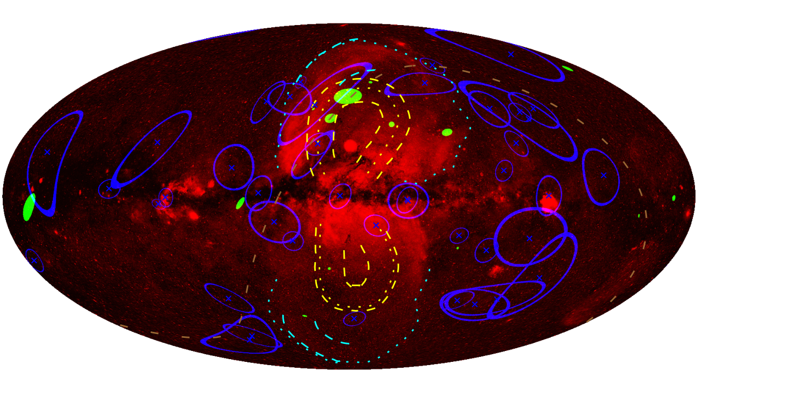<br />
图注：High, $>100\TeV$ energy IceCube neutrino tracks (14 green $>0.1p_{\Max}$ disks) and showers (41 events in highlighted $\sim0.5p_{\Max}$ blue contours around x marks) superimposed on the $1$--$3\GeV$ Fermi-LAT map in a Galactic-coordinate Hammer-Aitoff projection. FB shells are traced by edge-detected steepest \(\emph{Fermi}-LAT\) gradients\cite{KeshetGurwich17} (dotted yellow contours) and bounded (see Fig.~\ref{fig:eRositaProf}) by \(\emph{ROSAT}\cite{KeshetGurwich18}\) and \(\emph{eROSITA}\) X-rays (dashed yellow contours); RB edge-detected steepest \(\emph{eROSITA}\) gradients\cite{KeshetGhosh26} are also shown (in cyan; coarse grained as dot-dashed; fine grained as solid). The IceCube effective area at these energies diminishes north of the celestial equator (long-dashed brown).<br />
对应解读：对应“建议重点查看的图表”第1项、第3项的形态直观检查，以及“关键图表逐图导读”图1：HESE高能事件叠加在Fermi-LAT费米泡天图、泡壳轮廓和eROSITA大泡边缘上。<br />
入选理由：这是候选图中最直接支撑论文核心结论的图：显示&gt;100 TeV IceCube track和shower事件在银河坐标下相对费米泡壳、eROSITA泡边缘和IceCube有效面积边界的位置。它能让读者检查高能事件是否沿壳层和东侧/高纬结构集中，以及大角误差shower是否可能造成视觉上的相关性，是日报中关于壳层重合、角误差和高能中微子来源判断的首选图。<br />
来源与置信度：\(arxiv_source\)；high；\(arxiv_source\) / ms.tex:figure[6]</p>
<p><strong>Fig03</strong><br />
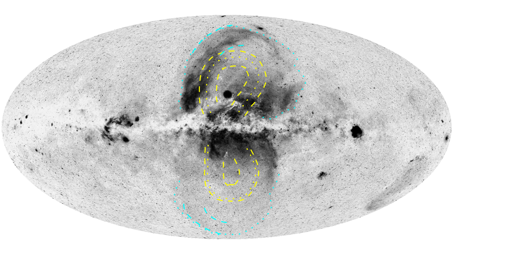<br />
图注：\(\emph{eROSITA}\) $0.6$--$1.0\keV$ image with superimposed bubble features. FB shells are roughly traced by edge-detected steepest \(\emph{Fermi}-LAT\) gradients\cite{KeshetGurwich17} (dotted yellow contours) and demarked (dashed yellow) according to \(\emph{ROSAT}\cite{KeshetGurwich18}\) and \(\emph{eROSITA}\) profiles (see Fig.~\ref{fig:eRositaProf}). RB shells are traced by edge-detected steepest \(\emph{eROSITA}\) gradients (dotted cyan) most robustly in the high-latitude eastern sectors\cite{KeshetGhosh26}, where they are demarked (dashed cyan) by \(\emph{eROSITA}\) profiles (see Fig.~\ref{fig:RBs}).<br />
对应解读：对应“建议重点查看的图表”第2项，以及“关键图表逐图导读”图2和图7：eROSITA X射线壳层模板、费米泡壳和更大eROSITA泡壳的定义。<br />
入选理由：该图展示eROSITA 0.6--1.0 keV图像上叠加的费米泡壳、Fermi-LAT梯度边界、ROSAT/eROSITA定义边界以及eROSITA大泡边缘，是检验模板是否由外部X射线/伽马结构定义、是否存在后验贴合中微子事件风险的关键图。相比纯背景图，它更明确给出后续统计分析依赖的壳层几何和高纬东侧结构。<br />
来源与置信度：\(arxiv_source\)；high；\(arxiv_source\) / ms.tex:figure[3]</p>
<p><strong>Fig07</strong><br />
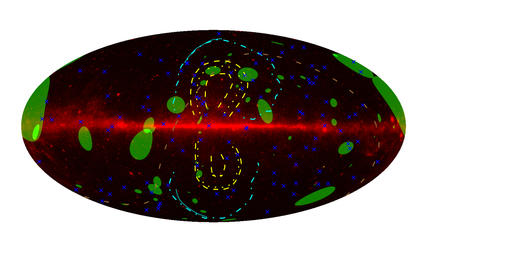<br />
图注：Same as Fig.~\(\ref{fig:HESE100eROSITA},\) but for all HESE events (showers shown only as blue x marks without ellipses to reduce clutter), superimposed on the $1$--$3\GeV$ \(\emph{Fermi}-LAT\) map.<br />
对应解读：对应“建议重点查看的图表”第1项和第5项，以及“关键图表逐图导读”图1：全部HESE事件与Fermi-LAT费米泡图的空间相关性。<br />
入选理由：该图把全部HESE事件叠加到1--3 GeV Fermi-LAT费米泡天图上，可用于对比高能子样本与全样本的空间分布，检查相关性是否只来自&gt;100 TeV事件，还是在低能/全样本中也有类似趋势。虽然caption说明shower误差椭圆为避免拥挤未画出，诊断角误差的能力弱于Fig06，但仍是评估整体HESE相关性的必要补充。<br />
来源与置信度：\(arxiv_source\)；high；\(arxiv_source\) / ms.tex:figure[7]</p>
<p><strong>Fig02</strong><br />
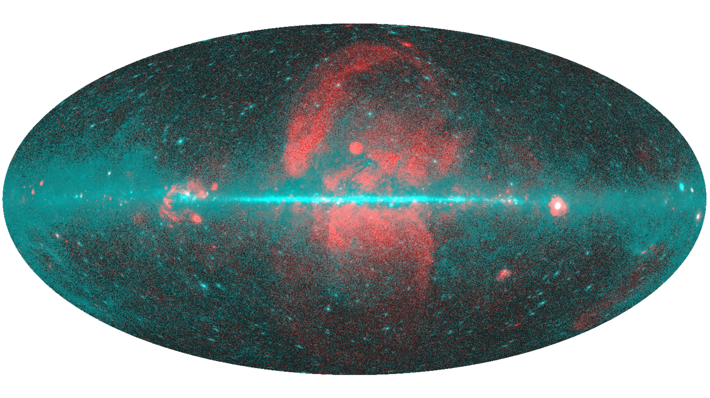<br />
图注：Galactic-coordinate Hammer-Aitoff projection of \(\emph{Fermi}-LAT\) $1$--$3\GeV$ (cyan) and \(\emph{eROSITA}\) $0.6$--$1.0\keV$ (red).<br />
对应解读：对应“建议重点查看的图表”第1项和第2项的背景多波段形态，以及“关键图表逐图导读”图1/图2的费米泡与eROSITA结构对照。<br />
入选理由：该图提供Fermi-LAT 1--3 GeV与eROSITA 0.6--1.0 keV在银河坐标全天投影中的多波段对应关系，有助于读者理解费米泡和X射线泡的大尺度几何背景。不过它未叠加IceCube事件或显著性/似然结果，因此对核心中微子探测结论的直接复核价值低于Fig06、Fig03和Fig07。<br />
来源与置信度：\(arxiv_source\)；high；\(arxiv_source\) / ms.tex:figure[2]</p>
<h4 id="_13">强相关工作</h4>
<p>同一源/同类源方面，费米泡的基础观测来自 \(Fermi\)-LAT 对银河中心上下巨大伽马结构的发现和后续谱/形态分析；\(eROSITA\) 泡则来自全天 \(X\) 射线巡天对更大双极结构的确认。IceCube 方面，应把这篇与早期费米泡中微子搜索、银河弥散中微子搜索、以及 IceCube 对银河平面和扩展源的模板分析放在一起读。建议检索关键词包括“Fermi bubbles neutrinos IceCube HESE”、“eROSITA bubbles Galactic center outflow”、“hadronic model Fermi bubbles”、“Galactic PeVatron neutrino extended source”。</p>
<p>理论关系方面，这篇站在强子/激波加速解释一侧，与纯电子逆康普顿模型形成互补甚至张力。若中微子信号被确认，纯电子模型无法单独解释全部高能现象，但电子仍可贡献微波和部分伽马辐射。相反观点通常会强调 IceCube 统计量不足、模板后验选择、银河弥散背景和未解析源污染。读者应同时查找“leptonic Fermi bubbles inverse Compton”、“hadronic Fermi bubbles pp neutrino”、“Fermi bubbles cosmic ray transport”以及“IceCube Galactic diffuse neutrino emission”。</p>
<p><strong>同一事件 / 同类源线索</strong>：</p>
<ul>
<li><a href="https://arxiv.org/abs/2606.22387">https://arxiv.org/abs/2606.22387</a></li>
<li><a href="https://arxiv.org/pdf/2606.22387">https://arxiv.org/pdf/2606.22387</a></li>
<li><a href="https://arxiv.org/abs/1005.5480">https://arxiv.org/abs/1005.5480</a></li>
<li><a href="https://www.nature.com/articles/nature17147">https://www.nature.com/articles/nature17147</a></li>
<li><a href="https://arxiv.org/abs/1405.5303">https://arxiv.org/abs/1405.5303</a></li>
</ul>
<p><strong>相似工作</strong>：</p>
<ul>
<li><a href="https://arxiv.org/abs/1405.5303">https://arxiv.org/abs/1405.5303</a></li>
<li><a href="https://arxiv.org/abs/1309.7003">https://arxiv.org/abs/1309.7003</a></li>
<li><a href="https://arxiv.org/abs/1707.03416">https://arxiv.org/abs/1707.03416</a></li>
</ul>
<p><strong>基础理论 / 方法工作</strong>：</p>
<ul>
<li><a href="https://arxiv.org/abs/1005.5480">https://arxiv.org/abs/1005.5480</a></li>
<li><a href="https://arxiv.org/abs/1009.5480">https://arxiv.org/abs/1009.5480</a></li>
<li><a href="https://arxiv.org/abs/1103.5727">https://arxiv.org/abs/1103.5727</a></li>
</ul>
<p><strong>相反观点 / 张力线索</strong>：</p>
<ul>
<li><a href="https://arxiv.org/abs/1012.1952">https://arxiv.org/abs/1012.1952</a></li>
<li><a href="https://arxiv.org/abs/1106.0843">https://arxiv.org/abs/1106.0843</a></li>
<li><a href="https://arxiv.org/abs/1306.0006">https://arxiv.org/abs/1306.0006</a></li>
</ul>
</details>
<h3 id="2-tev-pev-gamma-ray-and-neutrino-emission-in-the-galactic-plane">2. TeV-PeV Gamma-ray and Neutrino Emission in the Galactic Plane</h3>
<ul>
<li>来源：arXiv / astro-ph.HE</li>
<li>链接：https://arxiv.org/abs/2606.23476v1</li>
<li>作者：Saikat Das, Nayantara Gupta, Siyao Xu</li>
<li>评分：novelty 8/10，importance 8/10，relevance 10/10，final 9.70/10</li>
<li>推荐理由：直接建模LHAASO银河面TeV-PeV弥散伽马射线并联系IceCube/KM3NeT中微子约束，涵盖宇宙线、强子辐射和多信使高能天文，相关性和重要性都高。</li>
</ul>
<p><strong>中文题目</strong>：银河盘面中的 TeV–PeV 伽马射线与中微子发射：LHAASO 弥散辐射、未分辨脉冲星风云和超新星宇宙线的联合解释</p>
<p><strong>做了什么</strong>：这篇文章试图解释 LHAASO 在银河盘面看到的弥散 TeV–PeV 伽马射线：作者把总辐射分成两部分，一部分是未分辨脉冲星风云的轻子逆康普顿辐射，另一部分是超新星注入的宇宙线质子在星际气体中发生 \(pp\) 碰撞产生的强子辐射。文章重点检查了一个容易被低估的系统误差：银河内区红外星际辐射场的径向分布会改变高能伽马射线的 \(\gamma\gamma\) 吸收，也会改变电子逆康普顿辐射。结论是，对 LHAASO 弥散盘面拟合而言，这种红外辐射场不确定性影响有限，因为分析避开了银心方向并做了源遮罩；但对中央分子区附近的点源和银河脊区域，超过 \(\sim 10\,\mathrm{TeV}\) 的强子与逆康普顿伽马射线可以被显著改写。用 LHAASO 归一化得到的 \(pp\) 中微子通量仍与 IceCube 全天测量以及 ANTARES、KM3NeT 对银河脊的限制相容。</p>
<p><strong>为什么重要</strong>：LHAASO 已经把银河盘面弥散伽马射线推到 \(\mathrm{PeV}\) 能段，这直接关系到银河系是否存在普遍的 PeV 宇宙线加速与传播环境。但弥散伽马射线不是单一物理过程：未分辨源、宇宙线与气体相互作用、电子逆康普顿、星际辐射场吸收都会混在一起。本文的重要性在于，它把 LHAASO 伽马射线、IceCube 类中微子约束和内银河星际辐射场系统误差放在同一个框架里，明确指出哪些结论稳健、哪些结论主要受银心环境建模限制。</p>
<p><strong>理论 / 观测 / 仪器方法价值</strong>：对理论建模的价值是把轻子未分辨源和强子宇宙线分量分开讨论，并展示红外星际辐射场径向剖面对高能伽马射线吸收和逆康普顿发射的影响。对观测的价值是给出 LHAASO、IceCube、ANTARES 和 KM3NeT 之间可比较的通量归一化和区域依赖预言。对方法的价值是提醒读者：弥散伽马射线拟合中的源遮罩、经纬度窗口、红外辐射场模型和 \(\gamma\gamma\) 光深并非细节，而是决定银心附近解释是否可靠的核心系统项。</p>
<p><strong>为什么应该关注</strong>：如果你关心银河系 PeVatron、银河弥散中微子、LHAASO 与 KM3NeT 的联合科学，本文值得看，因为它给出一个很实际的判断：LHAASO 盘面弥散辐射的总体强子归一化没有被内银河红外模型彻底推翻，但真正能区分宇宙线分布和星际辐射场的战场在银心附近、银河脊和单个高能源。换句话说，未来 KM3NeT 与 LHAASO/CTA 对中央分子区源的联合分析，可能比单独拟合整个盘面平均谱更有判别力。</p>
<details class="paper-detail">
<summary>展开详细解读：文章讲解、背景、理论、重点章节、图表与相关工作</summary>
<h4 id="_14">文章详细讲解</h4>
<p>科学问题：LHAASO 在银河盘面探测到延伸到 \(\mathrm{PeV}\) 能段的弥散伽马射线后，一个核心问题是这些光子到底来自银河宇宙线质子与气体的 \(pp\) 碰撞，还是来自大量未分辨源，尤其是脉冲星风云中的高能电子通过逆康普顿散射产生的辐射。两者在 TeV 能段都能贡献相当通量，但物理含义完全不同：强子分量对应银河宇宙线加速和传播，且必然伴随中微子；轻子未分辨源则更多反映源族群、电子冷却和星际辐射场。本文抓住的另一个关键问题是，内银河红外星际辐射场并不确定，而高能伽马射线在红外光子场中会通过 \(\gamma\gamma\) 对产生被吸收，这会影响人们从观测通量反推源内强子或轻子功率。</p>
<p>作者怎么做：文章建立了一个由两类成分叠加的模型。第一类是未分辨脉冲星风云的轻子辐射，用来描述电子在星际辐射场上产生的逆康普顿伽马射线；第二类是超新星注入宇宙线质子后，在星际气体中发生 \(pp\) 相互作用产生的 \(\pi^0\) 衰变伽马射线和伴随中微子。作者改变红外星际辐射场的径向分布，特别是构造在内银河增强的红外光子密度剖面，然后计算其对 \(\gamma\gamma\) 衰减的影响。重要的是，他们没有只看源本征谱，而是将 LHAASO 的银河盘面窗口、银心排除和源遮罩这些观测选择效应纳入解释。</p>
<p>关键结果：对 LHAASO 的弥散盘面拟合而言，替代的红外辐射场模型只带来温和改变。原因并不是红外辐射场不重要，而是 LHAASO 这类弥散分析排除了银心方向并遮罩了亮源，使得最强的内银河红外密度差异没有直接主导总样本。由 LHAASO 拟合得到的强子归一化进一步给出 \(pp\) 伴随中微子通量；这些中微子预言与 IceCube 的全天测量不冲突，在银河脊区域也与 ANTARES 和 KM3NeT 目前约束相容。这一点很关键，因为如果强子归一化过高，中微子数据会首先施加压力。</p>
<p>更细的结果是，红外辐射场不确定性在中央分子区附近的点源或小区域分析中会被放大。内银河红外剖面差异最大，因此一方面会改变 \(\gamma\gamma\) 光深，使高于 \(\sim 10\,\mathrm{TeV}\) 的伽马射线衰减不同；另一方面也改变电子逆康普顿靶光子场，影响轻子模型需要的电子能谱和功率。也就是说，在全盘面平均意义上较稳健的结论，不能自动移植到银心附近的单源建模。</p>
<p>局限和下一步：本文的限制主要来自源族群、宇宙线空间分布、气体柱密度和星际辐射场三者之间的退化。未分辨脉冲星风云的总贡献依赖脉冲星出生率、年龄分布、电子注入谱和探测阈值；强子分量依赖超新星注入谱、扩散模型和气体模板；红外辐射场还受三维尘埃辐射和恒星分布模型影响。下一步最有判别力的工作不是单纯改进一个平均谱，而是把 KM3NeT 的银河脊中微子搜索、LHAASO 的高能伽马射线形态、CTA 或未来宽视场阵列对中央分子区单源的谱形测量联合起来，直接限制内银河宇宙线与辐射场。</p>
<h4 id="_15">关键结果是怎么做出来的</h4>
<p>本文的证据链首先来自样本区域的选择。作者讨论的是 LHAASO 对银河盘面弥散 TeV–PeV 伽马射线的观测，而不是完整包含银心的全银河建模。这个选择非常关键：LHAASO 弥散分析排除了银心方向，并对盘面内显著点源或扩展源做遮罩。因此，虽然不同红外星际辐射场模型在银河中心附近差别最大，它们对被用于拟合的有效区域平均谱的影响被压低。这也是为什么作者会得到“替代红外剖面对 LHAASO 弥散拟合影响温和”的结论。</p>
<p>模型比较的核心不是简单二选一，而是把总伽马射线分成未分辨轻子源和强子弥散两项。轻子项来自脉冲星风云族群的电子逆康普顿发射，强子项来自超新星注入宇宙线质子与星际气体的 \(pp\) 碰撞。作者在不同红外辐射场剖面下计算 \(\gamma\gamma\) 吸收后的伽马射线谱，并调整强子归一化以匹配 LHAASO 观测。这里最应关注的是不同模型下拟合所需的强子归一化是否大幅漂移；文章结论是漂移有限，说明当前 LHAASO 盘面弥散结果对内银河红外模型的敏感性没有强到改变总体解释。</p>
<p>统计意义上，本文更像是物理模型与多信使约束的一致性检验，而不是发现一个新源的显著性计算。读者应关注拟合残差、不同红外模型下的谱带、以及强子归一化对应的中微子通量是否进入 IceCube、ANTARES 或 KM3NeT 排除区。由于摘要未给出具体事件数或逐能段似然值，阅读正文时应优先查找 LHAASO 数据点、模型曲线和误差带的图，以及列出不同红外剖面下最佳归一化的表格。若不同模型曲线在 LHAASO 误差棒内难以区分，而中微子预言仍低于当前限制，则作者的稳健性论断才成立。</p>
<p>中微子检验是本文最重要的闭环之一。强子模型中，产生 \(\pi^0\) 的同时也产生 \(\pi^\pm\)，后者衰变成中微子。因此，LHAASO 伽马射线拟合一旦给出 \(pp\) 分量归一化，就自动预言银河盘面或银河脊的中微子通量。作者指出这些通量与 IceCube 全天测量相容，且银河脊区域不违反 ANTARES 和 KM3NeT 约束。读者应核对他们使用的区域定义是否与各中微子实验一致，因为区域窗口、能量阈值和角分辨率差异会显著影响可比性。</p>
<p>系统误差方面，本文强调的不是仪器响应本身，而是天体物理模板系统误差：红外星际辐射场径向剖面、气体分布、源遮罩、未分辨脉冲星风云族群和宇宙线注入分布。稳健性检验应包括：更换红外剖面后 LHAASO 拟合是否仍好；更换剖面后 \(pp\) 中微子是否仍不超限；内银河点源的逆康普顿与吸收是否明显变化；以及这些变化是否主要集中在高于 \(\sim 10\,\mathrm{TeV}\) 的能段。若正文图表显示差异只在中央分子区方向明显，而在 LHAASO 弥散窗口内被平均掉，这就支撑了文章的主要结论。</p>
<details class="paper-subdetail">
<summary>展开背景、理论、公式、模型、章节和图表导读</summary>
<h4 id="_16">背景知识</h4>
<p>研究对象是银河盘面的 TeV–PeV 弥散伽马射线。所谓弥散并不意味着完全没有源，而是观测上扣除或遮罩已知亮源后仍存在沿银河盘面分布的高能辐射。其物理来源可能包括银河宇宙线质子与星际气体碰撞产生的强子辐射、宇宙线电子的逆康普顿辐射和轫致辐射、以及大量低于探测阈值的未分辨源族群。LHAASO 的意义在于把这个问题推进到 \(\mathrm{PeV}\) 附近，这正是银河宇宙线膝区和潜在 PeVatron 讨论的关键能段。</p>
<p>历史上，银河弥散伽马射线主要由 GeV 能段的 Fermi-LAT 建立了较成熟图像：大体上，\(\pi^0\) 衰变、逆康普顿和轫致辐射三者叠加可以解释很多区域的谱和形态。但进入 TeV 以上后，情况更复杂。电子在高能端冷却很快，源族群贡献更突出；强子宇宙线如果达到 PeV 能量，则在几十到几百 TeV 的伽马射线中留下信号；同时高能光子在星际辐射场上发生 \(\gamma\gamma\) 对产生，传播效应不能忽略。</p>
<p>本文特别关注星际辐射场，尤其是红外成分的径向分布。银河中心区域恒星、尘埃和分子气体密集，红外光子密度可能显著高于常规模型。红外光子既是电子逆康普顿散射的靶光子，也是高能伽马射线发生 \(\gamma\gamma\) 吸收的靶光子。因此，同一个环境量会同时改变源的发射和传播后的观测谱，这使得银心附近的 TeV–PeV 建模容易产生退化。</p>
<p>为什么现在值得重新看？一方面，LHAASO、HAWC、H.E.S.S.、MAGIC、VERITAS、CTA 先导结果等正在把银河高能源和弥散辐射测得越来越精细；另一方面，IceCube 已经对银河中微子贡献给出全局约束，KM3NeT 对南天和银河中心方向更有优势。伽马射线与中微子结合后，强子模型不再能任意调高归一化而不付代价。本文正是在这个多信使背景下检验 LHAASO 强子分量是否与中微子数据相容。</p>
<p>该领域常见误区之一是把所有 TeV 弥散辐射都等同于真正弥散的宇宙线气体相互作用。实际上，未分辨脉冲星风云、老年源晕和源附近扩散区都可能在角分辨率有限或源遮罩不完全时贡献“弥散”通量。另一个误区是忽略 \(\gamma\gamma\) 吸收，认为银河尺度上只有河外背景光才重要；在内银河高红外密度区域，几十 TeV 到 PeV 光子的吸收可以变得不可忽略。还有一个误区是把全盘面平均拟合结论直接套到银心点源，这在本文看来并不可靠。</p>
<h4 id="_17">基础理论 / 方法脉络</h4>
<p>基本物理图像从两条通道开始。强子通道中，宇宙线质子与星际介质中的氢核碰撞，产生 \(\pi^0\)、\(\pi^+\) 和 \(\pi^-\)。\(\pi^0\) 很快衰变成两个伽马光子，带来 TeV–PeV 伽马射线；带电 pion 则通过 muon 衰变链产生中微子。因此，只要伽马射线确实主要来自 \(pp\) 碰撞，就会有相应的中微子通量，这是多信使检验的基础。</p>
<p>轻子通道中，高能电子或正电子把星际辐射场中的低能光子通过逆康普顿散射提升到伽马射线能段。靶光子包括宇宙微波背景、红外尘埃辐射和光学星光。脉冲星风云是银河中很自然的高能电子工厂，大量未分辨脉冲星风云可以在盘面上形成近似弥散的高能背景。逆康普顿辐射对星际辐射场密度敏感，因此红外模型变化不仅影响吸收，也影响发射本身。</p>
<p>传播效应的关键是 \(\gamma\gamma\) 对产生。高能伽马光子与红外或光学光子相撞，如果质心能量超过电子正负电子对产生阈值，就会被吸收。这个过程的能量选择性很强：一个能量为 \(E_\gamma\) 的伽马光子主要与能量约为 \(\epsilon\) 的低能光子相互作用，二者满足近似阈值关系。因此，内银河红外光子密度越高，高于十几 TeV 到 PeV 的伽马射线谱越可能出现衰减或软化。</p>
<p>本文的模型假设可以概括为：观测到的 LHAASO 弥散通量等于未分辨脉冲星风云轻子分量和超新星宇宙线强子分量之和，再乘以沿视线传播的吸收因子。作者改变的是红外星际辐射场的径向剖面，特别关注内银河增强方案。关键量包括伽马射线能量 \(E_\gamma\)、靶光子能量 \(\epsilon\)、红外光子数密度 \(n_{\rm IR}(r,\epsilon)\)、\(\gamma\gamma\) 光深 \(\tau_{\gamma\gamma}(E_\gamma,l,b)\)、强子归一化和中微子通量。</p>
<p>常见退化包括：更高的宇宙线质子密度与更高的气体密度都能提高强子伽马射线；更高的电子注入功率与更高的红外光子密度都能提高逆康普顿辐射；更强的本征源功率与更强的 \(\gamma\gamma\) 吸收可能在观测谱上部分抵消。选择效应也很重要：源遮罩会移除最亮的脉冲星风云和超新星遗迹，银心排除会降低对内银河红外剖面的敏感性。因此，读本文时要一直把区域选择和模板系统误差放在同等重要的位置。</p>
<h4 id="_18">公式与推导</h4>
<p>第一步是写出观测伽马射线通量的分解。对给定方向 \((l,b)\) 和能量 \(E_\gamma\)，可把模型写成</p>
<div class="math-display">\[\Phi_\gamma^{\
m obs}(E_\gamma,l,b)=\left[\Phi_\gamma^{\
m PWN}(E_\gamma,l,b)+\Phi_\gamma^{pp}(E_\gamma,l,b)\
ight]\exp\left[-\	au_{\gamma\gamma}(E_\gamma,l,b)\
ight].\]</div>
<p>这里 \(\Phi_\gamma^{\rm PWN}\) 表示未分辨脉冲星风云的轻子贡献，\(\Phi_\gamma^{pp}\) 表示强子 \(pp\) 贡献，\(\tau_{\gamma\gamma}\) 是从源到观测者沿视线积累的对产生光深。这个式子直接连接了本文的三项核心：轻子源族群、强子宇宙线和红外吸收。</p>
<p>第二步是强子产生率。若宇宙线质子微分数密度为 \(n_p(E_p,\mathbf{x})\)，气体密度为 \(n_{\rm gas}(\mathbf{x})\)，则伽马射线发射率可形式化写成</p>
<div class="math-display">\[q_\gamma^{pp}(E_\gamma,\mathbf{x})=c\\,n_{\
m gas}(\mathbf{x})\int_{E_p^{\
m thr}}^\infty n_p(E_p,\mathbf{x})\\,\rac{d\sigma_{pp\
ightarrow\gamma}(E_p,E_\gamma)}{dE_\gamma}\\,dE_p.\]</div>
<p>这里 \(c\) 是光速，\(d\sigma_{pp\rightarrow\gamma}/dE_\gamma\) 是产生伽马射线的微分截面，\(E_p^{\rm thr}\) 是阈值质子能量。它说明强子分量同时依赖宇宙线密度、气体模板和粒子物理截面。</p>
<p>第三步是把体发射率投影成视线通量。若距离坐标为 \(s\)，则</p>
<div class="math-display">\[\Phi_\gamma^{pp}(E_\gamma,l,b)=\rac{1}{4\pi}\int_{\
m los} q_\gamma^{pp}(E_\gamma,\mathbf{x}(s,l,b))\\,ds.\]</div>
<p>这个式子假设辐射在局域各向同性发射，\(1/(4\pi)\) 来自单位立体角归一化。它也是理解经纬度窗口、源遮罩和银心排除为何重要的基础：积分路径和被纳入的 sky mask 会改变模板权重。</p>
<p>第四步是伴随中微子的近似关联。在 \(pp\) 相互作用中，\(\pi^0\) 和 \(\pi^\pm\) 产额同阶，因此全味中微子通量与强子伽马射线通量近似满足能量重标度关系</p>
<div class="math-display">\[E_\
u^2\Phi_{\
u,\
m all}^{pp}(E_\
u)\sim \rac{3}{2}\\,E_\gamma^2\Phi_\gamma^{pp}(E_\gamma)\igg|_{E_\gamma\simeq 2E_\
u}.\]</div>
<p>这里的系数是数量级近似，取决于谱指数、pion 多重数和振荡后的味比例。它解释了为什么 LHAASO 强子归一化会自动受到 IceCube、ANTARES 和 KM3NeT 的检验。</p>
<p>第五步是逆康普顿的能量尺度。在 Thomson 极限下，电子 Lorentz 因子为 \(\gamma_e\)，靶光子能量为 \(\epsilon\)，散射后伽马射线的特征能量近似为</p>
<div class="math-display">\[E_\gamma^{\
m IC}\simeq \rac{4}{3}\gamma_e^2\epsilon.\]</div>
<p>这个式子说明红外光子场对 TeV 逆康普顿辐射很敏感。不过在高能端会进入 Klein-Nishina 区域，散射效率下降，因此实际谱形依赖完整截面而不只是这个简单比例。</p>
<p>第六步是逆康普顿发射率的形式表达。若电子分布为 \(n_e(E_e,\mathbf{x})\)，靶光子数密度为 \(n_{\rm ph}(\epsilon,\mathbf{x})\)，则</p>
<div class="math-display">\[q_\gamma^{\
m IC}(E_\gamma,\mathbf{x})=c\int dE_e\\,n_e(E_e,\mathbf{x})\int d\epsilon\\,n_{\
m ph}(\epsilon,\mathbf{x})\rac{d\sigma_{\
m IC}(E_e,\epsilon,E_\gamma)}{dE_\gamma}.\]</div>
<p>这里 \(d\sigma_{\rm IC}/dE_\gamma\) 应包含 Thomson 到 Klein-Nishina 的过渡。本文改变红外辐射场剖面时，实际上改变了 \(n_{\rm ph}\)，从而改变轻子发射率。</p>
<p>第七步是 \(\gamma\gamma\) 吸收光深。对高能光子沿视线传播，光深可写为</p>
<div class="math-display">\[\	au_{\gamma\gamma}(E_\gamma,l,b)=\int_{\
m los}ds\int d\epsilon\\,n_{\
m ph}(\epsilon,\mathbf{x})\int_{-1}^{1}d\mu\\,\rac{1-\mu}{2}\\,\sigma_{\gamma\gamma}(E_\gamma,\epsilon,\mu).\]</div>
<p>其中 \(\mu\) 是两个光子的夹角余弦，\(\sigma_{\gamma\gamma}\) 是对产生截面。红外剖面增强会通过 \(n_{\rm ph}\) 增大内银河方向的 \(\tau_{\gamma\gamma}\)，从而使观测谱乘上更小的 \(\exp(-\tau_{\gamma\gamma})\)。</p>
<p>第八步是对产生阈值。两个光子发生对产生需要满足</p>
<div class="math-display">\[E_\gamma\epsilon(1-\mu)\geq 2m_e^2c^4.\]</div>
<p>这里 \(m_e\) 是电子质量。对近似迎头碰撞 \(\mu\simeq -1\)，可见 \(E_\gamma\) 越高，最有效的靶光子 \(\epsilon\) 越低；几十 TeV 到 PeV 伽马射线自然会探测红外到远红外场。</p>
<p>第九步是拟合诊断。若 LHAASO 给出若干能量 bin 的通量 \(\Phi_i^{\}\)<br />
m data}) 和协方差 \(C_{ij}\)，模型参数为 \(\theta\)，则可用</p>
<div class="math-display">\[\chi^2(\	heta)=\sum_{i,j}\left[\Phi_i^{\
m data}-\Phi_i^{\
m model}(\	heta)\
ight]C_{ij}^{-1}\left[\Phi_j^{\
m data}-\Phi_j^{\
m model}(\	heta)\
ight].\]</div>
<p>这里 \(\theta\) 可包括强子归一化、轻子归一化、谱指数和红外模型离散选择。这个式子让读者检查不同红外剖面是否真的显著改善拟合，还是只在误差范围内改变模型曲线。</p>
<p>第十步是中微子约束的似然或上限比较。对某个中微子实验，如果模型预言事件数为 \(\mu_s(\theta)\)，背景为 \(\mu_b\)，观测数为 \(N\)，泊松似然可写成</p>
<div class="math-display">\[\mathcal{L}(\	heta)=\rac{[\mu_s(\	heta)+\mu_b]^N e^{-[\mu_s(\	heta)+\mu_b]}}{N!}.\]</div>
<p>这里 \(\mu_s\) 由中微子通量、有效面积、曝光时间和选区积分得到。若模型在当前数据下没有导致似然显著变差或超过上限，就可说 LHAASO 推出的强子中微子通量与 IceCube、ANTARES、KM3NeT 约束相容。</p>
<h4 id="_19">模型拟合 / 应用方法</h4>
<p>本文的拟合对象主要是 LHAASO 银河盘面弥散伽马射线能谱，并进一步把拟合得到的强子归一化转换为中微子预言。模型参数可分为连续参数和离散模型选择：连续参数包括强子分量归一化、可能的谱指数或截止能量、未分辨脉冲星风云族群贡献的归一化；离散选择包括不同红外星际辐射场径向剖面。实际阅读时，读者要区分“红外模型改变了最佳拟合归一化”和“红外模型显著改善了拟合质量”这两件事。</p>
<p>似然或统计量通常可理解为逐能段通量与模型通量的比较。如果论文给出 \(\chi^2\)、似然比或误差带，应看不同红外模型的差异是否大于 LHAASO 数据误差和模板系统误差。对弥散分析而言，统计误差未必是主导，源遮罩、气体模板、残余源污染、宇宙线背景扣除和仪器响应都会进入系统误差。若模型曲线的变化小于这些系统项，就不能声称红外剖面已被 LHAASO 弥散数据强约束。</p>
<p>参数退化是本文解释的核心。强子归一化与气体柱密度之间退化，轻子归一化与红外光子密度之间退化，本征源谱硬度与 \(\gamma\gamma\) 吸收软化之间退化。尤其在中央分子区，增强的红外场既会提高逆康普顿发射，又会增强高能伽马射线吸收，两个效应方向可能在不同能段相反。因此，单独用伽马射线谱拟合很难唯一确定宇宙线质子谱或电子谱。</p>
<p>中微子数据提供了打破退化的一种方式。强子伽马射线伴随中微子，而轻子逆康普顿没有相应高能中微子。因此，如果未来 KM3NeT 在银河脊方向测得与 \(pp\) 模型一致的中微子信号，将支持强子分量；如果伽马射线强而中微子持续缺失，则未分辨轻子源或传播吸收的角色会变得更重要。当前本文的结论是相容而非强检出，这意味着中微子约束还没有把模型空间压缩到唯一解。</p>
<p>模型可能失败的地方包括：脉冲星风云族群函数不准确，导致未分辨源贡献被高估或低估；超新星注入宇宙线的空间分布不代表真实 PeV 宇宙线源；红外辐射场三维模型过于简化；以及 LHAASO 源遮罩残留的源晕被误当作弥散背景。实际应用上，这套框架适合用于未来联合拟合：把 LHAASO 高能谱形、H.E.S.S. 或 CTA 的银心精细形态、Fermi-LAT 的 GeV 约束和 KM3NeT 中微子似然放入同一模板分析。</p>
<h4 id="_20">重点章节 / 结果段落怎么读</h4>
<ol>
<li>
<p>数据和观测区域部分应首先看清楚作者采用的 LHAASO 弥散盘面结果对应哪些经纬度范围、是否排除银心、如何处理源遮罩。本文结论很依赖这些选择，因为红外星际辐射场模型差异最大的地方正是内银河和中央分子区。</p>
</li>
<li>
<p>模型构建部分应重点阅读两项分解：未分辨脉冲星风云轻子分量和超新星注入宇宙线强子分量。读者需要弄清楚作者是否固定脉冲星风云族群模板、如何归一化强子 \(pp\) 辐射、是否允许谱指数或截止能变化，以及两者在 LHAASO 能段的相对贡献。</p>
</li>
<li>
<p>红外星际辐射场和 \(\gamma\gamma\) 吸收部分是全文方法核心。应看作者采用了哪些径向剖面，内银河增强幅度多大，是否只改变红外成分还是也涉及光学和微波背景。还要看光深计算是否沿视线积分，是否考虑方向依赖。</p>
</li>
<li>
<p>LHAASO 拟合结果部分应关注不同红外模型下的谱曲线、残差和最佳拟合强子归一化。重点不是哪条线略高略低，而是这些差异是否超过 LHAASO 误差和系统不确定性。若正文给出表格，需比较各模型的拟合优度和归一化变化幅度。</p>
</li>
<li>
<p>中微子预言部分应检查从强子归一化到 IceCube、ANTARES、KM3NeT 通量比较的过程。特别要注意区域定义是否一致：全天、银河盘面、银河脊和中央分子区不是同一个选区，通量上限不能直接混用。</p>
</li>
<li>
<p>讨论和稳健性部分应阅读作者关于中央分子区点源的分析。这里红外场模型影响最强，能告诉读者未来观测最应该瞄准哪里：不是平均盘面，而是内银河单源或小区域的高能谱形和中微子对应信号。</p>
</li>
</ol>
<h4 id="_21">建议重点查看的图表</h4>
<ol>
<li>
<p>LHAASO 弥散伽马射线谱与模型分解图：看横轴 \(E_\gamma\)、纵轴通常为 \(E_\gamma^2\Phi_\gamma\)，检查总模型、未分辨脉冲星风云分量和 \(pp\) 分量分别在什么能段占主导。</p>
</li>
<li>
<p>不同红外星际辐射场径向剖面图：看银河半径 \(R\) 上红外能量密度或光子密度的变化，特别是内银河 \(R\lesssim\) 几 \(\mathrm{kpc}\) 是否增强，以及在太阳邻域是否保持合理归一化。</p>
</li>
<li>
<p>\(\gamma\gamma\) 光深随能量和方向变化的图：看 \(\tau_{\gamma\gamma}(E_\gamma,l,b)\) 在 \(\sim 10\,\mathrm{TeV}\)、\(\sim 100\,\mathrm{TeV}\) 和 \(\sim 1\,\mathrm{PeV}\) 附近如何变化，尤其比较银心方向和 LHAASO 实际弥散窗口。</p>
</li>
<li>
<p>不同红外模型下 LHAASO 拟合残差或误差带图：检查模型差异是否真的大于数据误差；如果所有曲线都在误差棒内，说明当前数据不能强区分红外剖面。</p>
</li>
<li>
<p>中微子通量预言与 IceCube、ANTARES、KM3NeT 限制图：看模型的 \(E_\nu^2\Phi_\nu\) 是否接近上限，注意全味通量和单味通量是否换算一致，区域窗口是否匹配。</p>
</li>
<li>
<p>中央分子区或银心附近点源的谱能量分布图：看红外模型改变后，强子和逆康普顿分量在 \(>10\,\mathrm{TeV}\) 的差异是否明显，以及吸收修正是否导致谱形弯折。</p>
</li>
<li>
<p>模型参数表或归一化表：检查不同红外剖面下强子归一化、轻子归一化、拟合优度和中微子预言的变化幅度，这是判断“影响温和”是否可信的关键。</p>
</li>
</ol>
<h4 id="_22">关键图表逐图导读</h4>
<p>图 1：建议首先读 LHAASO 弥散盘面能谱拟合图。横轴应是伽马射线能量 \(E_\gamma\)，纵轴多半采用 \(E_\gamma^2\Phi_\gamma\) 以突出每个对数能段的能量通量。数据点是 LHAASO 弥散测量，模型线应包括总通量、未分辨脉冲星风云轻子分量和 \(pp\) 强子分量。读图陷阱是不要把总线贴合数据理解为强子唯一解释；如果轻子和强子两条分量在 TeV 能段交叠，说明存在明显模型分解退化。</p>
<p>图 2：红外星际辐射场径向剖面图应展示不同模型在银河半径 \(R\) 上的能量密度或光子数密度。关键是看内银河增强是否集中在 \(R\lesssim\) 几 \(\mathrm{kpc}\)，以及 LHAASO 弥散窗口是否主要避开了这些差异最大的方向。读图时还应注意纵轴是能量密度、光子密度还是相对归一化，因为它们对逆康普顿和 \(\gamma\gamma\) 吸收的权重不同。</p>
<p>图 3：\(\gamma\gamma\) 光深图通常会以 \(E_\gamma\) 为横轴，以 \(\tau_{\gamma\gamma}\) 或衰减因子 \(\exp(-\tau_{\gamma\gamma})\) 为纵轴，比较不同方向或不同红外模型。主要结论应是银心附近高能端差异显著，而被 LHAASO 弥散拟合采用的遮罩后区域差异较小。读图陷阱是只看 \(\tau_{\gamma\gamma}\) 大小而忘记源本征分布；只有源位于或穿过高光子密度区域时，吸收才会强烈改变观测谱。</p>
<p>图 4：不同红外模型下的 LHAASO 拟合对比图或残差图是判断稳健性的关键。若横轴是能量、纵轴是数据减模型残差或残差除以误差，应看各模型是否存在系统性偏离，例如高能端持续低估或过高。若差异都小于误差带，说明当前弥散谱不能区分红外剖面；若某一模型需要明显更高强子归一化，则其对应中微子预言也应同步检查。</p>
<p>图 5：中微子比较图应以 \(E_\nu\) 为横轴，以 \(E_\nu^2\Phi_\nu\) 为纵轴，叠加本文 \(pp\) 预言和 IceCube、ANTARES、KM3NeT 的观测或上限。读者要确认图中是全味还是单味通量，是否乘以选区立体角，以及银河脊区域定义是否一致。主要结论是当前中微子数据没有排除 LHAASO 强子归一化，但未来 KM3NeT 有机会压缩参数空间。</p>
<p>图 6：中央分子区或银心点源的谱图应展示红外模型变化对 \(>10\,\mathrm{TeV}\) 伽马射线的影响。横轴为 \(E_\gamma\)，纵轴为谱能量分布；模型线可能包括本征强子、吸收后强子、逆康普顿分量和总通量。读图陷阱是把吸收后的谱变软误认为源内粒子截止；在内银河，传播吸收和源内加速截止可能产生相似谱形。</p>
</details>
<h4 id="_23">论文原图 / 可嵌入图片</h4>
<p><strong>Fig05</strong><br />
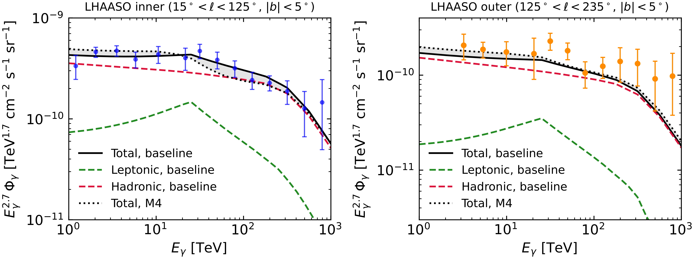<br />
图注：Diffuse $\gamma$-ray flux for the LHAASO inner ($15^\circ<\ell<125^\circ$, $|b|<5^\circ$) and outer ($125^\circ<\ell< 235^\circ$, $|b|<5^\circ$) region of interest. The shaded region indicates the variation due to uncertainties in the IR model stemming from alternate dust density profiles assumed in Table~\(\ref{tab:dust_evolution}.\) The black solid line shows the base model while the black dotted line shows the most extreme M4 model. The LHAASO data are shown as blue and orange points for the inner and outer regions, respectively \(\citep{LHAASO:2024lnz}.\)<br />
对应解读：对应“建议重点查看的图表”第1、4项，以及“关键图表逐图导读”图1和图4：LHAASO弥散伽马射线谱、不同红外模型下的拟合对比和误差/模型差异。<br />
入选理由：这是最直接支撑日报核心结论的图：同时给出LHAASO内外盘面弥散伽马射线数据、基准模型、极端M4红外模型以及由红外模型不确定性导致的阴影带。它能检验不同IR剖面对LHAASO拟合的影响是否小于数据误差，是判断“替代ISRF模型影响温和”的关键证据。<br />
来源与置信度：\(arxiv_source\)；high；\(arxiv_source\) / sample631.tex:figure[5]</p>
<p><strong>Fig06</strong><br />
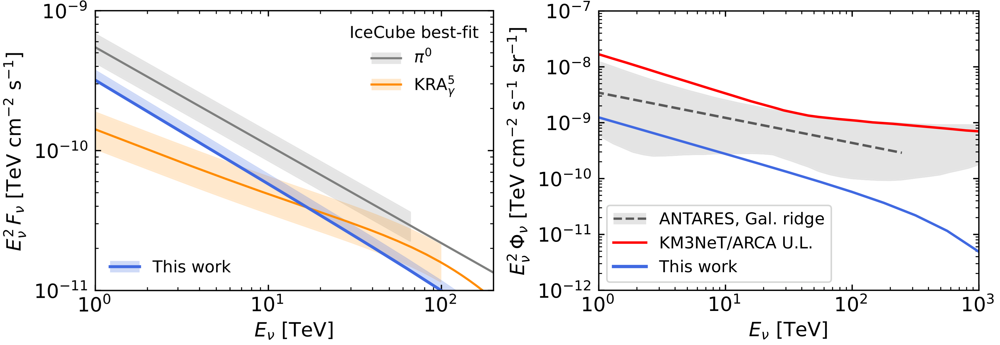<br />
图注：\(\textit{Left:}\) Neutrino flux obtained in our baseline model (blue line) and other IR distribution profiles (blue shaded), using the best-fit normalizations obtained in Fig.~\(\ref{fig:gamma_model}.\) The IceCube all-sky measurement for two of their best-fit models is shown for comparison \(\citep{IceCube:2023ame}.\) \(\textit{Right:}\) Neutrino flux from the Galactic ridge ($|\ell|<30^\circ$, $|b|<2^\circ$) in our model compared to the 68\% C.L. upper limit from ANTARES observation \(\citep{ANTARES:2022izu}\) and 90\% credible-interval upper limit from KM3NeT using 640 days of data \(\citep{Filippini:2023bbc}.\)<br />
对应解读：对应“建议重点查看的图表”第5项和“关键图表逐图导读”图5：中微子通量预言与IceCube、ANTARES、KM3NeT限制。<br />
入选理由：该图直接展示由LHAASO强子归一化推得的中微子通量，并与IceCube全天测量、ANTARES银河脊上限和KM3NeT上限比较。它是验证强子pp解释是否被现有中微子数据排除的核心图，也支撑日报中“当前相容、未来KM3NeT可检验”的结论。<br />
来源与置信度：\(arxiv_source\)；high；\(arxiv_source\) / sample631.tex:figure[6]</p>
<p><strong>Fig04</strong><br />
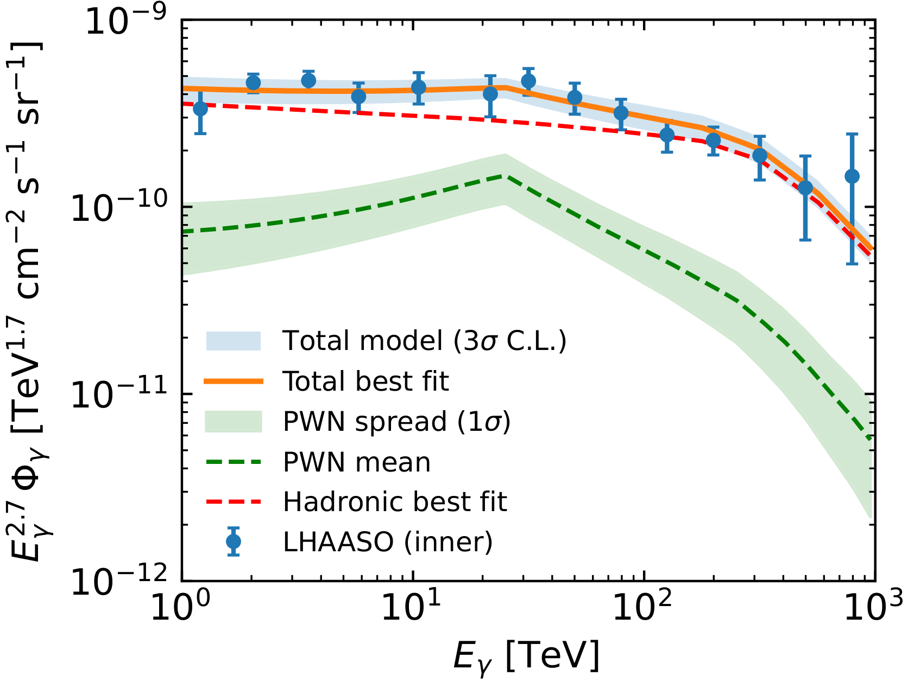<br />
图注：LHAASO inner-region ($15^\circ<\ell<125^\circ$, $|b|<5^\circ$) diffuse $\gamma$-ray spectrum for the baseline model. The blue band shows the $3\sigma$ confidence interval from the fitted hadronic normalization, while the green band shows the $1\sigma$ spread of the unresolved PWN component.<br />
对应解读：对应“建议重点查看的图表”第1和第7项，以及“模型拟合”段落：LHAASO内区弥散伽马射线基准模型、强子归一化置信区间和未分辨PWN分量涨落。<br />
入选理由：这张图给出基准模型下LHAASO内区弥散谱，并以蓝色和绿色带分别表示强子归一化置信区间与未分辨PWN分量的统计扩散。它比单纯的源分布图更能说明强子与轻子分量的拟合退化和误差预算，是理解模型分解的基础图。<br />
来源与置信度：\(arxiv_source\)；high；\(arxiv_source\) / sample631.tex:figure[4]</p>
<p><strong>Fig07</strong><br />
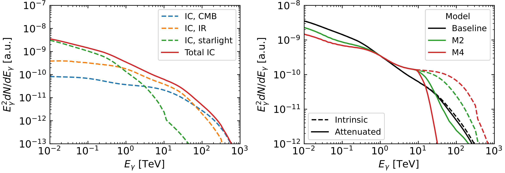<br />
图注：Flux of inverse-Compton $\gamma$-ray emission from a steady-state electron spectrum, shown in arbitrary units. The source is placed near the CMZ at $R=0.2$ kpc. The left panel shows the relative contributions of the different ISRF photon fields in the baseline model. The right panel shows the change in the total spectrum for different IR radial-dependence models.<br />
对应解读：对应“建议重点查看的图表”第6项和“关键图表逐图导读”图6：中央分子区附近点源的逆康普顿谱以及不同IR径向模型对&gt;10 TeV辐射的影响。<br />
入选理由：该图专门考察位于CMZ附近的源，展示基准ISRF各光子场对IC辐射的贡献以及不同IR径向模型导致的总谱变化。它支撑日报中“全盘面平均影响温和，但银心附近单源建模中ISRF不确定性会被放大”的重点判断。<br />
来源与置信度：\(arxiv_source\)；high；\(arxiv_source\) / sample631.tex:figure[7]</p>
<p><strong>Fig03</strong><br />
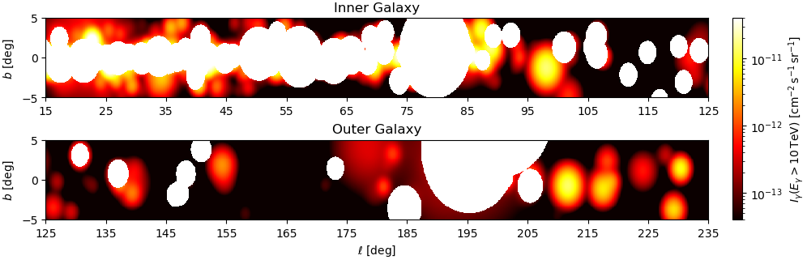<br />
图注：Diffuse integrated $\gamma$-ray emission at $>10$ TeV in the Galactic plane from PWNe for one random realization of the Galaxy. The emission from the white regions are masked out to match the LHAASO analysis \(\citep{LHAASO:2023gne}.\) The upper and lower panels correspond to the LHAASO inner ($15^\circ<\ell<125^\circ$, $|b|<5^\circ$) and outer ($125^\circ<\ell< 235^\circ$, $|b|<5^\circ$) regions.<br />
对应解读：对应“详细解读”和“模型拟合”中关于LHAASO观测窗口、源遮罩以及未分辨PWN弥散贡献的讨论。<br />
入选理由：这张图展示&gt;10 TeV未分辨PWN在LHAASO内外区域的弥散伽马射线空间分布，并明确标出被遮罩区域。它有助于解释为什么源遮罩和ROI选择会削弱内银河IR差异对全盘面拟合的影响，也补充说明轻子未分辨源分量的空间来源。<br />
来源与置信度：\(arxiv_source\)；high；\(arxiv_source\) / sample631.tex:figure[3]</p>
<p><strong>Fig01</strong><br />
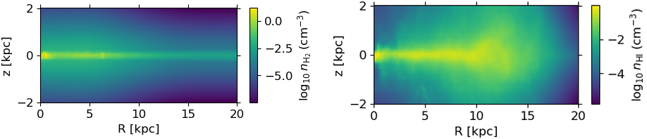<br />
图注：Axisymmetric density distribution of (a) molecular H$_2$ and (b) atomic H\,{\(\sc\) i} in Galactocentric coordinates, obtained by azimuthally averaging the 3D interstellar medium reconstruction of \(\citet{2025A&A...693A.139S}.\)<br />
对应解读：对应“模型拟合”段落中强子pp分量与气体柱密度、分子氢和原子氢模板退化的讨论。<br />
入选理由：虽然日报没有把气体分布列为首要图表，但该图给出H2和HI在银河坐标中的轴对称密度分布，是pp强子伽马射线计算的必要输入。它可辅助读者理解强子归一化为何与气体模板存在退化，但科学优先级低于谱拟合、中微子和CMZ谱图。<br />
来源与置信度：\(arxiv_source\)；high；\(arxiv_source\) / sample631.tex:figure[1]</p>
<h4 id="_24">强相关工作</h4>
<p>这篇工作与 LHAASO 银河盘面弥散伽马射线观测、HAWC/ARGO-YBJ/H.E.S.S. 的银河弥散或内银河 TeV 测量、以及 IceCube 银河中微子搜索直接相关。它不是单个瞬变或单一源论文，而是同类观测和多信使解释论文。检索时可用关键词“LHAASO diffuse gamma-ray Galactic plane PeV”、“Galactic diffuse TeV gamma rays unresolved pulsar wind nebulae”、“Galactic Ridge neutrino KM3NeT ANTARES IceCube”、“interstellar radiation field gamma gamma absorption Galactic Center”。</p>
<p>理论上，本文延续了两条长期路线：一条是用 \(pp\) 相互作用解释银河弥散伽马射线并预言中微子；另一条是强调未分辨脉冲星风云、TeV halo 或源族群对所谓弥散辐射的污染。与可能相反的观点相比，若有人把 LHAASO 弥散辐射几乎全部解释为普遍银河宇宙线强子分量，本文会提醒需要检查未分辨轻子源和中微子约束；若有人把它几乎全部解释为未分辨源，本文则指出 \(pp\) 分量仍可与 LHAASO 和中微子数据相容。</p>
<p>星际辐射场方面，相关工作包括 GALPROP 系列辐射场模型、Fermi-LAT 银河弥散模型以及银心区域尘埃红外辐射建模。这里的张力不一定表现为某个观测“冲突”，而是系统误差：内银河红外光子密度增强会同时改变逆康普顿发射和 \(\gamma\gamma\) 吸收，使单纯谱拟合难以唯一解释高能端软化。建议进一步检索“GALPROP interstellar radiation field Porter Strong Moskalenko”、“gamma-gamma absorption Galactic Center infrared field”、“central molecular zone TeV gamma rays neutrinos”。</p>
<p><strong>同一事件 / 同类源线索</strong>：</p>
<ul>
<li><a href="https://arxiv.org/abs/2606.23476">https://arxiv.org/abs/2606.23476</a></li>
<li><a href="https://arxiv.org/pdf/2606.23476">https://arxiv.org/pdf/2606.23476</a></li>
</ul>
<p><strong>相似工作</strong>：</p>
<ul>
<li><a href="https://arxiv.org/abs/2107.14130">https://arxiv.org/abs/2107.14130</a></li>
<li><a href="https://arxiv.org/abs/2311.13734">https://arxiv.org/abs/2311.13734</a></li>
<li><a href="https://arxiv.org/abs/2310.13942">https://arxiv.org/abs/2310.13942</a></li>
</ul>
<p><strong>基础理论 / 方法工作</strong>：</p>
<ul>
<li><a href="https://arxiv.org/abs/astro-ph/0701517">https://arxiv.org/abs/astro-ph/0701517</a></li>
<li><a href="https://arxiv.org/abs/0804.0462">https://arxiv.org/abs/0804.0462</a></li>
<li><a href="https://arxiv.org/abs/1101.1381">https://arxiv.org/abs/1101.1381</a></li>
</ul>
<p><strong>相反观点 / 张力线索</strong>：</p>
<ul>
<li><a href="https://arxiv.org/abs/2211.09972">https://arxiv.org/abs/2211.09972</a></li>
<li><a href="https://arxiv.org/abs/2307.04427">https://arxiv.org/abs/2307.04427</a></li>
</ul>
</details>
<h3 id="3-fast-optical-variability-of-the-tev-blazar-pks-1725123-observed-by-svom-vt-and-insights-from-multi-wavelength-follow-up-observations">3. Fast Optical Variability of the TeV Blazar PKS 1725+123 Observed by SVOM-VT and Insights from Multi-wavelength Follow-up Observations</h3>
<ul>
<li>来源：arXiv / astro-ph.HE</li>
<li>链接：https://arxiv.org/abs/2606.21966v1</li>
<li>作者：Shuo-Yu Liu, Yu-Wei Yu, Ji-Shun Lian, Xin-Ke Hu, Alexis Coleiro, Zhu-Heng Yao, Li-Ping Xin, Jing Wang</li>
<li>评分：novelty 8/10，importance 8/10，relevance 10/10，final 9.70/10</li>
<li>推荐理由：MAGIC和H.E.S.S.新TeV探测后的FSRQ PKS 1725+123多波段ToO，含Fermi-LAT/Swift和分钟级光学快变、SED建模；TeV blazar/IACT相关性极高。</li>
</ul>
<p><strong>中文题目</strong>：SVOM-VT 观测到 TeV 耀变体 PKS 1725+123 的快速光学变：多波段跟进与双区喷流解释</p>
<p><strong>做了什么</strong>：这篇文章报道了红移为 \(z=0.586\) 的平谱射电类星体 PKS 1725+123 在 2025 年 8 月被 MAGIC 和 H.E.S.S. 报告为 TeV 源之后，SVOM 卫星 VT 望远镜、Fermi-LAT 和 Swift-XRT 的快速多波段跟进结果。作者发现该源在 TeV 探测前后处于光学、X 射线和 GeV \(\gamma\) 射线高态，光学亮度达到历史最高水平，并出现分钟量级显著变光和“越亮越蓝”的颜色行为。基于准同时多波段谱能量分布，论文认为 PKS 1725+123 的同步辐射峰频率异常高，不像典型 FSRQ；作者用一个双区 spine-sheath 喷流模型解释：紧致区电子产生光学到 X 射线同步辐射及低能 GeV 逆康普顿成分，扩展区高能电子散射紧致区同步光子贡献高能 GeV 端。</p>
<p><strong>为什么重要</strong>：FSRQ 通常被认为具有强外辐射场、低同步峰和较强的 \(\gamma\gamma\) 吸收，因此在 TeV 波段并不容易被看到。PKS 1725+123 若同时具有 TeV 发射、分钟级光学变光和异常高同步峰，就迫使我们重新审视 FSRQ 喷流中粒子加速位置、外光子场强度、辐射区尺度以及多区结构。它不是简单又一个耀变体 flare，而是一个把 FSRQ、HBL 式高峰同步辐射和 TeV 透明性问题放在一起的案例。</p>
<p><strong>理论 / 观测 / 仪器方法价值</strong>：对观测而言，本文展示了 SVOM-VT 对快速 ToO 和分钟级光学变光的能力，并把光学颜色演化与 Fermi-LAT、Swift-XRT 高态联系起来。对理论而言，它提供了一个需要双区模型而非标准单区 leptonic 模型才能较自然解释的 SED 案例。对方法而言，论文把短时标光变、颜色-亮度关系、准同时 SED 建模和 TeV 触发跟进合在一起，是研究极端 FSRQ 的一个实用模板。</p>
<p><strong>为什么应该关注</strong>：如果你关心 TeV blazar、FSRQ 与 BL Lac 的边界、喷流小尺度结构或下一代时域高能天文学，这篇文章值得看。它的关键不是某个模型参数本身，而是分钟级光学变光、高同步峰和 TeV 探测共同出现：这组事实会直接约束辐射区大小、Doppler 因子、粒子最高能量、外光子场位置以及喷流内部是否存在多个速度或发射区。</p>
<details class="paper-detail">
<summary>展开详细解读：文章讲解、背景、理论、重点章节、图表与相关工作</summary>
<h4 id="_25">文章详细讲解</h4>
<p>科学问题：PKS 1725+123 是一个红移 \(z=0.586\) 的 FSRQ。传统图像里，FSRQ 的宽线区和尘埃环提供强外部光子场，喷流电子的冷却效率高，同步辐射峰通常落在红外到光学低频端；与此同时，强外场也容易通过 \(\gamma\gamma\) 吸收削弱 TeV 光子。因此，当 MAGIC 和 H.E.S.S. 在 2025 年 8 月报告该源的 TeV 探测后，一个直接问题是：这个源在多波段上到底处于怎样的物理状态，TeV 辐射是否对应一个异常的高同步峰、高 Doppler 因子或远离宽线区的发射区域？</p>
<p>作者怎么做：论文使用 SVOM-VT 的 ToO 光学观测作为核心数据，分析该源在 TeV 探测前后的光学亮度、短时标变光和颜色变化；同时结合 Fermi-LAT 的 GeV \(\gamma\) 射线数据和 Swift-XRT 的 X 射线数据，构造高态下的准同时多波段 SED。文章的重点不是只报一个 flare，而是把光学分钟级变光、颜色-亮度关系、X 射线高态、GeV 光谱形状以及 TeV 触发背景放在同一条证据链中。</p>
<p>关键结果：PKS 1725+123 在光学、X 射线和 GeV \(\gamma\) 射线波段同时处于高通量状态。SVOM-VT 数据显示光学通量达到历史上未见的高水平，并且存在短至分钟量级的显著变光。颜色指数随亮度变化表现为“bluer when brighter”，说明 flare 期间较高能电子或更硬的同步辐射成分增强。SED 建模显示同步辐射峰频率很高，明显偏离典型 FSRQ 的低峰特征。作者提出双区 spine-sheath 喷流模型：紧致区产生光学到 X 射线同步辐射和低能 GeV 逆康普顿分量；扩展区高能电子散射来自紧致区的同步光子，解释 Fermi-LAT 高能端。</p>
<p>局限和下一步：这类工作最主要的不确定性来自准同时性、TeV 光谱细节、发射区几何和模型非唯一性。双区 spine-sheath 可以解释 SED，但同样可能存在 mini-jet、磁重联 plasmoid、多 blob 或外康普顿远区模型的替代解释。下一步最关键的是获得真正同时的光学多色、X 射线、GeV 和 TeV 光谱及偏振观测，尤其是分钟级光学颜色与 \(\gamma\) 射线光变的相关性、TeV 光谱的 EBL 校正后形状，以及宽线区/尘埃环外场是否足以允许 TeV 逃逸。</p>
<h4 id="_26">关键结果是怎么做出来的</h4>
<p>本文的证据链从 TeV 触发开始：MAGIC 和 H.E.S.S. 在 2025 年 8 月报告 PKS 1725+123 的 TeV 探测，作者随后启动 SVOM 的 ToO 观测，并补充 Fermi-LAT 与 Swift-XRT 数据。样本不是一个大巡天样本，而是一个单源、单次高态事件的多波段跟进；因此读者应把统计强度理解为时间域和多波段一致性的证据，而不是源族群统计。</p>
<p>光学部分是本文最有辨识度的结果。SVOM-VT 提供了足够密集的光学采样，使作者能够在单次观测序列中检验分钟量级变光。这里最应关注的是光变曲线中相邻时间 bin 的通量变化是否超过光度误差、背景扣除误差和标定误差，以及作者是否用类似 fractional variability、\(\chi^2\) 常量检验或最短倍增/减半时标来量化显著性。分钟量级变光若成立，会给辐射区尺度带来非常强的约束，即 \(R\) 必须小到由光行时和 Doppler 因子决定。</p>
<p>颜色-亮度关系是第二条关键证据。作者报告高态中出现“bluer when brighter”行为，意味着蓝端通量在 flare 中增长更快。读者应检查颜色指数与光学通量的散点图、线性拟合斜率、相关系数及其显著性，特别要看颜色变化是否可能由非同时多滤光片观测、宿主星系贡献、银河消光修正或不同波段光度误差造成。对于 \(z=0.586\) 的 FSRQ，热盘成分也可能影响光学颜色，需确认 flare 成分是否主导。</p>
<p>多波段 SED 是模型判断的核心。作者把 SVOM-VT、Swift-XRT 和 Fermi-LAT 数据合成高态 SED，发现同步峰频率异常高。这里最重要的图应是 \(\nu F_\nu\) 对 \(\nu\) 的 SED 图：光学到 X 射线是否可以由同一同步谱平滑连接，X 射线是同步尾端还是逆康普顿低能端，Fermi-LAT 谱在低能和高能端是否显示单区模型难以同时拟合的形状。如果 X 射线确实属于同步辐射，那么电子最高能量和加速效率都比典型 FSRQ 更极端。</p>
<p>统计和模型比较方面，论文的双区 spine-sheath 模型主要承担解释性角色。读者应看模型是否只是“可拟合”SED，还是相对单区 SSC、单区 EC 或传统 FSRQ 模型有明确改善。实际判断应依赖残差分布、参数是否物理合理、是否要求过大的 Doppler 因子或过低磁场、是否违反喷流功率约束。由于 SED 点数有限且非严格同时，参数置信区间通常会很宽，多区模型的自由度也高。</p>
<p>稳健性方面，最敏感的系统误差包括：Fermi-LAT 在短时间窗口内的低光子统计，Swift-XRT 与 SVOM-VT 的非完全同步，光学绝对标定和银河消光，TeV 数据是否经过 EBL 吸收修正，以及历史最高光学态的判定是否依赖不同仪器零点。本文结论最稳的部分是“该源处于异常高态并有快速光学变”；最需要后续观测确认的是“同步峰极高且双区模型是优选解释”。</p>
<details class="paper-subdetail">
<summary>展开背景、理论、公式、模型、章节和图表导读</summary>
<h4 id="_27">背景知识</h4>
<p>PKS 1725+123 属于 FSRQ，即具有强射电喷流、平坦射电谱和显著宽发射线的耀变体。它的喷流接近视线方向，辐射被相对论性 beaming 强烈放大，因此会在从射电、光学、X 射线到 \(\gamma\) 射线的宽频段出现剧烈变光。FSRQ 与 BL Lac 的常见区分在于光学发射线强弱和吸积环境；FSRQ 通常有更强的外部辐射场和更高的吸积率。</p>
<p>历史上，TeV blazar 主要由高同步峰 BL Lac，特别是 HBL，占主导。原因很直接：HBL 的同步峰可到紫外或 X 射线，电子 Lorentz 因子高，逆康普顿峰自然进入 GeV-TeV；而 FSRQ 的强外光子场会使电子强冷却，同步峰较低，并可能通过 \(\gamma\gamma\) pair production 吸收 TeV 光子。因此，少数 TeV FSRQ 一直是喷流辐射区位置和极端粒子加速研究中的关键样本。</p>
<p>这个问题现在值得重新看，有两个现实原因。第一，地面 Cherenkov 望远镜阵列、Fermi-LAT 长期监测和 Swift/SVOM 这类快速响应卫星让高态触发的多波段跟进更可行。第二，时域数据越来越密，分钟级变光不再只是 TeV 或 X 射线里的少数案例，光学快速变也开始直接约束喷流中紧致辐射区的大小和动力学。</p>
<p>常见误区之一是把 FSRQ 的 SED 都想成固定的低同步峰双峰结构。实际上，分类标签并不等于辐射状态；同一个源在 flare 中可能显著移动峰频、改变 Compton dominance 或出现额外辐射区。另一个误区是把 SED 拟合看成唯一解。对 blazar，单区 SSC、外康普顿、多区 spine-sheath、磁重联 plasmoid 等模型常常都能拟合部分数据，真正有区分力的是快速时间结构、偏振、谱滞后、TeV 透明性和能量预算的联合约束。</p>
<p>对 PKS 1725+123，关键背景是它既有 FSRQ 身份，又在 TeV 高态中显示类似高峰源的特征。这样的对象处在 blazar sequence 和极端喷流物理的交界处。它能检验所谓“强外场必然低同步峰”的经验图像，也能检验高能发射是否必须在宽线区外发生。</p>
<h4 id="_28">基础理论 / 方法脉络</h4>
<p>耀变体 SED 的基础图像是相对论喷流中的非热电子在磁场中产生同步辐射，并通过逆康普顿散射把低能光子提升到 X 射线和 \(\gamma\) 射线能段。由于喷流以 Lorentz 因子 \(\Gamma\) 接近视线运动，观测到的频率、通量和时间尺度都被 Doppler 因子 \(\delta\) 改变。短时标变光直接给出辐射区尺度上限，这是本文利用分钟级光学变光所隐含的最基本物理约束。</p>
<p>在典型单区 leptonic 模型中，同一团电子负责同步辐射和逆康普顿辐射。若种子光子来自电子自身同步辐射，就是 SSC；若来自吸积盘、宽线区或尘埃环，就是 EC。FSRQ 通常 EC 很强，Compton dominance 大，同步峰低。但本文所讨论的 PKS 1725+123 高态中，同步峰频率很高，光学到 X 射线可能由高能电子同步辐射连接，这使标准 FSRQ 图像变得紧张。</p>
<p>双区 spine-sheath 模型的基本想法是喷流存在速度结构或空间结构：快速 spine、较慢 sheath，或一个紧致 flare 区嵌在更扩展的辐射区中。不同区域看到的光子场会因相对运动而增强，某一区域产生的同步光子可以成为另一区域电子的逆康普顿种子光子。本文采用的解释是：紧致区电子产生光学到 X 射线同步辐射，并贡献低能 Fermi-LAT 谱；扩展区更高能电子散射紧致区同步光子，贡献高能 Fermi-LAT 端。</p>
<p>观测方法上，SVOM-VT 给出光学多波段光变和颜色指数，Swift-XRT 给出 X 射线谱形，Fermi-LAT 给出 GeV 光谱和高态通量。关键量包括观测通量 \(F_\nu\)、SED 表示 \(\nu F_\nu\)、颜色指数、变光时标、同步峰频率、电子能谱参数、磁场强度、Doppler 因子和辐射区大小。最常见的退化是 \(B\)、\(\delta\)、电子 Lorentz 因子 \(\gamma\) 和区域大小 \(R\) 之间的退化：相同峰频和峰通量可以由不同组合实现。</p>
<p>系统误差也不能忽略。光学颜色可能受非同时观测、消光修正和热盘污染影响；Fermi-LAT 短时间窗光子数有限，谱指数和最高能点不稳定；X 射线可能既可解释为同步尾端，也可解释为 SSC/EC 低能端。TeV 端还受 EBL 吸收影响，因此从观测 TeV 光谱推回本征谱时需要模型假设。</p>
<h4 id="_29">公式与推导</h4>
<p>第一步从相对论 beaming 和光行时约束开始。若观测到最短变光时标为 \(t_{\rm var}\)，辐射区线性尺度满足</p>
<div class="math-display">\[R \lesssim \frac{c\,t_{\rm var}\,\delta}{1+z}.\]</div>
<p>这里 \(R\) 是共动辐射区半径，\(c\) 是光速，\(\delta\) 是 Doppler 因子，\(z\) 是红移。本文的分钟级光学变光意味着即使 \(\delta\) 较大，光学辐射区也必须非常紧致。</p>
<p>第二步是同步辐射特征频率。电子 Lorentz 因子为 \(\gamma\)、磁场为 \(B\) 时，观测同步频率近似为</p>
<div class="math-display">\[\nu_{\rm syn} \simeq \frac{\delta}{1+z}\,\frac{3eB}{4\pi m_e c}\,\gamma^2 .\]</div>
<p>其中 \(e\) 是电子电荷，\(m_e\) 是电子质量。若 \(\nu_{\rm syn}\) 延伸到 X 射线，说明 \(B\delta\gamma^2\) 必须很大，通常要求高能电子或较强 beaming。</p>
<p>第三步考虑电子冷却。同步和逆康普顿冷却时间在共动系可写为</p>
<div class="math-display">\[t'_{\rm cool}=\frac{3m_e c}{4\sigma_T \gamma\left(U'_B+U'_{\rm rad}\right)},\]</div>
<p>其中 \(\sigma_T\) 是 Thomson 截面，\(U'_B=B^2/(8\pi)\) 是磁能量密度，\(U'_{\rm rad}\) 是辐射场能量密度。FSRQ 外场强时 \(U'_{\rm rad}\) 大，电子冷却快，这也是高同步峰在 FSRQ 中不常见的原因。</p>
<p>第四步连接逆康普顿峰频率。在 Thomson 近似下，种子光子频率为 \(\nu_{\rm seed}\) 时，散射后观测频率约为</p>
<div class="math-display">\[\nu_{\rm IC}\simeq \frac{\delta}{1+z}\,\frac{4}{3}\gamma^2 \nu'_{\rm seed}.\]</div>
<p>若 \(\nu'_{\rm seed}\) 来自同一区同步辐射，就是 SSC；若来自另一喷流区或外部场，则 \(\nu'_{\rm seed}\) 需按相对运动和几何稀释变换。</p>
<p>第五步写出常用电子能谱。SED 拟合通常假设 broken power law 或 log-parabola，例如</p>
<div class="math-display">\[N_e(\gamma)=K\begin{cases}\gamma^{-p_1},&\gamma_{\min}<\gamma<\gamma_b,\\ \gamma_b^{p_2-p_1}\gamma^{-p_2},&\gamma_b<\gamma<\gamma_{\max},\end{cases}\]</div>
<p>其中 \(K\) 是归一化，\(p_1\) 和 \(p_2\) 是断裂前后谱指数，\(\gamma_b\) 是断裂 Lorentz 因子。高同步峰要求 \(\gamma_b\) 或 \(\gamma_{\max}\) 足够高，且高能端不能被过快冷却完全压低。</p>
<p>第六步是观测通量与源光度的转换。对给定频率，常用 SED 量为</p>
<div class="math-display">\[\nu L_\nu =4\pi d_L^2\,\nu F_\nu,\]</div>
<p>其中 \(d_L\) 是光度距离，\(F_\nu\) 是观测流量密度。比较不同波段峰值时，\(\nu F_\nu\) 图直接显示每个对数频率区间的能量输出。</p>
<p>第七步估计 \(\gamma\gamma\) 透明性。高能光子能量为 \(E_\gamma\)，靶光子能量为 \(\epsilon\)，成对产生阈值近似满足</p>
<div class="math-display">\[E_\gamma \epsilon (1-\cos\theta) \gtrsim 2(m_e c^2)^2 .\]</div>
<p>这里 \(\theta\) 是碰撞角。TeV 光子在强 UV/光学场中容易被吸收，因此 TeV FSRQ 往往要求发射区避开过强的宽线区光子场，或具有较大 \(\delta\) 以降低共动吸收。</p>
<p>第八步把光变显著性写成统计检验。若一段光变曲线有 \(n\) 个点，通量为 \(F_i\)、误差为 \(\sigma_i\)，常量模型的检验量为</p>
<div class="math-display">\[\chi^2_{\rm const}=\sum_{i=1}^{n}\frac{(F_i-\bar F)^2}{\sigma_i^2}.\]</div>
<p>若对应的 \(p\)-value 很小，就可拒绝恒定通量。分钟级变光的可信度应来自这种统计量、相邻点差异以及系统误差评估的共同支持。</p>
<p>第九步是 Fermi-LAT 或 X 射线谱拟合常用的似然思想。对 Poisson 计数数据，似然可写为</p>
<div class="math-display">\[\ln \mathcal{L}=\sum_j \left[n_j\ln \mu_j(\boldsymbol{\theta})-\mu_j(\boldsymbol{\theta})-\ln(n_j!)\right],\]</div>
<p>其中 \(n_j\) 是第 \(j\) 个能量或空间 bin 的观测计数，\(\mu_j\) 是模型预期计数，\(\boldsymbol{\theta}\) 是源谱和背景参数。源探测或模型比较常用</p>
<div class="math-display">\[TS=2\left(\ln\mathcal{L}_1-\ln\mathcal{L}_0\right),\]</div>
<p>其中 \(\mathcal{L}_1\) 和 \(\mathcal{L}_0\) 分别为含源模型和无源模型或复杂模型与简单模型的似然。</p>
<h4 id="_30">模型拟合 / 应用方法</h4>
<p>本文的 SED 拟合核心是 leptonic 双区模型。拟合量包括光学、X 射线和 GeV 频段的 \(\nu F_\nu\) 数据点，以及可能来自 TeV 触发背景的高能约束。模型参数通常包含每个区的半径 \(R\)、磁场 \(B\)、Doppler 因子 \(\delta\)、电子谱归一化、谱指数、断裂 Lorentz 因子 \(\gamma_b\)、最高 Lorentz 因子 \(\gamma_{\max}\)，以及两个区域之间的相对位置和光子场耦合。</p>
<p>拟合时最重要的是区分哪些波段由哪一成分主导。本文解释中，紧致区同步辐射覆盖光学到 X 射线，紧致区电子的逆康普顿成分贡献 Fermi-LAT 低能端，扩展区高能电子散射紧致区同步光子贡献 Fermi-LAT 高能端。读者应检查模型线是否在连接光学和 X 射线时不产生不合理的谱弯曲，同时是否能解释 GeV 谱的形状而不超出 TeV 透明性限制。</p>
<p>参数退化非常强。同步峰频率主要约束 \(B\delta\gamma^2\)，同步峰光度又同时依赖电子数、磁场和体积；逆康普顿峰则依赖种子光子能量密度、电子能谱和 Klein-Nishina 效应。增大 \(\delta\) 可以同时缩短本征时间尺度、降低内吸收并提高观测通量，但过大的 \(\delta\) 可能与 VLBI 表观速度或喷流功率不一致。降低 \(B\) 可提高 Compton dominance，但会改变同步峰和冷却时间。</p>
<p>似然或误差处理方面，SED 建模常常不是严格的全局贝叶斯拟合，而是寻找能同时穿过多波段数据点的物理解。若论文没有给完整后验，读者应把参数表看成示例解而非唯一解。残差应按波段阅读：光学残差反映同步峰低能侧和颜色变化，X 射线残差决定 X 射线是否真是同步尾端，GeV 残差决定是否需要第二个 IC 区域。</p>
<p>模型可能失败的地方也很明确。若后续同时 TeV 谱显示本征谱非常软，可能不需要极端高能电子；若 X 射线快速变与光学不同步，则光学-X 射线同一同步区的假设会受挑战；若偏振角和偏振度显示多个独立成分，双区模型需要更复杂几何；若 Fermi-LAT 高能端统计不足，所谓两个 IC 成分的分离可能只是谱误差导致的表观结构。</p>
<h4 id="_31">重点章节 / 结果段落怎么读</h4>
<ol>
<li>
<p>数据和观测触发部分：应先看 TeV 报告后 SVOM ToO 的时间线，以及 SVOM-VT、Swift-XRT、Fermi-LAT 各自覆盖的时间窗口。重点是这些数据是否足够同时，因为 SED 建模对非同时性很敏感。</p>
</li>
<li>
<p>光学光变分析部分：这是本文最关键的观测结果。读者应看光变曲线的时间 bin、测光误差、比较星稳定性、消光修正和最短变光时标估计。分钟级变光若只是由少数点支撑，就要特别检查误差和系统项。</p>
</li>
<li>
<p>颜色变化部分：重点读颜色指数与亮度的相关图和拟合结果。这里要判断“bluer when brighter”是否在高态期间显著存在，以及是否与常见的热盘稀释、非同时滤光片采样或测光零点偏差区分开。</p>
</li>
<li>
<p>多波段 SED 构建部分：重点看哪些数据被选为高态 SED，Fermi-LAT 的积分时间多长，Swift-XRT 是否与光学同一天或近同时，以及 TeV 数据是否作为点、上限还是背景信息使用。</p>
</li>
<li>
<p>双区模型和讨论部分：应关注模型为什么需要两个区域，而不是只看最终模型曲线很好看。关键问题是单区模型在哪些频段失败、双区模型参数是否物理合理、辐射区是否位于宽线区外、TeV 透明性是否自洽。</p>
</li>
<li>
<p>稳健性或附录部分：若论文提供历史光变、不同时间窗 Fermi-LAT 谱、测光校准、模型参数表或替代模型，应优先检查这些内容。它们决定“历史最高态”和“异常高同步峰”是否稳固。</p>
</li>
</ol>
<h4 id="_32">建议重点查看的图表</h4>
<ol>
<li>
<p>TeV 触发前后的多波段光变图：看光学、X 射线和 GeV 高态是否时间上重合，是否存在明显滞后或只是不同时段的高态拼接。</p>
</li>
<li>
<p>SVOM-VT 分钟级光学光变图：看时间轴单位、每个点误差棒、相邻点通量变化幅度和最短变光时标的定义。特别关注是否有 comparison star 或背景稳定性诊断。</p>
</li>
<li>
<p>颜色指数-亮度图：看横轴是通量还是星等，纵轴颜色指数方向如何定义。由于星等越小越亮，读图时要避免把斜率符号理解反。</p>
</li>
<li>
<p>历史光学光变对比图：看本文高态是否真的超过长期历史数据，注意不同巡天和滤光片之间是否做了零点转换。</p>
</li>
<li>
<p>Fermi-LAT 谱或 TS 图：看高能端数据点的误差和显著性，判断高能 GeV 成分是否由多个高置信度点支撑。</p>
</li>
<li>
<p>Swift-XRT 谱图：看 X 射线谱指数、吸收柱密度假设和残差，判断 X 射线更像同步尾端还是 IC 低能端。</p>
</li>
<li>
<p>宽带 SED 及模型分量图：看各条模型线分别代表紧致区同步、紧致区 IC、扩展区 IC 和总模型，判断双区分解是否必要。</p>
</li>
<li>
<p>模型参数表或能量密度表：看 \(B\)、\(\delta\)、\(R\)、\(\gamma_b\)、\(\gamma_{\max}\) 和喷流功率是否处在合理范围。</p>
</li>
</ol>
<h4 id="_33">关键图表逐图导读</h4>
<p>图 1：多波段时间线和光变图。横轴通常是 MJD 或相对 TeV 触发时间，纵轴分别为光学通量或星等、X 射线通量、Fermi-LAT \(\gamma\) 射线通量。读者应看高态是否在各波段近同时出现，误差棒是否允许显著变化。陷阱是不同波段时间 bin 长度不同，GeV 点可能是数天积分，不能直接与分钟级光学点比较。</p>
<p>图 2：SVOM-VT 快速光学变光图。横轴应为分钟或小时尺度时间，纵轴为 VT 波段通量或星等。关键是相邻点变化是否远大于测光误差，以及是否存在单调上升/下降段可用于估计 \(t_{\rm var}\)。陷阱是星等坐标反向，亮度上升在图上可能表现为数值下降。</p>
<p>图 3：颜色-亮度关系图。横轴可能是光学亮度或某滤光片星等，纵轴是颜色指数。若表现为“bluer when brighter”，蓝色通量相对增强。读者要检查拟合线斜率、散点、置信带和相关系数。陷阱是颜色指数定义不同会改变斜率符号，必须先确认作者采用哪两个滤光片和哪个相减顺序。</p>
<p>图 4：历史光学状态比较图。横轴为长期时间，纵轴为光学亮度。本文高态应落在历史最高端。读者应关注历史数据来源是否混合不同滤光片，是否有交叉标定，以及高态是否由 SVOM 独立测量确认。陷阱是未校正滤光片差异可能夸大“历史最高”。</p>
<p>图 5：X 射线和 GeV 谱图。横轴为能量，纵轴可为 photon flux 或 \(E^2 dN/dE\)。XRT 谱残差决定简单幂律是否足够；LAT 高能端误差决定是否真的需要额外 IC 成分。陷阱是 LAT 高能点统计少，单个 bin 的上偏可能被过度解释。</p>
<p>图 6：宽带 SED 模型图。横轴为频率 \(\nu\)，纵轴为 \(\nu F_\nu\)。数据点应覆盖光学、X 射线和 GeV，模型线分解为不同辐射区和辐射过程。关键看光学到 X 射线是否能由同步谱连续解释，以及 GeV 谱是否被一个区解释失败。陷阱是 SED 曲线往往不是统计最优解的唯一表示，多区模型线的视觉吻合不等于唯一物理解。</p>
<p>图 7：模型参数或示意图。若论文给出 spine-sheath 几何示意或参数表，应看紧致区和扩展区的相对尺度、Doppler 因子、磁场和电子能谱差异。陷阱是示意图容易让人误以为几何已被观测直接解析，实际上它主要来自 SED 和变光约束的间接推断。</p>
</details>
<h4 id="_34">论文原图 / 可嵌入图片</h4>
<p><strong>Fig06</strong><br />
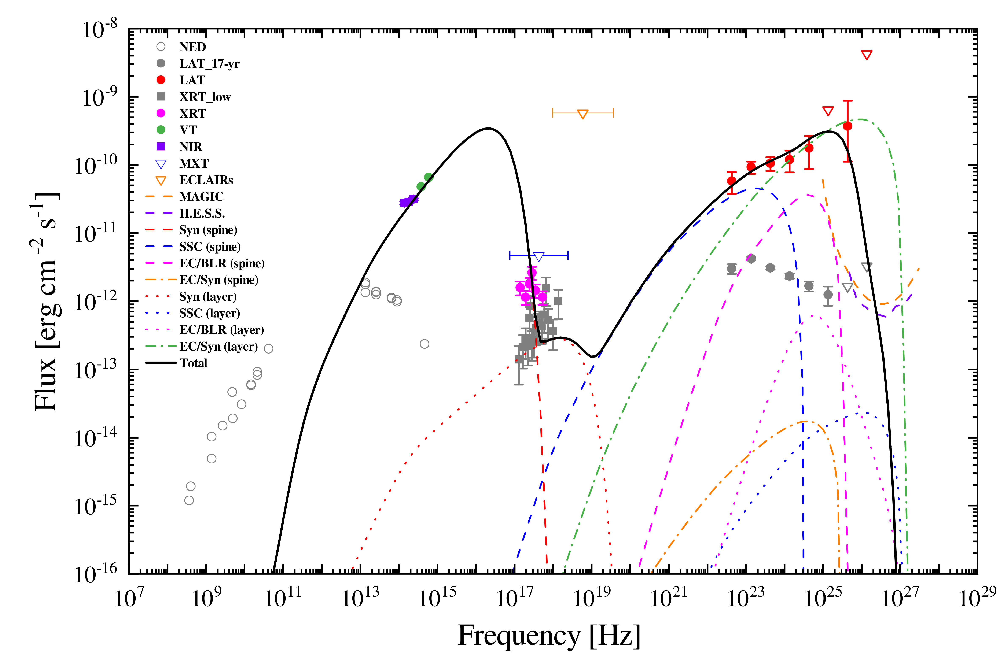<br />
图注：Observed SED with model fitting for PKS 1725+123 in the high-flux state. The three near-infrared (NIR) points (purple solid squares) taken from \(\citet{2025ATel17415....1C},\) the average flux (two green solid circles) from the consecutive four-orbit SVOM-VT observations on 2025 August 20--21, the average spectrum from two Swift-XRT observations (magenta solid circles) on 2025 August 19 and 21 (shaded region in Figure \ref{lc-XRT}), the weighted-average $3\sigma$ upper limit of the flux observed by SVOM-MXT (blue open inverted triangle) and SVOM-ECLAIRs (orange open inverted triangle), and the Fermi-LAT time-resolved spectrum (red solid circles and open inverted triangle) from 2025 August 16--18, collectively constitute the SED of the source in the high-flux state. The black solid line (\textbf{including EBL absorption}) represents the total emission model, including synchrotron radiation (red lines), SSC process (blue lines), and EC/BLR process (magenta lines), where the dashed and dotted lines denote emission from the spine and sheath regions, respectively. The green dash-dotted line indicates the inverse Compton component (\textbf{without EBL absorption}) of the synchrotron photons in the spine zone by the relativistic electrons in the sheath region, while the flux contribution from the opposite process is depicted as the orange dash-dotted line. For comparison, the NED archived radio--optical data (gray open circles), the average spectrum (gray solid squares) from the first three Swift-XRT observations (left panels in Figure \ref{lc-XRT}), and the 17-year Fermi-LAT integrated spectrum (gray solid circles and open inverted triangles) are presented. The sensitivity curves of the MAGIC telescopes (orange dashed line, 50 hr) and H.E.S.S. (purple dashed line, 50 hr) are also given in the figure.<br />
对应解读：“宽带 SED 及模型分量图”“图 6：宽带 SED 模型图”以及 SED 双区 spine-sheath 模型拟合段落。<br />
入选理由：这是最直接支撑论文核心物理解读的图，包含光学、X 射线、Fermi-LAT、上限和历史低态数据，并明确分解同步辐射、SSC、EC/BLR、spine/sheath 以及区间交叉 IC 分量，还标注 EBL 吸收和 MAGIC/H.E.S.S. 灵敏度。它比单波段光变图更能检验“双区模型是否必要”和“光学到 X 射线是否为高峰同步辐射”的核心论点。<br />
来源与置信度：\(arxiv_source\)；high；\(arxiv_source\) / ms.tex:figure[6]</p>
<p><strong>Fig02</strong><br />
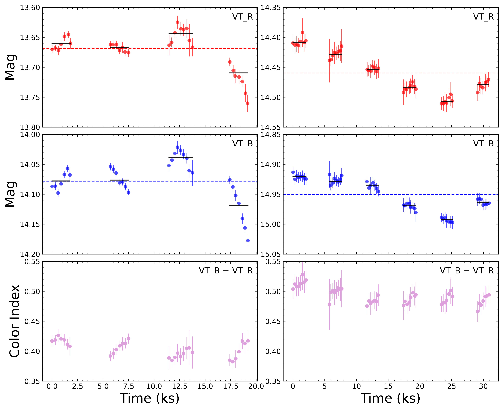<br />
图注：The partial zoom-out of Figure \(\ref{lc-VT_day}.\) Only the data from the consecutive four-orbit observations conducted on 2025 August 20--21 (left panels) and the consecutive six-orbit observations conducted on 2025 August 22--23 (right panels) are presented. The time bin of the data points is also 5 minutes, the same as in Figure \(\ref{lc-VT_day}.\) The horizontal dashed lines indicate the weighted-mean magnitude for the consecutive four-orbit (and six-orbit) observations, derived using Equation (1). The horizontal black solid lines denote the weighted-mean magnitude for each individual orbit observation.<br />
对应解读：“SVOM-VT 分钟级光学光变图”以及“图 2：SVOM-VT 快速光学变光图”。<br />
入选理由：该图专门放大连续四轨和六轨 SVOM-VT 观测，5 分钟 bin、轨道内加权平均线和整段平均线都直接用于判断分钟级快速变光是否显著。它比 Fig01 更适合检查相邻点变化幅度、误差影响和最短变光时标的依据。<br />
来源与置信度：\(arxiv_source\)；high；\(arxiv_source\) / ms.tex:figure[2]</p>
<p><strong>Fig03</strong><br />
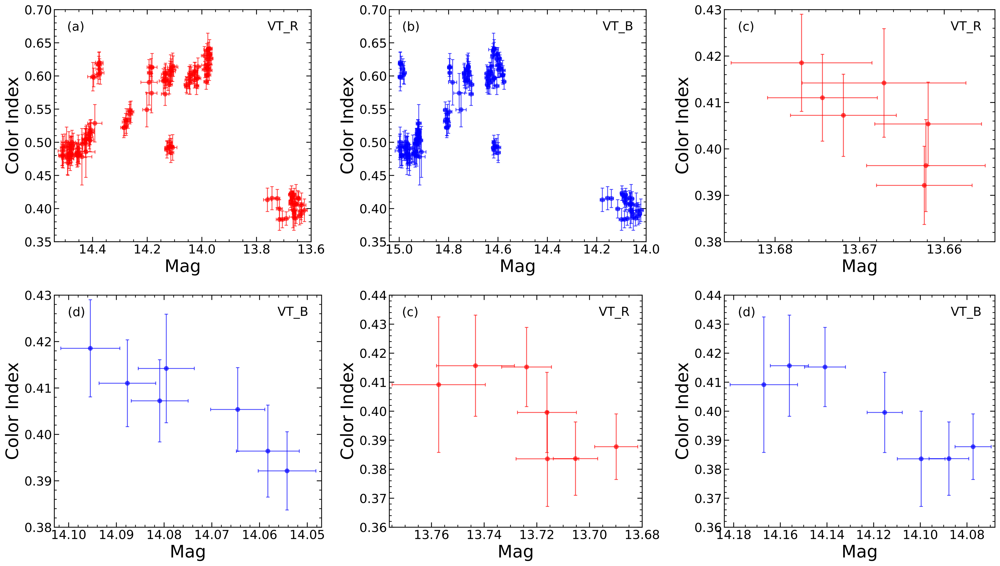<br />
图注：Color index vs. magnitudes in both the VT$\_R$ (left panels) and VT$\_B$ (right panels) bands for PKS 1725+123. Panels (a) and (b) show all the SVOM-VT observational data, identical to those in Figure \(\ref{lc-VT_day}.\) Panels (c) and (d) present the observational data from the second orbit of the consecutive four-orbit observations conducted on 2025 August 20--21. Panels (e) and (f) illustrate the observational data from the fourth orbit of the consecutive four-orbit observations conducted on 2025 August 20--21.<br />
对应解读：“颜色指数-亮度图”以及“图 3：颜色-亮度关系图”。<br />
入选理由：该图直接给出颜色指数与 \(VT_R\)、\(VT_B\) 星等的关系，并分全样本和特定轨道子样本展示，是判断 bluer-when-brighter 行为、星等轴方向、斜率符号和散点相关性的关键证据。<br />
来源与置信度：\(arxiv_source\)；high；\(arxiv_source\) / ms.tex:figure[3]</p>
<p><strong>Fig05</strong><br />
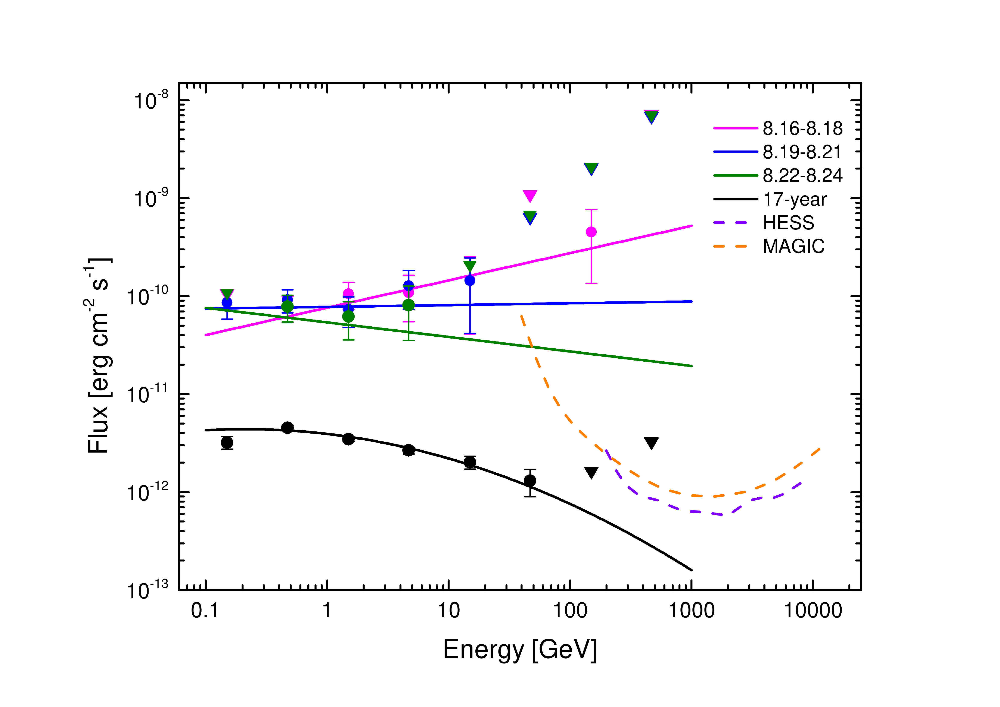<br />
图注：Spectra observed by Fermi-LAT for PKS 1725+123, including the 17-year integrated spectrum (black symbols) and the three time-resolved spectra in the following time intervals: 2025 August 16--18 (magenta symbols), August 19--21 (blue symbols), and August 22--24 (green symbols). The corresponding colored solid lines represent the fitting results. If TS$<$4, an upper limit (denoted by inverted triangles) is given for that energy bin. The sensitivity curves of the MAGIC telescopes (orange dashed line, 50 hr) and H.E.S.S. (purple dashed line, 50 hr) are also given in the figure.<br />
对应解读：“Fermi-LAT 谱或 TS 图”以及“图 5：X 射线和 GeV 谱图”中关于 GeV 谱高能端显著性的部分。<br />
入选理由：该图展示 17 年平均谱与 TeV 触发附近三个时间段的 Fermi-LAT 分段谱，并标出 TS&lt;4 的能量 bin 上限和 MAGIC/H.E.S.S. 灵敏度曲线。它最适合检查 LAT 高能端是否由显著数据点支撑，还是主要依赖上限或低统计涨落。<br />
来源与置信度：\(arxiv_source\)；high；\(arxiv_source\) / ms.tex:figure[5]</p>
<p><strong>Fig04</strong><br />
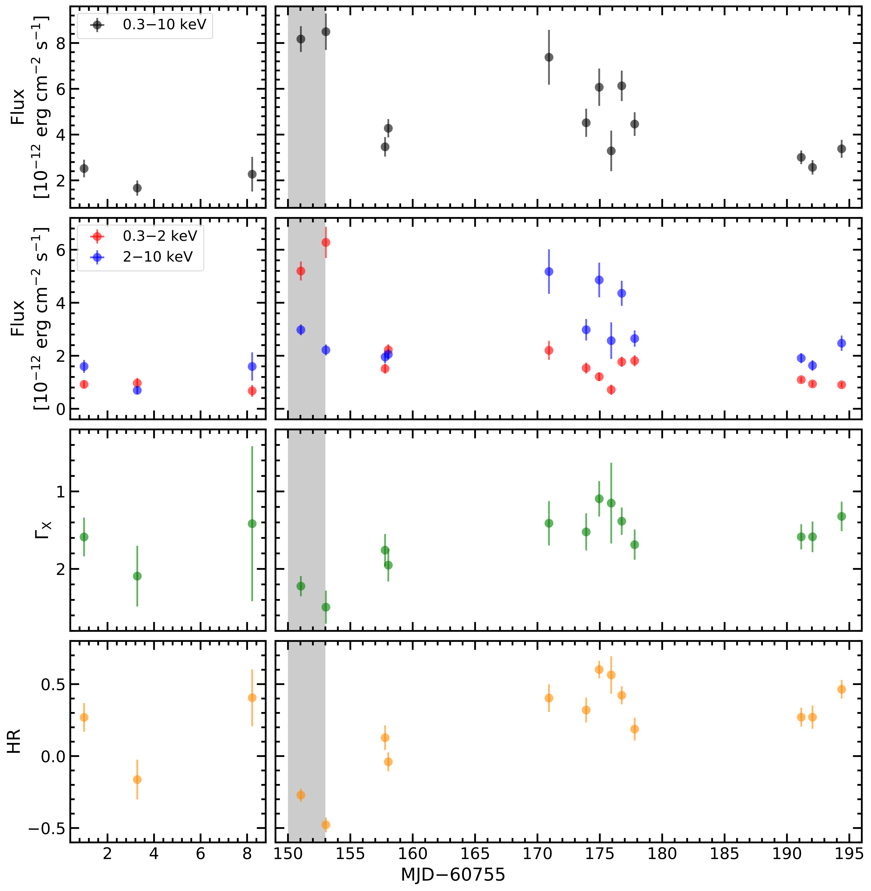<br />
图注：Swift-XRT observations for PKS 1725+123. Light curves of $F_{0.3-10}$ (black points in the top panels), $F_{0.3-2}$ (red points in the second panels), $F_{2-10}$ (blue points in the second panels), $\Gamma_{\gamma}$ (green points in the third panels), and the HR (orange points in bottom panels) are respectively depicted. The gray shaded area indicates the quasi-simultaneous observations (on August 19 and 21) corresponding to the TeV detections. The left panels show the three historical Swift-XRT observations, while the right panels display the Swift-XRT follow-up observations of the TeV detection for the source. MJD 60755 corresponds to 2025 March 21.<br />
对应解读：“Swift-XRT 谱图”建议中的 X 射线状态诊断，以及“图 1/图 5”中关于 X 射线高态和硬度变化的讨论。<br />
入选理由：虽然它不是带残差的 XRT 谱拟合图，但包含 0.3–10 keV、软/硬 X 射线通量、光子指数和硬度比，并用灰色区域标出与 TeV 探测准同时的观测窗口，可用于判断 TeV 期间 X 射线是否处于高态及谱形是否变化。<br />
来源与置信度：\(arxiv_source\)；high；\(arxiv_source\) / ms.tex:figure[4]</p>
<p><strong>Fig07</strong><br />
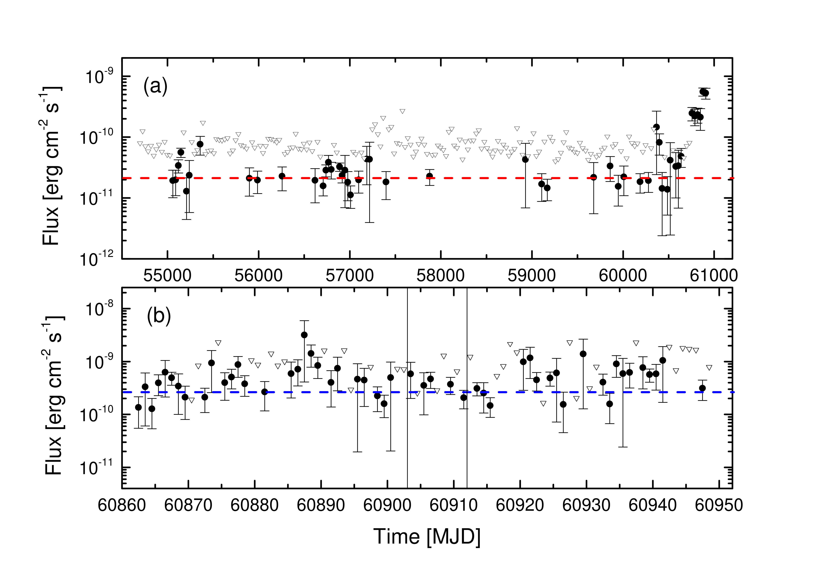<br />
图注：Light curves of PKS 1725+123 observed by the Fermi-LAT in the 0.1-1000 GeV band. If TS$<9$, an upper limit (represented by open inverted triangles) is provided for that time bin. Panel (a): the 17-year long-term light curve, derived with a time bin of 30 days. The red horizontal dashed line denotes the $\sim$17-year average flux, i.e., $F_{\rm 0.1-1000~GeV}=(2.12\pm0.10)\times10^{-11}$ erg cm$^{-2}$ s$^{-1}$. Panel (b): the 3-month light curve with a time bin of 1 day, covering the period from 2025 July 06 to 2025 October 01. The blue horizontal solid line denotes the weighted average flux of $2.65\times10^{-10}$erg cm$^{-2}$ s$^{-1}$, which is derived using Equation (1). The two black vertical lines represent the capture time interval of the three time-resolved spectra in Figure \(\ref{Sectrum_LAT}.\)<br />
对应解读：“TeV 触发前后的多波段光变图”中 GeV 高态时间线，以及“历史状态比较”中长期 GeV 活动水平的对照。<br />
入选理由：该图给出 Fermi-LAT 17 年长期光变和 2025 年 TeV 触发附近的 1 天 bin 光变，并标注低 TS 上限与用于 Fig05 分段谱的时间区间。它能帮助读者判断 GeV 高态相对于长期平均的增强幅度，以及与 TeV 触发时间的对应关系。<br />
来源与置信度：\(arxiv_source\)；high；\(arxiv_source\) / ms.tex:figure[7]</p>
<h4 id="_35">强相关工作</h4>
<p>这篇工作应放在 TeV FSRQ 和极端 blazar 的谱能量分布研究中比较。相近对象包括 \(3C\ 279\)、PKS \(1222+216\)、PKS \(1510-089\) 等已知 TeV 或 VHE FSRQ；这些源同样涉及快速变光、宽线区透明性、远区发射和多区模型问题。检索关键词可用 “TeV FSRQ minute variability”, “PKS 1222+216 MAGIC”, “3C 279 VHE gamma rays”, “FSRQ high synchrotron peak”, “spine sheath blazar model”。</p>
<p>理论上，本文与 blazar sequence、单区 SSC/EC 模型、多区 spine-sheath 模型和磁重联 mini-jet 模型都有关系。支持性方向认为极端 flare 可由喷流内部小尺度结构和局部高效加速产生；相反或张力观点则会问：是否真的需要高同步峰，是否 X 射线可由 IC 成分解释，是否 Fermi-LAT 高能端统计足够支持双区分解。后续检索可用 “blazar sequence FSRQ synchrotron peak”, “external Compton broad line region opacity”, “gamma gamma absorption TeV FSRQ”, “multi-zone leptonic model blazar”。</p>
<p>同一事件方面，本文明确关联的是 2025 年 8 月 MAGIC 和 H.E.S.S. 对 PKS 1725+123 的 TeV 探测报告；如果需要完整事件背景，应检索 MAGIC/H.E.S.S. Astronomer's Telegram、GCN 或合作组公告中 “PKS 1725+123 2025 TeV”。同一源方面，应检索 NASA ADS 中 “PKS 1725+123” 和 “4FGL association PKS 1725+123” 以获得历史光变、射电 VLBI、光谱分类和 Fermi 目录信息。</p>
<p><strong>同一事件 / 同类源线索</strong>：</p>
<ul>
<li><a href="https://arxiv.org/abs/2606.21966">https://arxiv.org/abs/2606.21966</a></li>
<li><a href="https://arxiv.org/pdf/2606.21966">https://arxiv.org/pdf/2606.21966</a></li>
</ul>
<p><strong>相似工作</strong>：</p>
<ul>
<li><a href="https://arxiv.org/abs/1007.0483">https://arxiv.org/abs/1007.0483</a></li>
<li><a href="https://arxiv.org/abs/1111.3624">https://arxiv.org/abs/1111.3624</a></li>
<li><a href="https://arxiv.org/abs/1512.04423">https://arxiv.org/abs/1512.04423</a></li>
</ul>
<p><strong>基础理论 / 方法工作</strong>：</p>
<ul>
<li><a href="https://arxiv.org/abs/astro-ph/9807317">https://arxiv.org/abs/astro-ph/9807317</a></li>
<li><a href="https://arxiv.org/abs/0902.0793">https://arxiv.org/abs/0902.0793</a></li>
<li><a href="https://arxiv.org/abs/0802.1522">https://arxiv.org/abs/0802.1522</a></li>
</ul>
<p><strong>相反观点 / 张力线索</strong>：</p>
<ul>
<li><a href="https://arxiv.org/abs/1008.0567">https://arxiv.org/abs/1008.0567</a></li>
<li><a href="https://arxiv.org/abs/1106.1348">https://arxiv.org/abs/1106.1348</a></li>
</ul>
</details>
<h3 id="4-a-broadband-view-of-the-thermal-and-non-thermal-emission-from-the-embedded-massive-star-cluster-rcw-38">4. A broadband view of the thermal and non-thermal emission from the embedded massive star cluster RCW 38</h3>
<ul>
<li>来源：arXiv / astro-ph.HE</li>
<li>链接：https://arxiv.org/abs/2606.21288v1</li>
<li>作者：Giada Peron, Andrea Bracco, Giovanni Morlino, Silvia Mantovanini, Elena Amato, Daniele Galli, Marco Padovani</li>
<li>评分：novelty 8/10，importance 8/10，relevance 10/10，final 9.70/10</li>
<li>推荐理由：Highly relevant gamma-ray/cosmic-ray study of the massive star cluster RCW 38 using Fermi-LAT and broadband data, with hadronic interpretation and constraints on acceleration efficiency and electron-to-proton ratio.</li>
</ul>
<p><strong>中文题目</strong>：RCW 38 嵌入式大质量星团热辐射与非热辐射的宽波段图像</p>
<p><strong>做了什么</strong>：这篇文章把 RCW 38 这个极年轻、仍嵌在分子云中的大质量星团从 MHz 射电到 GeV 伽马射线的观测放在同一个物理模型里拟合，目标是分清热自由-自由辐射、尘埃热辐射、电子同步辐射和强子相互作用各自贡献了多少。作者使用 GLEAM-X/MWA、Parkes、Planck、IRAS 与 Fermi-LAT 数据，建立一个八参数模型并用 MCMC 约束。主要结论是：RCW 38 的 GeV 伽马射线更自然地由加速质子与宿主分子云气体发生强子碰撞产生，而不是由电子主导的反康普顿或轫致辐射产生；电子-质子加速比被限制在 \(K_{ep}\lesssim 10^{-3}\)，加速效率约为 \(\gtrsim 1\%\)。这使 RCW 38 成为检验“恒星风星团能否给银河宇宙线质子作重要贡献”的一个干净样本。</p>
<p><strong>为什么重要</strong>：它重要在于 RCW 38 没有超新星遗迹或脉冲星风云那样显眼的传统高能发动机，若其伽马射线确实来自星团风驱动的粒子加速，就说明年轻大质量星团本身可以成为银河宇宙线源。文章还把射电低频端、红外/亚毫米尘埃端和 GeV 伽马射线端联合起来，避免只用伽马射线谱形在强子与轻子模型之间做高度退化的判断。</p>
<p><strong>理论 / 观测 / 仪器方法价值</strong>：对理论的价值是给出星团风加速效率与 \(K_{ep}\) 的实测约束，可直接进入星团宇宙线源模型和 \(^{22}\mathrm{Ne}\) 丰度异常讨论。对观测的价值是展示了如何用宽波段 SED 同时约束热气体、尘埃、电子和质子成分。对方法的价值是把低频射电吸收、自由-自由辐射、尘埃灰体辐射、同步辐射和伽马射线产生机制放进同一套 MCMC 框架，而不是逐段拟合。</p>
<p><strong>为什么应该关注</strong>：如果你关心银河宇宙线起源，这篇文章提供了一个比“超新星遗迹是否足够”更宽的源族视角：大质量星团的集体恒星风可能持续注入机械能并加速质子。如果你做高能观测，它提醒你低频射电和红外尘埃数据能强烈限制伽马射线模型。如果你做星际介质或恒星形成，它展示了嵌入式星团周围的气体、尘埃和非热粒子可以被统一建模，而不是互相割裂。</p>
<details class="paper-detail">
<summary>展开详细解读：文章讲解、背景、理论、重点章节、图表与相关工作</summary>
<h4 id="_36">文章详细讲解</h4>
<p>科学问题：RCW 38 是一个很年轻、距离近、仍被致密分子云包裹的大质量星团。此前其 GeV 到数百 GeV 伽马射线辐射已被视为恒星风驱动粒子加速的强证据，但仅凭伽马射线并不容易判断辐射到底来自加速质子与气体的 \(pp\) 碰撞，还是来自加速电子的轫致辐射、反康普顿散射，或这些过程的混合。本文要回答的是：在一个嵌入式星团环境中，热辐射和非热辐射如何分配？恒星风把多少机械能转成了宇宙线？电子相对于质子的加速丰度 \(K_{ep}\) 有多大？</p>
<p>作者怎么做：文章构建了从 MHz 到 GeV 的宽波段谱能量分布。低频射电来自 MWA 的 GLEAM-X 巡天，用来约束同步辐射和自由-自由吸收；GHz 数据来自 Parkes 等射电观测，用来约束 HII 区热自由-自由成分；THz/远红外数据来自 Planck 和 IRAS，用来约束尘埃温度和尘埃质量；高能端使用 Fermi-LAT 的 GeV 伽马射线通量点。作者不是把每个波段分开解释，而是建立一个八参数模型，用 MCMC 同时拟合热气体、尘埃、非热电子和非热质子贡献。</p>
<p>关键结果：拟合支持强子主导解释。RCW 38 的伽马射线通量和谱形可由加速质子撞击星团所在分子云中的高密度气体产生的 \(\pi^0\) 衰变辐射解释。若让电子贡献过大，则低频到 GHz 射电同步辐射和 GeV 伽马射线轻子分量会同时受到限制，最终给出 \(K_{ep}\lesssim 10^{-3}\) 的稳健上限。与此同时，所需宇宙线质子能量对应的恒星风机械能转化效率约为 \(\gtrsim 1\%\)，这与银河宇宙线能量预算中通常需要的源效率处于同一量级。</p>
<p>局限和下一步：本文的结论仍依赖若干环境量，例如星团风机械功率、目标气体质量和空间重合程度、磁场强度、红外辐射场能量密度以及 Fermi-LAT 对扩展源模板的处理。低频射电也可能受自由-自由吸收、背景扣除和源混淆影响。下一步最关键的是用 CTA、SWGO 或 LHAASO 类 TeV 探测器测量更高能谱形与空间形态：若强子模型正确，TeV 端是否有硬谱延伸或截止，将直接告诉我们星团能否把粒子加速到接近 PeV，并决定它们是否与宇宙线膝区有关。</p>
<h4 id="_37">关键结果是怎么做出来的</h4>
<p>本文最核心的证据链从样本选择开始：作者专注于单个源 RCW 38，而不是星团样本堆叠。这样做的优点是可以把源区的多波段热/非热成分建成一个自洽 SED；缺点是结论对该源的气体环境、背景扣除和距离估计更敏感。数据覆盖从 GLEAM-X/MWA 的 MHz 低频射电，到 Parkes 的 GHz 射电，再到 Planck/IRAS 的亚毫米和红外，以及 Fermi-LAT 的 GeV 伽马射线。关键不是数据点数量本身，而是这些波段正好分别卡住自由-自由吸收、同步辐射、尘埃热辐射和 \(pp\) 伽马射线的不同自由度。</p>
<p>事件数层面，Fermi-LAT 的结果通常不是以简单“多少个源光子”汇报，而是通过源模型中的似然改变量、谱能量分布通量点以及检测显著性来体现。本文将伽马射线通量点作为宽波段拟合约束之一，并把强子过程、电子轫致和反康普顿贡献纳入同一个模型比较。读者应重点看伽马射线谱点是否要求一个与射电同步辐射相容的电子族，还是需要额外的质子族；这正是 \(K_{ep}\) 上限的来源。</p>
<p>统计方法上，作者使用 MCMC 探索八参数模型的后验分布。重要诊断不是单一最佳拟合曲线，而是参数后验之间的相关性：例如磁场 \(B\) 增大时，同步辐射对电子数的要求下降；气体密度或云质量增大时，实现同样 \(\pi^0\) 伽马射线所需的质子能量下降；尘埃温度和尘埃质量之间也存在典型灰体退化。若后验仍把 \(K_{ep}\) 压到 \(10^{-3}\) 以下，说明这个限制不是由某一个频点偶然决定，而是由射电和伽马射线联合夹逼出来。</p>
<p>支撑结论的图表应包括：宽波段 SED 总图、不同辐射机制分量分解图、MCMC corner plot 或参数后验图、Fermi-LAT 伽马射线谱点及模型残差、以及可能的空间关联图。尤其要看模型是否在低频射电端过预测同步辐射，是否在 GHz 端错误地把自由-自由辐射解释为非热辐射，是否在红外端通过不合理尘埃参数掩盖其他成分。</p>
<p>主要系统误差来自四类：第一，低频射电的自由-自由吸收和背景扣除；第二，Fermi-LAT 扩展源模板、银河弥散背景和邻近源建模；第三，RCW 38 的分子云质量、距离和几何投影；第四，星团风功率和年龄。稳健性检验的重点应是改变气体质量、磁场先验、电子谱指数、伽马射线背景模型后，\(K_{ep}\lesssim 10^{-3}\) 和 \(\gtrsim 1\%\) 效率是否仍成立。</p>
<details class="paper-subdetail">
<summary>展开背景、理论、公式、模型、章节和图表导读</summary>
<h4 id="_38">背景知识</h4>
<p>RCW 38 是银河系内一个著名的年轻嵌入式大质量恒星形成区，包含大量 OB 星和强烈恒星风，周围仍有致密分子云和 HII 区。它与经典超新星遗迹不同：这里的机械能主要来自大质量恒星风的集体作用，而不是一次爆炸冲击。这使它成为检验“恒星风星团是否能加速宇宙线”的干净实验场。</p>
<p>长期以来，银河宇宙线的标准来源图像主要围绕超新星遗迹展开，因为超新星爆炸能量预算和弥散激波加速理论都很自然。然而，越来越多的伽马射线观测显示年轻星团、OB association、恒星风泡和 superbubble 也有高能辐射。它们的优势是能量注入持续、湍流强、多个风激波相互作用，并且可能天然富集大质量星的核合成产物，这与宇宙线中的 \(^{22}\mathrm{Ne}\) 异常有关。</p>
<p>为什么现在值得重新看？一方面，Fermi-LAT 积累了十多年 GeV 数据，对扩展弱源的灵敏度和背景模型越来越好；另一方面，MWA/GLEAM-X 等低频射电巡天能探测到过去缺乏约束的 MHz 端谱形。这个低频端对区分热自由-自由吸收与非热同步辐射非常关键，因为它直接限制了相对论电子数目，从而限制轻子伽马射线模型。</p>
<p>该领域常见误区之一是“看到 GeV 伽马射线就等于看到了质子加速”。实际上电子轫致辐射和反康普顿散射也能产生 GeV 光子，尤其在高密度或强红外辐射场环境中。另一个误区是“射电谱指数一测就能确定电子谱”。在嵌入式 HII 区里，低频自由-自由吸收会弯曲射电谱，热自由-自由辐射也会在 GHz 段贡献显著通量，因此必须联合建模。</p>
<p>还需注意，星团风加速效率不是一个单纯观测量，而是从伽马射线光度、目标气体密度、源年龄和风功率推回来的模型量。不同文献对云质量、距离、星团成员和风功率的估计可能不同，导致效率有系统差异。因此，本文的价值不在于给出一个孤立数字，而在于用多波段数据把这些退化尽量压缩。</p>
<h4 id="_39">基础理论 / 方法脉络</h4>
<p>基本物理图像是：大质量星团中的 OB 星风以高速流出，多个恒星风相互碰撞并在星团尺度形成热泡、湍流和激波。带电粒子在这些磁化湍流和激波结构中反复散射，可以获得非热能量分布。若加速的是电子，它们会在磁场中产生同步辐射，在离子化气体中产生轫致辐射，并通过反康普顿散射把红外/光学光子提升到伽马射线能段；若加速的是质子，它们主要通过与环境气体的 \(pp\) 碰撞产生 \(\pi^0\)，随后衰变为伽马射线。</p>
<p>本文的关键假设是 RCW 38 的观测 SED 可分解为若干物理成分：HII 区热自由-自由辐射、尘埃热辐射、相对论电子同步辐射，以及宇宙线质子和电子导致的高能辐射。低频射电对同步辐射和自由-自由吸收敏感，GHz 射电对热/非热分离敏感，红外和亚毫米对尘埃温度与质量敏感，GeV 伽马射线对高能粒子总能量和目标介质密度敏感。</p>
<p>最重要的退化之一是磁场 \(B\) 与电子归一化之间的退化。同步辐射亮度大致随电子数和 \(B\) 的幂律增加，因此较强的 \(B\) 可以用较少电子解释同样的射电通量。另一个退化是气体密度与质子能量之间的退化：\(pp\) 伽马射线光度大致与目标气体密度和宇宙线质子能量的乘积成正比。尘埃端也有温度与质量退化，低温大质量尘埃和高温小质量尘埃在部分频段可能产生相似通量。</p>
<p>观测方法上，宽波段 SED 的价值在于每个波段限制不同参数。若只看 Fermi-LAT 谱，强子和轻子模型往往都能拟合；加入 MHz-GHz 射电后，电子族不能任意增加，否则会过量产生同步辐射。加入红外/亚毫米后，反康普顿所需的靶光子场也受到约束。本文的 MCMC 框架正是利用这种“交叉约束”把 \(K_{ep}\) 和加速效率压到有物理意义的范围。</p>
<p>系统误差主要体现在背景和几何。RCW 38 位于复杂银河平面区域，射电和红外背景都不平坦，Fermi-LAT 的银河弥散背景也可能影响弱扩展源通量。源区是否与分子云完全重合，会影响有效靶密度；如果宇宙线已经扩散出云，谱形和空间形态也会改变。因此，本文结论应理解为在给定源模板、云质量和单区近似下的最优约束。</p>
<h4 id="_40">公式与推导</h4>
<p>第一步从星团风能量预算出发。若第 \(i\) 颗大质量星的质量损失率为 \(\dot M_i\)，风速为 \(v_{w,i}\)，总机械功率为</p>
<div class="math-display">\[L_w=\sum_i \frac{1}{2}\dot M_i v_{w,i}^2 .\]</div>
<p>这里 \(L_w\) 是可供粒子加速的能量源，适用于恒星风动能热化或进入湍流/激波的近似。若星团年龄为 \(t_{\rm age}\)，加速效率为 \(\eta_{\rm CR}\)，则宇宙线总能量近似为</p>
<div class="math-display">\[W_{\rm CR}=\eta_{\rm CR}L_w t_{\rm age} .\]</div>
<p>本文给出的 \(\eta_{\rm CR}\gtrsim 1\%\) 本质上就是把观测伽马射线光度反推到 \(W_{\rm CR}\)，再与 \(L_w t_{\rm age}\) 比较。</p>
<p>第二步设定非热粒子谱。常用单区模型把质子或电子写成带截止的幂律：</p>
<div class="math-display">\[N_j(E)=A_j E^{-s_j}\exp\left(-\frac{E}{E_{\rm cut,j}}\right),\quad j\in\{p,e\} .\]</div>
<p>其中 \(N_j(E)\) 是单位能量粒子数，\(A_j\) 是归一化，\(s_j\) 是谱指数，\(E_{\rm cut,j}\) 是截止能量。电子-质子比定义为某一参考能量附近的归一化比值：</p>
<div class="math-display">\[K_{ep}=\frac{N_e(E_0)}{N_p(E_0)}\simeq \frac{A_e}{A_p}\]</div>
<p>当电子和质子谱指数相近时，\(K_{ep}\) 可近似理解为加速源处的电子相对丰度。</p>
<p>第三步连接射电同步辐射。对幂律电子 \(N_e(E)\propto E^{-s_e}\)，同步辐射体发射率可写成标度关系</p>
<div class="math-display">\[j_\nu^{\rm syn}\propto A_e B^{(s_e+1)/2}\nu^{-(s_e-1)/2} .\]</div>
<p>这里 \(B\) 是磁场强度，\(\nu\) 是频率。该式说明射电数据同时约束 \(A_e\)、\(B\) 和 \(s_e\)，但 \(A_e\) 与 \(B\) 有明显退化。观测到的射电通量还要通过源体积 \(V\) 和距离 \(d\) 转换：</p>
<div class="math-display">\[F_\nu^{\rm syn}=\frac{1}{4\pi d^2}\int_V j_\nu^{\rm syn}\,dV .\]</div>
<p>第四步加入热自由-自由辐射及吸收。HII 区自由-自由光学深度常写成近似形式</p>
<div class="math-display">\[\tau_\nu^{\rm ff}\propto T_e^{-1.35}\nu^{-2.1}{\rm EM},\]</div>
<p>其中 \(T_e\) 是电子温度，\({\rm EM}=\int n_e^2 dl\) 是发射量。热自由-自由通量可写成</p>
<div class="math-display">\[F_\nu^{\rm ff}=\Omega B_\nu(T_e)\left(1-e^{-\tau_\nu^{\rm ff}}\right),\]</div>
<p>其中 \(\Omega\) 是源立体角，\(B_\nu(T_e)\) 是普朗克函数。在低频端，\(\tau_\nu^{\rm ff}\) 可能显著压低非热同步辐射，因此不能把 MHz 谱弯曲简单解释成电子谱截止。</p>
<p>第五步描述尘埃热辐射。远红外到亚毫米常用灰体模型：</p>
<div class="math-display">\[F_\nu^{\rm dust}=\frac{M_d\kappa_\nu B_\nu(T_d)}{d^2},\quad \kappa_\nu=\kappa_0\left(\frac{\nu}{\nu_0}\right)^\beta .\]</div>
<p>其中 \(M_d\) 是尘埃质量，\(T_d\) 是尘埃温度，\(\kappa_\nu\) 是尘埃吸收系数，\(\beta\) 是尘埃发射率指数。该项约束红外光子场和热环境，也帮助避免把尘埃尾部误当成其他连续谱成分。</p>
<p>第六步连接强子伽马射线。质子与气体碰撞的伽马射线光度可近似按碰撞损失时间估算：</p>
<div class="math-display">\[t_{pp}^{-1}=n_H\kappa_{pp}\sigma_{pp}c,\]</div>
<p>其中 \(n_H\) 是氢数密度，\(\sigma_{pp}\) 是非弹性截面，\(\kappa_{pp}\) 是非弹性能量损失因子。于是总伽马射线光度标度为</p>
<div class="math-display">\[L_\gamma^{pp}\sim f_\gamma\frac{W_p}{t_{pp}}\propto n_H W_p,\]</div>
<p>其中 \(W_p\) 是宇宙线质子能量，\(f_\gamma\) 表示进入 \(\pi^0\) 衰变伽马射线的能量份额。这解释了为什么气体质量和质子能量存在强退化。</p>
<p>第七步写出观测拟合的似然。若第 \(k\) 个频点或能段的观测通量为 \(F_k\)，误差为 \(\sigma_k\)，模型为 \(M_k(\boldsymbol\theta)\)，高斯近似下</p>
<div class="math-display">\[\ln \mathcal{L}(\boldsymbol\theta)=-\frac{1}{2}\sum_k\left[\frac{F_k-M_k(\boldsymbol\theta)}{\sigma_k}\right]^2+{\rm const} .\]</div>
<p>参数向量 \(\boldsymbol\theta\) 包含非热粒子、热气体、尘埃和环境参数。MCMC 采样得到后验</p>
<div class="math-display">\[p(\boldsymbol\theta|\{F_k\})\propto \mathcal{L}(\boldsymbol\theta)p(\boldsymbol\theta),\]</div>
<p>其中 \(p(\boldsymbol\theta)\) 是先验。本文对 \(K_{ep}\) 和 \(\eta_{\rm CR}\) 的约束就是从该后验边缘化得到的。</p>
<h4 id="_41">模型拟合 / 应用方法</h4>
<p>本文的模型拟合对象是 RCW 38 的整体宽波段 SED。拟合量包括射电到红外/亚毫米的通量密度以及 Fermi-LAT 的伽马射线谱点。模型成分包括自由-自由辐射、自由-自由吸收、尘埃灰体辐射、同步辐射、电子高能辐射和强子 \(pp\) 伽马射线。八参数模型的具体参数可理解为在热气体、尘埃、磁场/电子、质子能量和谱形之间进行最小但足够的自由度分配。</p>
<p>参数估计使用 MCMC，这比单点最小 \(\chi^2\) 更适合此类问题，因为参数退化强且不确定度非高斯。读者应关注边缘后验，而不仅是最佳拟合值。若 \(K_{ep}\) 的后验在高值方向被射电数据截断，说明电子过多会造成同步辐射过量；若 \(\eta_{\rm CR}\) 的后验随气体密度变化明显，说明伽马射线主要约束的是 \(n_H W_p\) 的组合，而非单独的 \(W_p\)。</p>
<p>残差诊断应分波段看。MHz 段若模型系统性高于数据，可能说明自由-自由吸收被低估或同步电子太多；GHz 段若模型低于数据，可能需要更多热自由-自由或非热同步成分；红外端若残差呈系统弯曲，可能是单温尘埃模型过于简单；GeV 端若高能点偏硬，则可能提示更高截止能量、扩散效应或未建模源混入。</p>
<p>主要系统误差包括通量标定、背景扣除、源区孔径选择、Fermi-LAT 弥散背景模型、分子云质量、距离、星团风功率和年龄。实际应用中，\(K_{ep}\lesssim 10^{-3}\) 应理解为在本文假设下的强上限，而非完全模型无关数值；\(\eta_{\rm CR}\gtrsim 1\%\) 也会随 \(L_w\)、\(t_{\rm age}\) 和 \(n_H\) 的更新而移动。</p>
<p>模型可能失败的场景包括：源内粒子分布并非单区均匀，宇宙线已经显著扩散到云外，磁场强烈空间变化，或存在未识别的脉冲星/超新星遗迹贡献。未来 TeV 形态学观测可以检验伽马射线是否沿分子云分布增强；高分辨率低频射电可以分离热吸收屏与非热发射区；毫米分子线数据可以改进靶气体质量，从而减少 \(W_p\) 与 \(n_H\) 的退化。</p>
<h4 id="_42">重点章节 / 结果段落怎么读</h4>
<ol>
<li>
<p>数据与样本部分应先读。重点看作者如何定义 RCW 38 的源区、采用哪些 GLEAM-X/MWA 频点、Parkes/GHz 数据、Planck/IRAS 数据和 Fermi-LAT 谱点。需要特别留意不同仪器角分辨率差异，以及通量是否经过统一孔径或背景扣除。</p>
</li>
<li>
<p>多波段模型部分是全文核心。读者应检查八参数模型中哪些参数自由、哪些固定或采用外部先验。尤其要看自由-自由吸收、尘埃灰体、同步辐射和 \(pp\) 伽马射线是否被同时拟合，而不是先扣除某些成分后再拟合其他成分。</p>
</li>
<li>
<p>MCMC 和后验结果部分决定结论可信度。重点读 corner plot、参数置信区间和 \(K_{ep}\)、\(\eta_{\rm CR}\) 的边缘分布。不要只看最佳拟合 SED 是否“画得好看”，而要看是否存在同样好的轻子解。</p>
</li>
<li>
<p>强子与轻子解释比较部分应与射电约束一起读。若电子模型要解释 GeV 伽马射线，它也必须不违反 MHz-GHz 同步辐射约束；这正是本文排除高 \(K_{ep}\) 的关键逻辑。</p>
</li>
<li>
<p>讨论和展望部分应关注 RCW 38 对银河宇宙线源族的意义。作者把约 \(\gtrsim 1\%\) 的加速效率与宇宙线能量预算、\(^{22}\mathrm{Ne}\) 异常和未来 TeV 探测联系起来，这部分是理解论文外推意义的重点。</p>
</li>
</ol>
<h4 id="_43">建议重点查看的图表</h4>
<ol>
<li>
<p>宽波段 SED 总图：看 MHz 到 GeV 数据点是否被同一组参数连续解释，各成分之和是否在每个波段都不过拟合。</p>
</li>
<li>
<p>辐射机制分解图：看自由-自由、尘埃、同步、强子 \(\pi^0\)、电子轫致和反康普顿各自在哪些频段占主导，尤其看 GeV 端是否由强子分量主导。</p>
</li>
<li>
<p>MCMC corner plot 或后验分布：看 \(K_{ep}\)、\(\eta_{\rm CR}\)、\(B\)、气体相关参数和谱指数之间的相关性，确认 \(K_{ep}\) 上限是否稳健。</p>
</li>
<li>
<p>低频射电谱图：看 MHz 端是否存在自由-自由吸收导致的低频转折，以及该转折对同步电子数的限制。</p>
</li>
<li>
<p>Fermi-LAT 谱点与模型残差：看 GeV 谱形是否有轻子模型难以同时满足的硬度或归一化，误差条是否足以区分模型。</p>
</li>
<li>
<p>空间模板或多波段形态对比图：看伽马射线、分子云、红外尘埃和星团位置是否空间相关；若相关性弱，强子解释会变得不稳。</p>
</li>
<li>
<p>参数稳健性表：若有，应看改变环境参数、背景模型或先验后，\(K_{ep}\lesssim 10^{-3}\) 和 \(\eta_{\rm CR}\gtrsim 1\%\) 是否保持。</p>
</li>
</ol>
<h4 id="_44">关键图表逐图导读</h4>
<p>图 1：通常应是 RCW 38 的多波段空间图或源区示意。横纵坐标多为银河坐标或赤经赤纬，叠加射电、红外、分子气体或伽马射线显著性轮廓。读图时要看选定孔径是否覆盖主要红外/分子云结构，也要看附近是否有可能混入的高能源。陷阱是不同波段角分辨率差异很大，轮廓重合不一定代表物理共址。</p>
<p>图 2：宽波段 SED 总图应是最关键图。横轴为频率 \(\nu\) 或光子能量，纵轴为 \(\nu F_\nu\) 或等价能量通量。数据点来自 GLEAM-X/MWA、Parkes、Planck、IRAS 和 Fermi-LAT；模型线分成热自由-自由、尘埃、同步和伽马射线分量。主要结论是同一模型能同时解释热和非热端，并且 GeV 端倾向强子贡献。读图陷阱是不要把红外高峰当作非热峰，它主要是尘埃热辐射。</p>
<p>图 3：辐射机制分解图若单独给出，应重点看 GeV 区域的 \(\pi^0\) 衰变曲线、电子轫致曲线和反康普顿曲线的相对高度。若电子曲线被压得很低而同步曲线仍匹配射电，就说明 \(K_{ep}\) 被射电强约束。陷阱是模型线的可见差异可能小于系统误差，必须结合后验区间判断。</p>
<p>图 4：MCMC corner plot 或参数后验图。坐标轴为各模型参数，例如 \(K_{ep}\)、\(B\)、质子能量、谱指数、尘埃温度等；等高线显示 \(1\sigma\)、\(2\sigma\) 置信区域或相应可信区间。读者应寻找 \(K_{ep}\) 与 \(B\) 的反相关、\(W_p\) 与 \(n_H\) 的反相关，以及尘埃参数之间的退化。陷阱是边界截断的后验可能受先验影响，需要看作者是否讨论先验范围。</p>
<p>图 5：Fermi-LAT 谱点、残差或测试统计图。横轴为能量，纵轴为能量通量、残差或 \({\rm TS}\)。应看强子模型是否在所有能段内落在误差条内，以及轻子模型是否在某些能段系统偏离。陷阱是 GeV 低能端受银河弥散背景影响最大，高能端统计误差大，因此单个点的偏差不应过度解读。</p>
<p>图 6：若有稳健性或模型比较图，应看不同假设下 \(K_{ep}\) 上限和加速效率如何变化。横轴可能是气体质量、磁场、背景模型或电子谱指数，纵轴是拟合优度或关键参数。真正稳健的结论应在合理参数范围内保持强子主导，而不是只在某一组固定环境参数下成立。</p>
</details>
<h4 id="_45">论文原图 / 可嵌入图片</h4>
<p><strong>Fig03</strong><br />
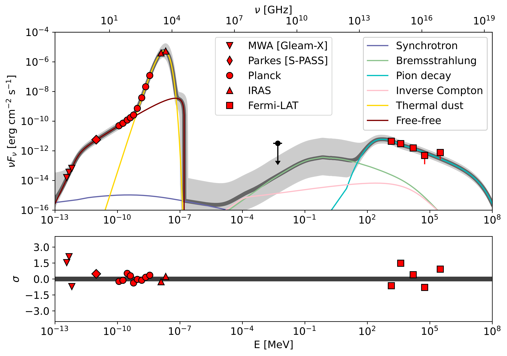<br />
图注：{In the top panel: the best-fit model for the broadband SED of RCW~38. Red points refer to the observations of the different instruments listed in the central inset, while the black upper limit indicates the level of the emission measured by Chandra, as explained in the text. The grey curve represent the sum of thermal and non-thermal components, listed in the figure legend, the grey area indicates the confidence levels corresponding to the 16th and 84th percentiles. In the lower panel: the residuals of the fit computed as explained in the text.}<br />
对应解读：对应“建议重点查看的图表”中的宽波段 SED 总图、辐射机制分解图、Fermi-LAT 谱点与模型残差，以及“关键图表逐图导读”中的图 2/图 3/图 5 和模型拟合段落。<br />
入选理由：这是全文最核心的观测—模型对照图：同时给出 MHz 到 GeV 的宽波段数据点、热与非热模型成分、总模型、16–84 百分位置信区间以及下方面板残差。它直接支撑日报中关于自由-自由、尘埃、同步、强子伽马射线等成分如何共同解释 SED、GeV 端是否由强子主导、以及各波段是否存在系统残差的解读。<br />
来源与置信度：\(arxiv_source\)；high；\(arxiv_source\) / \(arxiv_v0.tex\):figure[3]</p>
<p><strong>Fig04</strong><br />
<br />
图注：Corner plots for the fitted parameters in the model.<br />
对应解读：对应“建议重点查看的图表”中的 MCMC corner plot 或后验分布，以及“关键图表逐图导读”中的图 4 和模型拟合段落。<br />
入选理由：该图是判断参数约束是否稳健的关键，直接展示八参数模型的后验分布和参数退化关系。日报中特别强调要检查 \(K_ep\)、磁场、质子能量或气体相关参数、谱指数之间的相关性；这些信息只有 corner plot 能系统呈现，因此比单纯的最佳拟合曲线更能支持 \(K_ep\) 上限和加速效率的可信度判断。<br />
来源与置信度：\(arxiv_source\)；high；\(arxiv_source\) / \(arxiv_v0.tex\):figure[4]</p>
<p><strong>Fig01</strong><br />
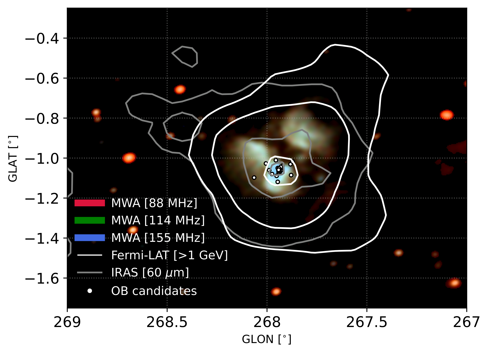<br />
图注：RGB map of RCW~38 as detected by MWA within the GLEAM-X survey \(\citep{Mantovanini2025},\) in three different bands: 88 MHz (red), 114 MHz (green) and 155 MHz (blue). The grey contours represent emission unveiled by IRAS at 60 $\mu$m, while the white contours is the gamma-ray signal derived by {\(\it\) Fermi}-LAT above 1 GeV. In the latter case, the contours indicate significance level corresponding to a test-statistics of 50,100, and 500.<br />
对应解读：对应“建议重点查看的图表”中的空间模板或多波段形态对比图，以及“关键图表逐图导读”中的图 1。<br />
入选理由：该图把 GLEAM-X/MWA 低频射电 RGB 图与 IRAS 60 微米轮廓、Fermi-LAT 大于 1 GeV 的伽马射线 TS 轮廓叠加，直接用于检查星团、尘埃/分子云相关结构和高能信号的空间关系。它支撑日报中关于强子解释是否依赖伽马射线与致密气体/红外结构共址的讨论。<br />
来源与置信度：\(arxiv_source\)；high；\(arxiv_source\) / \(arxiv_v0.tex\):figure[1]</p>
<p><strong>Fig08</strong><br />
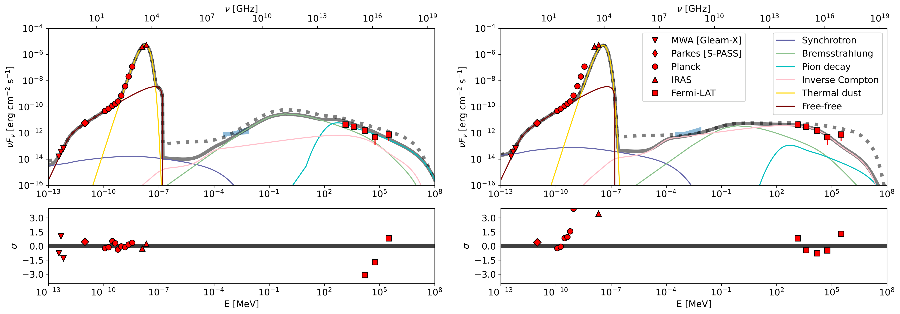<br />
图注：Broadband modeling of the emission under the assumption of non-thermal origin of the X-ray flux. The latter is represented by a blue butterfly, which accounts for the uncertainties in the flux normalization and slope as in \(\cite{Fukushima2023}.\) On the left panel, the bremsstrahlung component is increased, compared to the nominal model presented in the main text, by increasing $K_{ep}$ to 0.05. Alongside, the magnetic field is decreased to 10 $\mu$G to avoid that the synchrotron emission overshoots the data. In the right panel the IC component is increased by increasing $K_{ep}$ to 0.2, the magnetic field is decreased to 10 $\mu$G, and the gas column density to $3\times10^{19}$cm$^{-2}$; to adjust the normalization of thermal dust, its temperature is increased to 80 K. In both plots the grey solid curve represents the total emission, while the dotted grey curve is the total emission, when neglecting the electron cooling.<br />
对应解读：对应“建议重点查看的图表”中的模型比较/稳健性图，以及模型拟合段落中关于轻子模型、\(K_ep\) 上限、磁场和气体柱密度假设变化的讨论。<br />
入选理由：该图专门测试将 X 射线视为非热起源时的宽波段模型，并展示通过提高 \(K_ep\)、降低磁场或改变气体柱密度来增强轫致或反康普顿分量的情形。它非常适合说明为什么高电子比例会与射电/伽马射线约束发生张力，从而支撑 \(K_ep\) 不宜过高和强子主导解释的稳健性。<br />
来源与置信度：\(arxiv_source\)；high；\(arxiv_source\) / \(arxiv_v0.tex\):figure[8]</p>
<p><strong>Fig05</strong><br />
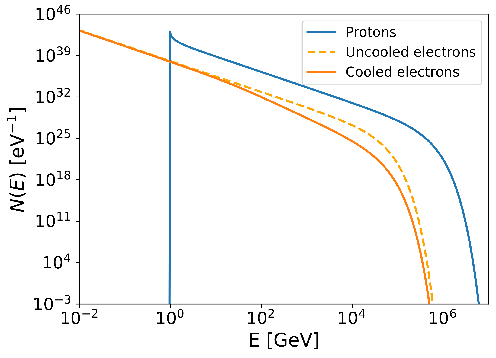<br />
图注：Electrons (orange) and protons (blue) spectral energy distribution (as a function of total energy of the particles) calculated including the terms of losses with the best-fit parameters listed in Table \(\ref{tab:result_pars}.\) For reference, we show also the un-cooled population of electrons, when the steepening due to losses is neglected.<br />
对应解读：对应模型拟合段落中关于电子冷却、质子与电子能谱、\(K_ep\) 物理含义和非热粒子分布的解释。<br />
入选理由：该图不是直接的观测 SED，但展示了最佳拟合参数下电子和质子的粒子能谱，并比较了冷却与未冷却电子分布。它有助于解释为什么电子同步、轫致和 IC 分量受到限制，以及质子能量分布如何支撑强子伽马射线解释。<br />
来源与置信度：\(arxiv_source\)；high；\(arxiv_source\) / \(arxiv_v0.tex\):figure[5]</p>
<p><strong>Fig07</strong><br />
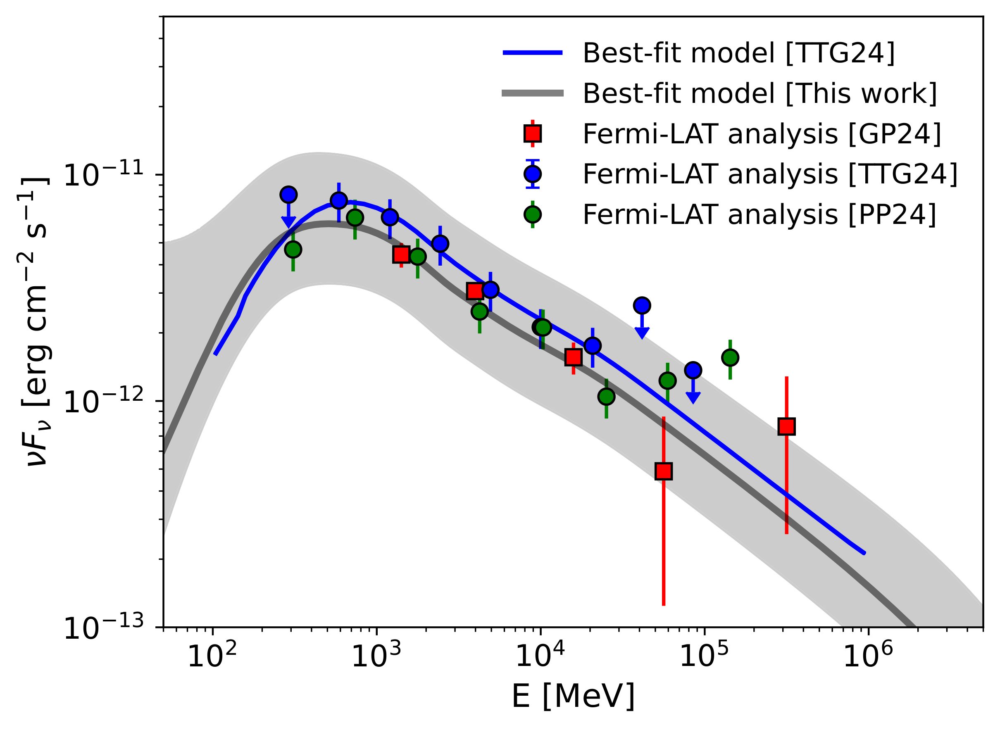<br />
图注：Comparison of the SEDs derived in different studies, as described in the text. The blue curve is the best fit model derived by \(\cite{Ge2024RCW38},\) while the gray curve and the gray shaded area represent the best-fit model and its confidence levels as derived in this work.<br />
对应解读：对应“建议重点查看的图表”中的参数稳健性/模型比较，以及日报中关于本文结果与既有研究差异的背景解读。<br />
入选理由：该图比较本文 SED 最佳拟合及置信区间与其他研究的模型结果，可用于说明新宽波段建模相对于既有解释的差异。不过它不如 Fig03 和 Fig04 直接展示本文的核心拟合成分与参数后验，因此排序靠后。<br />
来源与置信度：\(arxiv_source\)；high；\(arxiv_source\) / \(arxiv_v0.tex\):figure[7]</p>
<h4 id="_46">强相关工作</h4>
<p>这篇工作属于“年轻大质量星团/OB association 作为银河宇宙线源”的同类研究脉络。可与 Westerlund 1、Westerlund 2、Cygnus Cocoon、30 Doradus C 以及其他 Fermi-LAT/H.E.S.S. 对星团和 superbubble 的观测比较。相似问题是：伽马射线是否与分子气体空间相关？谱是否延伸到 TeV？所需能量是否能由星团风供应？检索关键词可用 “RCW 38 gamma rays stellar winds cosmic rays”、“massive star clusters cosmic ray acceleration”、“Cygnus Cocoon Fermi LAT”、“Westerlund 1 HESS cosmic rays”。</p>
<p>基础理论方面，应联系弥散激波加速、superbubble 湍流加速、恒星风泡动力学和宇宙线化学组成研究。特别是 \(^{22}\mathrm{Ne}\) 异常常被用作支持大质量星及其风物质参与宇宙线源区的证据。相反或张力观点包括：超新星遗迹仍可解释大部分银河宇宙线能量预算；某些星团伽马射线可能来自未解析脉冲星、遗留超新星遗迹或背景弥散辐射建模误差；宽波段 SED 的单区模型可能低估空间扩散和多相介质效应。</p>
<p><strong>同一事件 / 同类源线索</strong>：</p>
<ul>
<li><a href="https://arxiv.org/abs/2606.21288">https://arxiv.org/abs/2606.21288</a></li>
<li><a href="https://arxiv.org/pdf/2606.21288">https://arxiv.org/pdf/2606.21288</a></li>
</ul>
<p><strong>相似工作</strong>：</p>
<ul>
<li><a href="https://arxiv.org/abs/1902.10045">https://arxiv.org/abs/1902.10045</a></li>
<li><a href="https://arxiv.org/abs/1610.08318">https://arxiv.org/abs/1610.08318</a></li>
</ul>
<p><strong>基础理论 / 方法工作</strong>：</p>
<ul>
<li><a href="https://arxiv.org/abs/1208.5787">https://arxiv.org/abs/1208.5787</a></li>
<li><a href="https://arxiv.org/abs/1401.4528">https://arxiv.org/abs/1401.4528</a></li>
</ul>
<p><strong>相反观点 / 张力线索</strong>：</p>
<p>（未提供）</p>
</details>
<h3 id="5-old-and-bright-the-remarkable-radio-brightening-of-the-engine-driven-sn-2012au-several-years-after-explosion-signals-the-birth-of-a-pwn">5. Old and Bright: The Remarkable Radio Brightening of the Engine-driven SN 2012au Several Years After Explosion Signals the Birth of a PWN</h3>
<ul>
<li>来源：arXiv / astro-ph.HE</li>
<li>链接：https://arxiv.org/abs/2606.20836v1</li>
<li>作者：Eli Wiston, Raffaella Margutti, A. J. Nayana, Brian D. Metzger, Kohta Murase, Dan Milisavljevic, Itai Sfaradi, Ryan Chornock</li>
<li>评分：novelty 9/10，importance 8/10，relevance 9/10，final 9.65/10</li>
<li>推荐理由：Compelling broadband evidence that late radio brightening of engine-driven SN 2012au may signal a newborn PWN; directly relevant to compact remnants, PWN formation, nonthermal emission, and high-energy transients.</li>
</ul>
<p><strong>中文题目</strong>：“又老又亮”：发动机驱动型超新星 SN 2012au 爆后多年射电再增亮，指向新生脉冲星风云的诞生</p>
<p><strong>做了什么</strong>：这篇论文汇总了发动机驱动的 Ib 型超新星 SN 2012au 爆后约 13 年的射电到 X 射线观测。早期约 \(190\) 天内的射电和 X 射线可由常规外激波与 \( \rho_{\rm CSM}\propto r^{-2} \) 的恒星风型星周介质相互作用解释；但在爆后约 \(6.7\) 年开始，源出现显著射电再增亮，且谱峰宽、演化快、光薄谱斜率很浅，约 \(F_\nu\propto \nu^{-0.31\pm0.02}\)。作者认为，若坚持用非球对称激波撞击致密星周介质解释，需要非常极端且缺乏自然来源的密度、几何和质量；相比之下，一个新生脉冲星风云中遗留正负电子等离子体的绝热膨胀，能更自然地解释射电谱演化和 X 射线不探测。论文把 SN 2012au 提出为目前最有说服力的“年轻新生 PWN”候选体之一，并指出即将到来的 VLBI 角尺度测量可直接检验该图像。</p>
<p><strong>为什么重要</strong>：核心重要性在于：这是少数能在超新星爆后十年量级上看到中心致密天体活动痕迹的案例。通常我们通过光学晚期谱线、早期能量注入或间接动力学推断磁星或脉冲星存在；这里则可能在射电波段直接看到新生 PWN 从膨胀抛射物中“浮现”。如果解释成立，它会把发动机驱动超新星、磁星形成、年轻 PWN、非热粒子注入和星周环境诊断连接到同一个可观测对象上。</p>
<p><strong>理论 / 观测 / 仪器方法价值</strong>：对观测而言，论文提供了一个长期、多波段跟踪如何区分外激波和中心发动机的样板：单看某一时刻的射电亮度不够，必须看谱峰频率、峰值流量、光薄谱指数、亮温、尺寸约束和 X 射线上限的联合演化。对理论而言，它强调新生 PWN 的早期射电释放可能受遗留电子谱和绝热冷却支配，而不必伴随强 X 射线。对方法而言，论文也展示了如何用“极端星周介质需求”作为反证，推动中心发动机解释。</p>
<p><strong>为什么应该关注</strong>：如果你关心致密天体诞生、磁星驱动爆炸、Ib/c 超新星的晚期非热辐射，或想知道未来 ngVLA、SKA、VLBI 如何寻找隐藏中心发动机，这篇都值得读。它不是简单多一个晚期射电源，而是在问：我们能否在超新星残骸真正形成之前，抓到一个年龄只有十年量级的 PWN？这会影响我们理解从超新星到脉冲星风云、再到年轻超新星遗迹的连续演化。</p>
<details class="paper-detail">
<summary>展开详细解读：文章讲解、背景、理论、重点章节、图表与相关工作</summary>
<h4 id="_47">文章详细讲解</h4>
<p>科学问题：SN 2012au 是一个发动机驱动的 Type Ib 超新星，早期表现已经提示爆炸中可能有中心发动机或高速非球对称喷流成分。关键问题是，爆后数年到十几年以后，观测到的非热射电辐射究竟仍来自外激波扫过星周介质，还是来自新生中子星驱动的脉冲星风云。二者都能产生同步辐射，但对源尺寸、膨胀速度、谱峰演化、电子能谱、X 射线伴随辐射和所需环境密度的要求非常不同。</p>
<p>作者怎么做：论文构建了 SN 2012au 爆后 \(13\) 年的宽频观测序列，覆盖早期和晚期的射电，并结合 X 射线不探测约束。早期 \( \delta t\leq190\,{\rm d} \) 的射电和 X 射线演化用经典前向激波模型处理，即超新星外层高速物质与 \( \rho_{\rm CSM}\propto r^{-2} \) 的风型星周介质相互作用。晚期从 \( \delta t\approx6.7\,{\rm yr} \) 开始，射电流量重新升高，作者对每个历元的射电谱峰、光薄谱斜率和谱形宽度做了建模，并将其分别放入非球对称激波和新生 PWN 两套物理图像中检验。</p>
<p>关键结果：晚期射电成分的光薄谱非常浅，约 \(F_\nu\propto\nu^{-0.31\pm0.02}\)，对应电子能谱指数约 \(p\approx1.6\)，明显硬于普通强激波加速常见的 \(p\sim2\) 到 \(3\)。谱峰宽且快速演化，推导出的发射区很小，约 \(R\lesssim10^{16}\,{\rm cm}\)，对应膨胀速度仅 \(\lesssim500\,{\rm km\,s^{-1}}\)，同时需要高密度环境 \(\gtrsim10^4\,{\rm cm^{-3}}\)。若把这些量全部归因于外部激波撞击星周物质，就必须假设非常致密、紧凑、几何很特殊且总质量不低的介质结构。作者认为这种构造缺乏清晰的恒星演化或爆前质量损失动机。</p>
<p>局限和下一步：PWN 解释虽然自然，但并非已经由空间分辨图像直接证明。当前最关键的缺口是源的真实角尺寸、形态和扩张速度；这些正是 VLBI 可测的量。X 射线不探测可以支持“高能辐射被吸收或本身较弱”的 PWN 图像，但还不能完全排除复杂吸收或几何效应下的外激波情形。下一步应包括多频射电监测、VLBI 尺寸测量、毫米波谱峰追踪、深 X 射线限制，以及与年轻超新星遗迹和已知 PWN 演化模型的联合拟合。</p>
<h4 id="_48">关键结果是怎么做出来的</h4>
<p>数据和样本选择方面，本文不是统计样本研究，而是对单个特殊源 SN 2012au 的长期个案研究。它把早期 \( \delta t\leq190\,{\rm d} \) 的射电和 X 射线资料，与爆后 \(6.7\) 年到 \(13\) 年左右的新射电观测连接起来。关键在于时间基线足够长：早期数据定义了正常外激波与风型星周介质相互作用的基线，晚期数据则显示明显偏离该外推的再增亮成分。</p>
<p>最重要的证据链来自多频射电谱，而不只是总流量。作者测量晚期谱峰位置、峰值流量、谱峰宽度以及光薄谱指数。若是标准同步自吸收外激波，谱峰频率和峰值流量通常随半径、磁场、电子密度和冲击速度按较平滑的幂律演化；而 SN 2012au 晚期成分表现为宽峰、快速变化和浅光薄斜率。论文中支撑这一点的应是多历元射电 SED 图、光变曲线图，以及早期外激波模型外推与晚期观测的对比图。</p>
<p>显著性和置信度主要体现在“晚期再增亮不是早期模型自然延续”以及“外激波解释需要极端参数”这两层。第一层可通过早期拟合模型对晚期流量的预测残差判断：如果观测点系统性高于常规风介质外激波外推，且多频一致，就说明存在新成分。第二层则依赖由同步自吸收或自由-自由吸收模型反推出的 \(R\)、速度、密度、质量和 \(p\)。这些量若落入不合理区域，就构成对外激波模型的物理反证，而不是单纯统计拟合优度差异。</p>
<p>统计和模型比较上，论文更像是物理参数可行性比较，而不是只报告一个贝叶斯因子。外激波模型可拟合射电谱峰，但会要求 \(R\lesssim10^{16}\,{\rm cm}\)、\(\lesssim500\,{\rm km\,s^{-1}}\) 的慢速发射区和 \(\gtrsim10^4\,{\rm cm^{-3}}\) 的高密度介质；这与爆后多年仍有明亮射电同步辐射的能量和几何需求并不协调。PWN 模型则把射电源放在内层抛射物中，由中心脉冲星注入或早期注入的正负电子等离子体主导，谱形随绝热膨胀和吸收下降而演化。</p>
<p>系统误差方面，应重点看射电通量标定、不同阵列和频段交叉标定、宿主星系背景扣除、早期和晚期数据是否使用一致的距离与爆炸日期、X 射线上限对吸收柱密度的依赖，以及谱峰是否可能由非均匀吸收造成。稳健性检验应包括改变吸收模型、允许非球对称几何、采用不同微物理参数 \( \epsilon_e \) 和 \( \epsilon_B \)，以及检查是否能用单一星周壳层解释所有晚期频段。作者的核心论点不是外激波完全无法拟合某些点，而是它要同时解释所有射电谱演化和 X 射线不探测时需要过于牵强的物理条件。</p>
<details class="paper-subdetail">
<summary>展开背景、理论、公式、模型、章节和图表导读</summary>
<h4 id="_49">背景知识</h4>
<p>SN 2012au 属于剥离包层的 Type Ib 超新星，即爆炸前祖星已经失去大部分氢包层，光谱中主要缺少氢而保留氦特征。它又被称为发动机驱动型超新星，意思是普通放射性衰变和球对称爆炸能量之外，可能有中心致密天体或喷流在早期动力学和辐射中发挥作用。这类对象常被放在普通 Ib/c 超新星、宽线 Ic 超新星、低光度伽马暴超新星和磁星驱动爆炸之间比较。</p>
<p>历史上，超新星晚期射电辐射通常首先被解释为外激波与星周介质相互作用。Chevalier 型模型把外层抛射物近似为幂律密度分布，星周介质常近似为恒星风 \( \rho_{\rm CSM}\propto r^{-2} \)，同步辐射来自冲击加速电子，低频谱峰由同步自吸收或外部自由-自由吸收决定。这套框架解释了许多核心坍缩超新星的早期到中期射电光变。</p>
<p>但对于发动机驱动超新星，中心区域可能留下快速旋转、高磁场中子星，即磁星或年轻脉冲星。它会吹出相对论性正负电子风，在内层抛射物中形成 PWN。经典 PWN 如蟹状星云年龄约千年，而这里讨论的是年龄只有十年量级的“新生 PWN”。这个阶段的 PWN 可能仍被致密抛射物包裹，高能光子被吸收，射电波也可能在早期被自由-自由吸收或同步自吸收遮蔽，直到抛射物膨胀变薄才显现。</p>
<p>为什么现在值得重看？因为长期射电监测开始覆盖到爆后十年量级，VLA、ALMA、MeerKAT、uGMRT 以及未来 ngVLA 和 SKA 能在多频段追踪弱源谱形，VLBI 又可约束毫角秒尺度尺寸。早期只看到外激波并不排除晚期中心源浮现；相反，若中心 PWN 在最初几年被包层吸收，它的可观测窗口可能正是在爆后数年到数十年。</p>
<p>常见误区之一是把所有晚期射电再增亮都直接归因于星周壳层碰撞。确实，爆前质量损失造成的密度增强能导致再增亮，但若所需壳层半径、密度、质量、速度和覆盖因子彼此冲突，就不能只凭“星周介质复杂”一句话解决。另一个误区是认为 PWN 一定强 X 射线明亮；在年轻、吸收强、电子谱硬且辐射受绝热冷却控制的情况下，射电可见而 X 射线不显著并非矛盾。</p>
<h4 id="_50">基础理论 / 方法脉络</h4>
<p>基本物理图像从两个同步辐射源开始。第一种是外激波：超新星抛射物高速撞入星周介质，冲击波把一部分动能转化为磁场和非热电子，电子在磁场中发射同步辐射。第二种是中心 PWN：新生中子星的旋转能通过相对论性粒子风注入内层，形成充满正负电子和磁场的泡状星云；辐射同样是同步辐射，但源的位置、尺寸、速度、粒子历史和吸收环境都不同。</p>
<p>对外激波模型，关键量包括冲击半径 \(R_{\rm sh}\)、速度 \(v_{\rm sh}\)、星周密度 \(\rho_{\rm CSM}\)、磁场 \(B\)、电子能谱指数 \(p\)、电子能量分数 \(\epsilon_e\) 和磁场能量分数 \(\epsilon_B\)。若星周介质来自稳定恒星风，则 \(\rho_{\rm CSM}=\dot M/(4\pi r^2 v_w)\)。在这种情况下，谱峰频率和峰值流量通常随时间平滑下降或演化；若晚期出现强再增亮，就需要密度增强、几何变化或新辐射源。</p>
<p>对 PWN 模型，核心量是中子星自转能、磁偶极自旋下降时标、注入的电子能谱、PWN 半径、内层抛射物密度和吸收光深。一个年轻 PWN 的射电辐射可由早期注入的遗留低能电子主导；随着泡状星云绝热膨胀，粒子能量降低、磁场减弱、谱峰移动。若外层抛射物对 X 射线和软伽马射线有高光电吸收或康普顿降解，X 射线不探测仍可与强射电共存。</p>
<p>本文的关键判据不是“有没有同步辐射”，而是同步辐射参数能否自洽。浅光薄谱指数 \(F_\nu\propto\nu^{-0.31}\) 对应很硬的电子谱；小半径和慢膨胀速度更像内层受限泡状结构，而不像爆后多年仍高速传播的外激波。若用星周介质解释，必须引入非球对称、致密、紧凑的介质结构，并解释为什么它恰好产生观测到的谱峰和低 X 射线。</p>
<p>常见退化包括同步自吸收与自由-自由吸收的退化、磁场强度与源尺寸的退化、\(\epsilon_e\) 与 \(\epsilon_B\) 的退化、非均匀源覆盖因子与真实密度的退化，以及距离和通量标定对能量估计的影响。本文之所以强调多波段和多历元，是因为单一频率光变无法打破这些退化；只有谱峰位置、峰宽、光薄斜率、X 射线上限和尺寸约束一起使用，才有诊断力。</p>
<h4 id="_51">公式与推导</h4>
<p>第一步，从稳定恒星风的星周密度写起。若祖星以质量损失率 \(\dot M\) 和风速 \(v_w\) 形成介质，则</p>
<div class="math-display">\[\rho_{\rm CSM}(r)=\frac{\dot M}{4\pi r^2 v_w}\equiv A r^{-2} .\]</div>
<p>这里 \(A\) 是风密度参数。这个式子是早期外激波模型的基础；若晚期再增亮要求 \(A\) 突然大幅增加，就意味着爆前存在非平稳质量损失或致密壳层。</p>
<p>第二步，外激波半径和速度在最简单近似下满足</p>
<div class="math-display">\[\nR_{\rm sh}(t)\(\simeq\) \(v_{\rm sh}\) t,\(\qquad\) v_{\rm sh}=\frac{{\rm d}R_{\rm sh}}{{\rm d}t} .\]</div>
<p>对爆后多年仍由外层高速抛射物主导的情形，\(v_{\rm sh}\) 通常应远高于几百 \({\rm km\,s^{-1}}\)。本文晚期射电若按吸收谱峰反推得到 \(\lesssim500\,{\rm km\,s^{-1}}\) 的尺度速度，就提示发射区可能不是普通外前向激波。</p>
<p>第三步，冲击后能量密度可近似为</p>
<div class="math-display">\[\(\nu_m\) = \frac{3 e B}{4\pi \(m_e\) c}\(\gamma_m^2\) .\]</div>
<p>这里 \(e\) 是元电荷，\(m_e\) 是电子质量，\(c\) 是光速，\(\gamma_m\) 是产生特征频率的电子洛伦兹因子。观测到谱峰随时间快速移动，可被解释为 \(B\)、\(\gamma_m\) 或吸收光深随 PWN 膨胀变化。</p>
<p>第四步，对幂律电子分布</p>
<div class="math-display">\[\nN(\gamma){\rm d}\(\gamma\) = K\gamma^{-p}{\(\rm\) d}\(\gamma\) ,\(\qquad\) \(\gamma_{\min}<\gamma<\gamma_{\max},\)\]</div>
<p>光薄同步谱满足</p>
<div class="math-display">\[\(\nF_\nu\propto\) \(\nu^{-(p-1)/2}\) .\]</div>
<p>本文测得晚期光薄谱 \(F_\nu\propto\nu^{-0.31\pm0.02}\)，因此可估计</p>
<div class="math-display">\[\(\np\simeq\) 1+2(0.31)=1.62 .\]</div>
<p>这个硬电子谱是判断 PWN 解释更自然的重要线索。</p>
<p>第五步，同步自吸收可用光深条件表示为</p>
<div class="math-display">\[\tau_{\rm SSA}(\nu_a)\simeq \alpha_\nu R \simeq 1 ,\]</div>
<p>其中 \(\alpha_\nu\) 是同步自吸收系数，\(\nu_a\) 是自吸收频率，\(R\) 是发射区尺度。给定峰值流量 \(F_{\nu,a}\)、距离 \(D\) 和 \(\nu_a\)，可反推 \(R\) 与 \(B\) 的组合；这正是从射电谱峰约束源尺寸的逻辑。</p>
<p>第六步，自由-自由吸收的光深可写为近似标度</p>
<div class="math-display">\[\tau_{\rm ff}\propto T_e^{-3/2}\nu^{-2}\int n_e^2\,{\rm d}l ,\]</div>
<p>其中 \(T_e\) 是电子温度，\(n_e\) 是热电子数密度，积分项是发射量。若要用外部致密介质造成晚期谱峰，需要很大的 \(\int n_e^2{\rm d}l\)，这会同时提高对 X 射线和射电低频的吸收要求，并带来质量和几何约束。</p>
<p>第七步，PWN 的能量来源可用磁偶极自旋下降近似描述：</p>
<div class="math-display">\[\nL_{\rm sd}(t)=\frac{L_0}{(1+t/t_{\rm sd})^2} .\]</div>
<p>其中 \(L_0\) 是初始自旋下降功率，\(t_{\rm sd}\) 是自旋下降时标。即使当前 \(L_{\rm sd}\) 已经下降，早期注入并被困在 PWN 内的遗留电子仍可在射电波段发光。</p>
<p>第八步，绝热膨胀使相对论性粒子能量按尺度衰减：</p>
<div class="math-display">\[\frac{{\rm d}\gamma}{{\rm d}t}=-\frac{\gamma}{3}\nabla\cdot{\bf v}\simeq -\gamma\frac{\dot R_{\rm PWN}}{R_{\rm PWN}} .\]</div>
<p>这里 \(R_{\rm PWN}\) 是 PWN 半径。该式说明，若 PWN 膨胀，电子能量和同步特征频率会随时间降低，可自然产生谱峰演化。</p>
<p>第九步，观测拟合通常比较模型流量与数据的似然，例如高斯误差下</p>
<div class="math-display">\[-2\ln{\cal L}=\sum_i \frac{\left[F_{\nu,i}^{\rm obs}-F_{\nu,i}^{\rm mod}(\boldsymbol{\theta})\right]^2}{\sigma_i^2}+{\rm const} .\]</div>
<p>这里 \(\boldsymbol{\theta}\) 包括 \(R\)、\(B\)、\(p\)、吸收参数和归一化等。本文的关键不是某个单一 \(\chi^2\) 数值，而是模型参数 \(\boldsymbol{\theta}\) 是否在天体物理上合理。</p>
<p>第十步，X 射线上限约束可表示为</p>
<div class="math-display">\[\nF_X^{\rm mod} \(e^{-\tau_X}\) < F_X^{\rm lim} .\]</div>
<p>其中 \(F_X^{\rm mod}\) 是内禀 X 射线模型流量，\(\tau_X\) 是吸收光深，\(F_X^{\rm lim}\) 是观测上限。外激波若产生强高能辐射但没有足够吸收会被排除；PWN 若高能辐射本来弱或被内层抛射物吸收，则可与上限相容。</p>
<h4 id="_52">模型拟合 / 应用方法</h4>
<p>本文涉及两类拟合。第一类是早期外激波拟合，用早期射电和 X 射线数据约束风型星周介质中的前向激波。拟合量包括谱峰频率、峰值流量、光薄谱斜率、时间演化指数以及可能的吸收成分。早期 \( \delta t\leq190\,{\rm d} \) 能被常规模型解释，这一点很重要，因为它说明论文不是否定外激波本身，而是指出晚期新成分不能被同一个简单外激波延拓解释。</p>
<p>第二类是晚期谱能分布拟合。每个晚期历元的多频射电数据可用同步辐射加吸收模型描述，参数包括归一化、\(p\)、\(B\)、\(R\)、吸收频率或光深，以及可能的非均匀覆盖因子。残差应重点看低频端是否系统偏离、谱峰是否过宽、光薄端是否由单一幂律描述，以及不同历元之间参数演化是否连续。若某个模型只能逐历元拟合而无法给出合理时间演化，其物理可信度会降低。</p>
<p>在外激波解释中，退化最严重的是 \(R\)、\(B\)、\(\epsilon_e\)、\(\epsilon_B\)、几何覆盖因子和吸收机制。降低 \(B\) 可改变所需电子能量，提高密度可增强流量或吸收，缩小覆盖因子可提高局部亮度，但这些调节会连带影响总质量、亮温、X 射线辐射和动力学速度。本文的主要判断是：为了匹配晚期射电，外激波模型需要的参数组合过于极端。</p>
<p>在 PWN 解释中，拟合关注的是遗留电子谱、PWN 膨胀速度、磁场随时间演化、抛射物吸收和中心源自旋下降历史。这里也有退化，例如当前射电亮度可以来自更强的早期注入加更强绝热损失，也可以来自较弱注入但较低吸收；X 射线不探测既可能是吸收，也可能是高能电子不足。因此 PWN 模型并非无参数自由度，但它能把小尺寸、慢膨胀、硬电子谱和 X 射线上限放在同一个自然框架内。</p>
<p>实际应用上，读者应把这篇论文当作一个诊断流程范例：先用早期数据建立外激波基线，再检查晚期偏离；然后用射电谱峰反推尺度和磁场，用光薄斜率推电子谱，用 X 射线上限排除过亮高能模型；最后比较不同物理图像所需参数是否合理。未来 VLBI 若测得角尺寸对应 \(R\lesssim10^{16}\,{\rm cm}\) 且扩张缓慢，将显著支持 PWN；若测得更大、更快、壳状或非球对称外部结构，则需要重新评估星周相互作用模型。</p>
<h4 id="_53">重点章节 / 结果段落怎么读</h4>
<ol>
<li>
<p>数据与观测部分：应先看作者如何整理爆后 \(13\) 年的射电到 X 射线数据，尤其是早期和晚期数据是否来自不同仪器、频段覆盖是否足够支撑谱峰测量、X 射线上限的能段和吸收假设是什么。这里决定了后续物理推断的可靠性。</p>
</li>
<li>
<p>早期外激波建模部分：重点看 \( \delta t\leq190\,{\rm d} \) 的常规风型星周介质模型。读者应检查模型是否确实能解释早期射电和 X 射线，以及该模型外推到多年后时预测的流量有多低。这个部分是“晚期新成分”的参照系。</p>
</li>
<li>
<p>晚期射电再增亮结果部分：这是论文核心。应关注多历元 SED、光变曲线、光薄谱斜率 \(F_\nu\propto\nu^{-0.31\pm0.02}\)、谱峰宽度和谱峰频率演化。不要只看最高流量点，而要看谱形是否系统性地不同于早期外激波。</p>
</li>
<li>
<p>外激波与星周介质替代解释部分：读者应看作者如何从同步自吸收或自由-自由吸收推导 \(R\)、速度、密度和质量，并为什么认为这些要求缺乏天体物理动机。这里的重点是参数可行性，而不只是拟合曲线是否穿过数据点。</p>
</li>
<li>
<p>PWN 解释和讨论部分：重点看新生 PWN 如何解释硬电子谱、小尺寸、慢膨胀、谱峰演化和 X 射线不探测。也应留意作者对 VLBI 的可检验预言：尺寸、亮温、形态和扩张速度将成为区分模型的关键。</p>
</li>
<li>
<p>附录或稳健性检验：如果论文有附录，应检查通量标定、不同吸收模型、不同微物理参数、距离假设和 X 射线吸收柱密度对结论的影响。尤其要看结论是否依赖某一个异常频点或某一个历元。</p>
</li>
</ol>
<h4 id="_54">建议重点查看的图表</h4>
<ol>
<li>
<p>长期射电光变曲线：看不同频率下早期衰减与爆后 \(6.7\) 年后再增亮的对比，确认再增亮是否跨频段一致，而非单频异常。</p>
</li>
<li>
<p>多历元射电 SED：看谱峰位置、峰宽、低频吸收端和高频光薄端斜率，尤其确认 \(F_\nu\propto\nu^{-0.31\pm0.02}\) 是否由足够宽的频率杠杆支持。</p>
</li>
<li>
<p>早期外激波模型外推图：看常规 \( \rho_{\rm CSM}\propto r^{-2} \) 模型对晚期流量的预测是否显著低于观测，以及残差是否有系统时间趋势。</p>
</li>
<li>
<p>由 SSA 或吸收模型反推的 \(R\)、\(B\)、速度和密度图或表：看晚期参数是否真的落在 \(R\lesssim10^{16}\,{\rm cm}\)、速度 \(\lesssim500\,{\rm km\,s^{-1}}\)、密度 \(\gtrsim10^4\,{\rm cm^{-3}}\) 一类区域。</p>
</li>
<li>
<p>X 射线上限与模型预测对比：看外激波和 PWN 模型在软/硬 X 射线能段的预测是否被上限排除，以及吸收柱密度假设是否合理。</p>
</li>
<li>
<p>PWN 演化模型图：看模型是否同时解释多个晚期历元，而不是只拟合某一张 SED。特别注意谱峰频率与峰值流量随时间的联合演化。</p>
</li>
<li>
<p>模型参数可行性或对比表：看外部星周壳层所需质量、半径、覆盖因子和密度是否与已知剥离包层祖星质量损失相容。</p>
</li>
<li>
<p>VLBI 预言或尺寸约束图：如果有，应看不同模型预期角尺寸和扩张速度的差异，因为这是最直接的后续检验。</p>
</li>
</ol>
<h4 id="_55">关键图表逐图导读</h4>
<p>图 1：长期多频射电光变图通常会以爆后时间为横轴、流量密度为纵轴，不同颜色或符号代表不同频率。读图时要看早期数据是否按外激波模型衰减，以及晚期 \(6.7\) 年以后是否在多个频段同步抬升。陷阱是不要把不同频率的谱演化误读成同一频率光变；必须比较同频或模型校正后的趋势。</p>
<p>图 2：多历元射电 SED 通常以频率为横轴、流量密度为纵轴，数据点来自同一或相近历元，曲线为同步辐射加吸收模型。重点看高频光薄端斜率是否浅到接近 \(F_\nu\propto\nu^{-0.31}\)，以及谱峰是否比均匀 SSA 模型更宽。读图陷阱是非同时观测可能把时间变化混入谱形，因此要检查各频点观测日期是否接近。</p>
<p>图 3：早期外激波模型与晚期观测对比图可能展示早期最佳拟合模型的时间外推。横轴是时间，纵轴是模型和观测流量，模型线代表风型星周介质中的前向激波。关键结论是晚期再增亮不是早期模型自然延续。陷阱是模型外推的不确定性可能随时间扩大，应看作者是否给出置信带或参数范围。</p>
<p>图 4：物理参数反演图或表可能列出 \(R\)、\(B\)、\(v\)、\(n\) 等随时间的变化。读者应检查这些参数是否彼此自洽：小 \(R\) 与低 \(v\) 是否和爆后时间一致，高 \(n\) 是否要求不合理质量，\(B\) 是否导致过强冷却。陷阱是这些量常依赖能量均分或固定 \(\epsilon_e\)、\(\epsilon_B\) 假设。</p>
<p>图 5：X 射线上限图通常以能量或时间为横轴，给出观测上限和不同模型预测。应看外激波模型是否会产生超过上限的逆康普顿、热 bremsstrahlung 或同步 X 射线，以及 PWN 模型是否通过吸收或低高能电子含量满足限制。陷阱是 X 射线上限强烈依赖假设谱型和吸收柱密度。</p>
<p>图 6：PWN 模型示意或演化拟合图可能把观测 SED 与不同年龄的 PWN 计算曲线叠加。重点看模型是否解释“谱峰移动、光薄谱硬、X 射线弱”三件事，而不是只匹配射电总亮度。若模型需要极端初始自旋或磁场，也要回到参数表检查其合理性。</p>
</details>
<h4 id="_56">论文原图 / 可嵌入图片</h4>
<p><strong>Fig01</strong><br />
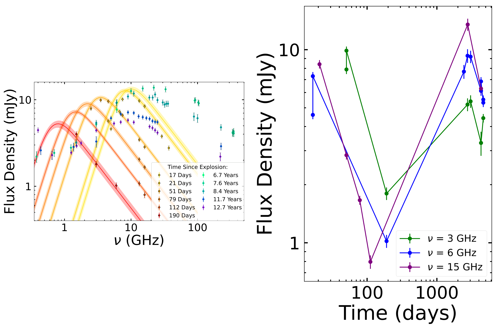<br />
图注：\(\emph{Left:}\) Complete \(\sn{}\) radio (i.e., meter-wave to mm-wave) dataset spanning $\approx13$ years of evolution. The early-time data ($\lesssim 6$ months) originate from \(\cite{Kamble2014},\) to which we add one unpublished epoch at $\delta t = 190$\,d. Solid lines (yellow to red): best-fitting model of synchrotron emission powered by the deceleration of the explosion's forward shock into a broken power law CSM-density model with a continuous transition between density indices, $s_1$ and $s_2$ from our updated model described in \S\ref{SubSec:thinshellmodel}. For each epoch, we show the 3$\sigma$ credible interval as the shaded region around the best fitting model. The peak of the radio emission at these early times clearly evolves to lower frequencies, as expected for a shock propagating through a medium with decreasing optical depth. The late-time data at $\delta t= 6.7-12.7$\,yr that constitute the focus of this work notably deviate from this early-time trend, indicating the onset of a new phase of radio evolution of \(\sn{},\) which is not a simple extrapolation of the previous behavior. \(\emph{Right}\): Light curves of \(\sn{}\) at selected well-sampled frequencies (3 GHz, 6 GHz, and 15 GHz). At early times, the \(\sn{}\) follows the typical rise and fall behavior associated with SSA. At late times, the source re-brightens, before dimming again.<br />
对应解读：“建议重点查看的图表”第1项；“关键图表逐图导读”图1；早期外激波基线与晚期再增亮的总体证据。<br />
入选理由：该图直接展示约13年的多频射电数据和3、6、15 GHz光变，能同时检验早期SSA型升降、爆后6.7年后的跨频段再增亮，以及晚期数据相对早期趋势的偏离，是理解全文物理转折的首要图。<br />
来源与置信度：\(arxiv_source\)；high；\(arxiv_source\) / 12auRadio__1_.tex:figure[1]</p>
<p><strong>Fig04</strong><br />
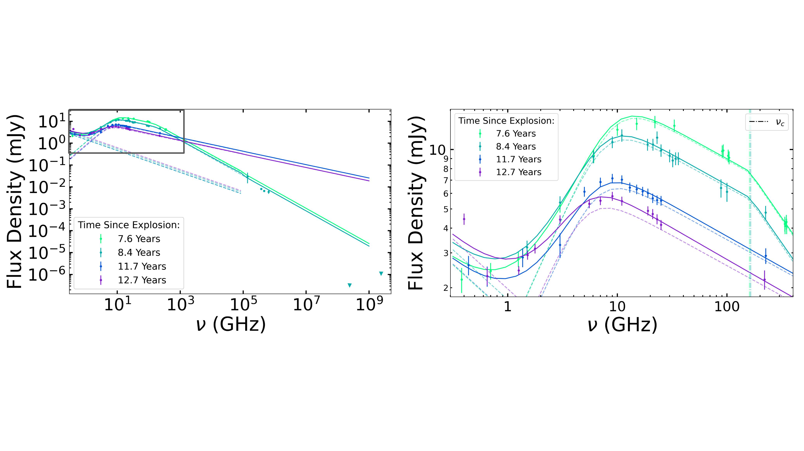<br />
图注：A model-agnostic, two-component fit to the late-time ($\delta t > 6$\,yr) \(\sn{}\) data. The model is sum of a low-frequency, single power-law component, and a high-frequency, broken power-law component, with a spectral break that may represent a cooling break. Dashed lines: the best fit individual components for each epoch. Solid lines: the total emission for each epoch. The low frequency model is truncated at $\nu = 10^{5}$\, GHz; while we cannot constrain any spectral break in this component, it is unlikely to extend this far without cooling effects. \(\emph{Left:}\) The full radio to X-ray SED late-time dataset, including broadband radio data, optical data at $\delta t = 8.4$\,yr and X-ray upper limits at $\delta t = 8.4$\,yr. \(\emph{Right:}\) A zoom-in on the broadband radio portion of the dataset - the boxed region in the left plot, with the cooling break frequencies shown by vertical dot-dashed lines for the 7.6 and 8.4 yr epochs.<br />
对应解读：“建议重点查看的图表”第2、5、6项；“关键图表逐图导读”图2、图5、图6；晚期SED拟合与X射线上限约束。<br />
入选理由：该图给出晚期从射电到X射线的SED、两成分拟合、射电放大图和冷却 break 标记，可用于检查谱峰宽度、光薄端形状、低频成分、高频成分以及X射线上限是否与模型相容，是判断晚期辐射成分性质的核心图。<br />
来源与置信度：\(arxiv_source\)；high；\(arxiv_source\) / 12auRadio__1_.tex:figure[4]</p>
<p><strong>Fig02</strong><br />
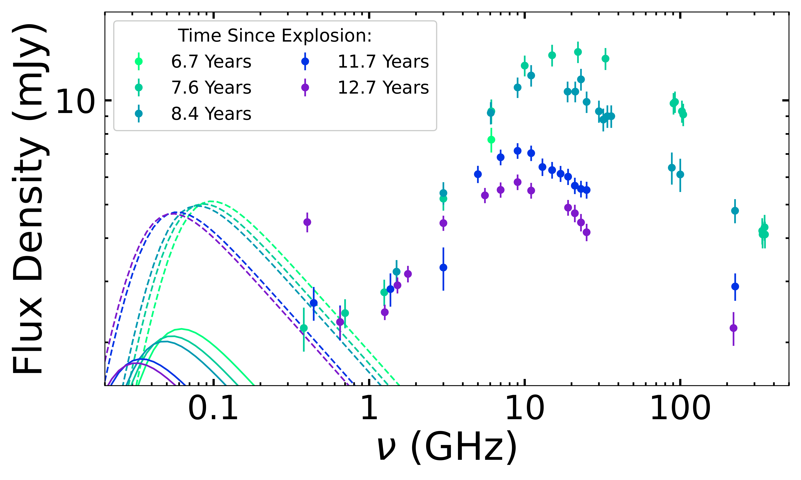<br />
图注：The extrapolation of our best-fitting model(s) of \S\ref{subsec:12aulatetime} to late times $\delta t \geq 6$\,yr significantly under-predicts the detected emission (filled circles). Solid lines: extrapolation of the early-time ($\delta t \leq 190 $d) best-fitting model using a standard wind CSM density index $s=2$, and electron energy distribution index $p=3$. The dashed lines show how a model with shallower $p=2.01$, and a slightly less steep density index $s=1.75$ can match the flux density at low frequencies $\nu \lesssim 1$\,GHz at late-times, while still requiring some additional component to explain the dominant emission at higher frequencies ($\nu \geq 5$\,GHz). This two-component model is explored in \S\ref{Sec:TwoComponent}.<br />
对应解读：“建议重点查看的图表”第3项；“关键图表逐图导读”图3；模型拟合段落中的早期外激波模型外推。<br />
入选理由：该图明确把早期前向激波模型外推到爆后6年以上，并显示其显著低估晚期观测流量；同时给出较浅p和较浅密度指数的替代外推，说明低频或许可部分解释但高频仍需额外成分，直接支撑‘晚期不是早期外激波自然延续’这一关键结论。<br />
来源与置信度：\(arxiv_source\)；high；\(arxiv_source\) / 12auRadio__1_.tex:figure[2]</p>
<p><strong>Fig09</strong><br />
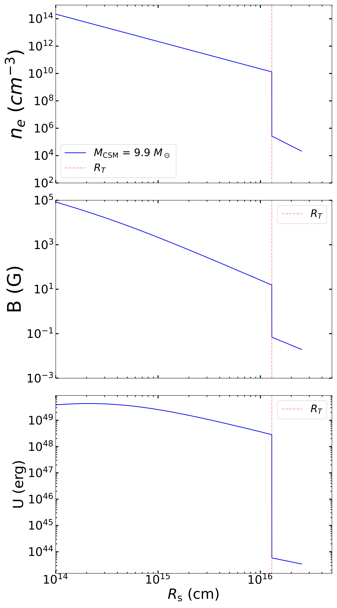<br />
图注：Best-fitting torus CSM density ($n_e$) and shock properties ($B$ and $U$) as a function of $R_{\rm{s}}$ in the context of the ``torus-like'' dense CSM scenario viewed edge-on (\S\ref{subsub:edge_torus}). The sharp discontinuities in each curve correspond to when the shock reaches the discontinuity in the CSM density profile at $R_{\rm{T}}$. The requirement of a small emitting region translates into extremely large densities and magnetic field strengths. We infer a total CSM mass in the torus of $M_{\rm CSM} \approx 10\, \rm M_\odot$, based on integration of the displayed profile up to the time of the most recent radio observation (Eq. \ref{Eq:MassCSMtorus}).<br />
对应解读：“建议重点查看的图表”第4、7项；模型拟合段落中外激波/致密CSM解释所需极端参数。<br />
入选理由：该图展示torus-like致密CSM情景下电子密度、磁场和能量随激波半径的变化，并在图注中给出约10太阳质量CSM的极端需求。它比单纯示意图更能支撑日报中关于高密度、高磁场、小发射区和外部CSM解释物理可行性差的讨论。<br />
来源与置信度：\(arxiv_source\)；high；\(arxiv_source\) / 12auRadio__1_.tex:figure[9]</p>
<p><strong>Fig05</strong><br />
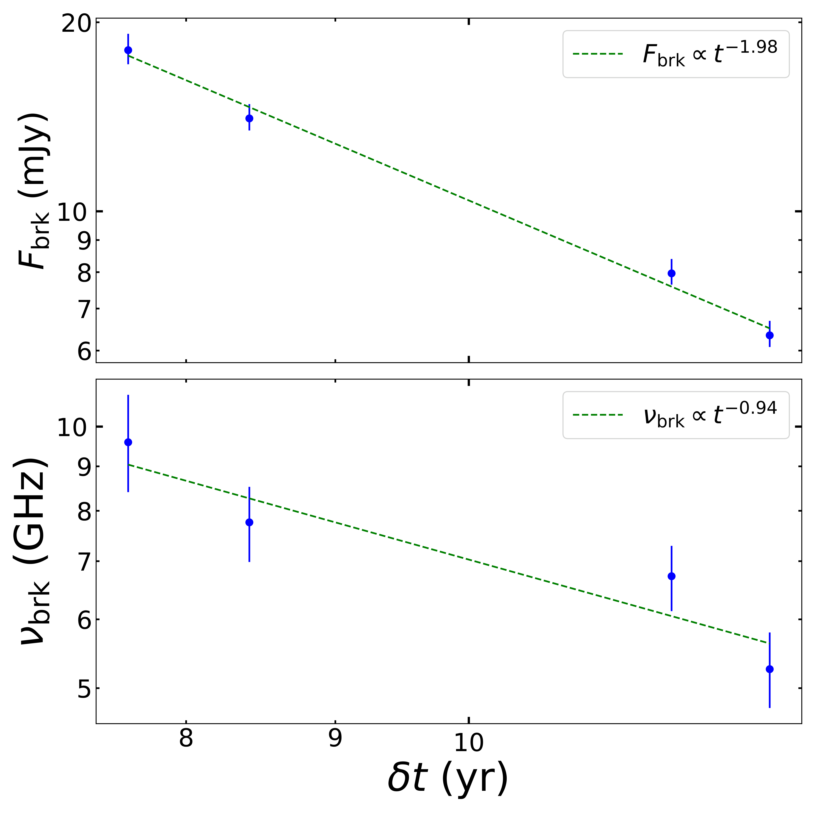<br />
图注：The best fitting values for $F_{\nu,\rm{brk}}$ and $\nu_{\rm{brk}}$ of the high frequency component as a function of time since explosion for the model-agnostic fit of \S\ref{SubSec:modelagnostic}. Both $F_{\nu,\rm{brk}}$ and $\nu_{\rm{brk}}$ follow consistent power law decays with time.<br />
对应解读：“建议重点查看的图表”第2、6项；模型拟合段落中的晚期谱峰/谱断随时间演化。<br />
入选理由：该图量化高频成分的break流量和break频率随爆后时间的幂律衰减，能够检查晚期谱形不是单个历元偶然拟合，而是具有连续时间演化；这对评估PWN或其他新成分模型是否能解释多历元SED尤其重要。<br />
来源与置信度：\(arxiv_source\)；high；\(arxiv_source\) / 12auRadio__1_.tex:figure[5]</p>
<p><strong>Fig08</strong><br />
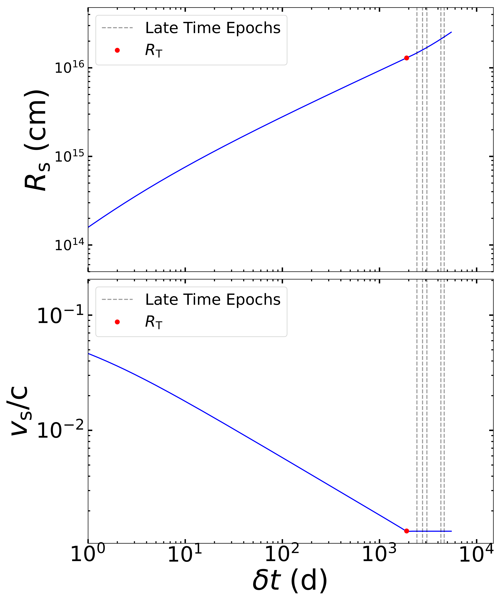<br />
图注：Dynamical evolution of the shock (radius and velocity) expanding in a ``torus-like'' dense-CSM scenario (\S\ref{SubSec:CSMtorus}). The vertical gray dashed lines mark the epochs of our late-time radio observations. The red dot in each curve marks the transition radius, $R_T$.<br />
对应解读：“建议重点查看的图表”第4项；物理参数反演中半径和速度的自洽性检查。<br />
入选理由：该图给出torus-like致密CSM情景下激波半径和速度的动力学演化，并标出晚期观测历元。它可直接用于检查模型为匹配晚期射电是否要求异常减速、小半径或特殊转折半径，是理解外激波解释动力学代价的重要辅助图。<br />
来源与置信度：\(arxiv_source\)；high；\(arxiv_source\) / 12auRadio__1_.tex:figure[8]</p>
<h4 id="_57">强相关工作</h4>
<p>这篇工作应放在三个文献脉络中读。第一是核心坍缩超新星射电理论，尤其是 Chevalier 型外激波与风型星周介质相互作用模型；第二是发动机驱动 Ib/c 超新星和磁星注入模型；第三是年轻 PWN 如何在膨胀抛射物中被吸收、再在晚期射电浮现。检索关键词可用 “SN 2012au engine driven supernova radio”, “newborn pulsar wind nebula supernova”, “late-time radio rebrightening stripped-envelope supernova”, “Chevalier synchrotron self-absorption supernova radio”。</p>
<p>同类或相近对象包括有晚期中心发动机候选的剥离包层超新星、超亮超新星中的磁星/PWN 模型、以及年轻超新星遗迹中的 PWN。相反观点或张力主要来自复杂星周介质解释：非球对称壳层、爆前强质量损失、双星相互作用或喷流撞击局部高密度区域都可能造成晚期射电增强。本文的贡献是把这些替代解释推到定量参数层面比较，而不是停留在定性可能性。若要系统追踪后续发展，应关注该源的 VLBI 观测论文、VLA/ngVLA 多频监测，以及 SN 2012au 晚期光学谱线和中心发动机解释的既有研究。</p>
<p><strong>同一事件 / 同类源线索</strong>：</p>
<ul>
<li><a href="https://arxiv.org/abs/2606.20836">https://arxiv.org/abs/2606.20836</a></li>
<li><a href="https://arxiv.org/pdf/2606.20836">https://arxiv.org/pdf/2606.20836</a></li>
</ul>
<p><strong>相似工作</strong>：</p>
<p>（未提供）</p>
<p><strong>基础理论 / 方法工作</strong>：</p>
<ul>
<li><a href="https://ui.adsabs.harvard.edu/abs/1982ApJ...259..302C/abstract">https://ui.adsabs.harvard.edu/abs/1982ApJ...259..302C/abstract</a></li>
<li><a href="https://ui.adsabs.harvard.edu/abs/1998ApJ...499..810C/abstract">https://ui.adsabs.harvard.edu/abs/1998ApJ...499..810C/abstract</a></li>
</ul>
<p><strong>相反观点 / 张力线索</strong>：</p>
<p>（未提供）</p>
</details>
<h3 id="6-a-tentative-double-excess-in-the-gamma-ray-spectrum-of-the-fermi-blazar-4fgl-j06049-0000">6. A Tentative Double Excess in the Gamma-Ray Spectrum of the Fermi Blazar 4FGL J0604.9-0000</h3>
<ul>
<li>来源：arXiv / astro-ph.HE</li>
<li>链接：https://arxiv.org/abs/2606.23488v1</li>
<li>作者：Shi-Ju Kang</li>
<li>评分：novelty 7/10，importance 7/10，relevance 10/10，final 9.05/10</li>
<li>推荐理由：Fermi-LAT耀变体伽马射线谱中疑似双峰/线状超额，涉及GeV伽马射线和暗物质解释，主题高度相关；虽显著性未校正且结果 tentative，仍值得跟进。</li>
</ul>
<p><strong>中文题目</strong>：Fermi 耀变体 4FGL J0604.9-0000 伽马射线谱中的疑似双重超额</p>
<p><strong>做了什么</strong>：这篇文章用近 \(17.75\) 年的 Fermi-LAT 数据重新分析耀变体 4FGL J0604.9-0000 的伽马射线能谱，报告了两个窄的谱超额候选：约 \(1.5\,\mathrm{GeV}\) 和 \(11\,\mathrm{GeV}\)。作者把连续谱背景加上两个高斯线状成分进行拟合，得到两个局域显著性分别约为 \(2.6\sigma\) 和 \(3.7\sigma\)，联合检验统计量约为 \(\mathrm{TS}\simeq 27\)。如果暂不考虑试探因子和 look-elsewhere effect，局域显著性可达约 \(4.3\sigma\) 或在另一自由度解释下约 \(4.8\sigma\)。作者强调能量比约为 \(1:7\)，普通耀变体辐射机制不容易自然产生这类双窄峰，因此提出它可能值得作为暗物质湮灭线候选目标继续跟进。</p>
<p><strong>为什么重要</strong>：耀变体伽马射线谱通常由喷流中的非热粒子辐射主导，能谱多为平滑的幂律、断幂律或对数抛物线；窄线或准线状双峰一旦成立，就会挑战常规喷流辐射图像。尤其是两个峰都接近 Fermi-LAT 能量分辨率宽度时，它们不像普通宽带反康普顿成分，而更像谱线搜索中关心的窄结构。不过本文结果仍是“tentative”：局域显著性不等于全局显著性，必须严肃处理能量扫描、源选择和背景建模带来的试探因子。</p>
<p><strong>理论 / 观测 / 仪器方法价值</strong>：对观测而言，这篇文章给出了一个可复查的 Fermi-LAT 长时间基线谱线候选，并指明了两个需要重点验证的能区。对方法而言，它提醒读者在耀变体中做线状结构搜索时，连续谱模型、能量色散、事件类别、邻近源建模和全局显著性会直接决定结论。对理论而言，如果双峰真实存在，标准同步自康普顿或外康普顿模型很难自然给出两个窄峰，暗物质湮灭到 \(\gamma\gamma\) 与 \(\gamma\gamma'\) 的解释会变得有吸引力，但也会面临耀变体环境、暗物质密度和多波段一致性的强约束。</p>
<p><strong>为什么应该关注</strong>：你应该关注它，不是因为它已经发现了暗物质，而是因为它提供了一个很适合检验“谱线候选如何从数据中长出来”的案例。它同时触及三个敏感问题：Fermi-LAT 长时标数据的系统误差、耀变体非热谱的异常结构、以及伽马射线线搜索中的全局显著性。如果后续独立分析、Pass 版本交叉检验、时变检验和 CTA/AMEGO 类仪器观测支持这个双峰，它会成为非常少见的 AGN 伽马线候选；如果被否定，也会是理解 LAT 谱线假阳性的重要样本。</p>
<details class="paper-detail">
<summary>展开详细解读：文章讲解、背景、理论、重点章节、图表与相关工作</summary>
<h4 id="_58">文章详细讲解</h4>
<p>科学问题：论文要回答的是，Fermi-LAT 编目的耀变体 4FGL J0604.9-0000 的长期伽马射线能谱中，是否存在不能由平滑连续谱解释的窄谱超额。耀变体的高能辐射通常来自相对论喷流中的电子通过同步辐射和反康普顿散射产生，或者在强子模型中由质子相关级联产生；这些机制通常给出宽的谱能量分布，而不是接近仪器能量分辨率的窄峰。因此，如果在一个 AGN 中出现两个窄的 GeV 结构，首先要问它是统计涨落、仪器或背景模型问题，还是确实有新的物理成分。</p>
<p>作者怎么做：作者使用 \(17.75\) 年 Fermi-LAT 观测，对 4FGL J0604.9-0000 做谱分析。基本思路是先用平滑的连续谱描述源的常规发射，再在约 \(1.5\,\mathrm{GeV}\) 和 \(11\,\mathrm{GeV}\) 附近加入两个高斯形谱成分。低能峰的中心为 \(E_1=1.59\pm0.07\,\mathrm{GeV}\)，宽度固定为接近 LAT 在该能段的能量分辨率，即 \(\sigma_1=0.145\,\mathrm{GeV}\)。高能峰中心为 \(E_2=11.15\pm0.61\,\mathrm{GeV}\)，宽度约 \(\sigma_2=1.185\,\mathrm{GeV}\)，约为峰值能量的 \(10\%\)，也与 LAT 在该能段的能量分辨能力相当。这样的设置本质上是在问：数据是否偏好在平滑背景上增加两个“准线”成分。</p>
<p>关键结果：两个超额的局域显著性分别为约 \(2.6\sigma\) 和 \(3.7\sigma\)，联合似然给出 \(\mathrm{TS}\simeq27\)。若按 \(4\) 个自由度把联合 \(\mathrm{TS}\) 转换为局域显著性，约为 \(4.3\sigma\)；若按较少有效自由度解释，约可到 \(4.8\sigma\)。作者还强调两峰能量比约为 \(1:7\)，这很难由标准耀变体辐射机制直接解释。暗物质解释中，若较高能峰对应 \(\chi\chi\to\gamma\gamma\)，则暗物质质量可接近 \(11\,\mathrm{GeV}\)；较低能峰可对应 \(\chi\chi\to\gamma\gamma'\) 一类带有第二光子的两体末态，能量比由暗部门粒子质量决定。</p>
<p>局限和下一步：最大的限制是显著性目前是局域的，尚未充分扣除多源搜索、能量扫描、模型选择、事件类型切分等带来的试探因子。另一个限制是耀变体本身是强变源，时间可变的连续谱、未建模邻近源、银河弥散背景残差、有效面积能量依赖和能量色散都可能制造局部谱结构。下一步最重要的不是只延长曝光，而是做独立复现：不同 Pass 数据、不同事件类别、不同 ROI、不同弥散模型、不同连续谱假设、时间分段检验、空场和邻近源对照，以及未来 CTA 或 MeV-GeV 任务对相同能区的独立验证。</p>
<h4 id="_59">关键结果是怎么做出来的</h4>
<p>本文的证据链从样本选择开始：它不是一次全全天盲搜的完整候选列表，而是聚焦于 Fermi-LAT 编目源 4FGL J0604.9-0000。数据基线长达 \(17.75\) 年，这有利于积累 GeV 光子统计量，但也意味着需要面对 LAT 长期响应、背景模型版本、源活动状态变化以及编目源模型更新等问题。对这类单源谱线候选，读者首先应确认作者是否固定了 ROI、事件类、天顶角切除、能量范围和邻近源自由参数，因为这些选择会影响窄峰的局域显著性。</p>
<p>核心拟合是“平滑连续谱 \(+\) 两个高斯超额”。低能高斯中心 \(E_1=1.59\pm0.07\,\mathrm{GeV}\)，宽度固定为 \(\sigma_1=0.145\,\mathrm{GeV}\)；高能高斯中心 \(E_2=11.15\pm0.61\,\mathrm{GeV}\)，宽度 \(\sigma_2=1.185\,\mathrm{GeV}\)。宽度接近 LAT 能量分辨率这一点很关键：如果峰宽明显大于仪器分辨率，它可能只是连续谱曲率或多成分喷流辐射；如果峰宽接近分辨率，则可被当作线状候选，但也更容易受到能量重建和响应矩阵细节影响。</p>
<p>显著性方面，作者给出两个峰的局域显著性约 \(2.6\sigma\) 与 \(3.7\sigma\)，联合 \(\mathrm{TS}\simeq27\)。这里的 \(\mathrm{TS}\) 通常来自两种嵌套模型的对数似然差，即有线模型相对无线模型提升了多少。关键点是：\(\mathrm{TS}\) 到 \(\sigma\) 的换算取决于有效自由度、参数边界以及是否扫描了未知线能量。作者明确说明未校正 trials 和 look-elsewhere effect，因此读者不能把 \(4\sigma\) 量级的局域显著性直接理解成发现级别的全局证据。</p>
<p>支撑结论的图表应包括能谱残差图、连续谱与双高斯拟合图、单峰和双峰模型的似然改善、以及可能的 \(\mathrm{TS}\) 随线能量扫描曲线。最有说服力的不是某个能量 bin 高了多少，而是同一结构在不同 binning、不同能量色散处理、不同连续谱模型和不同事件类别中是否稳定。若论文表格列出最佳拟合参数、误差、\(\mathrm{TS}\)、自由度和拟合优度，读者应优先检查误差是否只包括统计误差，系统误差是否单独评估。</p>
<p>系统误差的关键来源包括银河弥散模型、各向同性背景、邻近源光谱参数、源自身时间变率、LAT 有效面积、点扩散函数和能量色散。一个稳健的双峰候选应当在时间上与耀变体耀发没有简单对应关系，或者至少在分段分析中保持同一能量位置；否则峰可能是混合不同光谱态后产生的伪结构。对于高能峰，光子数通常较少，单个或少数高权重事件就可能显著影响结果，因此事件级检查和 aperture photometry 对照尤其重要。</p>
<details class="paper-subdetail">
<summary>展开背景、理论、公式、模型、章节和图表导读</summary>
<h4 id="_60">背景知识</h4>
<p>4FGL J0604.9-0000 是 Fermi-LAT 第四源表中的伽马射线源，被归类为耀变体相关对象。耀变体是喷流几乎指向观测者的活动星系核，具有强烈多波段变率、非热连续谱和相对论多普勒增强。它们在 Fermi-LAT 天空中数量很多，也是 GeV 背景和高能暂现研究的重要污染源与研究对象。</p>
<p>历史上，AGN 伽马射线谱线搜索一直很困难。暗物质线搜索更常集中在银河中心、矮椭球星系和星系团，因为这些目标暗物质柱密度高、常规天体背景相对可建模。AGN 中若出现线状结构，既可能来自非常特殊的喷流辐射或吸收过程，也可能是统计涨落或仪器系统误差。因此“在耀变体中找暗物质线”天然有争议：喷流亮、变、复杂，既提供大量光子，也提供大量假信号机会。<br />
Fermi-LAT 在 GeV 能区已经积累了超过十几年的数据，时间基线增加会提高弱窄线的统计灵敏度，尤其在 \(1\,\mathrm{GeV}\) 到 \(10\,\mathrm{GeV}\) 附近光子数较多。然而，长基线也会混合源的不同活动状态。耀变体在耀发期可能出现光谱硬化、曲率变化或多成分叠加，若用单一平滑函数拟合全时段平均谱，局部残差可能被误读为线状结构。</p>
<p>现在值得重新看的原因有三个。第一，LAT 数据累积显著增加，早期看不清的弱特征可能变得可检验。第二，4FGL 及后续编目提供了更好的邻近源模型，降低了源混淆。第三，下一代伽马射线望远镜和 MeV-GeV 任务规划需要候选目标清单，哪怕是 tentative candidate 也有后续观测价值。</p>
<p>常见误区是把“局域 \(4\sigma\)”等同于“发现”。在线搜索中，如果研究者扫描了许多能量、许多源、许多模型和许多数据切分方式，那么某处出现 \(3\sigma\) 到 \(4\sigma\) 局域超额并不罕见。另一个误区是认为只要能量比可由暗物质模型解释，就说明暗物质解释优先；实际上还要比较所需湮灭截面、目标的暗物质密度、连续伽马射线伴随辐射、反质子和 CMB 约束，以及同类源中是否缺乏相同信号。</p>
<h4 id="_61">基础理论 / 方法脉络</h4>
<p>从物理图像看，耀变体的 GeV 伽马射线通常来自相对论喷流。电子模型中，低能峰是同步辐射，高能峰是同步自康普顿或外康普顿散射；强子模型中，高能辐射可来自质子同步辐射、光介子过程和电磁级联。这些过程都涉及宽能量分布的粒子群，因此产生的光子谱通常是宽的、平滑的、可用幂律曲率描述的。</p>
<p>谱线或准线状特征的判别依赖仪器响应。Fermi-LAT 不直接测量真实光子能量 \(E\)，而是通过探测器重建能量 \(E_{\rm rec}\)，两者由能量色散函数联系。若真实谱线宽度远小于仪器分辨率，观测到的线宽主要由 LAT 的能量分辨率决定。因此本文把高斯宽度设为或限制在接近能量分辨率的尺度，是在构造“仪器可分辨的窄线”模板。</p>
<p>连续谱模型是最大退化来源之一。耀变体谱可用幂律、断幂律、指数截断幂律或对数抛物线描述。若连续谱模型太硬或太简单，平滑曲率会残留成局部正残差；若模型太灵活，又可能吸收真实窄线。本文的核心问题可以表述为：在合理连续谱自由度下，加入两个窄高斯是否仍能显著改善似然。</p>
<p>暗物质解释的基本图像是非相对论暗物质粒子 \(\chi\) 湮灭产生单能光子。若末态为 \(\gamma\gamma\)，每个光子能量近似等于暗物质质量 \(m_\chi\)。若末态为 \(\gamma X\)，其中 \(X\) 是有质量的暗部门粒子或标准模型粒子，则光子能量低于 \(m_\chi\)，具体由两体运动学决定。因此两个线能量可以对应两个不同湮灭通道，能量比反映 \(X\) 的质量。</p>
<p>观测统计上，线搜索通常比较无线模型和有线模型的似然。泊松计数数据中，能量 bin、空间像素和事件类型都会贡献似然项。由于线强度不能为负，参数位于边界；同时线能量可能是在数据中扫描得到，因此简单的 Wilks 定理换算会失效或只近似成立。这也是本文显著性必须区分局域与全局的原因。</p>
<h4 id="_62">公式与推导</h4>
<p>第一步是把源的观测光子通量写成连续谱与线状成分之和。对真实能量 \(E\)，可写为</p>
<div class="math-display">\[\rac{d\Phi}{dE}=\rac{d\Phi_{\
m cont}}{dE}+\sum_{i=1}^{2} A_i\\,G(E;E_i,\sigma_i),\]</div>
<p>其中 \(d\Phi/dE\) 是微分光子通量，\(d\Phi_{\}\)<br />
m cont}/dE) 是耀变体平滑连续谱，\(A_i\) 是第 \(i\) 个超额的归一化，\(E_i\) 是中心能量，\(\sigma_i\) 是线宽，\(G\) 是归一化高斯模板。</p>
<p>高斯线模板通常取</p>
<div class="math-display">\[\nG(E;E_i,\sigma_i)=\rac{1}{\sqrt{2\pi}\sigma_i}\exp\left[-\rac{(E-E_i)^2}{2\sigma_i^2}\
ight],\]</div>
<p>满足 \(\int G(E;E_i,\sigma_i)dE=1\)。若线本征宽度远小于仪器能量分辨率，则 \(\sigma_i\) 主要代表 LAT 对真实单能光子的重建展宽，而非源本身的物理速度弥散。</p>
<p>一个常用连续谱近似是对数抛物线：</p>
<div class="math-display">\[\rac{d\Phi_{\
m cont}}{dE}=N_0\left(\rac{E}{E_b}\
ight)^{-\alpha-\eta\ln(E/E_b)},\]</div>
<p>其中 \(N_0\) 是归一化，\(E_b\) 是枢轴能量，\(\alpha\) 是局部谱指数，\(\beta\) 描述曲率。若 \(\beta\) 取值不当，宽的曲率残差可能在窄能段内模仿弱线。</p>
<p>仪器观测到的是重建能量 \(E_{\}\)<br />
m rec}) 下的计数期望：</p>
<div class="math-display">\[\mu_k=T\int_{\Delta E_k}dE_{\
m rec}\int dE\\,A_{\
m eff}(E,\Omega)\\,R(E_{\
m rec}|E)\\,\rac{d\Phi}{dE}+\mu_{k,{\
m bkg}},\]</div>
<p>其中 \(\mu_k\) 是第 \(k\) 个能量 bin 的期望计数，\(T\) 是曝光时间，\(A_{\}\)<br />
m eff}) 是有效面积，(R(E_{\<br />
m rec}|E)) 是能量色散，(\mu_{k,{\<br />
m bkg}}) 是弥散背景和邻近源贡献。</p>
<p>在泊松统计下，给定观测计数 \(n_k\)，似然为</p>
<div class="math-display">\[\mathcal{L}(\oldsymbol{\	heta})=\prod_k \rac{\mu_k(\oldsymbol{\	heta})^{n_k}e^{-\mu_k(\oldsymbol{\	heta})}}{n_k!},\]</div>
<p>其中 \(\boldsymbol{\	heta}\) 包含连续谱参数、背景参数和线参数。最大化该似然即可得到最佳拟合线能量、线强度和误差。</p>
<p>线检验统计量定义为</p>
<div class="math-display">\[\mathrm{TS}=2\left[\ln\mathcal{L}_{\
m line}-\ln\mathcal{L}_{\
m null}\
ight],\]</div>
<p>其中 \(\mathcal{L}_{\}\)<br />
m line}) 是包含一个或两个线成分的最大似然，(\mathcal{L}_{\<br />
m null}) 是只有连续谱和背景的最大似然。本文报告联合双峰约 \(\mathrm{TS}\simeq27\)，表示双线模型对似然有明显改善。</p>
<p>若满足 Wilks 定理且自由度为 \(q\)，局域 \(p\) 值可近似写为</p>
<div class="math-display">\[\np_{\
m local}=\int_{\mathrm{TS}_{\
m obs}}^{\infty} f_{\chi^2_q}(x)\\,dx,\]</div>
<p>其中 \(f_{\chi^2_q}\) 是 \(q\) 自由度的卡方分布。再把 \(p_{\}\)<br />
m local}) 转成等效高斯显著性 (Z_{\<br />
m local})，有</p>
<div class="math-display">\[\nZ_{\
m local}=\Phi^{-1}(1-p_{\
m local}),\]</div>
<p>其中 \(\Phi^{-1}\) 是标准正态分布累积分布函数的反函数。</p>
<p>若扫描了 \(N_{\}\)<br />
m trial}) 个近似独立试验，全局概率近似为</p>
<div class="math-display">\[\np_{\
m global}=1-(1-p_{\
m local})^{N_{\
m trial}}\simeq N_{\
m trial}p_{\
m local},\]</div>
<p>这个式子说明 look-elsewhere effect 会降低全局显著性。本文给出的 \(4\sigma\) 量级主要是局域值，不能跳过这一步。</p>
<p>暗物质两体湮灭线能量满足</p>
<div class="math-display">\[\nE_\gamma=m_\chi\left(1-\rac{m_X^2}{4m_\chi^2}\
ight),\]</div>
<p>其中 \(m_\chi\) 是暗物质质量，\(X\) 是与光子共同产生的第二个末态粒子；对 \(\gamma\gamma\) 通道，\(m_X=0\)，且 \(E_\gamma=m_\chi\)。若 \(E_2\simeq11.15\\,\mathrm{GeV}\) 对应 \(\gamma\gamma\)，则 \(m_\chi\simeq11.15\\,\mathrm{GeV}\)，而 \(E_1/E_2\simeq0.14\) 可用带质量的 \(\gamma X\) 通道调节。</p>
<h4 id="_63">模型拟合 / 应用方法</h4>
<p>这类分析的拟合对象不是单纯的能谱点，而是空间和能量上的 LAT 事件计数。实际拟合通常包含目标源、邻近 4FGL 源、银河弥散模板、各向同性背景模板和仪器响应函数。本文摘要强调的是谱模型层面的结果，即连续谱加两个高斯成分，但读者应把它理解为嵌入 LAT likelihood 框架中的参数估计问题。</p>
<p>主要拟合参数包括连续谱归一化和形状参数、两个高斯的中心能量 \(E_1\) 与 \(E_2\)、宽度 \(\sigma_1\) 与 \(\sigma_2\)、以及线强度 \(A_1\) 与 \(A_2\)。低能线宽固定为仪器分辨率，高能线宽约束在约 \(10\%\) 的能量尺度，这减少了自由度，但也引入了对仪器响应模型的依赖。若宽度固定得过窄，真实的宽结构会被低估；若允许过宽，连续谱曲率又可能被误解释为线。</p>
<p>似然比较是结论的核心。无线模型与双线模型之间的 \(\Delta\ln\mathcal{L}\) 被转换为 \(\mathrm{TS}\)，再转换为局域显著性。参数边界问题很重要，因为线强度 \(A_i\ge0\)，所以零线强度位于参数空间边界；此外线能量若不是预先指定而是扫描得到，Wilks 定理的简单自由度解释会偏乐观。严谨做法应使用蒙特卡洛伪实验或空场扫描估计全局 \(p\) 值。</p>
<p>残差诊断应至少包括三层。第一，看能谱残差是否只在两个峰附近集中，而不是在整个能段呈系统波纹。第二，看换用幂律、对数抛物线、断幂律等连续谱后，两个峰的位置和 \(\mathrm{TS}\) 是否稳定。第三，看分时间段、分事件类型、分前后转换层、分 PSF 类别后，信号是否仍存在。如果只有某一类事件或某一时间段贡献大部分 \(\mathrm{TS}\)，应优先怀疑系统效应或源变率。</p>
<p>参数退化主要出现在连续谱曲率与弱线强度之间、背景归一化与目标源低能通量之间、能量色散宽度与线宽之间。低能 \(1.5\,\mathrm{GeV}\) 附近银河弥散背景较强，点扩散函数较宽，源混淆更严重；高能 \(11\,\mathrm{GeV}\) 附近背景较低但光子数也少，泊松涨落更明显。因此两个峰的系统误差性质并不相同，不能只用同一套统计语言简单相加。</p>
<p>实际应用上，这篇文章最适合被当成候选清单和方法压力测试。若要推进到物理解释，需要估计线通量、目标红移、喷流态、宿主星系暗物质 halo 或可能的迷你尖峰，并检查是否违反其他伽马射线、宇宙线和宇宙学约束。若只是做 Fermi 数据复现，则优先任务是独立重建 ROI 模型和全局显著性。</p>
<h4 id="_64">重点章节 / 结果段落怎么读</h4>
<p>数据与源模型部分应首先阅读。重点看作者采用的 Fermi-LAT 时间范围、能量范围、事件类别、ROI 半径、天顶角切除、仪器响应函数版本、弥散背景模板和 4FGL 邻近源处理方式。对一个窄谱候选，这些技术细节不是附属信息，而是判断结果是否可信的核心。</p>
<p>连续谱建模部分要看作者如何定义零假设。若零假设只用简单幂律，得到的线超额可能被夸大；若使用对数抛物线或更灵活曲率模型后超额仍然存在，结论才更强。读者应检查连续谱参数是否合理，以及拟合残差是否在宽能段内没有系统偏差。</p>
<p>双高斯拟合部分是主结果。应重点记录 \(E_1=1.59\pm0.07\,\mathrm{GeV}\)、\(\sigma_1=0.145\,\mathrm{GeV}\)、\(E_2=11.15\pm0.61\,\mathrm{GeV}\)、\(\sigma_2=1.185\,\mathrm{GeV}\)、两个局域显著性和联合 \(\mathrm{TS}\)。还要看这两个峰是同时拟合得到，还是先发现一个再加入另一个；这会影响试探因子的理解。</p>
<p>显著性与稳健性检验部分最值得仔细读。局域显著性、自由度选择、是否校正 look-elsewhere effect、是否做模拟、是否测试不同 binning 和不同 ROI，都会影响结论等级。若论文只给局域显著性而缺少全局估计，读者应把结果定位为候选而非发现。</p>
<p>讨论部分应关注暗物质解释与标准天体物理解释的比较。作者提出 \(\chi\chi\to\gamma\gamma\) 和 \(\chi\chi\to\gamma\gamma'\) 这样的双线通道，但读者需要追问所需截面和暗物质分布是否现实，以及为什么同类 AGN 中没有类似双峰。若论文有附录，应优先查看系统误差、替代背景模型和事件级诊断。</p>
<h4 id="_65">建议重点查看的图表</h4>
<ol>
<li>
<p>全能段 SED 或能谱拟合图：看连续谱模型是否整体贴合数据，两个超额是否只在 \(1.5\,\mathrm{GeV}\) 和 \(11\,\mathrm{GeV}\) 附近出现，其他能段是否有未解释残差。</p>
</li>
<li>
<p>残差或 ratio 图：重点看无线模型下的正残差是否集中且窄，加入双高斯后残差是否变成统计噪声；如果残差呈周期性或宽带偏差，说明连续谱或背景模型可能有问题。</p>
</li>
<li>
<p>\(\mathrm{TS}\) 随线能量扫描曲线：检查两个峰是否是扫描曲线中的孤立峰，还是许多相近峰中的两个；这直接关系到 look-elsewhere effect。</p>
</li>
<li>
<p>拟合参数表：确认 \(E_1\)、\(E_2\)、\(\sigma_1\)、\(\sigma_2\)、线通量、\(\mathrm{TS}\)、自由度和误差定义；尤其要区分统计误差和系统误差。</p>
</li>
<li>
<p>不同连续谱模型对照图或表：看幂律、对数抛物线、断幂律等零假设下，两个超额的能量和显著性是否稳定。</p>
</li>
<li>
<p>时间分段或光变曲线诊断：判断超额是否由某次耀发主导。若峰只在强耀发期出现，它更可能是源内谱变造成的平均谱结构。</p>
</li>
<li>
<p>事件类别或空间残差图：看信号是否集中在目标源位置，是否受邻近源或银河弥散背景残差影响。低能峰尤其需要检查空间混淆。</p>
</li>
</ol>
<h4 id="_66">关键图表逐图导读</h4>
<p>图 1：若论文给出目标区域或 TS map，横纵轴通常是天球坐标，颜色表示似然检验强度或残差强度。读者要看 4FGL J0604.9-0000 是否是残差信号中心，邻近源是否有未建模超额。读图陷阱是把空间上靠近目标的弥散残差当作点源谱线；低能段 LAT 点扩散函数较宽，这一点尤其重要。</p>
<p>图 2：能谱或 SED 图通常以能量为横轴，以 \(E^2dN/dE\) 或通量为纵轴。数据点应与连续谱模型线、连续谱加双高斯模型线同时展示。关键是看 \(1.5\,\mathrm{GeV}\) 与 \(11\,\mathrm{GeV}\) 处的数据点是否明显高于平滑模型，以及加入高斯后是否只局部改变模型而不破坏全局拟合。陷阱是对数坐标会视觉上压缩残差，最好结合 ratio 面板看。</p>
<p>图 3：残差图或 data/model ratio 图是判断线状结构的核心。横轴为能量，纵轴为残差显著性、计数差或比值。无线模型下两个能区应出现正残差；双线模型下残差应回到零附近。若低能或高能附近还有连续的宽残差，说明高斯可能在补偿连续谱模型缺陷。</p>
<p>图 4：\(\mathrm{TS}\) 扫描图若存在，横轴为假设线能量，纵轴为 \(\mathrm{TS}\) 或等效 \(Z\)。两个候选峰应在 \(1.5\,\mathrm{GeV}\) 和 \(11\,\mathrm{GeV}\) 附近形成局部极大。读者要看扫描范围内还有多少相近高度的峰，因为全局显著性取决于独立试验数，而不是最高峰本身。</p>
<p>图 5：若有稳健性表或模型比较图，应关注不同连续谱、不同 ROI、不同事件类下的 \(E_i\) 和 \(\mathrm{TS}\) 是否变化。真正稳健的线候选应表现为能量位置稳定、显著性有波动但不消失。陷阱是只报告最有利设置，而不展示不利设置；这种情况下局域显著性容易被选择偏差放大。</p>
</details>
<h4 id="_67">论文原图 / 可嵌入图片</h4>
<p><strong>Fig01</strong><br />
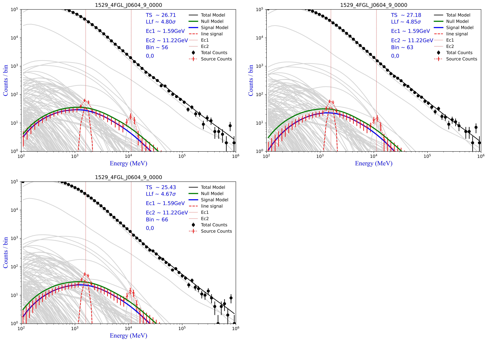<br />
图注：Model-fitted count spectra for the joint analysis of two excess signals in 4FGL J0604.9-0000 over 17.75 years. The energy range from 100~MeV to 1~TeV is divided into 56 (left panel), 63 (middle panel), and 66 (right panel) logarithmically spaced bins. Black dots and black line: data and total model; light grey lines: contributions from background sources; red dot-dashed line: the blazar's intrinsic source model; blue solid line: log-parabola continuum; red dashed lines: two Gaussian components representing the excesses at $\sim$1.5 GeV and $\sim$11 GeV; green solid line: null hypothesis model (continuum only). Vertical dashed lines mark the best-fit centroids of the Gaussians. The fit uses fixed widths ($E_1 \simeq 1.587$ GeV, $\sigma_1 \simeq 0.145$ GeV, $E_2 \simeq 11.217$ GeV, $\sigma_2 \simeq 1.185$ GeV) based on instrumental energy resolution, and corresponds to the joint analysis with 2 dof (see Table~\ref{tab1}).<br />
对应解读：对应“建议重点查看的图表”第1项全能段SED/能谱拟合图，以及“关键图表逐图导读”中图2关于连续谱加双高斯模型的解读。<br />
入选理由：这是最核心的联合拟合图，直接展示17.75年Fermi-LAT计数能谱、连续谱零假设、加入两个高斯后的总模型、背景源贡献以及1.5 GeV和11 GeV两个峰的最佳拟合位置。它最能支撑日报关于双超额是否局限在两个能区、连续谱是否整体贴合数据、双高斯是否只作局部修正的讨论。相比单峰图，Fig01同时呈现联合分析和两个候选特征，是解读TS≈27和双超额物理含义的首选图。<br />
来源与置信度：\(arxiv_source\)；high；\(arxiv_source\) / apssamp.tex:figure[1]</p>
<p><strong>Fig03</strong><br />
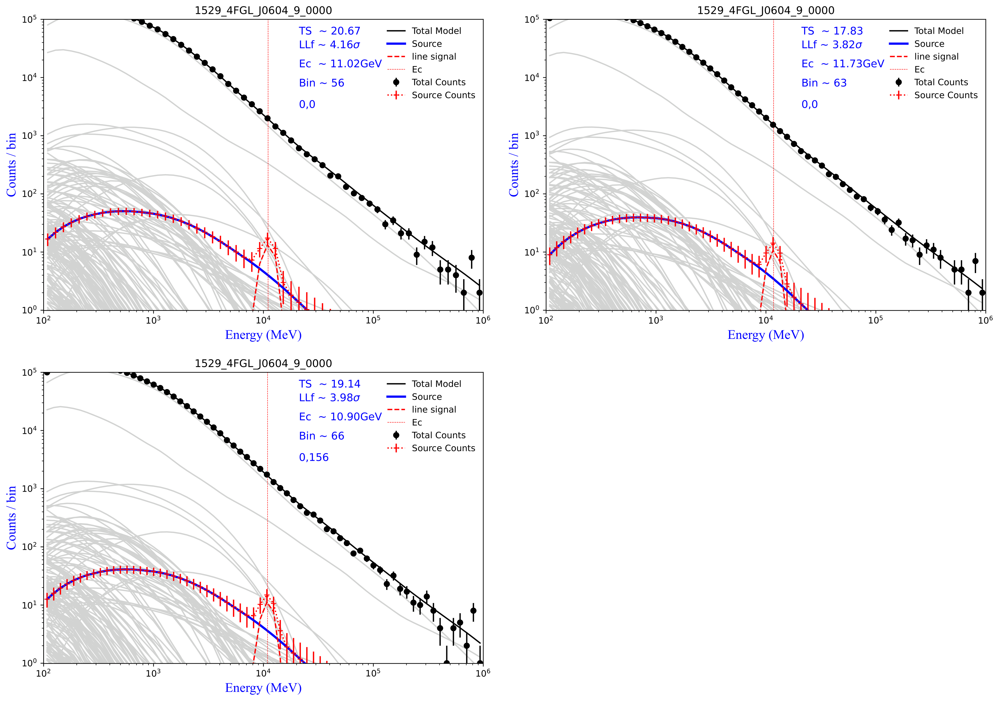<br />
图注：Same format as Figure~1, but showing only the single excess at $\sim$11 GeV (Signal~2). The Gaussian width is fixed to $\sigma_2 = 1.185$ GeV (2 dof fit). The panels show 56, 63, and 66 bins. The local significance of this excess is $3.7\sigma$ (3 dof) or up to $4.5\sigma$ (1 dof). The centroid energy varies slightly with binning ($E_2 \approx 10.9$–$11.7$ GeV); the joint analysis gives $E_2 = 11.15 \pm 0.61$ GeV (for 63 bins, 4dof, see Table~\ref{tab1}).<br />
对应解读：对应“建议重点查看的图表”第1项全能段能谱拟合图，以及“关键图表逐图导读”中对11 GeV高能超额、模型线和显著性的讨论。<br />
入选理由：该图单独展示约11 GeV超额，是两个候选中局域显著性更高的一支，且标注不同能量分箱下峰位在约10.9–11.7 GeV间变化，有助于判断高能峰是否对分箱方案稳定。日报中特别强调高能峰中心、宽度约10%能量分辨率、局域显著性3.7σ以及暗物质质量约11 GeV的解释，因此这张图具有较高科学价值。<br />
来源与置信度：\(arxiv_source\)；high；\(arxiv_source\) / apssamp.tex:figure[3]</p>
<p><strong>Fig02</strong><br />
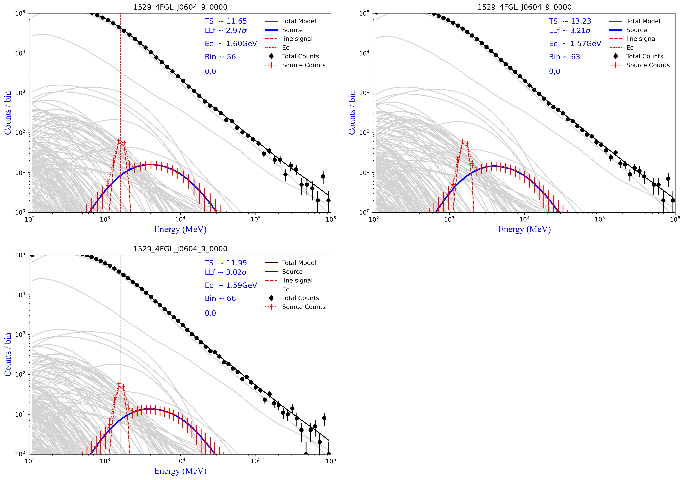<br />
图注：Same format as Figure~1, but showing only the single excess at $\sim$1.5 GeV (Signal~1). The Gaussian width is fixed to $\sigma_1 = 0.145$ GeV (2 dof fit). The panels correspond to 56, 63, and 66 logarithmically spaced energy bins from left to right. The local significance of this excess is $2.6\sigma$ (3 dof) or up to $3.5\sigma$ (1 dof) depending on the degrees of freedom (see Table~\ref{tab1}).<br />
对应解读：对应“建议重点查看的图表”第1项全能段能谱拟合图，以及“关键图表逐图导读”中对1.5 GeV低能超额和连续谱偏离的讨论。<br />
入选理由：该图单独展示约1.5 GeV低能超额，可用于检查低能候选峰在不同分箱下是否仍相对集中，并与连续谱零假设模型比较。虽然该峰局域显著性低于11 GeV峰，且候选图未提供空间残差或系统误差诊断，但日报多次强调低能段受LAT点扩散函数、银河弥散背景和源混淆影响更大，因此单独嵌入Fig02有助于读者评估低能峰的可靠性。<br />
来源与置信度：\(arxiv_source\)；high；\(arxiv_source\) / apssamp.tex:figure[2]</p>
<h4 id="_68">强相关工作</h4>
<p>这篇工作与 Fermi-LAT 暗物质线搜索传统直接相关，尤其是银河中心 \(130\,\mathrm{GeV}\) 线候选的历史经验：早期局域显著性较高，但随后在全局显著性、仪器系统误差和独立数据中受到强烈检验。相关检索关键词包括 “Fermi LAT gamma-ray line search”, “look-elsewhere effect gamma-ray line”, “130 GeV line Fermi”, “dark matter gamma gamma gamma Z line”。这些工作提供了判断本文 \(4\sigma\) 局域超额应如何折扣的背景。</p>
<p>它也与 Fermi-LAT AGN 编目和 4LAC 耀变体谱研究相关。4FGL 和 4LAC 的大量源表工作说明，大多数耀变体 GeV 谱可由平滑曲率模型描述；若 4FGL J0604.9-0000 的双窄峰成立，它会是同类源中的异常个例。建议检索 “4FGL J0604.9-0000”, “4LAC blazar spectral curvature”, “Fermi blazar line-like feature”, “AGN gamma-ray spectral line candidate”。</p>
<p>理论上，双线暗物质解释可联系到 \(\chi\chi\to\gamma\gamma\)、\(\chi\chi\to\gamma Z\)、\(\chi\chi\to\gamma h\) 或暗光子 \(\gamma'\) 模型。但 \(m_\chi\sim11\,\mathrm{GeV}\) 的暗物质还会受到矮星系连续伽马射线、CMB 能量注入、直接探测和宇宙线反质子约束。相反观点则会强调：耀变体变率、连续谱错配和 Fermi-LAT 能量响应足以制造候选线，必须先证明全局显著性和跨数据集稳定性。</p>
<p><strong>同一事件 / 同类源线索</strong>：</p>
<ul>
<li><a href="https://arxiv.org/abs/2606.23488">https://arxiv.org/abs/2606.23488</a></li>
<li><a href="https://arxiv.org/pdf/2606.23488">https://arxiv.org/pdf/2606.23488</a></li>
<li><a href="https://arxiv.org/abs/1902.10045">https://arxiv.org/abs/1902.10045</a></li>
<li><a href="https://arxiv.org/abs/1905.10771">https://arxiv.org/abs/1905.10771</a></li>
</ul>
<p><strong>相似工作</strong>：</p>
<ul>
<li><a href="https://arxiv.org/abs/1506.00013">https://arxiv.org/abs/1506.00013</a></li>
<li><a href="https://arxiv.org/abs/1205.2739">https://arxiv.org/abs/1205.2739</a></li>
<li><a href="https://arxiv.org/abs/1305.5597">https://arxiv.org/abs/1305.5597</a></li>
</ul>
<p><strong>基础理论 / 方法工作</strong>：</p>
<ul>
<li><a href="https://arxiv.org/abs/1002.4415">https://arxiv.org/abs/1002.4415</a></li>
<li><a href="https://arxiv.org/abs/1108.3546">https://arxiv.org/abs/1108.3546</a></li>
<li><a href="https://arxiv.org/abs/1205.6474">https://arxiv.org/abs/1205.6474</a></li>
</ul>
<p><strong>相反观点 / 张力线索</strong>：</p>
<ul>
<li><a href="https://arxiv.org/abs/1209.4562">https://arxiv.org/abs/1209.4562</a></li>
<li><a href="https://arxiv.org/abs/1303.1798">https://arxiv.org/abs/1303.1798</a></li>
<li><a href="https://arxiv.org/abs/1506.00013">https://arxiv.org/abs/1506.00013</a></li>
</ul>
</details>
<h3 id="7-multiwavelength-variability-of-the-high-energy-neutrino-candidate-pks-0735178-over-three-decades">7. Multiwavelength variability of the high-energy neutrino candidate PKS 0735+178 over three decades</h3>
<ul>
<li>来源：arXiv / astro-ph.HE</li>
<li>链接：https://arxiv.org/abs/2606.22190v1</li>
<li>作者：T. Mufakharov, Yu. Sotnikova, V. Vlasyuk, D. Kudryavtsev, A. Pushkarev, A. Mikhailov, M. Khabibullina, Yu. Kovalev</li>
<li>评分：novelty 7/10，importance 8/10，relevance 9/10，final 9.05/10</li>
<li>推荐理由：高能中微子候选源PKS 0735+178的30年多波段含Fermi-LAT变源研究，关联IC211208A、喷流传播和紧致加速区，对blazar-中微子多信使问题重要。</li>
</ul>
<p><strong>中文题目</strong>：高能中微子候选源 PKS 0735+178 三十年多波段变源性</p>
<p><strong>做了什么</strong>：这篇论文把 BL Lac 天体 PKS 0735+178 在射电 \(1\text{--}230\,\mathrm{GHz}\)、光学和 Fermi-LAT \(\gamma\) 射线波段的约三十年光变曲线放在一起分析，目标是理解它与 IceCube 高能中微子事件 IC211208A 的可能联系。作者发现不同波段光变显著相关，但低频射电相对高频和高能波段有从近零到约 \(1200\,\mathrm{d}\) 的滞后，符合喷流中不透明度分层和扰动向下游传播的图像。中微子事件附近几天内出现短时光学和 \(\gamma\) 射线爆发，事件之后还有强耀发，提示当时喷流中存在紧致、光学厚、粒子加速效率较高的活动区。论文还报告射电—毫米波段有稳健的约 \(10\text{--}11\,\mathrm{yr}\) 特征变源时间尺度，而喷流进动虽然可能参与长期调制，却不能单独解释观测到的几何约束。</p>
<p><strong>为什么重要</strong>：PKS 0735+178 是少数被拿来讨论高能中微子关联的耀变体之一。单个中微子事件本身很难证明源关联，真正有信息量的是事件前后喷流是否处在异常的多波段活动状态，以及这种活动是否符合可产生强子加速和高能中微子的物理条件。本文的重要性在于它没有只看中微子触发时刻附近的短窗口，而是用三十年多波段光变来判断这次活动相对于长期喷流行为是否特殊。</p>
<p><strong>理论 / 观测 / 仪器方法价值</strong>：对观测而言，本文给出了一套把射电监测、毫米波、光学、Fermi-LAT \(\gamma\) 射线和 VLBI core-shift 约束合并使用的案例。对理论而言，它把波段间滞后、喷流不透明度、扰动传播速度、长期准周期调制和高能中微子候选关联放进同一张物理图景中。对方法而言，它强调了时间滞后和周期性分析必须结合长期基线，否则很容易把单次耀发误判为特殊的中微子证据。</p>
<p><strong>为什么应该关注</strong>：如果你关心耀变体是不是 IceCube 高能中微子的主要来源，这篇文章值得看，因为它展示了“相关”到底可以细化到什么程度：不仅是天区重合和时间接近，还包括多波段滞后、喷流几何、光学厚度和长期活动状态是否一致。它也提醒读者，耀变体喷流本来就高度变源，准周期信号和耀发重叠会制造很多假线索；只有把长期统计行为和短时触发窗口一起看，才可能区分普通喷流活动和真正值得强子模型解释的事件。</p>
<details class="paper-detail">
<summary>展开详细解读：文章讲解、背景、理论、重点章节、图表与相关工作</summary>
<h4 id="_69">文章详细讲解</h4>
<p>科学问题：本文关注的核心问题是，BL Lac 天体 PKS 0735+178 在 IceCube 高能中微子事件 IC211208A 附近的活动是否只是普通耀变体随机耀发，还是与喷流中更强粒子加速、更紧致辐射区以及可能的强子过程有关。对单个中微子事件而言，方向误差区、源天区密度和耀变体本身的高占空比都会削弱关联可信度，因此作者把问题转化为：这个源在事件附近的多波段状态，是否能被长期三十年光变背景中的传播、吸收和几何调制规律解释；如果可以，它又是否处在异常高能活动阶段。</p>
<p>作者怎么做：论文汇集了 \(1\text{--}230\,\mathrm{GHz}\) 射电到毫米波监测、光学光变、Fermi-LAT \(\gamma\) 射线光变，以及 VLBI core-shift 等喷流几何信息。分析重点包括跨波段相关和滞后、不同频率光变峰值的系统性推迟、事件附近短时光学和 \(\gamma\) 射线爆发、长期周期或准周期成分，以及由滞后和 core-shift 独立估计的喷流结构是否一致。射电低频滞后随频率降低而增大，是检验同步辐射自吸收和不透明度分层喷流的关键证据。</p>
<p>关键结果：作者发现多波段光变总体相关，滞后从约 \(0\,\mathrm{d}\) 到约 \(1200\,\mathrm{d}\) 不等，且越低频滞后越长，这与扰动从喷流基部向外传播、在不同频率的光学深度约为一的位置依次变亮相符。IC211208A 附近几天内有短时光学和 \(\gamma\) 射线爆发；此前或此后出现的强耀发被解释为来自紧致且光学厚的区域，其中粒子加速效率提高。论文还首次报告约 \(12\,\mathrm{d}\) 的 \(\gamma\) 射线相对光学滞后或领先关系，指向两者并非严格共空间产生。</p>
<p>长期行为方面，射电—毫米波段存在约 \(10\text{--}11\,\mathrm{yr}\) 的稳健特征变源时间尺度，显著性达到 \(\geq 3\sigma\)。光学和 \(\gamma\) 射线中的周期证据更弱，且周期较短，说明高能波段更受局部加速和冷却过程影响，而低频射电更像是喷流中大尺度传播和能量注入调制的积分响应。作者还比较了喷流进动解释所需的视线角与 VLBI 约束，发现单靠进动会要求不合理的观测几何，因此长期调制更可能来自喷流基部能量释放的慢变化，进动最多是附加因素。</p>
<p>局限和下一步：这项研究不能把 IC211208A 与 PKS 0735+178 的因果关系“证明”为强子中微子产生；它主要说明事件附近存在多波段活动和紧致加速区的迹象，并且这些迹象嵌入了一个自洽的喷流传播框架。未来需要更高节奏的光学偏振、毫米波和 VLBI 成像，最好还有下一次中微子触发时的同步多波段覆盖。理论上也需要把本文的滞后、辐射区尺度和喷流几何输入到光强子模型中，检验所需质子功率、靶光子密度和 \(\gamma\gamma\) 吸收是否同时合理。</p>
<h4 id="_70">关键结果是怎么做出来的</h4>
<p>本文最重要的证据链从样本和时间基线开始。作者不是只选取 IC211208A 附近几周的数据，而是整合了约三十年的光变曲线，覆盖射电 \(1\text{--}230\,\mathrm{GHz}\)、光学和 Fermi-LAT \(\gamma\) 射线。这样的长基线很关键，因为 PKS 0735+178 本身是高变源 BL Lac；若只看短窗口，任何中微子到达时附近的耀发都可能被过度解释。长期数据允许作者定义“常态”“耀发态”和“准周期调制”的背景水平。</p>
<p>核心统计量之一是跨波段相关函数及其滞后。论文报告不同波段光变相关，且低频射电滞后随频率降低而增加，最大可达约 \(1200\,\mathrm{d}\)。这类结果通常通过离散相关函数、插值相关函数或类似的非均匀采样时间序列工具获得，并需要用随机光变模拟估计显著性，因为耀变体光变具有红噪声特征。本文摘要明确指出滞后趋势与不透明度分层喷流一致，这意味着关键图表应显示滞后—频率关系，而不是只给出若干峰值相关系数。</p>
<p>与中微子事件最直接相关的结果，是 IC211208A 附近几天内出现短时光学和 \(\gamma\) 射线爆发。论文还指出事件之后的强耀发来自紧致、光学厚区域，且粒子加速更有效。读者需要特别检查事件时间在多波段光变图中的标记、耀发持续时间、峰值相对历史分布的位置，以及是否存在多个可替代的耀发定义。对于单个中微子事件，时间接近本身不是高置信度物理关联；真正支撑解释的是事件时刻处在多波段异常活动与喷流扰动传播序列中的特定阶段。</p>
<p>另一个关键新结果是约 \(12\,\mathrm{d}\) 的 \(\gamma\) 射线和光学滞后被首次检测到。这个结论依赖高能与光学数据的采样、光变峰识别和相关函数峰的不确定度。若滞后显著，说明 \(\gamma\) 射线和光学辐射区不完全共空间，或同一扰动在不同位置、不同冷却和种子光子环境中依次产生辐射。读者应关注论文中是否用随机化、重采样、不同时间 bin、不同耀发窗口等方式检验这个约 \(12\,\mathrm{d}\) 信号。</p>
<p>长期准周期结果来自射电—毫米波段，特征时间尺度约为 \(10\text{--}11\,\mathrm{yr}\)，显著性达到 \(\geq 3\sigma\)。由于三十年基线只覆盖大约三个这样的周期，任何准周期解释都必须谨慎。稳健性的关键在于不同射电频率是否给出一致周期、红噪声背景是否正确建模、光学和 \(\gamma\) 射线是否仅给出较弱或不同周期信号，以及去除最大耀发后周期峰是否仍存在。本文的价值恰在于没有把周期直接等同于进动，而是进一步用 VLBI core-shift 与射电时间延迟给出的几何约束进行交叉检查。</p>
<p>系统误差主要来自非均匀采样、不同望远镜通量标定差异、Fermi-LAT 弱源时间 bin 中的低计数统计、光学宿主或银河消光修正、射电频率覆盖不均，以及相关分析中的红噪声假显著性。论文的稳健性主张包括：多频滞后呈单调物理趋势；core-shift 和时间延迟两种独立方法得到一致喷流几何；进动模型所需视线角与 VLBI 约束不一致。这些交叉约束比单个相关峰或单个周期峰更有说服力。</p>
<details class="paper-subdetail">
<summary>展开背景、理论、公式、模型、章节和图表导读</summary>
<h4 id="_71">背景知识</h4>
<p>PKS 0735+178 是一个 BL Lac 型耀变体，即相对论性喷流几乎指向我们的活动星系核。BL Lac 的光谱线弱，非热连续谱强，光变剧烈，辐射从射电一直延伸到 \(\gamma\) 射线。由于喷流多普勒增强，短时尺度的局部扰动会被放大，因而它们长期以来被认为是高能宇宙线和中微子源候选体。</p>
<p>高能中微子与耀变体的联系在 TXS 0506+056 之后成为多信使天文学的热点。问题在于，天空中耀变体很多，IceCube 单个事件的方向误差也不是零；如果事后在误差区中寻找活动耀变体，很容易遇到“看起来相关”的巧合。因此，对 PKS 0735+178 这类源，单独报告某个时间点有耀发并不足够，需要把它放在长期活动统计和喷流物理模型中判断。</p>
<p>从观测背景看，射电监测和 VLBI 对这类问题尤其重要。高能 \(\gamma\) 射线和光学可以快速响应粒子加速和冷却，但射电低频通常受同步自吸收影响，来自喷流更下游的位置。不同频率峰值的延迟像是扰动沿喷流传播的“时间剖面”。如果这种延迟与 VLBI core-shift 所示的频率依赖核心位置一致，就能把光变曲线转化为喷流几何和传播速度约束。</p>
<p>为什么现在值得重看 PKS 0735+178？一方面，IC211208A 提供了明确的时间触发点；另一方面，经过几十年监测后，射电到毫米波数据已足以讨论多年尺度调制，而 Fermi-LAT 也提供了十多年连续 \(\gamma\) 射线覆盖。过去常见的短板是各波段数据彼此割裂，本文试图把长期周期、短时爆发、频率滞后和 VLBI 几何放进同一框架。</p>
<p>该领域常见误区有三个。第一，把时间和方向接近直接说成源关联，忽略后验选择和试验因子。第二，把准周期峰直接解释成喷流进动或双黑洞，而没有检查红噪声、周期数和几何约束。第三，把光学和 \(\gamma\) 射线同步变亮视作共空间辐射的证据；实际上，即使相关很强，几天到十几天的滞后也可能说明不同辐射区、不同靶光子场或不同光学深度。</p>
<h4 id="_72">基础理论 / 方法脉络</h4>
<p>基本物理图像是相对论性喷流中的扰动向外传播。喷流中电子被激波、磁重联或湍流加速，产生同步辐射；同一电子群还可能通过逆康普顿散射产生 \(\gamma\) 射线。若存在高能质子，质子与光子相互作用可产生介子，随后衰变产生高能中微子。本文并不直接拟合完整强子辐射模型，而是用多波段变源性判断喷流是否处于有利于强粒子加速的状态。</p>
<p>射电核心在 VLBI 图像中不是固定实体，而是给定频率下光学深度约为一的位置。频率越低，同步自吸收越强，观测到的核心越靠下游。因此一个从喷流基部出发的扰动会先影响高频毫米波、光学或 \(\gamma\) 射线，再在较低射电频率出现峰值。这就是本文滞后随频率降低而增大的物理基础。</p>
<p>观测方法上，时间序列并非均匀采样，且不同波段误差性质不同。射电监测有较好的绝对通量标定但采样可能季节性不均；光学受到天气、仪器和消光影响；Fermi-LAT 在短时间 bin 中可能是低计数泊松统计。因此跨波段相关不能简单用普通 Pearson 相关，而需要适合不规则采样和红噪声的相关函数、蒙特卡洛显著性估计和滞后不确定度评估。</p>
<p>本文的关键量包括各波段通量密度 \(S_\nu(t)\)、跨波段滞后 \(\Delta t(\nu)\)、相关峰显著性、射电核心位置随频率的变化 \(r_{\rm core}(\nu)\)、扰动表观速度或有效传播速度、以及长期特征时间尺度 \(T_{\rm var}\)。这些量共同回答两个问题：辐射是否来自同一传播扰动，以及长期调制是否主要来自喷流几何还是喷流基部能量注入。</p>
<p>主要退化关系来自多普勒因子、视线角和内禀功率。观测到的耀发幅度可以由真正能量释放增强造成，也可以由视线角轻微变化导致多普勒增强改变造成。类似地，周期性可以来自中央引擎调制、喷流进动、二元黑洞扰动或红噪声假峰。本文用 VLBI 视线角和 core-shift 约束排除“进动单独解释一切”的简单模型，是其方法价值所在。</p>
<h4 id="_73">公式与推导</h4>
<p>第一步，从相对论喷流的多普勒增强开始。若喷流体元洛伦兹因子为 \(\Gamma\)，速度为 \(\beta c\)，视线角为 \(\theta\)，多普勒因子为</p>
<div class="math-display">\[\delta=\rac{1}{\Gamma(1-\eta\cos\	heta)}.\]</div>
<p>这里 \(\delta\) 决定观测时间尺度压缩和通量放大；小的 \(\theta\) 变化就可能显著改变观测亮度，这是讨论进动解释时必须检查的量。</p>
<p>第二步，观测到的变源时间尺度与辐射区大小相联系。若红移为 \(z\)，观测到耀发时间尺度为 \(t_{\}\)<br />
m var,obs})，则紧致区半径满足</p>
<div class="math-display">\[\(\nR\lesssim\) \rac{c\\,t_{\
m var,obs}\\,\delta}{1+z}.\]</div>
<p>这个关系说明，IC211208A 附近几天尺度的光学和 \(\gamma\) 射线爆发对应非常紧致的辐射区，除非 \(\delta\) 很大。</p>
<p>第三步，频率依赖射电核心来自光学深度条件。常用参数化为</p>
<div class="math-display">\[\nr_{\
m core}(\
u)=\Omega_{r\
u}\\,\
u^{-1/k_r},\]</div>
<p>其中 \(r_{\}\)<br />
m core}) 是从喷流基部到频率 \(\nu\) 的 VLBI 核位置，(\Omega_{r\<br />
u}) 是 core-shift 标度，\(k_r\) 反映磁场、粒子密度和能量均分状态。若 \(k_r\simeq 1\)，常被解释为接近圆锥喷流和能量均分。</p>
<p>第四步，扰动传播把核心位置差转化为光变滞后。两个频率 \(\nu_1\) 和 \(\nu_2\) 的峰值时间差可写作</p>
<div class="math-display">\[\Delta t_{12}\simeq \rac{(1+z)\\,[r_{\
m core}(\
u_2)-r_{\
m core}(\
u_1)]}{\eta c\\,\delta_{\
m geom}},\]</div>
<p>其中 \(\delta_{\}\)<br />
m geom}) 表示投影和相对论时间压缩的几何因子。本文所说的滞后从 \(0\) 到约 \(1200\,\mathrm{d}\) 并随低频增大，正是这个关系的观测表现。</p>
<p>第五步，用通量光变定义跨波段相关。对两条去均值光变 \(x(t)\) 和 \(y(t)\)，理想连续情形的相关函数为</p>
<div class="math-display">\[\nC_{xy}(\	au)=\rac{\(\langle\) [x(t)-\ar{x}][y(t+\	au)-\ar{y}]\
angle}{\sigma_x\sigma_y}.\]</div>
<p>实际数据不规则采样时要用离散相关函数或蒙特卡洛插值形式；相关峰所在的 \(\tau\) 给出滞后，峰值显著性需要相对于红噪声模拟评估。</p>
<p>第六步，长期准周期通常在功率谱或时频分析中诊断。若光变近似为随机过程加周期项，可写作</p>
<div class="math-display">\[\nS_\
u(t)=S_{0,\
u}+A_\
u\cos\left(\rac{2\pi t}{T}+\phi_\
u\
ight)+\epsilon_\
u(t),\]</div>
<p>其中 \(T\) 是特征时间尺度，\(A_\nu\) 和 \(\phi_\nu\) 是频率相关振幅与相位，\(\epsilon_\nu(t)\) 是红噪声或随机耀发。本文在射电—毫米波段得到 \(T\sim 10\	ext{--}11\,\mathrm{yr}\)。</p>
<p>第七步，显著性不能相对于白噪声判断。耀变体红噪声常写成功率谱</p>
<div class="math-display">\[\(\nP(f)=N\) \(f^{-\alpha}+C,\)\]</div>
<p>其中 \(f\) 是时间频率，\(\alpha\) 是红噪声斜率，\(C\) 是白噪声或测量误差项。周期峰的置信度应与这种背景比较；所谓 \(\geq 3\sigma\) 的稳健检测，应理解为在合理红噪声模型下仍难以由随机过程产生。</p>
<p>第八步，Fermi-LAT 等高能数据常用泊松似然。若第 \(i\) 个时间或能量 bin 的观测计数为 \(n_i\)，模型期望为 \(\mu_i(\oldsymbol{\	heta})\)，则</p>
<div class="math-display">\[\ln \mathcal{L}=\sum_i \left[n_i\ln \mu_i(\oldsymbol{\	heta})-\mu_i(\oldsymbol{\	heta})-\ln(n_i!)\
ight].\]</div>
<p>这里 \(\boldsymbol{\	heta}\) 可包括源通量、谱指数和背景参数；短时 \(\gamma\) 射线爆发的显著性依赖这种低计数统计处理。</p>
<p>第九步，若要把观测光子场与中微子产生相连，最简光强子阈值关系为</p>
<div class="math-display">\[\(\nE_p\\,\epsilon_\gamma\) \(\gtrsim\) 0.3\\,\mathrm{GeV}^2\\,\rac{\delta^2}{(1+z)^2},\]</div>
<p>其中 \(E_p\) 是观测者系对应的质子能量尺度，\(\epsilon_\gamma\) 是靶光子能量。这个式子说明，光学到紫外或 X 射线靶光子场的位置和密度会影响 PeV 级中微子产生效率；因此 \(\gamma\) 射线与光学不同步并非细节，而会改变强子模型输入。</p>
<h4 id="_74">模型拟合 / 应用方法</h4>
<p>本文涉及的拟合不是单一光谱模型，而是一组时间域和几何约束的联合解释。第一类拟合是光变曲线分解：确定各波段耀发峰值时间、振幅、持续时间和基线水平。实际操作中可用高斯或指数上升下降 flare 模板，也可用非参数峰值识别。拟合量的物理含义是扰动到达不同光学深度层的位置和时间。</p>
<p>第二类拟合是跨波段滞后。由于采样不均匀，常规最小二乘并不理想，通常要采用离散相关函数、z 转换离散相关函数、插值相关函数或高斯过程重建后的相关分析。参数包括滞后中心、峰宽、相关系数和不确定度。残差应检查是否由少数巨大耀发主导；如果移除某个耀发后滞后关系消失，则“传播序列”的稳健性会降低。</p>
<p>第三类拟合是周期或准周期搜索。可用 Lomb-Scargle periodogram、加权小波 Z 变换、结构函数或高斯过程准周期核。关键不是找到最大峰，而是估计红噪声背景和试验因子。本文报告射电—毫米波段 \(10\text{--}11\,\mathrm{yr}\) 信号达到 \(\geq 3\sigma\)，但专业读者仍应检查基线只覆盖约三个周期这一事实，以及不同频率是否给出相同相位关系。</p>
<p>第四类拟合是喷流几何。VLBI core-shift 给出 (r_{\<br />
m core}(\<br />
u)) 的频率标度，射电滞后给出扰动传播时间，两者可共同约束喷流开角、视线角、速度和 core-shift 参数。这类拟合中最强的退化通常发生在 \(\Gamma\)、\(\theta\)、\(\delta\) 和内禀距离尺度之间。本文说两种独立约束一致，是其物理解释较强的部分。</p>
<p>模型可能失败的地方也很明确。若多波段相关主要由长期趋势驱动而非单个传播扰动，滞后物理解释会被夸大；若 Fermi-LAT 短时 bin 的低计数统计处理不充分，\(\gamma\) 射线爆发显著性可能被高估；若光学采样缺口恰好落在关键时间窗口，约 \(12\,\mathrm{d}\) 的光学—\(\gamma\) 滞后可能不唯一。实际应用中，应把本文给出的滞后和几何量作为强子模型或喷流模拟的先验约束，而不是直接当作中微子关联概率。</p>
<h4 id="_75">重点章节 / 结果段落怎么读</h4>
<p>数据和样本部分应首先看。重点不是望远镜名称列表，而是每个波段的时间覆盖、采样间隔、通量标定一致性和 IC211208A 附近是否有高 cadence 数据。射电 \(1\text{--}230\,\mathrm{GHz}\) 的频率跨度很大，决定了能否看到从毫米波到厘米波的系统性滞后。</p>
<p>多波段光变和相关分析部分是论文核心。读者应关注作者如何定义耀发、如何计算不同波段间滞后、如何估计不确定度，以及是否考虑红噪声和非均匀采样。特别要看低频射电滞后是否随频率单调增加，因为这是不透明度分层喷流解释的关键。<br />
IC211208A 附近活动部分需要单独阅读。这里应检查中微子事件时间与光学、\(\gamma\) 射线和射电耀发的相对位置，尤其是几天内的短时爆发和事件后强耀发。读者要区分“时间接近”与“统计关联”，并看作者是否把这次活动与三十年历史分布比较。</p>
<p>周期性或长期调制部分应带着怀疑读。约 \(10\text{--}11\,\mathrm{yr}\) 的射电—毫米波时间尺度很有意思，但三十年基线只给出有限周期数。应重点看显著性如何定义、红噪声如何处理、不同频率结果是否一致，以及光学和 \(\gamma\) 射线为何只显示更弱和更短周期信号。<br />
VLBI core-shift 和喷流几何讨论是把现象学变成物理图像的部分。读者应看作者如何从 core-shift 与射电时间延迟分别估计喷流几何，二者是否真的一致；还要看他们为什么认为进动单独解释会要求与 VLBI 不符的视线角。这个段落决定了论文是否只是相关性罗列，还是形成了自洽喷流模型。</p>
<h4 id="_76">建议重点查看的图表</h4>
<ol>
<li>
<p>三十年多波段光变总览图：看 IC211208A 时间标记、各波段耀发是否同步、事件附近活动在历史上是否异常。</p>
</li>
<li>
<p>射电 \(1\text{--}230\,\mathrm{GHz}\) 分频光变图：看高频毫米波峰是否早于低频厘米波峰，峰值延迟是否随频率平滑增加。</p>
</li>
<li>
<p>跨波段相关函数或滞后矩阵：看相关峰的位置、峰宽、置信区间和红噪声显著性；不要只看最大相关系数。</p>
</li>
<li>
<p>\(\gamma\) 射线—光学局部放大图：看约 \(12\,\mathrm{d}\) 滞后的数据支撑、采样缺口和误差条，确认是否由单个点驱动。</p>
</li>
<li>
<p>周期图或功率谱图：看 \(10\text{--}11\,\mathrm{yr}\) 峰相对于红噪声背景的位置，是否标出 \(1\sigma\)、\(2\sigma\)、\(3\sigma\) 阈值，以及不同频率是否一致。</p>
</li>
<li>
<p>core-shift 或滞后—频率关系图：看 (r_{\<br />
m core}(\<br />
u)) 或 \(\(\Delta\) t(\<br />
u)) 是否符合幂律，拟合残差是否有系统偏离。</p>
</li>
<li>
<p>喷流几何或进动模型对比图：看进动模型所需视线角范围与 VLBI 约束是否重叠，这是排除“进动单独解释”的关键。</p>
</li>
<li>
<p>参数表和稳健性检验表：看各滞后、周期、显著性和几何参数的不确定度，尤其是否列出替代采样、去趋势或去除强耀发后的结果。</p>
</li>
</ol>
<h4 id="_77">关键图表逐图导读</h4>
<p>图 1：多波段长期光变总览通常会以时间为横轴，纵轴分层显示射电、毫米波、光学和 \(\gamma\) 射线通量，IC211208A 用竖线标出。读图时要看事件是否落在高态、上升段、峰值或下降段；不同物理解释对应不同位置。陷阱是视觉上对齐的峰不一定统计相关，必须结合后面的滞后分析。</p>
<p>图 2：射电分频光变图应展示从高频到低频的峰值移动。横轴仍是时间，纵轴是各频率通量密度 \(S_\nu\)。如果高频峰先出现、低频峰后出现，并且频率越低延迟越长，就支持同步自吸收分层喷流。陷阱是低频光变更平滑，峰值时间可能因采样和 flare blending 而偏移。</p>
<p>图 3：跨波段相关函数图的横轴通常是滞后 \(\tau\)，纵轴是相关系数或相关强度。模型或置信带应显示随机红噪声下的显著性阈值。主要结论是相关峰从高频对高频的近零滞后，逐渐转向低频射电的长滞后。陷阱是多个相关峰可能由长期趋势或多个耀发叠加产生，不能只取最高峰。</p>
<p>图 4：IC211208A 附近局部光变放大图应把光学和 \(\gamma\) 射线细节展开，横轴可能是事件前后数十天到数百天。应看短时爆发是否真的在事件几天内出现，以及约 \(12\,\mathrm{d}\) 的高能—光学滞后是否有足够采样支撑。陷阱是 Fermi-LAT 短 bin 中低显著性点和上限可能影响峰值判断。</p>
<p>图 5：周期或功率谱图的横轴是周期或频率，纵轴是功率，通常叠加红噪声置信线。读者应关注 \(10\text{--}11\,\mathrm{yr}\) 峰是否在多个射电—毫米波段重复出现，以及是否超过 \(3\sigma\) 背景阈值。陷阱是三十年数据对十年周期只覆盖约三个循环，周期稳定性不能过度外推。</p>
<p>图 6：core-shift 与滞后—频率拟合图通常以频率 \(\nu\) 或 \(\nu^{-1}\) 为横轴，纵轴为核心位置或时间滞后。若数据符合幂律，说明 VLBI 空间结构和光变时间结构可以互相解释。陷阱是拟合中的 \(\Gamma\)、\(\theta\) 和 \(\delta\) 退化，单靠这张图不能唯一确定喷流三维几何。</p>
<p>图 7：进动或几何模型对比图应展示允许的视线角、开角或多普勒因子范围。主要结论是进动可能贡献长期调制，但单独解释会要求与 VLBI 不一致的参数。陷阱是进动模型通常自由度较高，若没有外部 VLBI 约束，很容易拟合出看似合理的周期。</p>
</details>
<h4 id="_78">论文原图 / 可嵌入图片</h4>
<p><strong>Fig01</strong><br />
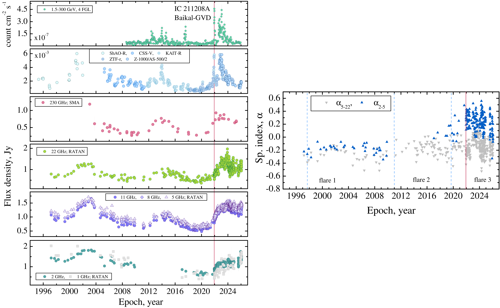<br />
图注：Multiband light curves of \(\pks\) in 1995--2026 (upper panel), combined with the corresponding low- and high-frequency spectral indices, $\alpha_{2-5}$ and $\alpha_{5-22}$, in the same period (lower panel). Areas of the three flares are marked with vertical dashed lines. The epoch of the neutrino event IC211208A/Baikal-GVD is marked by a vertical line over all panels.<br />
对应解读：建议重点查看的图表 1；关键图表逐图导读 图 1：三十年多波段光变总览与 IC211208A 时间标记。<br />
入选理由：该图直接给出1995--2026年射电、毫米波、光学和高能波段的长期光变，并用竖线标出 IC211208A/Baikal-GVD 事件，是判断中微子事件是否处于历史高态、耀发上升/峰值/下降阶段的基础图。相比单一波段图，它最能支撑日报对“事件附近活动是否异常”的总体解读。<br />
来源与置信度：\(arxiv_source\)；high；\(arxiv_source\) / PKS0735+17.tex:figure[1]</p>
<p><strong>Fig11</strong><br />
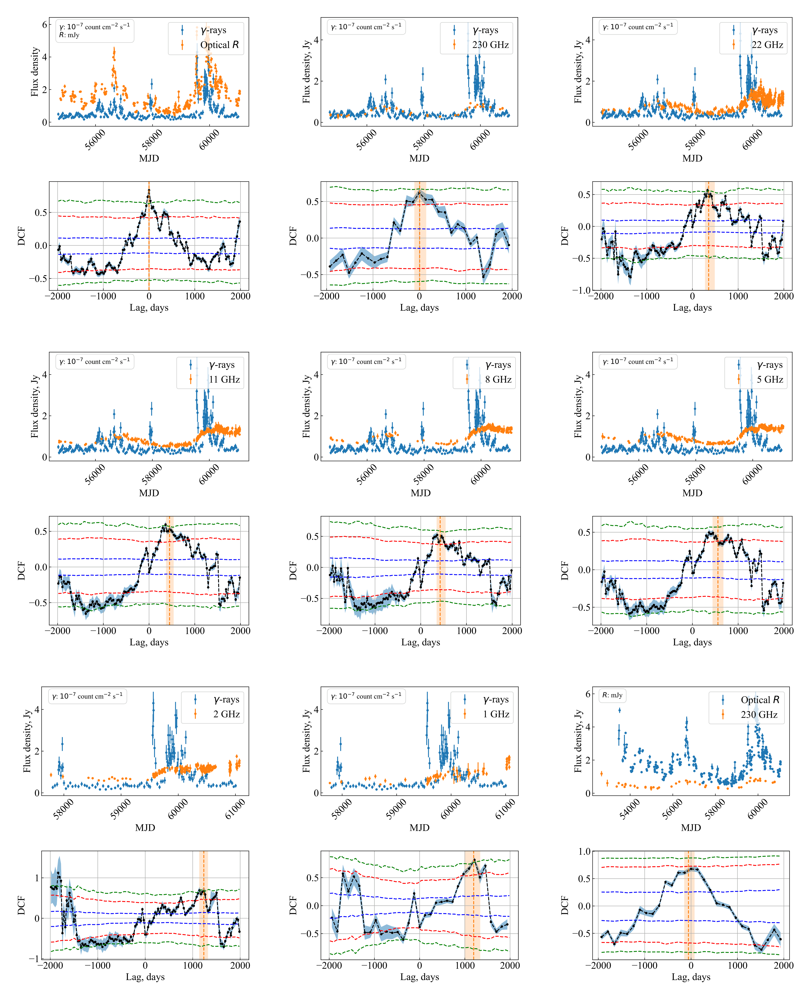<br />
图注：The light curves for the entire observed time interval (upper panels) and corresponding DCFs (lower panels). The pairs of frequencies are designated in the legends. The black lines with the blue areas are the DCF values with their uncertainties. The dashed blue, red, and green horizontal lines are the 1, 2, and 3$\sigma$ significance levels, respectively. The orange vertical lines are the lags measured by the FR/RSS method. The orange areas are the lag uncertainties (16th and 84th percentiles).<br />
对应解读：建议重点查看的图表 3；关键图表逐图导读 图 3；模型拟合段落中的跨波段滞后与 DCF/FR-RSS 不确定度分析。<br />
入选理由：该图同时展示完整时间段光变曲线和对应 DCF，包含 DCF 误差、1/2/3σ 显著性水平、FR/RSS 滞后位置及16--84百分位不确定区间，正好对应日报强调的“不要只看最大相关系数，要看相关峰、峰宽、置信区间和红噪声显著性”。它是支撑0到约1200天跨波段滞后结论的核心诊断图。<br />
来源与置信度：\(arxiv_source\)；high；\(arxiv_source\) / PKS0735+17.tex:figure[11]</p>
<p><strong>Fig03</strong><br />
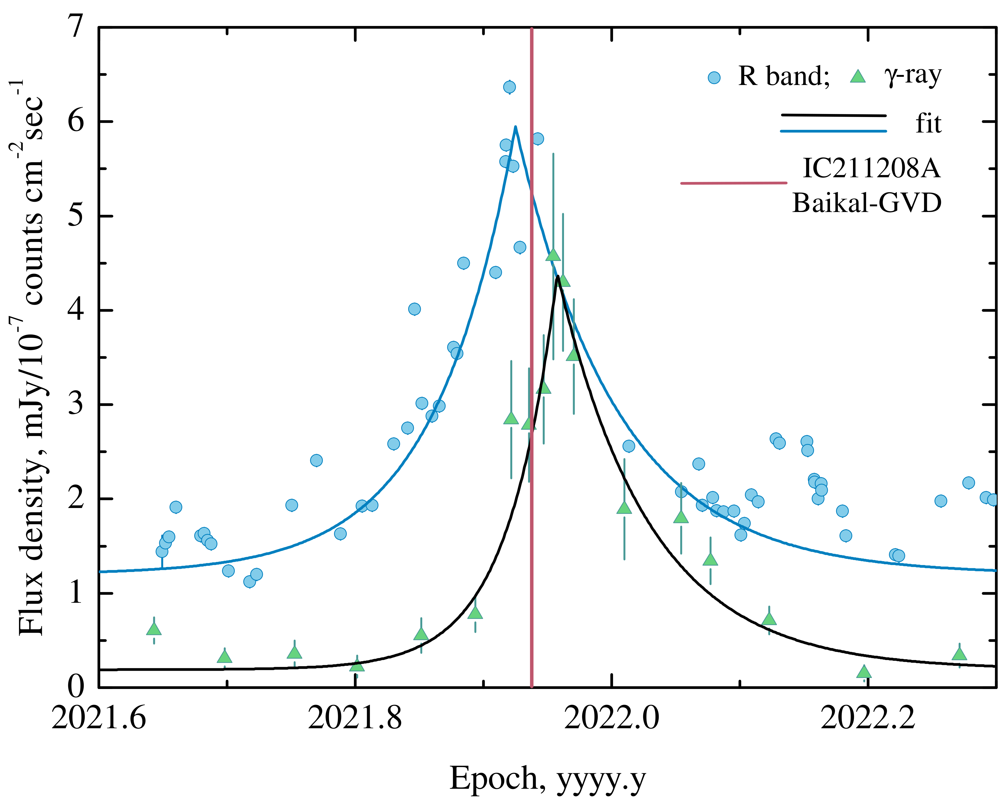<br />
图注：Fine structure of the late-2021 $\gamma$-ray and optical pre-flares, coincided with the IC211208A and Baikal-GVD events (marked by solid vertical line) in 2021--2022.<br />
对应解读：建议重点查看的图表 4；关键图表逐图导读 图 4：IC211208A 附近 γ 射线—光学局部放大图。<br />
入选理由：该图专门放大2021--2022年晚期 γ 射线和光学 pre-flare 的精细结构，并标出 IC211208A 与 Baikal-GVD 事件时间，最适合检查事件前后数天内短时爆发是否真实存在，以及约12天 γ 射线—光学滞后是否可能受采样和误差条影响。<br />
来源与置信度：\(arxiv_source\)；high；\(arxiv_source\) / PKS0735+17.tex:figure[3]</p>
<p><strong>Fig05</strong><br />
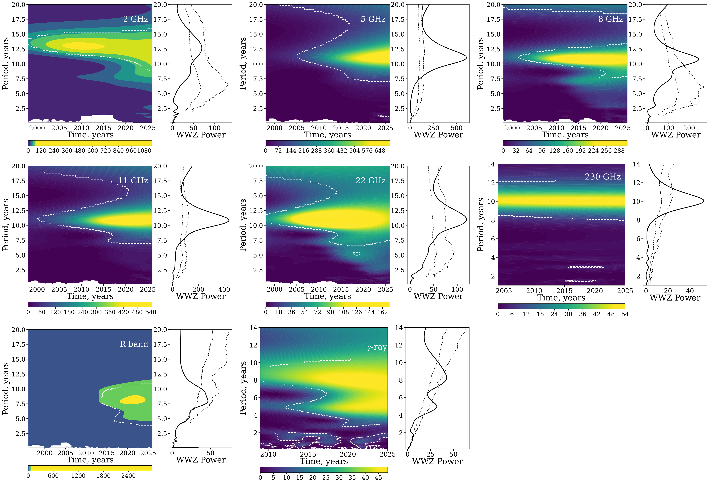<br />
图注：WWZ power maps and global spectra for \(\pks.\) Each left-hand panel presents the WWZ power distribution as a function of time (horizontal axis, in years) and trial period (vertical axis, in years). The colour scale reflects the strength of the localised quasi-periodic signal, with brighter tones indicating higher WWZ power. White dashed contours outline regions where the WWZ power exceeds the period-dependent 95th percentile derived from 1000 Monte Carlo red-noise realisations, following the approach of \(\citet{2013MNRAS.433..907E}.\) These contours should be regarded as visual guides to enhanced WWZ power. The corresponding right-hand panels show the global WWZ spectra, obtained by averaging the WWZ power over the full time span at each trial period. Thick black solid curves represent the observed global spectra, while thin black dash-dotted and thin black solid lines mark the 95 per cent and 99 per cent significance levels, respectively, derived from the simulations. Note that transient but locally strong signals may not manifest themselves in the global spectrum if they are not sustained over the full observation window. The colour bars indicate the WWZ power scale applied in the left panels.<br />
对应解读：建议重点查看的图表 5；关键图表逐图导读 图 5；模型拟合段落中的 WWZ 周期/准周期搜索。<br />
入选理由：该图给出多波段 WWZ power map 和全局谱，并叠加由红噪声蒙特卡洛得到的95%和99%显著性线，直接支撑日报关于10--11年射电—毫米波准周期信号及其显著性的讨论。它还能显示信号是否在时间上持续，而不仅是全局谱中的单个峰。<br />
来源与置信度：\(arxiv_source\)；high；\(arxiv_source\) / PKS0735+17.tex:figure[5]</p>
<p><strong>Fig04</strong><br />
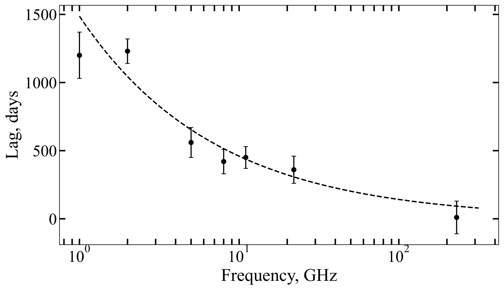<br />
图注：Frequency dependence of the time delays relative to the $\gamma$-ray band.<br />
对应解读：建议重点查看的图表 6；关键图表逐图导读 图 6；模型拟合段落中的滞后—频率关系。<br />
入选理由：该图直接展示相对于 γ 射线波段的时间延迟随频率变化，是检验“低频射电滞后更长、符合不透明度分层喷流传播”的关键汇总图。它比单独的光变曲线更适合支撑频率依赖滞后和传播序列的物理解释。<br />
来源与置信度：\(arxiv_source\)；high；\(arxiv_source\) / PKS0735+17.tex:figure[4]</p>
<p><strong>Fig09</strong><br />
<br />
图注：Posterior distributions and parameter correlations (a corner diagram) for the jet-precession model. The diagonal panels show the marginalized one-dimensional posterior distributions, while the off-diagonal panels show the two-dimensional posterior distributions for each parameter pair. The plotted parameters are the reference epoch ($t_0$), the precession axis viewing angle ($\Phi_0$), the precession cone semi-opening angle~($\Omega$), the Lorentz factors $\gamma_\nu$ with the subscripts indicating the frequencies, and the corresponding intrinsic flux density normalizations $S_{\nu,0}$. The contours demonstrate the degree of correlation between the model parameters and enclose 39.3, 68.3, 95.5, and 99.7 per cent of the posterior probability in the two-dimensional projections, from inner to outer contours. The vertical dashed lines in the one-dimensional histograms mark the best-fitted parameters (the medians) and the 68.3 per cent marginal credible intervals, the corresponding numerical values are given in Table~\(\ref{tab:precess}\) and its caption.<br />
对应解读：建议重点查看的图表 7；关键图表逐图导读 图 7；模型拟合段落中的喷流进动模型参数约束与退化。<br />
入选理由：该角图展示进动模型的后验分布、参数相关性和可信区间，包含视线角、进动锥半开角、各频率洛伦兹因子和本征流量归一化等参数。它最能支撑日报中关于“进动模型自由度高、需与 VLBI 约束比较，单靠进动难以解释长期调制”的讨论。<br />
来源与置信度：\(arxiv_source\)；high；\(arxiv_source\) / PKS0735+17.tex:figure[9]</p>
<h4 id="_79">强相关工作</h4>
<p>最直接的同类背景是 TXS 0506+056 与 IceCube-170922A 的多信使关联研究，以及后续对耀变体总体是否贡献 IceCube 弥散中微子背景的统计检验。PKS 0735+178 与 IC211208A 的情况更接近“候选关联”：它有时间接近的多波段活动和物理上有吸引力的喷流状态，但单个事件的统计说服力弱于有广泛多信使跟进和历史中微子过量讨论的 TXS 0506+056。检索关键词可用 “PKS 0735+178 IC211208A neutrino”, “IceCube blazar neutrino association”, “BL Lac multiwavelength variability neutrino”。</p>
<p>在喷流物理方面，本文与 VLBI core-shift、射电时间延迟和冲击传播模型一脉相承。经典问题是频率依赖射电核心能否定量反映喷流磁场和粒子密度，以及多波段 flare 是否可由单个扰动从上游向下游传播解释。与此相反的观点或张力来自两方面：一是耀变体红噪声会制造假周期和假相关；二是许多中微子—耀变体关联在总体统计上并不显著。检索关键词可用 “VLBI core shift blazar time delays”, “opacity stratified jet”, “blazar quasi-periodicity red noise”, “IceCube Fermi blazar stacking limits”。</p>
<p><strong>同一事件 / 同类源线索</strong>：</p>
<ul>
<li><a href="https://arxiv.org/abs/2606.22190">https://arxiv.org/abs/2606.22190</a></li>
<li><a href="https://arxiv.org/pdf/2606.22190">https://arxiv.org/pdf/2606.22190</a></li>
<li><a href="https://ned.ipac.caltech.edu/byname?objname=PKS%200735%2B178">https://ned.ipac.caltech.edu/byname?objname=PKS%200735%2B178</a></li>
</ul>
<p><strong>相似工作</strong>：</p>
<ul>
<li><a href="https://arxiv.org/abs/1807.08794">https://arxiv.org/abs/1807.08794</a></li>
<li><a href="https://arxiv.org/abs/1807.08816">https://arxiv.org/abs/1807.08816</a></li>
<li><a href="https://arxiv.org/abs/2201.07313">https://arxiv.org/abs/2201.07313</a></li>
</ul>
<p><strong>基础理论 / 方法工作</strong>：</p>
<ul>
<li><a href="https://ui.adsabs.harvard.edu/abs/1979Natur.279..770B/abstract">https://ui.adsabs.harvard.edu/abs/1979Natur.279..770B/abstract</a></li>
<li><a href="https://ui.adsabs.harvard.edu/abs/1998ARA%26A..36..539U/abstract">https://ui.adsabs.harvard.edu/abs/1998ARA%26A..36..539U/abstract</a></li>
<li><a href="https://ui.adsabs.harvard.edu/abs/1997ApJ...486..799L/abstract">https://ui.adsabs.harvard.edu/abs/1997ApJ...486..799L/abstract</a></li>
</ul>
<p><strong>相反观点 / 张力线索</strong>：</p>
<ul>
<li><a href="https://arxiv.org/abs/1611.03874">https://arxiv.org/abs/1611.03874</a></li>
<li><a href="https://arxiv.org/abs/2001.00930">https://arxiv.org/abs/2001.00930</a></li>
</ul>
</details>
<h3 id="8-reverberation-in-the-narrow-fe-kastro_math_2455-line-in-the-seyfert-galaxy-ngc-4151-with-xrism">8. Reverberation in the Narrow Fe K$α$ Line in the Seyfert Galaxy NGC 4151 with XRISM</h3>
<ul>
<li>来源：arXiv / astro-ph.HE</li>
<li>链接：https://arxiv.org/abs/2606.23384v1</li>
<li>作者：Jon M. Miller, Aberahmen Zoghbi, Xin Xiang, Doyee Byun, Missagh Mehdipour, Liyi Gu, Ehud Behar, Laura Brenneman</li>
<li>评分：novelty 8/10，importance 8/10，relevance 8/10，final 9.00/10</li>
<li>推荐理由：XRISM对NGC 4151窄Fe Kα线混响的高分辨率观测，展示XRISM测量AGN滞后和黑洞质量的能力，属于重要X射线高能天文观测/方法结果。</li>
</ul>
<p><strong>中文题目</strong>：XRISM 在 Seyfert 星系 NGC 4151 中测到窄铁 \(K\alpha\) 线的混响信号</p>
<p><strong>做了什么</strong>：这篇文章用 2024 年间隔约两天的 9 次 XRISM 观测，加上 Swift 对驱动 X 射线连续谱的监测，研究 NGC 4151 的窄铁 \(K\alpha\) 发射线是否随中心电离连续谱变化而延迟响应。作者把铁线分解为较远处的窄核和速度宽度约 \(\sigma=5.36\pm0.48\times10^{3}\ {\rm km\ s^{-1}}\) 的 BLR 尺度成分，并用连续谱与线通量的时间序列拟合得到 \(\tau=3.5^{+2.8}_{-1.7}\) 天的滞后，蒙特卡洛检验约为 \(2\sigma\) 显著性。这个半径约为 \(3.6^{+3.0}_{-1.7}\times10^{3}\ GM/c^{2}\)，可给出 \(M_{\rm BH}/f_X=2.0^{+1.4}_{-1.0}\times10^{7}M_\odot\) 的 X 射线混响质量估计。</p>
<p><strong>为什么重要</strong>：铁 \(K\alpha\) 线通常被拿来诊断 AGN 中从吸积盘到分子环的冷物质分布，但“窄线”到底有多少来自 BLR 尺度、多少来自更远的尘埃环，一直受限于能谱分辨率和时间采样。XRISM 的高分辨率微量热计给出线宽和线形，Swift 监测给出驱动光变，这让 X 射线铁线混响开始接近光学 \(H\beta\) 混响映射的物理用途：不仅定位发射区，还能估黑洞质量。</p>
<p><strong>理论 / 观测 / 仪器方法价值</strong>：对观测而言，本文展示了 XRISM 不只适合静态高分辨率谱学，也能做时间域谱线混响。对理论而言，它把铁线发射区从“远处反射体”这种单一区域图像推进到 BLR、环状尘埃结构和可能的内侧反射成分并存的分层图像。对方法而言，它把线宽、线通量响应、连续谱驱动和蒙特卡洛显著性检验结合起来，是未来用高分辨率 X 射线谱测 AGN 质量和几何因子的模板。</p>
<p><strong>为什么应该关注</strong>：如果你关心 AGN 黑洞质量标定、X 射线反射、遮蔽 AGN 的中心结构，或者 XRISM/Resolve 能做什么，这篇都值得看。它不是一个极高显著性的“定论”，但很清楚地说明：只要有合适的监测节奏和线型建模，铁 \(K\alpha\) 窄线也能像光学宽线那样参与混响映射，尤其对光学受遮蔽或 BLR 难测的 AGN 很有潜力。</p>
<details class="paper-detail">
<summary>展开详细解读：文章讲解、背景、理论、重点章节、图表与相关工作</summary>
<h4 id="_80">文章详细讲解</h4>
<p>科学问题：NGC 4151 是最经典的近邻 Seyfert 1.5 星系之一，X 射线亮、变化强、吸收复杂，也有长期光学 BLR 混响资料。铁 \(K\alpha\) 线在约 \(6.4\ {\rm keV}\) 处来自低电离或近中性铁的荧光发射，过去常被称为“窄线”，因而容易被解释为远处分子环或窄线区的反射。但已有 Chandra、XMM-Newton、NuSTAR 和低分辨率时延研究提示，NGC 4151 的铁线有一部分宽度和响应时间都更接近光学 BLR 尺度。本文的核心问题就是：用 XRISM 的高分辨率谱，能否直接把这一 BLR 尺度铁线成分分离出来，并测到它对连续谱的滞后响应？</p>
<p>作者怎么做：他们在 2024 年获得 9 次 XRISM 观测，观测之间约隔一天，形成覆盖十几天的谱序列；同时用 Swift 在 XRISM 序列之前、期间和之后监测 X 射线连续谱，使“驱动光变”不会只由 XRISM 的离散点决定。谱学上，作者用适合有限宽度发射线的 line kernel 描述铁 \(K\alpha\) 复合线形，区分静止能量附近的窄核、可能的 Compton shoulder、以及速度宽度达到数千 \({\rm km\ s^{-1}}\) 的 BLR-like 成分。时间域上，他们用 Swift 连续谱光变作为输入，用一个带滞后的响应模型拟合 XRISM 测得的线通量趋势。</p>
<p>关键结果：平均 BLR 成分速度宽度为 \(\sigma=5.36\pm0.48\times10^{3}\ {\rm km\ s^{-1}}\)，这个数值太宽，不适合简单归因于宿主星系尺度或经典窄线区；又不需要诉诸强相对论内盘宽线。连续谱和线通量的联合时间拟合给出 \(\tau=3.5^{+2.8}_{-1.7}\) 天，换算成 \(M_{\rm BH}=1.7\times10^{7}M_\odot\) 的引力半径单位，为 \(r=3.6^{+3.0}_{-1.7}\times10^{3}\ GM/c^{2}\)。蒙特卡洛模拟给出的检测显著性约 \(2\sigma\)，因此应理解为有物理一致性的证据，而不是强到不可动摇的发现。把线宽和滞后合成 virial product，得到 \(M_{\rm BH}/f_X=2.0^{+1.4}_{-1.0}\times10^{7}M_\odot\)，与既有 \(H\beta\) 质量估计大体相容，但几何因子 \(f_X\) 的选择会影响绝对质量。</p>
<p>局限和下一步：最大限制是时间基线和采样数。9 次 XRISM 观测足以显示趋势，但对复杂转移函数、非线性响应、吸收变化和多区域线发射而言仍然偏少。\(2\sigma\) 显著性意味着系统误差必须认真看，包括连续谱插值、吸收建模、线通量与线宽的耦合、背景与能量标定、以及是否存在更远处的恒定铁线稀释响应。下一步应是更长基线、更密采样的 XRISM 或未来 Athena/XIFU 监测，并把铁 \(K\alpha\)、\(H\beta\)、红外尘埃混响和硬 X 射线反射一起做联合几何建模。</p>
<h4 id="_81">关键结果是怎么做出来的</h4>
<p>数据和样本选择上，本文的“样本”不是一批 AGN，而是 NGC 4151 的一个密集监测序列：9 个 XRISM 谱点，时间间隔约两天，并由 Swift 覆盖驱动连续谱在 XRISM 序列前、中、后的变化。这个设计很关键，因为铁线响应如果在几天尺度，单靠稀疏的历史观测很容易把线通量变化、不同仪器交叉定标和长期态变化混在一起。作者的证据链首先要求在每个 XRISM 谱中稳定测量 \(6.4\ {\rm keV}\) 附近线通量，然后用 Swift 光变定义输入连续谱。</p>
<p>谱线结果的核心是线宽。作者报告 BLR-like 铁线成分的平均宽度为 \(\sigma=5.36\pm0.48\times10^{3}\ {\rm km\ s^{-1}}\)。这个宽度不是简单由仪器分辨率造成，因为 XRISM/Resolve 的能量分辨率足以在 \(6\ {\rm keV}\) 附近分辨几千 \({\rm km\ s^{-1}}\) 的速度结构。读者应重点看线型拟合图和残差：如果只有一个极窄的未解析 Gaussian，残差会在铁线翼部留下系统偏差；加入 BLR 宽度成分后，\(6.4\ {\rm keV}\) 附近翼部应被更自然地吸收。</p>
<p>滞后结果来自把 Swift 连续谱与 XRISM 线通量趋势做响应拟合。作者给出的 \(\tau=3.5^{+2.8}_{-1.7}\) 天不是简单峰值读数，而是模型参数的置信区间；显著性通过蒙特卡洛模拟评估，约 \(2\sigma\)。这意味着他们比较了真实数据中线通量与滞后连续谱之间的相关改善，和在无真实滞后或随机光变实现下可能得到的假阳性分布。读者应关注论文中展示连续谱、线通量和最佳滞后模型的图，以及蒙特卡洛显著性或 \(\Delta\chi^2\)、似然改变量的诊断。</p>
<p>黑洞质量估计是结果链的第三步。给定响应半径 \(R=c\tau\) 和线宽 \(\Delta V\)，可以构造 virial product。本文得到 \(M_{\rm BH}/f_X=2.0^{+1.4}_{-1.0}\times10^{7}M_\odot\)，其中 \(f_X\) 吸收发射区几何、倾角和线宽定义的差异。该值与 NGC 4151 既有 \(H\beta\) 混响质量估计形式上一致，但若采用标准光学几何因子，可能偏高。这里最该看的是作者是否使用 \(\sigma\) 还是 \({\rm FWHM}\)，是否扣除了恒定窄核成分，以及误差传播是否包括滞后和线宽二者。</p>
<p>系统误差方面，NGC 4151 的复杂吸收是最大隐患之一。吸收柱密度、电离态或覆盖因子变化都可能改变局部连续谱和铁线等效宽度，从而伪装成线通量响应。另一个隐患是铁线不同区域的混合：远处 torus 的恒定成分会稀释 BLR 响应，内侧盘反射若存在则可能带来更短滞后和更宽线翼。论文的稳健性检验应包括不同 line kernel、不同连续谱描述、不同时间插值或响应函数宽度假设下，\(\tau\) 和 \(\sigma\) 是否仍在相近范围。</p>
<details class="paper-subdetail">
<summary>展开背景、理论、公式、模型、章节和图表导读</summary>
<h4 id="_82">背景知识</h4>
<p>NGC 4151 是 AGN 研究中的“校准源”之一，距离近、亮度高、长期被多波段监测，分类通常为 Seyfert 1.5。它的优势是信号强、历史资料丰富；困难是吸收和光变都很复杂。对这样一个源，任何单次谱拟合都可能受状态变化影响，因此时间域和高分辨率谱学结合尤其重要。</p>
<p>铁 \(K\alpha\) 荧光线源于高能 X 射线照射相对冷的含铁物质后，内层电子空穴退激发产生约 \(6.4\ {\rm keV}\) 光子。若发射来自吸积盘内区，线形会被 Doppler 展宽、引力红移和相对论 beaming 改造；若来自远处分子环，线通常很窄且几乎不随短时标连续谱变化；若来自 BLR 或其内缘，线宽应为几千 \({\rm km\ s^{-1}}\)，响应时标为光天到十几光天。本文正是要检验第三种情况。</p>
<p>历史上，AGN 黑洞质量最常用的直接方法之一是光学混响映射：测量连续谱变化和宽发射线变化之间的滞后，再结合线宽得到 virial product。X 射线铁线混响在物理上类似，但实际更难，因为铁线光子数少、线通量变化小、吸收复杂，并且过去 CCD 谱分辨率不足以可靠分离窄核和中等宽度成分。XRISM/Resolve 的出现改变了这个局面。</p>
<p>为什么现在值得重新看？一方面，XRISM 提供了在 \(6\ {\rm keV}\) 附近几 \({\rm eV}\) 量级的谱分辨率，使几千 \({\rm km\ s^{-1}}\) 的线宽不再完全依赖模型外推。另一方面，Swift 这样的小望远镜能提供高频率监测，补上高分辨率 X 射线卫星观测间隔中的连续谱信息。二者结合后，可以做“线宽加时延”的二维约束，而不是只凭一个谱线宽度猜测发射区。</p>
<p>该领域常见误区是把“窄铁线”直接等同于“torus 发射”。实际上，窄只是相对于相对论盘线而言，几千 \({\rm km\ s^{-1}}\) 的 BLR 尺度铁线在 CCD 谱中也常被混成窄线。另一个误区是把检测到相关性当成完整转移函数测量；本文目前更接近单一有效滞后的测量，还不足以重建发射区的完整径向和角向分布。</p>
<h4 id="_83">基础理论 / 方法脉络</h4>
<p>基本物理图像是：中心 X 射线源的连续谱先变化，周围冷或弱电离气体在光行时延之后通过荧光发射作出响应。若发射气体受黑洞引力主导并近似 virial 运动，则更靠近黑洞的气体具有更大的速度宽度和更短的响应时延。因此，线宽 \(\Delta V\) 与滞后 \(\tau\) 的组合可以给出黑洞质量的 virial product。</p>
<p>铁 \(K\alpha\) 线的可观测量主要有中心能量、通量、等效宽度和速度宽度。中心能量接近 \(6.4\ {\rm keV}\) 表明铁处于低电离态；线宽可以由能量宽度换算为速度宽度；通量随时间的变化则反映照射连续谱的变化和发射区的转移函数。本文特别关注一个宽度约几千 \({\rm km\ s^{-1}}\) 的成分，它在尺度上与光学 BLR 接近。</p>
<p>观测方法上，XRISM 提供高分辨率谱线测量，Swift 提供连续谱监测。XRISM 的角色是把铁线分量分开并给出每个时间段的线通量；Swift 的角色是定义驱动光变，减少由于 XRISM 采样离散导致的滞后不确定性。真正的拟合对象不是单张谱，而是一组谱线通量和一条连续谱光变之间的时延关系。</p>
<p>本文的模型假设可概括为：存在一个相对稳定的铁线发射区域，其响应可用一个有效滞后或简化转移函数描述；线宽可代表引力束缚运动的速度尺度；几何因子 \(f_X\) 把未知的倾角、厚度、轨道各向异性和线宽定义吸收进去。这些假设合理但不唯一，尤其当发射区既有 BLR 成分又有 torus 成分、并且吸收随时间变化时，会出现明显退化。</p>
<p>常见 degeneracy 包括：连续谱归一化变化与吸收变化的退化，线通量变化与等效宽度变化的退化，窄核通量与 BLR 成分通量的退化，以及滞后 \(\tau\) 与响应函数宽度的退化。系统误差还包括能量标定、背景处理、交叉定标、Swift 光变插值方式和线型核选择。读这篇文章时，不应只看最佳滞后值，还要看这些替代模型是否显著改变结论。</p>
<h4 id="_84">公式与推导</h4>
<p>第一步，从荧光响应的光行时尺度出发。若连续谱在中心产生，距离为 \(R\) 的气体在几何投影修正后产生平均滞后 \(\tau\)，最简单的尺度关系为</p>
<div class="math-display">\[R\simeq c\tau .\]</div>
<p>这里 \(c\) 是光速，\(\tau\) 是观测到的连续谱到铁线响应的时间延迟。这个式子忽略了倾角和分布宽度，因此给出的是有效半径而非唯一物理半径。</p>
<p>第二步，把半径写成引力半径单位。黑洞引力半径为</p>
<div class="math-display">\[r_g={GM_{\rm BH}\over c^2},\]</div>
<p>所以无量纲半径为</p>
<div class="math-display">\[{R\over r_g}={c^3\tau\over GM_{\rm BH}} .\]</div>
<p>本文用 \(M_{\rm BH}=1.7\times10^{7}M_\odot\) 时得到约 \(3.6\times10^3\) 个 \(r_g\)，说明发射区远离强相对论内盘，但仍远小于宿主星系尺度。</p>
<p>第三步，谱线能量宽度与速度宽度的关系来自非相对论 Doppler 近似：</p>
<div class="math-display">\[{\sigma_E\over E_0}\simeq {\sigma_v\over c} .\]</div>
<p>其中 \(E_0\) 是铁 \(K\alpha\) 静止能量，\(\sigma_E\) 是能量域 Gaussian 宽度，\(\sigma_v\) 是一维速度宽度。该式适用于 \(\sigma_v\ll c\) 的 BLR 尺度运动，本文的几千 \({\rm km\ s^{-1}}\) 满足这一近似。</p>
<p>第四步，若气体受黑洞引力支配，可写 virial 关系</p>
<div class="math-display">\[M_{\rm BH}=f_X{R\Delta V^2\over G}=f_X{c\tau\Delta V^2\over G} .\]</div>
<p>这里 \(\Delta V\) 可以取线宽 \(\sigma_v\) 或 \({\rm FWHM}\) 的某种定义，\(f_X\) 是几何因子。本文报告 \(M_{\rm BH}/f_X\)，正是因为 \(f_X\) 不能仅靠这组数据唯一确定。</p>
<p>第五步，观测到的谱线通量可以写成连续谱驱动与转移函数的卷积：</p>
<div class="math-display">\[F_{\rm line}(t)=F_0+A\int \Psi(u)F_X(t-u)\,du .\]</div>
<p>其中 \(F_0\) 是恒定远处成分，\(A\) 是响应效率，\(F_X(t)\)<br />
) 是驱动 X 射线连续谱，\(\Psi(u)\) 是延迟分布。若 \(\Psi(u)=\delta(u-\tau)\)，模型就退化为单一滞后响应。</p>
<p>第六步，对每个 XRISM 时间段的线通量拟合可用高斯误差似然表示：</p>
<div class="math-display">\[-2\ln \mathcal{L}=\sum_i{\left[F_{{\rm line},i}-F_{\rm model}(t_i;\tau,A,F_0)\right]^2\over \sigma_i^2}+{\rm const}.\]</div>
<p>这里 \(F_{{\rm line},i}\) 和 \(\sigma_i\) 是第 \(i\) 个时间段测得的线通量和误差。改变 \(	au\) 并最大化 \(\mathcal{L}\) 就得到滞后的最佳值和置信区间。</p>
<p>第七步，滞后检测显著性通常可由似然改变量或 \(\chi^2\) 改变量评估：</p>
<div class="math-display">\[\Delta \chi^2=\chi^2_{\rm null}-\chi^2_{\rm lag}.\]</div>
<p>其中 null 模型可是不含滞后相关的恒定线通量或零响应模型，lag 模型包含 \(\tau\)。因为采样稀疏且误差非理想，本文用蒙特卡洛模拟把 \(\Delta\chi^2\) 转化为约 \(2\sigma\) 的经验显著性。</p>
<p>第八步，若线区运动近似 virial，可检查线宽与滞后的反比平方根标度：</p>
<div class="math-display">\[\Delta V\propto \tau^{-1/2} .\]</div>
<p>这个关系常用于比较不同发射线或不同成分是否处在同一引力势中。本文的铁线宽度和几天滞后与 BLR 尺度相符，但目前还不能单独证明完整的径向 virial 序列。</p>
<h4 id="_85">模型拟合 / 应用方法</h4>
<p>本文的谱拟合首先要在每个 XRISM 观测中描述局部连续谱、吸收和铁线复合结构。拟合量包括连续谱归一化和斜率、吸收参数、铁 \(K\alpha\) 线通量、中心能量、宽度，以及可能的窄核或 Compton shoulder 成分。由于 NGC 4151 吸收复杂，线通量不能只靠简单在 \(6.4\ {\rm keV}\) 附近积分；需要同时拟合局部 continuum，否则等效宽度和通量会被吸收曲率污染。</p>
<p>时间域拟合把 Swift 连续谱作为驱动量，把 XRISM 测得的线通量作为响应量。最简模型使用单一滞后 \(\tau\)、响应归一化和恒定线通量基底；更一般的模型会使用有限宽度的 transfer function。参数估计可以用 \(\chi^2\) 网格、最大似然或 MCMC 完成，关键是要传播 Swift 光变误差、XRISM 线通量误差和采样窗口造成的不确定性。</p>
<p>主要退化关系有三类。第一，恒定远处铁线成分 \(F_0\) 越大，可变 BLR 成分的响应振幅越被稀释，导致滞后更难显著。第二，响应函数越宽，单一峰值滞后越不清晰，\(\tau\) 的置信区间会变大。第三，几何因子 \(f_X\) 与线宽定义强相关；同样的谱线若用 \(\sigma_v\) 或 \({\rm FWHM}\) 表示，得到的 virial product 和需采用的 \(f_X\) 不同。</p>
<p>残差诊断非常重要。谱学上，要看铁线核心和翼部是否有系统残差，特别是模型是否在 \(6.4\ {\rm keV}\) 两侧留下同号结构；时间域上，要看线通量残差是否随连续谱强弱、吸收状态或观测序号呈系统趋势。如果残差与吸收参数同步变化，混响解释就会变弱；如果不同线型核和连续谱处理下都得到相近的 \(\tau\)，结论才更稳健。</p>
<p>模型可能失败的地方包括：实际发射区不是一个单半径壳层，而是从 BLR 到 torus 的连续分布；铁线响应可能非线性，受电离参数和覆盖因子变化影响；Swift 观测到的能段未必完美代表照射铁线的硬 X 射线连续谱；短时间基线可能错过更长滞后的 torus 成分。实际应用中，这类拟合最适合与光学 \(H\beta\) 混响、红外尘埃滞后和硬 X 射线反射谱联合使用。</p>
<h4 id="_86">重点章节 / 结果段落怎么读</h4>
<p>数据/样本部分应先看观测时间表：9 次 XRISM 观测的间隔、每次曝光、Swift 监测覆盖范围，以及是否有缺口。这个部分决定了 \(3.5\) 天滞后是否真能由采样解析，而不是由窗口函数人为偏好。</p>
<p>谱模型部分是本文的核心之一。读者应关注作者如何处理 NGC 4151 的吸收、局部连续谱和铁线复合结构，尤其是 line kernel 的选择、是否允许线宽共享、是否包含恒定窄核和 Compton shoulder。这里直接决定 \(\sigma=5.36\times10^{3}\ {\rm km\ s^{-1}}\) 是否可信。</p>
<p>时间滞后方法部分要重点看 Swift 连续谱如何插值或建模、XRISM 线通量误差如何进入似然、null 模型是什么、蒙特卡洛模拟如何构造。\(2\sigma\) 显著性在天文中不算强，因此统计检验的细节比最佳值本身更重要。</p>
<p>主结果部分应把三件事连起来读：线宽、滞后、virial mass。单独看线宽只能说明发射区可能在 BLR 尺度；单独看滞后只是相关信号；二者结合并与既有 \(H\beta\) 质量比较，才构成本文最有价值的物理解释。</p>
<p>讨论和稳健性检验部分应看作者如何处理与历史测量的关系，包括过去 NGC 4151 的光学 BLR 半径、X 射线铁线宽度、低分辨率滞后结果，以及不同几何因子下质量是否仍相容。若附录给出替代模型或模拟，应优先检查这些结果对 \(	au\) 和 \(M_{\rm BH}/f_X\) 的影响。</p>
<h4 id="_87">建议重点查看的图表</h4>
<ol>
<li>观测时间线和 Swift/XRISM 光变图：看 Swift 连续谱是否在 XRISM 前后都有足够覆盖，连续谱是否有足够振幅驱动线响应。</li>
<li>平均 XRISM 铁线谱图：看 \(6.4\ {\rm keV}\) 附近数据、最佳模型和残差，尤其是加入 BLR 宽度成分前后的翼部残差变化。</li>
<li>分 epoch 的铁线通量图：看 9 个 XRISM 点的误差棒是否足以支撑趋势，是否由一两个异常点主导。</li>
<li>连续谱与滞后线响应拟合图：看最佳 \(\tau\) 模型是否真实跟随线通量，还是仅在局部时间段匹配。</li>
<li>\(	au\) 的似然曲线或后验分布：看置信区间是否单峰，是否存在零滞后或长滞后的次优解。</li>
<li>蒙特卡洛显著性诊断：看真实 \(\Delta\chi^2\) 或相关系数在模拟分布中的位置，理解 \(2\sigma\) 的实际含义。</li>
<li>线宽与滞后推导的质量比较表：看 X 射线 virial product 与 \(H\beta\) 质量、历史铁线测量是否一致。</li>
<li>替代谱模型或系统误差表：看不同吸收模型、line kernel、固定/自由窄核通量对结论的影响。</li>
</ol>
<h4 id="_88">关键图表逐图导读</h4>
<p>图 1：通常应是观测排布与 Swift 连续谱光变。横轴为时间，纵轴为 X 射线计数率或通量，XRISM 观测窗口以竖线或阴影标出。读图时要看连续谱在 9 次 XRISM 覆盖期间是否有明显上升或下降，因为没有驱动变化就很难测混响。陷阱是 Swift 能段通量不一定等同于照射铁线的全部硬 X 射线通量。</p>
<p>图 2：平均 XRISM 谱和铁 \(K\alpha\) 区域模型。横轴为能量，纵轴为计数率、通量或数据/模型比；模型线可能包含连续谱、窄铁线核、BLR-like 成分和其他弱线。重点看 \(6.4\ {\rm keV}\) 附近翼部是否需要数千 \({\rm km\ s^{-1}}\) 宽度。读图陷阱是局部 continuum 或吸收曲率若处理不好，也会改变翼部残差。</p>
<p>图 3：分 epoch 线通量或等效宽度随时间变化。横轴为日期或相对时间，纵轴为铁线通量，数据点带 \(1\sigma\) 误差棒。应检查趋势是否由多个点共同支持，还是由单个高/低点驱动。若图中同时画出连续谱滞后后的曲线，需看相位是否匹配。</p>
<p>图 4：滞后拟合或交叉相关/似然曲线。横轴为 \(	au\)，纵轴可能是 \(\chi^2\)、\(\Delta\chi^2\)、似然或相关系数。最佳值应在约 \(3.5\) 天附近，置信区间应覆盖约 \(1.8\) 到 \(6.3\) 天。读图陷阱是稀疏采样会产生多个局部峰，不能只看最高峰而忽略窗口函数。</p>
<p>图 5：蒙特卡洛显著性分布。横轴为模拟得到的统计量，纵轴为出现次数或累积分布，真实数据统计量用竖线表示。若真实值只在分布尾部约 \(2\sigma\)，说明结果有提示性但仍需更多数据确认。关键不是把 \(2\sigma\) 夸大，而是看模拟是否包含了真实采样、误差和红噪声光变。</p>
<p>图 6：virial mass 或与历史测量比较图/表。横轴可能为滞后或发射线种类，纵轴为速度宽度、半径或质量。应看 X 射线铁线点是否落在 \(H\beta\) BLR 的 virial 关系附近，以及采用不同 \(f_X\) 时质量如何移动。陷阱是不同论文对线宽和几何因子的定义不完全相同，不能机械比较数值。</p>
</details>
<h4 id="_89">论文原图 / 可嵌入图片</h4>
<p><strong>Fig05</strong><br />
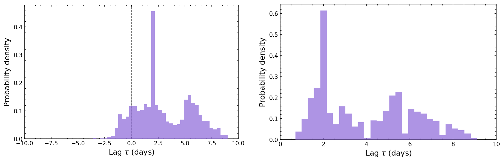<br />
图注：The cross correlation centroid lag probability distributions that result from running pyCCF with 10,000 Monte Carlo simulations over a range of [-5,10] days (left) and [0,10] days (right). The distribution shown at left verifies that there are no spurious peaks below zero lag. The distribution at right indicates that the BLR component of the Fe~K$_{\alpha}$ line lags the driving continuum by $\tau = 3.5^{+2.8}_{-1.7}$~days. Fully consistent results are obtained by running Javelin instead of pyCCF.<br />
对应解读：对应“建议重点查看的图表”第5项τ的似然/后验分布、第6项蒙特卡洛显著性诊断，以及“关键图表逐图导读”图4/图5关于滞后分布和2σ显著性的讨论。<br />
入选理由：这张图直接给出pyCCF在[-5,10]天和[0,10]天范围内的滞后概率分布，包含最佳滞后τ=3.5^{+2.8}_{-1.7}天、负滞后伪峰检查和Monte Carlo不确定性，是支撑论文核心结论“铁Kα BLR成分存在约数天滞后”的最关键证据。<br />
来源与置信度：\(arxiv_source\)；high；\(arxiv_source\) / main.tex:figure[5]</p>
<p><strong>Fig04</strong><br />
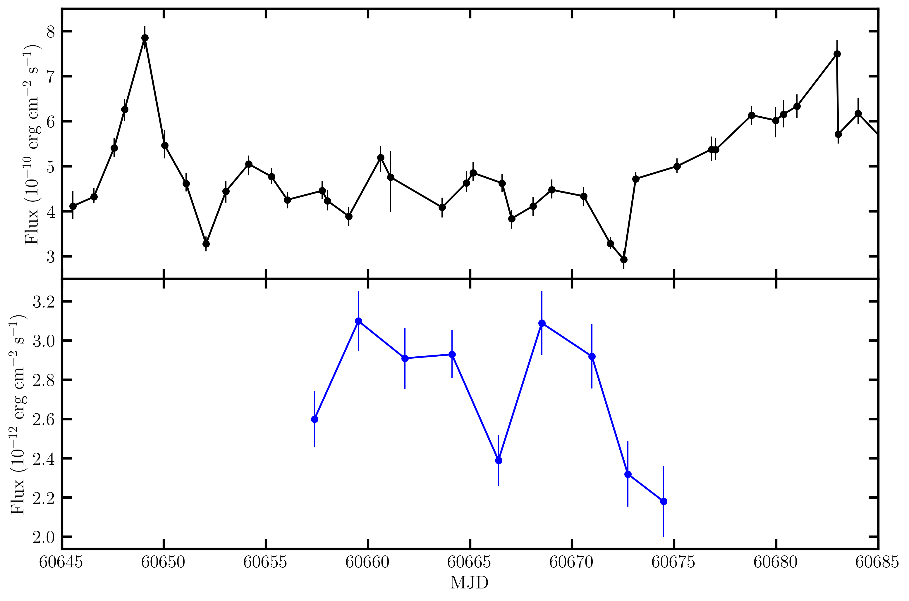<br />
图注：Upper panel: the unabsorbed X-ray flux in the full XRISM/Resolve band (2.2-17.4~keV), as measured via Swift/XRT monitoring observations. Lower panel: the flux of the BLR component of the Fe~K$_{\alpha}$ emission lines, as measured via joint fits to Resolve and Xtend spectra.<br />
对应解读：对应“建议重点查看的图表”第1项观测时间线和Swift/XRISM光变图、第3项分epoch铁线通量图，以及时间域模型拟合段落中Swift连续谱驱动与XRISM线响应的关系。<br />
入选理由：上下面板同时展示Swift测得的未吸收连续谱通量和XRISM测得的Fe Kα BLR成分线通量，是判断9个XRISM点误差棒、连续谱覆盖、驱动振幅和线通量趋势是否可靠的基础图，比单独的谱图更直接服务于混响测量。<br />
来源与置信度：\(arxiv_source\)；high；\(arxiv_source\) / main.tex:figure[4]</p>
<p><strong>Fig06</strong><br />
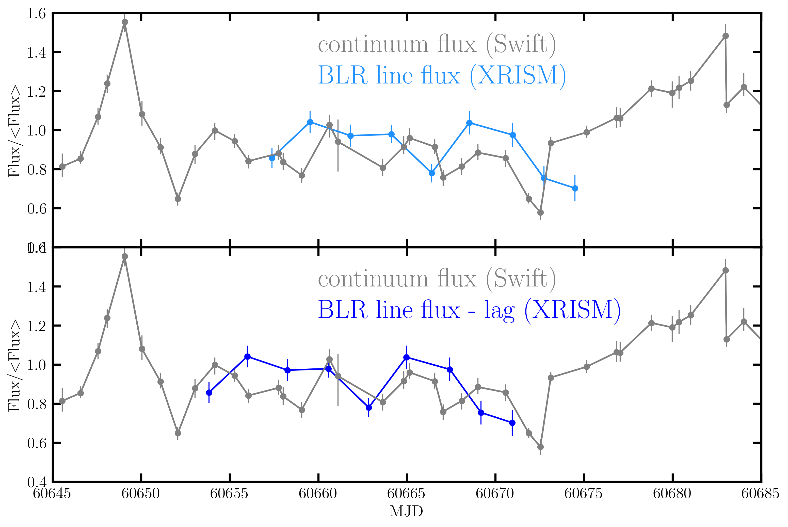<br />
图注：Continuum and BLR line flux trends, relative to local mean values. The XRISM data are vertically shifted to better enable comparisons with local trends in the continuum flux. When shifted by the best-fit lag, the BLR line flux more closely matches the continuum flux trend.<br />
对应解读：对应“建议重点查看的图表”第4项连续谱与滞后线响应拟合图，以及“关键图表逐图导读”图3中关于滞后后曲线相位是否匹配的检查。<br />
入选理由：该图把连续谱和BLR线通量相对于局部均值的趋势放在一起，并展示按最佳滞后平移后线通量是否更贴合连续谱变化，能直观看出τ≈3.5天不是单纯来自统计分布，而是在时间序列形状上有物理对应。<br />
来源与置信度：\(arxiv_source\)；high；\(arxiv_source\) / main.tex:figure[6]</p>
<p><strong>Fig01</strong><br />
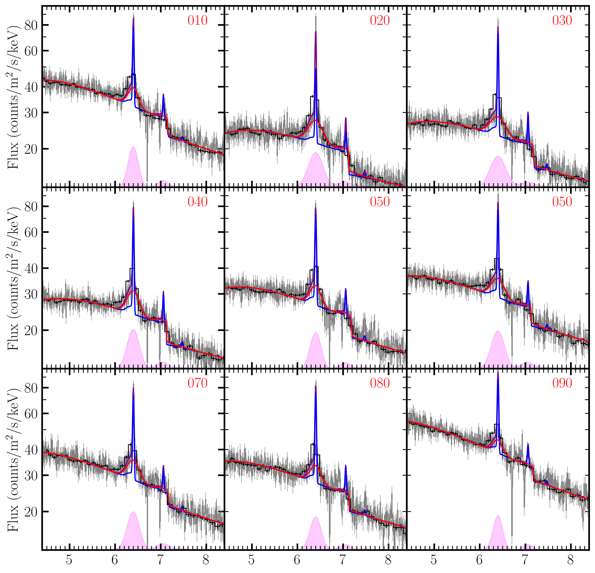<br />
图注：The nine XRISM spectra of NGC~4151, centered on the narrow Fe~K$-{\alpha}$ emission line. The data are binned for visual clarity. The Resolve spectrum is shown in gray, and the Xtend spectrum in black. For clarity, only the Resolve model components are shown (purple: total model, blue: torus line, red: BLR line). The shaded magenta region depicts the flux of the BLR line without the continuum. Note that the BLR line varies in peak strength and width, and the total line flux depends on both parameters.<br />
对应解读：对应“建议重点查看的图表”第2项平均/分epoch XRISM铁线谱图，以及模型拟合段落中窄核、torus线、BLR线和残差诊断的讨论。<br />
入选理由：这张图展示9次XRISM观测在Fe Kα附近的谱形，并标出总模型、torus窄线和BLR宽线成分，直接支撑论文关于BLR成分宽度达到数千km/s且线峰强度和宽度随epoch变化的谱学结论。<br />
来源与置信度：\(arxiv_source\)；high；\(arxiv_source\) / main.tex:figure[1]</p>
<p><strong>Fig02</strong><br />
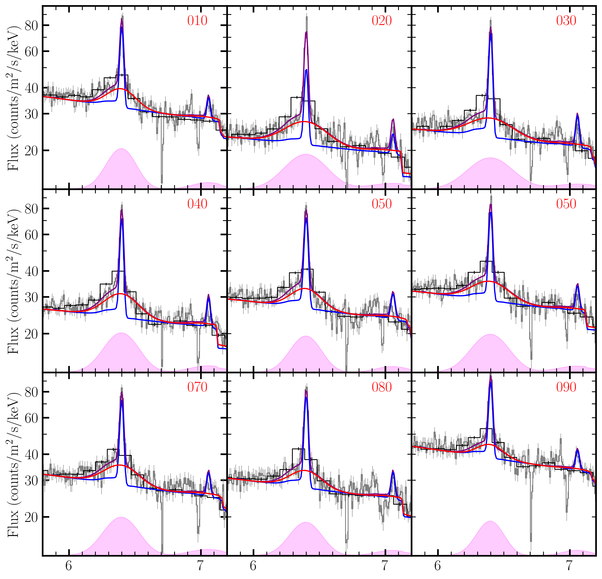<br />
图注：Same as Figure 1, but the spectra are shown on a narrower band to illustrate additional details of the Fe~K$_{\alpha}$ emission line components.<br />
对应解读：对应“关键图表逐图导读”图2关于6.4 keV附近铁Kα复合结构、翼部和不同线成分分解的详细检查。<br />
入选理由：Fig02是Fig01的窄能段放大版，更适合检查6.4 keV附近窄核、BLR-like翼部和其他细节成分是否被模型合理分离；对于日报中强调的翼部残差、局部continuum和吸收曲率风险有补充价值。<br />
来源与置信度：\(arxiv_source\)；high；\(arxiv_source\) / main.tex:figure[2]</p>
<p><strong>Fig03</strong><br />
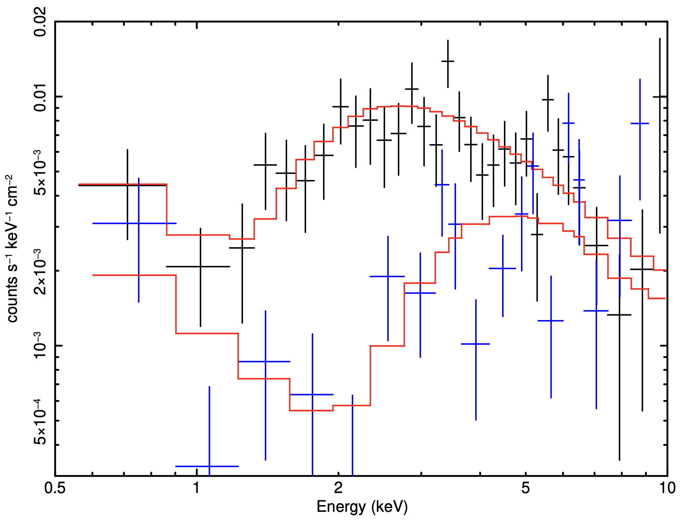<br />
图注：Swift/XRT spectra of NGC~4151 obtained as part of our two-month continuum monitoring campaign. The spectra shown here represent the extrema of the variable internal column(s) that shape the spectrum of NGC~4151. In this analysis, changes in the unabsorbed flux are estimated by modeling the data using neutral partial-covering absorption, and a simple power-law continuum. This simple treatment is a proxy for complex ionized absorption. The most highly obscured spectrum in the sequence (shown in blue) was obtained on MJD 60661.10, and the least obscured was obtained on MJD 60704.39 (shown in black).<br />
对应解读：对应模型拟合段落中关于NGC 4151复杂吸收、Swift连续谱未吸收通量估计和系统误差的讨论。<br />
入选理由：该图不直接给出铁线滞后或线通量，但展示Swift/XRT监测中内部吸收柱密度极端状态的谱形差异，有助于理解连续谱驱动量需要通过吸收建模校正，也是评估系统误差的重要背景图。<br />
来源与置信度：\(arxiv_source\)；high；\(arxiv_source\) / main.tex:figure[3]</p>
<h4 id="_90">强相关工作</h4>
<p>这篇工作应放在三条文献线索中看。第一条是 NGC 4151 的同源历史研究，包括光学 \(H\beta\) 混响、X 射线吸收变化、铁 \(K\alpha\) 线宽和反射成分测量；检索关键词可用 “NGC 4151 H beta reverberation mapping”, “NGC 4151 Fe K alpha line Chandra”, “NGC 4151 X-ray absorption variability”。这些同源论文能帮助判断本文的几天滞后是否与既有 BLR 半径和黑洞质量相容。</p>
<p>第二条是同类方法研究，即 AGN X 射线铁线或反射混响。许多 X 射线混响工作集中在内盘软滞后或宽铁线滞后，而本文关注的是窄铁线中 BLR 尺度成分，尺度更大、时标更长、谱线更接近近中性 \(6.4\ {\rm keV}\)。检索关键词可用 “AGN Fe K alpha reverberation”, “X-ray broad line region Fe K alpha”, “XRISM Resolve AGN spectroscopy”。</p>
<p>第三条是基础混响映射与质量标定文献。光学 BLR 混响给出了 \(R\)-\(L\) 关系、virial product 和平均几何因子标定，但 X 射线铁线发射区的几何、各向异性和选择效应未必与 \(H\beta\) 相同。本文与光学质量估计之间的轻微偏高趋势不应立即解读为矛盾，而应视作 \(f_X\)、发射区半径分布和线宽定义尚未统一的提示。</p>
<p><strong>同一事件 / 同类源线索</strong>：</p>
<ul>
<li><a href="https://arxiv.org/abs/2606.23384">https://arxiv.org/abs/2606.23384</a></li>
</ul>
<p><strong>相似工作</strong>：</p>
<ul>
<li><a href="https://arxiv.org/abs/2606.23384">https://arxiv.org/abs/2606.23384</a></li>
</ul>
<p><strong>基础理论 / 方法工作</strong>：</p>
<ul>
<li><a href="https://arxiv.org/abs/astro-ph/0109495">https://arxiv.org/abs/astro-ph/0109495</a></li>
<li><a href="https://arxiv.org/abs/1303.1742">https://arxiv.org/abs/1303.1742</a></li>
</ul>
<p><strong>相反观点 / 张力线索</strong>：</p>
<p>（未提供）</p>
</details>
<h3 id="9-a-grid-of-fast-rotating-chemically-homogeneous-supernova-andor-long-grb-progenitors">9. A grid of fast-rotating, chemically-homogeneous, supernova and/or long-GRB progenitors</h3>
<ul>
<li>来源：arXiv / astro-ph.HE</li>
<li>链接：https://arxiv.org/abs/2606.21824v1</li>
<li>作者：M. Renzo, O. Gottlieb, H. S. Chan, J. A. Goldberg, A. Grichener, K. Sen, N. Shah, E. Farag</li>
<li>评分：novelty 8/10，importance 8/10，relevance 8/10，final 9.00/10</li>
<li>推荐理由：发布快速旋转化学均匀演化的大质量星核心坍缩/长GRB前身星MESA网格，针对collapsar、磁星驱动和喷流超新星模拟提供可复用输入，方法价值高。</li>
</ul>
<p><strong>中文题目</strong>：快速自转、化学均匀演化的超新星和/或长伽马暴前身星模型网格</p>
<p><strong>做了什么</strong>：这篇论文用开源恒星演化程序 \(\textsc{MESA}\) 计算了一套低金属丰度、快速自转的大质量单星前身星网格：\(113\) 个模型覆盖初始质量 \(M_{\rm ZAMS}=30\text{--}90\,M_\odot\)，初始刚体自转角速度 \(\omega_{\rm ZAMS}=0.5\text{--}0.99\,\omega_{\rm crit}\)，金属丰度 \(Z=0.001\)。这些模型被设计为经历旋转诱导的化学均匀演化，并一直演化到核心坍缩开始，判据为内落速度达到约 \(v_{\rm infall}\lesssim -300\,{\rm km\,s^{-1}}\)。核心贡献不是提出一个单一爆炸模型，而是给数值超新星、喷流坍缩星、磁星驱动爆发和长伽马暴研究提供一套结构一致、角动量信息丰富、核反应网络较完整的前身星初始条件。</p>
<p><strong>为什么重要</strong>：核心坍缩爆炸模拟对前身星结构极其敏感，尤其是核心质量、熵剖面、密度梯度、电子丰度 \(Y_e\) 和角动量分布。过去许多长伽马暴或喷流超新星研究只能从少数前身星模型出发，难以区分爆炸机制本身和前身星选择造成的差异。本文给出一个覆盖质量和转速参数空间的统一网格，使得研究者可以系统检验哪些快速自转恒星能在坍缩时保留足够角动量，可能形成吸积盘或快速旋转致密天体。</p>
<p><strong>理论 / 观测 / 仪器方法价值</strong>：对理论而言，它提供了可直接接入多维核心坍缩、喷流传播、坍缩星和磁星模型的前身星剖面；对观测解释而言，它把剥离包层超新星、宽线 \({\rm Ic}\) 型超新星、可能的喷流超新星和长伽马暴放到同一类低金属丰度快速自转通道中比较；对方法而言，它强调使用较大的 \(128\) 同位素核反应网络追踪硅燃烧期间及之后的弱相互作用去轻子化，这对坍缩前核心 \(Y_e\) 和质量结构更关键。</p>
<p><strong>为什么应该关注</strong>：如果你做核心坍缩模拟、长伽马暴中心引擎、剥离包层超新星光变曲线或恒星演化人口合成，这个网格可以作为比“挑一个经典前身星”更有控制力的输入样本。它也提醒我们：长伽马暴能否发生不仅取决于总角动量是否大，还取决于角动量在质量坐标上的结构、核心紧致度、质量损失和核燃烧后期的数值处理。</p>
<details class="paper-detail">
<summary>展开详细解读：文章讲解、背景、理论、重点章节、图表与相关工作</summary>
<h4 id="_91">文章详细讲解</h4>
<p>科学问题：本文针对的是一个长期存在但在数值爆炸研究中经常被低估的问题：核心坍缩模拟的不确定性很大一部分来自前身星，而不是爆炸求解器本身。对于非旋转或慢旋转前身星，已有不少网格；但对于可能产生长伽马暴、宽线剥离包层超新星、喷流超新星或磁星驱动爆发的快速自转、低金属丰度大质量星，公开且结构一致的坍缩前模型仍然少。尤其关键的是，旋转和磁场相关爆炸要求前身星在坍缩时保留足够角动量，而恒星演化中的混合、风质量损失和角动量输运会强烈改变这一点。</p>
<p>作者怎么做：作者用 \(\textsc{MESA}\) 计算 \(113\) 个单星模型，初始质量覆盖 \(M_{\rm ZAMS}=30\text{--}90\,M_\odot\)，初始自转覆盖 \(\omega_{\rm ZAMS}=0.5\text{--}0.99\,\omega_{\rm crit}\)，金属丰度固定为 \(Z=0.001\)。模型按设计进入旋转诱导的化学均匀演化，即恒星内部混合时间足够短，使核心和包层在主序阶段不形成通常意义上强烈分层的氢包层结构。一个重要技术点是采用 \(128\) 同位素核反应网络，以便更好跟踪硅燃烧期间和之后由弱相互作用引起的去轻子化，这会影响坍缩前核心的电子丰度 \(Y_e\)、有效 Chandrasekhar 质量和内核结构。</p>
<p>关键结果：这些模型被演化到核心坍缩开始，作者采用的操作性判据是内落速度达到 \(v_{\rm infall}\lesssim -300\,{\rm km\,s^{-1}}\)。到这一时刻，模型通常已经成为剥离包层、快速自转、内部角动量分布高度结构化的前身星。论文强调，部分模型在坍缩时具有可能在原初致密天体周围形成吸积盘的比角动量。这使它们适合作为坍缩星、喷流驱动爆炸、宽线 \({\rm Ic}\) 型超新星和长伽马暴中心引擎研究的初始条件，而不是只用于恒星演化本身的终态分类。</p>
<p>局限和下一步：这套网格是单星、低金属丰度、快速自转、化学均匀演化通道的系统探索，并不代表所有长伽马暴或剥离包层超新星前身星。二元相互作用、潮汐自转、并合、磁角动量输运、爆发前增强质量损失等过程都可能改变终态。下一步最有价值的使用方式，是把这些一维前身星映射到二维或三维核心坍缩、喷流注入和核合成模拟中，检验哪些模型真的爆炸、哪些形成黑洞吸积盘、哪些只产生失败超新星或暗坍缩。</p>
<h4 id="_92">关键结果是怎么做出来的</h4>
<p>样本选择的核心是构造一个受控网格，而不是从观测反推单个前身星。论文选择 \(Z=0.001\) 的低金属丰度，是因为金属线驱动风较弱，更有利于保留角动量；选择 \(M_{\rm ZAMS}=30\text{--}90\,M_\odot\) 是为了覆盖可能产生黑洞、坍缩星或大质量中子星的质量区间；选择 \(\omega_{\rm ZAMS}=0.5\text{--}0.99\,\omega_{\rm crit}\) 是为了让旋转混合足以触发化学均匀演化。最终网格包含 \(113\) 个模型，样本量足以研究质量和初始转速的趋势，但还不是完整人口合成。</p>
<p>本文最重要的证据链是从初始快速自转到坍缩前角动量剖面的连续追踪。读者应特别关注每个模型在坍缩时的质量坐标 \(m\)、半径 \(r(m)\)、密度 \(\rho(m)\)、熵 \(s(m)\)、电子丰度 \(Y_e(m)\) 和比角动量 \(j(m)\) 剖面。判断是否有坍缩星潜力，不能只看总角动量；应比较 \(j(m)\) 与形成围绕中子星或黑洞的圆化轨道所需比角动量 \(j_{\rm ISCO}\) 或 \(j_{\rm Kep}\)。如果在一定质量壳层上 \(j(m)>j_{\rm ISCO}\)，该壳层原则上可能形成盘而不是直接径向落入。</p>
<p>统计意义在本文中不是传统的探测显著性，而是模型网格的物理覆盖度和数值稳健性。作者的主张应通过参数空间图、终态分类表、坍缩前剖面图和角动量阈值比较图来支撑。关键检查是：哪些初始质量和转速组合成功进入化学均匀演化；哪些模型演化到坍缩；哪些模型在坍缩时仍保留足够角动量；这些结论是否依赖于质量损失、混合效率或核反应网络。</p>
<p>系统误差主要来自恒星演化物理，而不是观测噪声。质量损失处方会改变最终质量和角动量；旋转混合系数会决定是否真的化学均匀；内部角动量输运，特别是磁制动或 Tayler-Spruit 类机制，会显著改变核心自转；核反应网络和弱反应速率影响后期燃烧、\(Y_e\) 和核心结构。稳健性检验应包括不同网格点之间的趋势是否连续、后期时间步和网格分辨率是否足够、以及坍缩判据变化是否显著改变核心剖面。</p>
<p>支持结论的图表通常应包括初始参数空间中的模型分布、Hertzsprung-Russell 图或有效温度演化、最终质量和核心质量随 \(M_{\rm ZAMS}\) 与 \(\omega_{\rm ZAMS}\) 的变化、坍缩前角动量剖面、以及与吸积盘形成阈值的比较。若论文提供模型数据表，表中最终质量、铁核质量、\(Y_e\)、紧致度和角动量积分量比单张图更重要，因为这些量决定后续爆炸模拟的输入。</p>
<details class="paper-subdetail">
<summary>展开背景、理论、公式、模型、章节和图表导读</summary>
<h4 id="_93">背景知识</h4>
<p>研究对象是低金属丰度、快速自转的大质量恒星。普通大质量星在主序阶段通常具有氢包层、氦核和后续洋葱壳式燃烧结构；但如果自转足够快，旋转诱导混合可以把核燃烧产物和新鲜燃料在恒星内部高效交换，使恒星近似保持化学均匀演化。这一路径会让恒星更热、更紧凑，也更容易在死亡前成为剥离包层前身星。</p>
<p>长伽马暴的经典坍缩星图像要求一个快速旋转的大质量核心坍缩为黑洞，并在其周围形成吸积盘，盘或黑洞自旋能量驱动相对论喷流。这个图像对角动量要求苛刻：核心既要失去氢包层以便喷流穿出，又要避免过强风或磁制动带走角动量。低金属丰度环境因线驱动风较弱，被认为更容易满足这一条件，这也与长伽马暴宿主星系常见的低金属丰度倾向相呼应。</p>
<p>历史上，前身星模型的不足常常使爆炸研究难以解释差异来源。一个二维或三维模拟没有爆炸，可能是中微子输运、湍流、磁场或数值分辨率的问题，也可能只是前身星核心太紧致、吸积率太高。对于旋转爆炸和喷流爆炸，情况更复杂，因为角动量剖面直接决定离心支撑、磁场放大和盘形成。因此，统一的快速自转前身星网格本身就是基础设施。</p>
<p>现在值得重新看这个问题，是因为核心坍缩理论、广义相对论磁流体模拟、核反应网络和恒星演化算法都比早期工作成熟得多。观测上，宽线 \({\rm Ic}\) 型超新星、超亮超新星、低红移长伽马暴以及无伽马暴的喷流候选体都在扩展样本。理论上，人们越来越需要把“可爆性”“中心引擎类型”和“前身星结构”联系起来，而不只是用单个代表性模型。</p>
<p>一个常见误区是把“快速自转初始星”直接等同于“长伽马暴前身星”。实际上，初始角动量可能在主序、氦燃烧、碳氧燃烧和硅燃烧阶段逐步被质量损失和内部输运重分配。另一个误区是只看最终核心质量或总角动量，而忽略 \(j(m)\) 的径向结构；吸积盘形成取决于落入物质的局部比角动量，而不是全星平均值。</p>
<h4 id="_94">基础理论 / 方法脉络</h4>
<p>基础物理图像从自转恒星的力平衡开始。恒星表面有效重力由引力和离心力共同决定；当赤道处离心加速度接近引力加速度时，恒星接近临界自转。接近临界自转的恒星会出现强烈的旋转混合、形变和增强质量损失。本文使用的初始转速以 \(\omega_{\rm crit}\) 为标尺，因而不同质量模型之间的自转程度可以比较。</p>
<p>化学均匀演化要求混合时间尺度短于核燃烧时间尺度。旋转会通过 Eddington-Sweet 环流、剪切不稳定等过程输运角动量和化学组分。如果混合足够强，恒星不会像普通大质量星那样迅速形成明显的氢丰富包层和氦核分层，而是沿着更蓝、更热、更紧凑的演化路径前进。对长伽马暴而言，这种紧凑性有利于喷流穿出，剥离氢包层也能减少喷流被包层窒息的风险。</p>
<p>坍缩前结构由晚期核燃烧决定。氧、硅燃烧阶段的核统计平衡和弱相互作用会改变电子丰度 \(Y_e\)，从而改变电子简并压能提供的支撑。\(Y_e\) 的细小变化会影响有效 Chandrasekhar 质量和铁核质量，因此使用较大的核反应网络不仅是化学细节，也是坍缩初始条件的一部分。本文采用 \(128\) 同位素网络，目的就是更可靠地跟踪硅燃烧及之后的去轻子化。</p>
<p>角动量剖面是连接恒星演化和中心引擎的关键量。若某个质量壳层的比角动量 \(j(m)\) 低于致密天体附近稳定轨道所需值，它会近似径向落入；若 \(j(m)\) 高于阈值，则可能圆化形成盘。盘形成后才有典型坍缩星模型中的持续吸积、喷流发射和高能瞬变。因此，本文模型的实用价值在很大程度上取决于它们给出的 \(j(m)\) 是否足以支持不同中心引擎情景。</p>
<p>主要退化和系统误差来自质量损失、混合和角动量输运。提高风质量损失会同时降低最终质量和角动量；增强内部耦合可能让核心被包层制动；降低混合效率可能使模型不再化学均匀。观测上，一个宽线 \({\rm Ic}\) 型超新星或长伽马暴的光变曲线只能间接约束前身星最终质量、爆炸能和 \(^{56}{\rm Ni}\) 质量，很难唯一反推出初始 \(M_{\rm ZAMS}\) 和 \(\omega_{\rm ZAMS}\)。</p>
<h4 id="_95">公式与推导</h4>
<p>第一步是定义临界自转。忽略辐射压修正和恒星形变时，赤道临界角速度可由引力加速度与离心加速度平衡给出：</p>
<div class="math-display">\[\omega_{\rm crit}\simeq \left(\frac{G M}{R_{\rm e}^3}\right)^{1/2} .\]</div>
<p>这里 \(G\) 是引力常数，\(M\) 是恒星质量，\(R_{\rm e}\) 是赤道半径。本文用 \(\omega_{\rm ZAMS}/\omega_{\rm crit}\) 标记初始自转强度，因此 \(0.5\text{--}0.99\) 表示从快速到近临界自转的范围。</p>
<p>第二步是把自转写成局部比角动量。对壳层半径 \(r\) 和角速度 \(\Omega(r)\)，球对称平均下可用量级关系</p>
<div class="math-display">\[j(r)\simeq r^2\Omega(r)\]</div>
<p>描述局部比角动量。若假设初始刚体自转，则 \(\Omega(r)=\omega_{\rm ZAMS}\)，但演化过程中角动量输运和质量损失会使 \(\Omega(r)\) 变成强烈的径向函数。</p>
<p>第三步是角动量守恒和输运。恒星演化代码中常把角动量演化写成扩散加平流的形式，示意为</p>
<div class="math-display">\[\frac{\partial j}{\partial t}=\frac{1}{\rho r^2}\frac{\partial}{\partial r}\left(\rho r^4 D_{\rm AM}\frac{\partial \Omega}{\partial r}\right)+S_{\rm adv}-\dot{j}_{\rm wind} .\]</div>
<p>这里 \(\rho\) 是密度，\(D_{\rm AM}\) 是角动量输运的有效扩散系数，\(S_{\rm adv}\) 表示环流等平流项，\(\dot{j}_{\rm wind}\) 表示风带走的角动量。该式说明同样的初始自转可因输运和风处方不同而得到不同核心角动量。</p>
<p>第四步是化学混合条件。若混合时间尺度</p>
<div class="math-display">\[t_{\rm mix}\sim \frac{R^2}{D_{\rm mix}}\]</div>
<p>短于主序核燃烧时间尺度 \(t_{\rm nuc}\)，即 \(t_{\rm mix}\lesssim t_{\rm nuc}\)，恒星容易进入化学均匀演化。这里 \(D_{\rm mix}\) 是化学混合有效扩散系数，\(R\) 是特征半径。本文网格正是选择快速自转区域，以提高满足该条件的概率。</p>
<p>第五步是核心坍缩前电子丰度的重要性。简并电子支撑下的有效 Chandrasekhar 质量近似随 \(Y_e\) 平方变化：</p>
<div class="math-display">\[M_{\rm Ch}\simeq 5.83\,Y_e^2 M_\odot .\]</div>
<p>因此弱相互作用降低 \(Y_e\) 会降低电子简并压可支撑的质量，改变铁核和内核坍缩结构。本文采用较大的核反应网络，目的之一就是更准确地得到坍缩前 \(Y_e(m)\)。</p>
<p>第六步是坍缩开始的操作性判据。论文把模型演化到内落速度达到</p>
<div class="math-display">\[v_{\rm infall}\lesssim -300\,{\rm km\,s^{-1}}\]</div>
<p>作为核心坍缩开始的近似定义。负号表示向内运动。这个判据不是爆炸结果，而是把不同模型截取在可供后续坍缩模拟使用的相近演化阶段。</p>
<p>第七步是盘形成阈值。若中心形成质量为 \(M_{\rm BH}\) 的非自旋黑洞，最内稳定圆轨道的比角动量量级为</p>
<div class="math-display">\[j_{\rm ISCO}\simeq 2\sqrt{3}\frac{G M_{\rm BH}}{c} .\]</div>
<p>这里 \(c\) 是光速。若某个质量壳层满足 \(j(m)>j_{\rm ISCO}\)，它在理想化条件下可能圆化成盘；若 \(j(m)<j_{\rm ISCO}\)，则更可能直接落入中心天体。</p>
<p>第八步是用紧致度描述可爆性的一维诊断。常用定义为</p>
<div class="math-display">\[\xi_M=\frac{M/M_\odot}{R(M_{\rm bary}=M)/1000\,{\rm km}} .\]</div>
<p>这里 \(R(M_{\rm bary}=M)\) 是包围重子质量 \(M\) 的半径。较大的 \(\xi_M\) 通常意味着坍缩后吸积率较高、中微子驱动爆炸更困难，但对形成黑洞吸积盘和坍缩星可能更有利。本文的前身星剖面可用于计算这类诊断量。</p>
<h4 id="_96">模型拟合 / 应用方法</h4>
<p>本文本身主要是前身星模型网格构建，而不是对某个观测数据集做参数拟合；但它仍然涉及模型参数空间的系统采样。核心输入参数是 \(M_{\rm ZAMS}\)、\(\omega_{\rm ZAMS}/\omega_{\rm crit}\) 和固定金属丰度 \(Z=0.001\)，输出参数包括最终质量、核心质量、表面组成、坍缩前 \(Y_e(m)\)、\(\rho(m)\)、\(s(m)\)、\(j(m)\) 和可能的紧致度指标。实际使用时，这些输出会成为爆炸模拟或观测反演的先验模型库。</p>
<p>若把该网格用于拟合剥离包层超新星或长伽马暴关联超新星，常见做法是把前身星最终质量和半径输入辐射流体或半解析光变模型，再拟合喷发物质量 \(M_{\rm ej}\)、爆炸能 \(E_{\rm exp}\)、镍质量 \(M_{^{56}{\rm Ni}}\) 和混合程度。光变曲线对 \(M_{\rm ej}^{3}/E_{\rm exp}\) 的组合较敏感，光谱线宽对 \(E_{\rm exp}/M_{\rm ej}\) 较敏感，因此存在明显退化。前身星模型能减少可行参数空间，但不能单独解除全部退化。</p>
<p>若把该网格用于中心引擎模型比较，拟合量会转向 \(j(m)\)、吸积率 \(\dot{M}(t)\)、黑洞形成时间、盘形成时间和喷流穿出时间。这里的似然不一定来自直接观测，而可能来自模拟输出与观测持续时间、喷流能量、超新星动能和核合成产额的联合比较。残差应理解为模型预测的爆发能量、持续时间或元素产额与观测约束之间的差异，而不是单纯的光度点残差。</p>
<p>主要系统误差包括风质量损失处方、旋转混合效率、对流边界混合、半对流、核反应率、弱反应率以及内部磁角动量输运。一个模型在默认物理下保留足够角动量，并不意味着在更强磁耦合下仍然如此。反过来，如果模型因风损失太强而失去角动量，也可能在更低金属丰度或二元补充角动量的情况下重新成为候选。</p>
<p>模型可能失败的方式也很明确。第一，化学均匀演化要求很快自转，真实恒星是否能长期维持这样的自转取决于形成环境和二元历史。第二，一维模型不能自洽描述三维磁湍流、非轴对称不稳定和晚期燃烧壳层扰动。第三，从坍缩前模型到可观测长伽马暴还需要喷流发射、传播、突破和辐射机制，每一步都可能失败。因此该网格最好被看作高质量前身星初始条件，而不是长伽马暴发生率的直接预测。</p>
<h4 id="_97">重点章节 / 结果段落怎么读</h4>
<p>第一部分应读模型动机和参数空间。重点看作者为什么选择 \(Z=0.001\)、\(M_{\rm ZAMS}=30\text{--}90\,M_\odot\) 和 \(\omega_{\rm ZAMS}=0.5\text{--}0.99\,\omega_{\rm crit}\)。这决定了论文结论适用的天体物理场景：低金属丰度快速自转单星，而非所有核心坍缩前身星。</p>
<p>第二部分应读数值方法和输入物理。重点检查 \(\textsc{MESA}\) 版本、核反应网络、风质量损失、旋转混合、角动量输运、对流和边界混合设置。对本文而言，\(128\) 同位素网络和弱反应追踪是理解坍缩前核心结构的关键方法细节。</p>
<p>第三部分应读演化路径和终态分类。这里要看哪些模型保持化学均匀演化，哪些模型在演化中发生强烈质量损失或接近临界旋转，最终是否成为紧凑的剥离包层星。质量和转速趋势比单个模型更重要。</p>
<p>第四部分应读坍缩前剖面结果。重点是 \(\rho(m)\)、\(T(m)\)、\(s(m)\)、\(Y_e(m)\)、核心边界和 \(j(m)\)。这些图或表决定后续核心坍缩模拟的吸积历史、可爆性和盘形成可能性。</p>
<p>第五部分应读讨论和数据发布说明。关注作者如何界定这些模型适用于喷流超新星、宽线 \({\rm Ic}\) 型超新星、坍缩星、磁星驱动模型和长伽马暴；也要看他们如何陈述单星假设、金属丰度固定和角动量输运不确定性的局限。</p>
<h4 id="_98">建议重点查看的图表</h4>
<ol>
<li>
<p>初始参数空间覆盖图：应检查横轴 \(M_{\rm ZAMS}\)、纵轴 \(\omega_{\rm ZAMS}/\omega_{\rm crit}\) 或类似变量，确认 \(113\) 个模型是否均匀覆盖，以及失败或特殊模型是否集中在边界。</p>
</li>
<li>
<p>Hertzsprung-Russell 图或演化轨迹图：应看模型是否沿蓝端、热端演化，是否符合化学均匀演化预期；注意不同质量和转速轨迹是否交叉或出现异常。</p>
</li>
<li>
<p>最终质量、氦核/碳氧核/铁核质量表或图：应看最终核心质量如何随初始质量和转速变化，是否存在非单调行为，这些非单调性往往来自风质量损失和混合差异。</p>
</li>
<li>
<p>坍缩前密度、熵和 \(Y_e\) 剖面：应检查核心边界、壳层界面和熵跃迁位置。爆炸模拟对这些界面非常敏感。</p>
</li>
<li>
<p>坍缩前比角动量 \(j(m)\) 图：这是判断坍缩星潜力的核心图。应把曲线与 \(j_{\rm ISCO}\) 或圆化阈值比较，而不是只看最大值。</p>
</li>
<li>
<p>紧致度或可爆性诊断图：若论文给出 \(\xi_M\) 或类似指标，应检查快速自转化学均匀模型是否系统性更紧致，以及这与盘形成条件是否一致或冲突。</p>
</li>
<li>
<p>数值稳健性或附录表：应检查时间步、网格分辨率、核网络和收敛问题，特别是后期硅燃烧阶段是否有模型出现数值异常。</p>
</li>
</ol>
<h4 id="_99">关键图表逐图导读</h4>
<p>图 1：若为参数空间图，通常横轴应是初始质量 \(M_{\rm ZAMS}\)，纵轴是初始自转比例 \(\omega_{\rm ZAMS}/\omega_{\rm crit}\)。每个点代表一个 \(\textsc{MESA}\) 模型，颜色或符号可能表示终态、是否达到坍缩或是否满足某个角动量条件。读图时不要只看点数，要看边界区域：低转速端是否仍化学均匀，高质量近临界端是否因风或数值问题偏离趋势。</p>
<p>图 2：若为 HR 图或有效温度-光度演化图，横轴通常是 \(T_{\rm eff}\) 或其对数，纵轴是 \(L\) 或 \(\log L\)。化学均匀演化模型应保持较高温度和紧凑结构，而不是向红超巨星区域大幅移动。读图陷阱是把所有蓝端轨迹都理解成长伽马暴前身星；真正关键还要看后续角动量是否保留。</p>
<p>图 3：若为最终质量和核心质量随初始质量的关系图，横轴可能是 \(M_{\rm ZAMS}\)，纵轴是最终质量、氦核质量、碳氧核质量或铁核质量。模型线或散点的颜色通常表示初始转速。应关注非单调点，因为快速自转会改变混合和风损失，导致更高初始质量不一定简单对应更高最终核心质量。</p>
<p>图 4：若为坍缩前内部剖面图，横轴常用质量坐标 \(m/M_\odot\)，纵轴可能是 \(\rho\)、\(s\)、\(Y_e\)、温度或组成质量分数。数据曲线展示壳层燃烧留下的界面。主要结论应从界面位置和梯度读出：陡峭密度下降会影响冲击波遇到的吸积率，\(Y_e\) 下降会影响内核质量和中微子信号。</p>
<p>图 5：若为比角动量剖面图，横轴一般为质量坐标 \(m\)，纵轴为 \(j(m)\)。模型曲线应与水平或斜向阈值线 \(j_{\rm ISCO}\) 或 \(j_{\rm Kep}\) 比较。读图陷阱是只看外层高 \(j\)：外层物质若太晚落入或已被风剥离，对早期中心引擎未必有用；核心附近 \(j(m)\) 是否超过阈值更关键。</p>
<p>图 6：若为紧致度、盘形成质量区间或终态分类图，坐标可能再次回到 \(M_{\rm ZAMS}\) 与 \(\omega_{\rm ZAMS}/\omega_{\rm crit}\)。应看哪些区域同时满足高紧致度和高角动量。二者并不总是同向：更紧致可能提高黑洞形成概率，但若角动量不足仍难以形成长寿命盘。</p>
</details>
<h4 id="_100">论文原图 / 可嵌入图片</h4>
<p><strong>Fig03</strong><br />
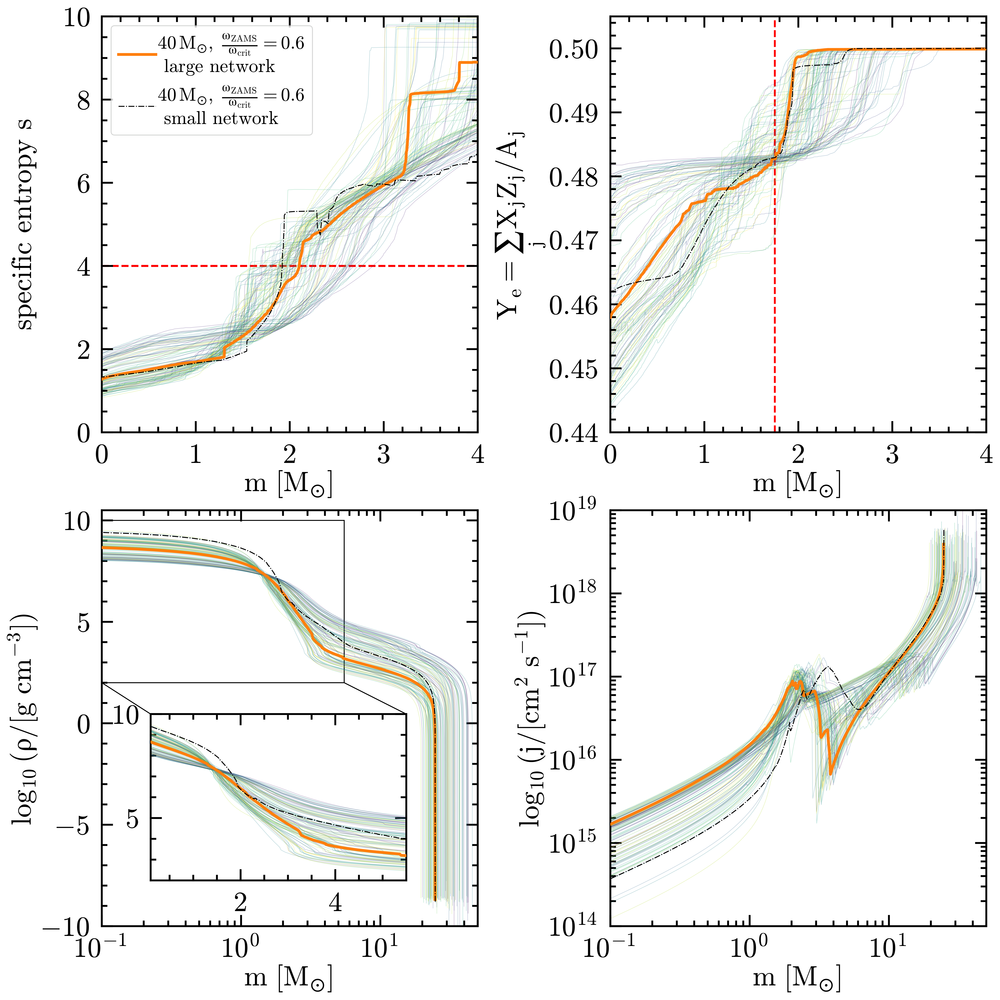<br />
图注：\(\emph{Top left}\): Inner specific entropy profiles. The red dashed horizontal line marks the $s=4\,k_{B}N_{A}$ location often used in ``explodability'' criteria \(\cite\)[e.g.,][]{ertl:16, ertl:20}. \(\emph{Top right:}\) Inner electron fraction $Y_{e}(m)$ profile as a function of mass. The red dashed vertical line marks $\mathcal{M}=1.75\,M_{\odot}$ used to calculate the compactness $\xi_{1.75}$. \(\emph{Bottom left:}\) Density profiles as a function of Lagrangian mass coordinate $m$ on a logarithmic scale. The inset zooms on the inner region and uses a linear scale. \(\emph{Bottom right:}\) Specific angular momentum profiles as a function of $m$. In all panels, dark (light) colors correspond to lower (higher) initial rotation rates. the orange thick line marks a representative $40M_{\odot}$, $\omega_{\rm ZAMS}=0.6\,\omega_{\rm crit}$ used in \(\cite{gottlieb:24},\) and the thin black dot-dashed line shows an otherwise identical model computed with only 22-isotopes from \(\cite{renzo:24}.\)<br />
对应解读：对应“建议重点查看的图表”第4、5项，以及“关键图表逐图导读”中图4和图5关于坍缩前密度、熵、Y_e剖面与比角动量j(m)的解读。<br />
入选理由：这是最核心的物理诊断图，一张图同时给出熵、电子丰度、密度和比角动量随质量坐标的剖面，并标出s=4位置和用于紧致度计算的1.75太阳质量位置。它直接支撑日报中关于壳层界面、去轻子化、核心结构、爆炸敏感性以及盘形成潜力的讨论，比单独的演化轨迹或网格覆盖图更能说明这些前身星能否作为坍缩星或长伽马暴候选。<br />
来源与置信度：\(arxiv_source\)；high；\(arxiv_source\) / \(CHE_GRB_progenitors.tex\):figure[3]</p>
<p><strong>Fig05</strong><br />
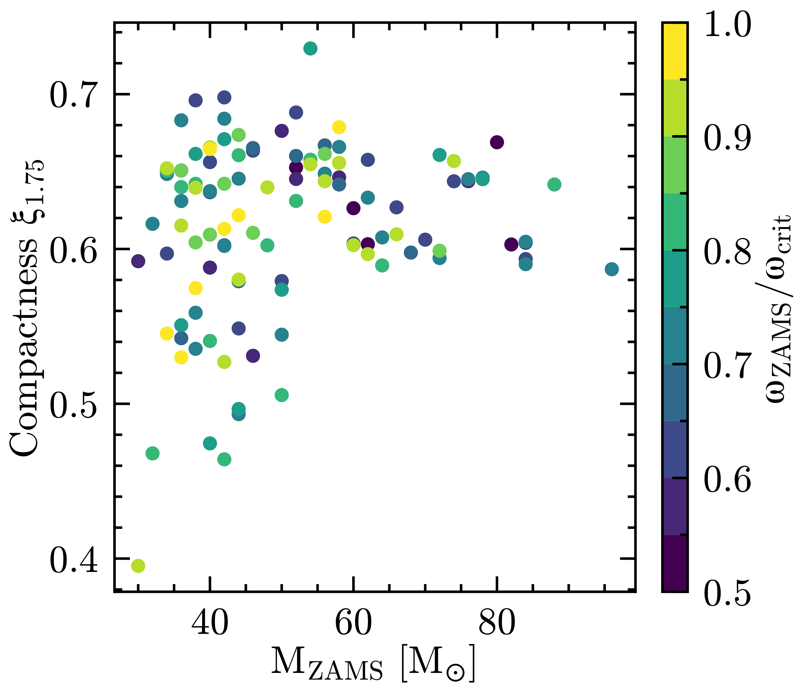<br />
图注：Compactness as a function of initial mass and rotation rate for single CHE models. Higher values of compactness $\xi_{\mathcal{M}}$ favor BH formation, but this does not imply without outflows and/or electromagnetic transients \(\citep\)[e.g.,][]{burrows:25, chan:26}.<br />
对应解读：对应“建议重点查看的图表”第6项，以及“关键图表逐图导读”中图6关于紧致度、黑洞形成倾向和初始质量—初始转速参数空间的解读。<br />
入选理由：该图把紧致度映射到初始质量和自转率平面，是判断哪些快速自转化学均匀模型更可能形成黑洞的重要诊断。它与Fig03中的剖面信息互补，可帮助读者理解高角动量与高紧致度是否在同一区域出现，是连接前身星结构与中心引擎结果的关键图。<br />
来源与置信度：\(arxiv_source\)；high；\(arxiv_source\) / \(CHE_GRB_progenitors.tex\):figure[5]</p>
<p><strong>Fig01</strong><br />
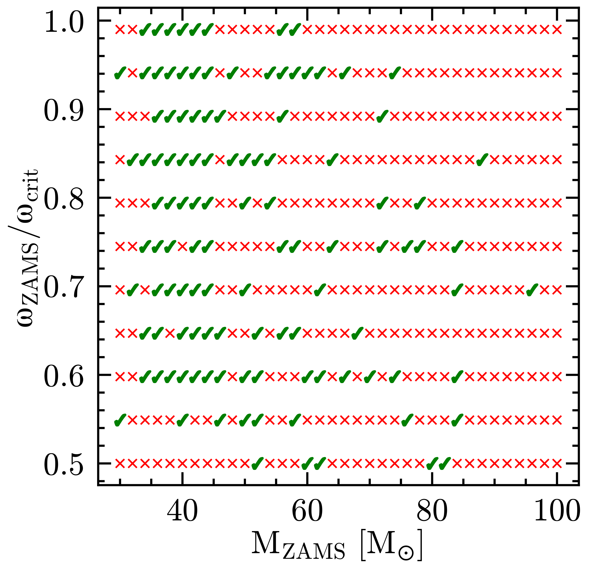<br />
图注：Overview of the grid success rate. Green checkmarks correspond to successful models. Red crosses correspond to models that either do not reach infall velocities of $-300\,\mathrm{km\ s^{-1}}$ or they exhibit large luminosity and effective temperature excursions that are treated unphysically in our setup and can impact the core-structure.<br />
对应解读：对应“建议重点查看的图表”第1项，以及“关键图表逐图导读”中图1关于初始参数空间覆盖、成功模型和失败模型分布的解读。<br />
入选理由：该图直接展示113个模型在初始质量和初始自转率空间中的成功率与失败位置，能验证日报所说的网格覆盖范围和边界区域风险。对于理解哪些模型可靠达到坍缩、哪些模型因数值或物理异常被排除，它比后续单一剖面图更适合作为样本选择依据。<br />
来源与置信度：\(arxiv_source\)；high；\(arxiv_source\) / \(CHE_GRB_progenitors.tex\):figure[1]</p>
<p><strong>Fig02</strong><br />
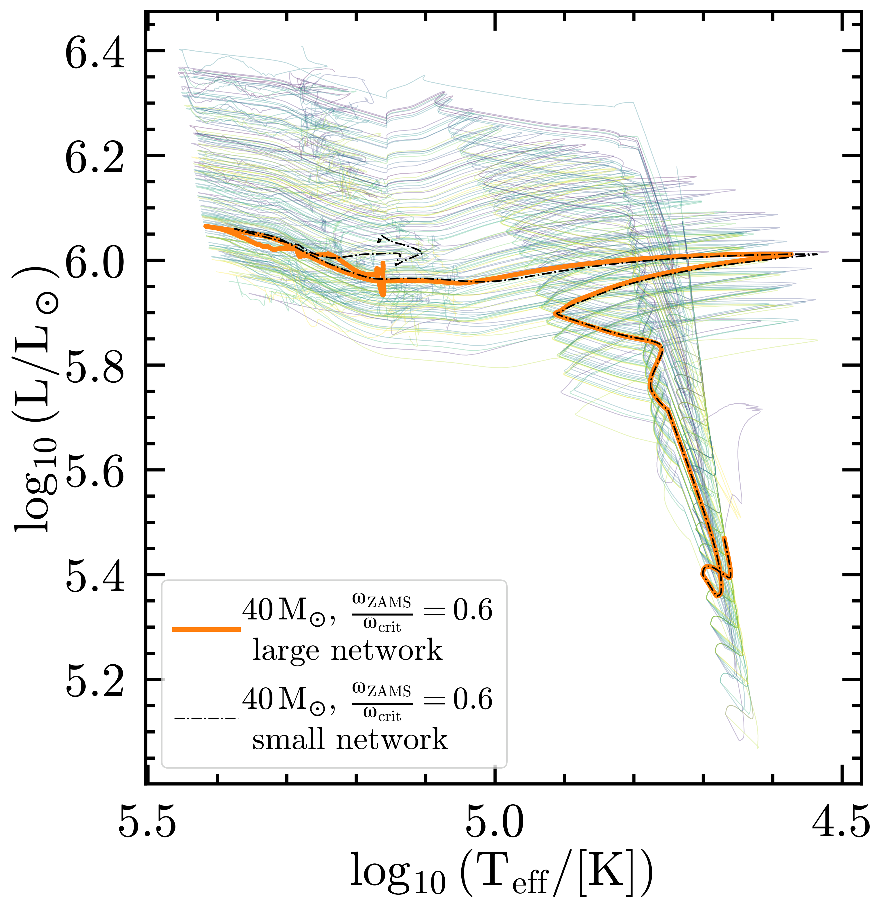<br />
图注：Herzsprung-Russel diagram of rotationally-induced chemically-homogeneous evolving single star models. Dark (light) colors correspond to lower (higher) initial rotation rates. The orange thick line marks a representative $40M_{\odot}$, $\omega_{\rm ZAMS}=0.6\,\omega_{\rm crit}$ used in \(\cite{gottlieb:24},\) and the thin black dot-dashed line shows an otherwise identical model computed with only 22-isotopes from \(\cite{renzo:24}.\)<br />
对应解读：对应“建议重点查看的图表”第2项，以及“关键图表逐图导读”中图2关于HR图、化学均匀演化和蓝端高温演化轨迹的解读。<br />
入选理由：该图展示模型在HR图上的演化轨迹，并用颜色区分初始转速，还包含与既有40太阳质量模型和22同位素网络模型的对比。它直接检验这些模型是否符合旋转诱导化学均匀演化预期，是理解该网格为何能产生紧凑、剥离包层、快速自转前身星的基础图。<br />
来源与置信度：\(arxiv_source\)；high；\(arxiv_source\) / \(CHE_GRB_progenitors.tex\):figure[2]</p>
<p><strong>Fig04</strong><br />
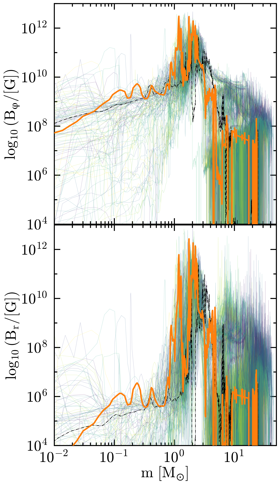<br />
图注：Azimuthal (top) and radial (bottom, local) component of the magnetic field generated by the Tayler-Spruit dynamo as a function of Lagrangian mass coordinate. Dark (light) colors correspond to lower (higher) initial rotation rates. The orange thick line shows the $40M_{\odot}$, $\omega_{\rm ZAMS}=0.6\,\omega_{\rm crit}$ model from \(\cite{gottlieb:24}\) and the thin black dot-dashed line shows an otherwise identical model computed with only 22-isotopes from \(\cite{renzo:24}.\)<br />
对应解读：对应“模型拟合”和“局限和下一步”中关于内部磁角动量输运、Tayler-Spruit dynamo以及磁场相关系统误差的讨论。<br />
入选理由：虽然日报的重点图表没有单独列出磁场剖面，但该图给出Tayler-Spruit dynamo产生的方位向和径向磁场随质量坐标的分布，能支撑关于磁耦合如何影响角动量保留的系统误差讨论。它对解释Fig03中的j(m)结果有辅助价值。<br />
来源与置信度：\(arxiv_source\)；high；\(arxiv_source\) / \(CHE_GRB_progenitors.tex\):figure[4]</p>
<p><strong>Fig06</strong><br />
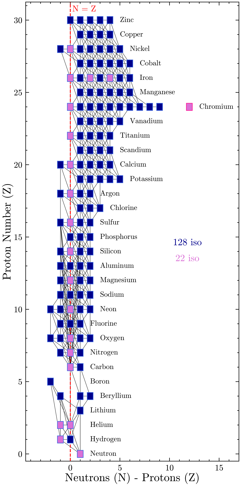<br />
图注：Isotope list and reaction links for the 128-isotope network used in this study and an example of 22-isotope small network.<br />
对应解读：对应“建议重点查看的图表”第7项，以及正文中关于128同位素核反应网络、弱反应和数值稳健性的说明。<br />
入选理由：该图展示本文采用的128同位素网络及与22同位素小网络的对照，可支撑日报中强调的核网络改进和硅燃烧后去轻子化处理。它的科学诊断性弱于剖面图和紧致度图，但对于说明模型输入物理和数值可信度仍有嵌入价值。<br />
来源与置信度：\(arxiv_source\)；high；\(arxiv_source\) / \(CHE_GRB_progenitors.tex\):figure[6]</p>
<h4 id="_101">强相关工作</h4>
<p>这篇工作与几个方向直接相连。第一是长伽马暴坍缩星模型，从 Woosley 提出的黑洞加吸积盘中心引擎，到后续喷流穿越 Wolf-Rayet 星和宽线 \({\rm Ic}\) 型超新星的数值模拟，核心问题一直是前身星是否能同时失去氢包层并保留核心角动量。检索关键词可用 “collapsar model long gamma-ray burst progenitor angular momentum”、“chemically homogeneous evolution GRB progenitor” 和 “broad-lined Type Ic supernova engine”。</p>
<p>第二是化学均匀演化和低金属丰度快速自转恒星的恒星演化工作。Yoon、Langer、Woosley 等人的早期模型展示了快速自转单星作为长伽马暴前身星的可能性，但输入物理、核网络和数值算法不断更新。本文的价值在于提供较大的、公开取向的网格，并把模型演化到坍缩开始。检索关键词可用 “Yoon Langer chemically homogeneous evolution gamma-ray bursts”、“low metallicity rapidly rotating massive stars MESA”。</p>
<p>第三是相反或有张力的观点：许多研究认为强磁角动量输运会让单星核心自转太慢，难以产生坍缩星，二元相互作用或恒星并合可能更自然地提供剥离包层和角动量。另一个张力来自观测：不是所有宽线 \({\rm Ic}\) 型超新星都有长伽马暴，也不是所有长伽马暴环境都能简单归结为极低金属丰度。因此使用本文网格时，应同时比较二元前身星模型、磁制动模型和观测宿主金属丰度样本。</p>
<p><strong>同一事件 / 同类源线索</strong>：</p>
<ul>
<li><a href="https://arxiv.org/abs/2606.21824">https://arxiv.org/abs/2606.21824</a></li>
<li><a href="https://arxiv.org/pdf/2606.21824">https://arxiv.org/pdf/2606.21824</a></li>
</ul>
<p><strong>相似工作</strong>：</p>
<ul>
<li><a href="https://ui.adsabs.harvard.edu/abs/2006A%26A...460..199Y/abstract">https://ui.adsabs.harvard.edu/abs/2006A%26A...460..199Y/abstract</a></li>
<li><a href="https://ui.adsabs.harvard.edu/abs/2006ApJ...637..914W/abstract">https://ui.adsabs.harvard.edu/abs/2006ApJ...637..914W/abstract</a></li>
<li><a href="https://ui.adsabs.harvard.edu/abs/2012ApJ...751...91B/abstract">https://ui.adsabs.harvard.edu/abs/2012ApJ...751...91B/abstract</a></li>
</ul>
<p><strong>基础理论 / 方法工作</strong>：</p>
<ul>
<li><a href="https://ui.adsabs.harvard.edu/abs/1993ApJ...405..273W/abstract">https://ui.adsabs.harvard.edu/abs/1993ApJ...405..273W/abstract</a></li>
<li><a href="https://ui.adsabs.harvard.edu/abs/2011ApJS..192....3P/abstract">https://ui.adsabs.harvard.edu/abs/2011ApJS..192....3P/abstract</a></li>
<li><a href="https://arxiv.org/abs/1009.1622">https://arxiv.org/abs/1009.1622</a></li>
</ul>
<p><strong>相反观点 / 张力线索</strong>：</p>
<ul>
<li><a href="https://ui.adsabs.harvard.edu/abs/2005A%26A...443..643H/abstract">https://ui.adsabs.harvard.edu/abs/2005A%26A...443..643H/abstract</a></li>
<li><a href="https://ui.adsabs.harvard.edu/abs/2008ApJ...683L..45C/abstract">https://ui.adsabs.harvard.edu/abs/2008ApJ...683L..45C/abstract</a></li>
</ul>
</details>
<h3 id="10-subgrid-modelling-for-relativistic-magnetohydrodynamics-with-machine-learning">10. Subgrid Modelling for Relativistic Magnetohydrodynamics with Machine Learning</h3>
<ul>
<li>来源：arXiv / astro-ph.HE</li>
<li>链接：https://arxiv.org/abs/2606.21659v1</li>
<li>作者：William Cook, Sebastiano Bernuzzi</li>
<li>评分：novelty 8/10，importance 8/10，relevance 8/10，final 9.00/10</li>
<li>推荐理由：首个面向相对论MHD的机器学习亚网格模型，在线KHI测试显示低分辨率可复现磁场放大并显著加速；对BNS并合、吸积盘和多信使数值模拟有方法突破价值。</li>
</ul>
<p><strong>中文题目</strong>：用机器学习为相对论磁流体模拟建立亚网格模型</p>
<p><strong>做了什么</strong>：这篇文章做的是一件很实际的事：在特殊相对论磁流体力学模拟中，用神经网络学习未解析小尺度湍流对大尺度流场的反馈，并把它作为大涡模拟的亚网格闭合项在线放回数值演化。作者以三维 Kelvin-Helmholtz 不稳定性为测试场景，比较低分辨率、四倍分辨率高精度模拟以及带机器学习亚网格模型的低分辨率模拟。核心结果是：机器学习模型在低分辨率下能重现高分辨率模拟中的磁场放大行为，同时相对高分辨率计算获得约 \(44\) 倍加速。这对双中子星并合、吸积盘和磁化中子星内部的角动量输运问题很重要，因为这些系统中的小尺度磁湍流通常无法被全球相对论模拟直接解析。</p>
<p><strong>为什么重要</strong>：双中子星并合中的 Kelvin-Helmholtz 不稳定性和磁湍流会影响磁场放大、喷流形成、后并合盘演化和多信使观测量，但直接解析这些尺度需要远超当前三维广义相对论磁流体模拟的分辨率。本文的重要性在于，它把机器学习亚网格闭合从非相对论或简化流体问题推进到特殊相对论磁流体，并通过在线演化而不只是离线误差评估来检验模型是否真的能稳定地改进模拟。</p>
<p><strong>理论 / 观测 / 仪器方法价值</strong>：对理论和方法的价值主要在两个层面。第一，它为相对论磁流体大涡模拟提供了一个数据驱动闭合框架，可用于替代或补充手工设定的有效黏滞、有效电阻或梯度模型。第二，它展示了如何用高分辨率直接数值模拟训练低分辨率模型，并用 a priori 与 a posteriori 两类测试区分“局部预测闭合项准确”和“长期演化可用”这两件事。对未来广义相对论双中子星并合模拟来说，这是一条降低计算成本、同时保留小尺度磁场放大效应的路线。</p>
<p><strong>为什么应该关注</strong>：如果你关心双中子星并合后的喷流条件、千新星抛射物、短伽马暴中心引擎或吸积盘角动量输运，这篇文章值得关注，因为这些结论都受未解析磁湍流影响。本文不是直接给出某个天体源的新观测解释，而是试图解决一个底层瓶颈：我们如何在可承受的网格上模拟本应由更小尺度决定的磁场增长和湍流反馈。它也提醒读者，机器学习在天体物理数值模拟中的关键不只是拟合训练数据，而是能否在守恒律、稳定性和外推条件下在线运行。</p>
<details class="paper-detail">
<summary>展开详细解读：文章讲解、背景、理论、重点章节、图表与相关工作</summary>
<h4 id="_102">文章详细讲解</h4>
<p>科学问题：相对论磁流体系统中，小尺度不稳定性可以迅速把剪切能量转化为湍流和磁能。双中子星并合接触界面上的 Kelvin-Helmholtz 不稳定性就是典型例子；涡旋卷吸会拉伸磁力线，导致磁场在毫秒量级内放大。问题在于，物理上最重要的湍流尺度往往远小于全球模拟网格。即使在特殊相对论磁流体中，直接数值模拟也已经很昂贵；在完整广义相对论双中子星并合中，既要解析星体尺度、轨道尺度、冲击、磁场放大和喷流区，直接解析湍流惯性区几乎不可行。</p>
<p>作者怎么做：论文把这个问题表述为大涡模拟闭合问题。低分辨率模拟只演化滤波后的守恒量和原始量，而未解析尺度对已解析尺度的反馈表现为额外的亚网格通量或源项。作者使用高分辨率特殊相对论磁流体模拟生成训练数据，让神经网络学习从低分辨率可见变量到亚网格闭合项的映射。然后他们不只做离线的 a priori 测试，即比较神经网络预测闭合项与从高分辨率数据滤波得到的“真”闭合项，还把模型嵌入数值代码做 a posteriori 在线演化，观察低分辨率解是否真的更接近高分辨率基准。</p>
<p>关键结果：在三维 Kelvin-Helmholtz 不稳定性测试中，普通低分辨率模拟低估了磁场放大，因为它无法解析足够多的剪切卷吸和小尺度拉伸。加入机器学习亚网格模型后，低分辨率模拟的磁能增长曲线和磁场放大幅度更接近四倍分辨率模拟。论文摘要中特别强调，带模型的低分辨率计算捕捉到了四倍分辨率模拟中的磁场放大，并实现约 \(44\) 倍速度提升。这一结果说明，机器学习闭合不只是静态插值，而可能在实际相对论磁流体演化中承担有效的未解析湍流反馈。</p>
<p>局限和下一步：本文仍是特殊相对论、理想化 Kelvin-Helmholtz 测试，而不是完整双中子星并合。训练数据的参数范围、磁场构型、方程状态、初始扰动、网格尺度和数值格式都会影响模型可迁移性。机器学习闭合还必须面对守恒性、因果性、正定性、激波附近稳定性和长期漂移等问题。下一步最关键的是把该方法推广到更宽参数空间、不同不稳定性和广义相对论磁流体代码中，并检验它对可观测量的影响，例如并合后磁能、盘风、喷流准直和电磁对应体模型。</p>
<h4 id="_103">关键结果是怎么做出来的</h4>
<p>本文最重要的证据链围绕三维 Kelvin-Helmholtz 不稳定性在线模拟展开。样本选择不是天文源样本，而是高分辨率特殊相对论磁流体数值实验产生的时空数据。作者把高分辨率场量滤波或降采样到低分辨率网格，由此构造低分辨率可见变量和高分辨率隐含的亚网格残差。训练集来自这些模拟快照中的大量网格点或局部 stencil，目标是让神经网络预测未解析尺度给守恒方程通量带来的闭合修正。<br />
\(\na\) priori 测试检验的是局部闭合项预测。典型做法是把高分辨率解滤波，计算“真实”亚网格张量或通量残差，再比较神经网络输出与该残差在不同时间、空间区域和物理状态下的相关性、均方误差或分量分布。这个阶段能判断模型是否学到了亚网格应力与磁场、速度梯度、密度和压力等输入量之间的关系，但它不能保证在线稳定，因为微小偏差会在非线性守恒律中累积。<br />
\(\na\) posteriori 测试是本文说服力更强的部分。作者把训练好的神经网络嵌入低分辨率演化，在每个时间步或重构步骤中提供亚网格修正，然后与无模型低分辨率模拟和四倍分辨率基准模拟比较。关键诊断量应包括总磁能随时间演化、最大或均方根磁场、动能到磁能转换效率、湍流结构的空间分布以及守恒量误差。摘要给出的核心数字是：低分辨率加模型可再现四倍分辨率模拟的磁场放大，同时速度提升约 \(44\) 倍。</p>
<p>显著性在这类数值方法论文中通常不是天文事件的 \(p\) 值，而是模型比较和误差缩减。读者应关注论文是否给出多次初始扰动、不同时间切分、不同分辨率或不同随机种子的稳健性检验；如果只有单一训练—测试切分，结论更像可行性证明。还要看作者是否把机器学习模型与传统梯度模型、Smagorinsky 型模型或无闭合低分辨率模型比较，因为“接近高分辨率”本身必须相对基线来评估。</p>
<p>系统误差主要来自三方面。第一，高分辨率模拟本身并不等于真实物理，只是更接近直接数值解；其数值耗散和网格各向异性会进入训练标签。第二，滤波尺度和低分辨率网格定义决定了亚网格项的形式，换一个数值格式可能需要重新校准。第三，神经网络可能学到训练问题中特定剪切层的统计规律，而不是普适的相对论磁湍流闭合。论文的在线稳定性结果因此很重要，但还不能直接等同于在双中子星并合全局模拟中已经可靠。</p>
<details class="paper-subdetail">
<summary>展开背景、理论、公式、模型、章节和图表导读</summary>
<h4 id="_104">背景知识</h4>
<p>研究对象是相对论磁流体中的未解析湍流。相对论磁流体把等离子体近似为带磁场的连续介质，并在接近光速的流动、强磁压或高能天体环境中演化质量、动量、能量和磁场。双中子星并合、短伽马暴中心引擎、黑洞吸积盘和磁化中子星内部都属于这一类问题。它们的宏观尺度可以达到公里到数百公里，但决定磁场放大的湍流尺度可能小很多。</p>
<p>历史问题是 Kelvin-Helmholtz 不稳定性和磁旋转不稳定性等机制是否能在并合后足够快地把磁场放大到动力学重要水平。早期模拟受限于分辨率，常常低估小尺度剪切层的卷吸。随着高分辨率广义相对论磁流体模拟发展，人们发现磁场放大对网格间距极其敏感；不同团队给出的磁能增长、饱和值和喷流形成条件并不总是一致，这背后既有物理差异，也有数值耗散差异。</p>
<p>观测背景来自多信使天文学。双中子星并合的引力波信号给出质量、潮汐形变和并合时间，电磁对应体则依赖抛射物、盘风、放射性加热和可能的喷流。磁场在这些过程中影响角动量输运、能量抽取和物质抛射。如果模拟不能正确描述磁湍流，就会影响对短伽马暴、千新星和余辉的理论解释。</p>
<p>为什么现在值得重新看：一方面，算力和相对论磁流体代码已经可以生成足够高质量的局部或中等规模训练数据；另一方面，机器学习闭合模型在湍流、气候和工程流体中已经显示潜力。天体物理数值模拟逐渐进入一个阶段：继续单纯提高分辨率收益昂贵，而用高分辨率局部实验训练低分辨率全局模型可能更有效。</p>
<p>常见误区有几个。第一，亚网格模型不是“凭空增加磁场”，它应当表示被滤波掉的小尺度对大尺度守恒方程的反馈。第二，机器学习模型不是自动比物理模型更可靠；如果它违反守恒、正定性或因果性，在线演化可能很快崩溃。第三，高分辨率基准不是绝对真值，它仍包含数值耗散和有限域效应。第四，局部 Kelvin-Helmholtz 成功不等于完整并合成功，后者还有曲率、引力、核物质状态方程、中微子输运和强非平稳几何。</p>
<h4 id="_105">基础理论 / 方法脉络</h4>
<p>基础物理图像是剪切流中的涡旋卷吸。两个速度不同的流体层接触时，界面扰动会增长并形成涡旋。在磁化等离子体中，涡旋会拉伸和折叠磁力线，使磁能从初始种子场增长。相对论情形下，速度接近光速，惯性、压力、磁压和洛伦兹因子都进入守恒量，普通牛顿磁流体的直觉需要修正。</p>
<p>大涡模拟的核心思想是只直接演化大于网格尺度的结构，而把小于滤波尺度的结构对大尺度的平均影响写成闭合项。对于非线性方程，滤波和乘法不对易：先计算通量再滤波，与先滤波变量再计算通量不同。这个差值就是亚网格应力或亚网格通量。相对论磁流体中，非线性更强，因为守恒量与原始变量之间通过洛伦兹因子和磁场耦合。</p>
<p>本文的模型假设可以概括为：存在一个从局部低分辨率状态到亚网格修正的可学习映射。输入可能包括密度、压力、速度、磁场以及它们的空间变化或局部邻域信息；输出是守恒方程通量中需要补偿的残差。神经网络的角色不是替代相对论磁流体方程，而是为滤波后方程提供闭合。</p>
<p>观测方法在这里对应“数值诊断”。论文比较不同分辨率和不同闭合模型的磁能增长、场强分布、湍流结构和误差。一个重要区分是 a priori 与 a posteriori：前者看神经网络是否能预测给定快照的闭合项，后者看模型嵌入时间演化后是否仍稳定、是否改善长期物理量。</p>
<p>常见退化和系统误差包括分辨率—模型强度退化、数值耗散—物理湍流退化、训练分布—测试分布偏移，以及初始扰动选择对非线性湍流相位的影响。即使两个模拟的总磁能曲线相近，其空间结构也可能不同；反过来，由于湍流混沌性，逐点相位不一致并不必然说明模型失败。因此应同时看积分量、谱、概率分布和统计相关量。</p>
<h4 id="_106">公式与推导</h4>
<p>第一步从守恒律出发。特殊相对论磁流体可写成一组守恒方程：</p>
<div class="math-display">\[\partial_t {\f U}({\f P})+\partial_i {\f F}^i({\f P})={\f S}({\f P}) .\]</div>
<p>这里 \({\f P}\) 是原始变量，例如静质量密度 (\<br />
ho)、压强 \(p\)、三速度 \(v^i\) 和磁场 \(B^i\)；\({\f U}\) 是守恒变量；\({\f F}^i\) 是通量；\({\f S}\) 是源项。在特殊相对论平直时空测试中，许多源项可为零或较简单。</p>
<p>第二步引入洛伦兹因子和磁场约束。相对论速度通过</p>
<div class="math-display">\[\nW=\rac{1}{\sqrt{1-v_i v^i}}\]</div>
<p>进入守恒量，其中采用 \(c=1\)，\(W\) 是洛伦兹因子。同时磁场必须满足</p>
<div class="math-display">\[\partial_i B^i=0 ,\]</div>
<p>这保证没有磁单极子。任何亚网格模型如果导致该约束严重破坏，都会污染磁压和动量演化。</p>
<p>第三步给出滤波操作。大涡模拟把任意场 \(q({\f x})\) 分解为滤波场 \(\ar q({\f x})\) 和未解析涨落，滤波可写为</p>
<div class="math-display">\[\ar q({\f x})=\int G_\Delta({\f x}-{\bf x}') q({\f x}')\\,d^3x' ,\]</div>
<p>其中 \(G_\Delta\) 是宽度为 \(\Delta\) 的滤波核，\(\Delta\) 通常与网格尺度同阶。低分辨率模拟只知道 \(\ar q\)，不知道小尺度涨落。</p>
<p>第四步说明闭合项来源。对非线性通量滤波得到</p>
<div class="math-display">\[\partial_t \ar{\f U}+\partial_i {\f F}^i(\ar{\f P})=-\partial_i {\oldsymbol \	au}^i_{\
m SGS}+\ar{\f S} ,\]</div>
<p>其中亚网格通量残差定义为</p>
<div class="math-display">\[{\oldsymbol \	au}^i_{\
m SGS}= {\f F}^i(\ar{\f P})-\overline{{\f F}^i({\f P})} .\]</div>
<p>符号 \({\oldsymbol \	au}^i_{\}\)<br />
m SGS}) 表示 subgrid-scale 修正；它衡量“用滤波变量计算通量”与“先计算真实高分辨率通量再滤波”之间的差异。</p>
<p>第五步把机器学习闭合写成映射。本文的神经网络可抽象为</p>
<div class="math-display">\[\widehat{\oldsymbol \	au}^{\,i}_{\
m SGS}=\mathcal{N}_\	heta\left({\f X}_\Delta\
ight) ,\]</div>
<p>其中 \(\mathcal{N}_\	heta\) 是参数为 \(\	heta\) 的神经网络，\({\f X}_\Delta\) 是低分辨率可见输入，例如 (\ar\<br />
ho)、\(\ar p\)、\(\ar v^i\)、\(\ar B^i\) 及其局部差分。训练目标是让 (\widehat{\oldsymbol \ au}^{\,i}<em>{\<br />
m SGS}) 接近由高分辨率数据构造的 ({\oldsymbol \  au}^i</em>{\<br />
m SGS})。</p>
<p>第六步给出训练损失。常见的监督学习目标可写为</p>
<div class="math-display">\[\mathcal{L}(\	heta)=\rac{1}{N}\sum_{n=1}^{N}\left\\|\mathcal{N}_\	heta({\f X}_{\Delta,n})-{\boldsymbol \	au}_{{\
m SGS},n}\
ight\\|^2_{\f C^{-1}} ,\]</div>
<p>其中 \(N\) 是训练样本数，\({\f C}\) 可表示各通量分量的归一化协方差或权重矩阵。若 \({\f C}\) 取单位矩阵，这就是均方误差；若考虑分量尺度差异，则权重会影响模型更重视哪些物理通量。</p>
<p>第七步连接到磁场放大诊断。总磁能可用</p>
<div class="math-display">\[\(\nE_B(t)=\int\) \rac{B^2(t,{\bf x})}{2}\\,\(d^3x\)\]</div>
<p>作为主要积分量，其中单位制吸收了 \(4\pi\) 或采用 Heaviside-Lorentz 约定时的常数。比较 \(E_B(t)\) 在低分辨率、带闭合低分辨率和高分辨率模拟中的曲线，可以直接检验模型是否补偿了未解析的磁力线拉伸。</p>
<p>第八步定义在线误差或模型比较量。若 \(Q(t)\) 是磁能、动能或谱积分等诊断量，可用</p>
<div class="math-display">\[\epsilon_Q=\left[\rac{\int_{t_0}^{t_1}\left(Q_{\
m model}(t)-Q_{\
m HR}(t)\
ight)^2 dt}{\int_{t_0}^{t_1} Q_{\
m HR}^2(t) dt}\
ight]^{1/2}\]</div>
<p>衡量相对高分辨率基准的时间积分误差。这里 \(Q_{\}\)<br />
m HR}) 是高分辨率模拟结果，(Q_{\<br />
m model}) 是低分辨率加亚网格模型结果。</p>
<p>第九步说明计算收益。若高分辨率网格每个方向比低分辨率多 \(r\) 倍，显式三维演化的理想成本大致按</p>
<div class="math-display">\[\nC_{\
m HR}\sim r^4 C_{\
m LR}\]</div>
<p>缩放，其中 \(r^3\) 来自网格点数，额外 \(r\) 来自 Courant 时间步限制。实际加速比还受神经网络推理开销、并行效率和输出频率影响。本文报告约 \(44\) 倍速度提升，说明模型开销没有抵消降分辨率带来的收益。</p>
<h4 id="_107">模型拟合 / 应用方法</h4>
<p>本文的“拟合”不是拟合天文光变曲线，而是拟合亚网格闭合函数。被拟合量是从高分辨率特殊相对论磁流体数据构造出的亚网格通量或残差；输入量是低分辨率可获得的局部流体和磁场状态。神经网络参数 \(\	heta\) 通过最小化预测闭合项与标签闭合项之间的损失来训练。</p>
<p>似然角度看，若假定闭合项标签的误差服从高斯分布，均方误差训练等价于最大化高斯似然。实际中误差并不一定高斯，尤其在剪切层、激波、强磁化区和湍流间歇结构附近，残差分布可能有长尾。因此读者应关注作者是否做了分量归一化、异常值处理、训练—验证分割和不同时间快照的外推检验。</p>
<p>残差诊断应分为局部残差和演化残差。局部残差包括神经网络输出与真实亚网格通量的散点图、相关系数、分量误差分布和空间误差图。演化残差包括总磁能曲线偏差、磁场空间结构偏差、谱斜率差异和守恒量漂移。对于湍流问题，逐点误差不可能长期保持相位一致，因此更有意义的是统计量和积分量是否恢复高分辨率趋势。</p>
<p>主要退化关系包括滤波尺度 \(\Delta\) 与闭合强度的退化、网格数值耗散与物理亚网格耗散的退化、磁场初始强度与磁能增长率的退化，以及神经网络容量与过拟合之间的退化。一个复杂网络可能在训练快照上很好，却在稍晚时间或不同初始扰动下产生非物理能量注入；一个过于简单的模型则可能退化成有效扩散，抹平真正的磁场放大。</p>
<p>模型失败的场景也很明确。如果流动进入训练集中没有覆盖的高磁化、低密度、强激波或高度相对论区域，神经网络可能给出错误闭合项。若输出没有内置守恒性、正定性和磁场散度约束，长期演化可能积累非物理误差。实际应用到双中子星并合时，还需与曲率源项、有限温度核物质状态方程、中微子冷却和自引力动力学耦合，这些都会改变训练分布。</p>
<h4 id="_108">重点章节 / 结果段落怎么读</h4>
<p>第一，数据和数值设置部分应重点看三维 Kelvin-Helmholtz 测试如何定义。读者需要确认初始密度、速度剪切、磁场方向和强度、扰动形式、边界条件、方程状态以及分辨率层级。这里决定了训练数据代表的是哪一类相对论磁湍流，而不是所有双中子星并合环境。</p>
<p>第二，亚网格形式和滤波定义部分是方法核心。应看作者如何从高分辨率模拟构造低分辨率变量和亚网格标签，滤波核或降采样方式是什么，闭合项作用在守恒方程的哪个位置。这个选择直接决定神经网络学到的是物理闭合、数值误差补偿，还是二者混合。</p>
<p>第三，神经网络结构和训练部分应关注输入特征、输出分量、损失函数、归一化、训练—验证切分和正则化。对专业读者来说，网络是否满足坐标旋转、守恒性、尺度一致性和正负定约束，比层数本身更关键。</p>
<p>第四，a priori 结果部分应看预测闭合项与高分辨率标签的局部一致性。这里的图通常能显示模型是否真的识别出剪切层和涡旋区域的强亚网格反馈，还是只在背景平滑区表现好。</p>
<p>第五，a posteriori 在线模拟部分是判断论文价值的重点。读者应比较无闭合低分辨率、机器学习闭合低分辨率和四倍分辨率高分辨率模拟的磁能增长、速度场、磁场结构和计算成本。论文摘要中的 \(44\) 倍加速和高分辨率磁场放大复现应在这一部分找到支撑。</p>
<p>第六，讨论和展望部分应读其限制条件。尤其要看作者如何评价向广义相对论、中子星并合和其他磁流体不稳定性迁移的难度，以及是否提出保持稳定性和物理约束的改进路线。</p>
<h4 id="_109">建议重点查看的图表</h4>
<ol>
<li>
<p>分辨率与模拟设置图：检查 Kelvin-Helmholtz 初始剪切层、磁场构型和网格层级。重点看测试是否足够接近双中子星接触界面的局部物理。</p>
</li>
<li>
<p>a priori 闭合项散点图或误差分布：看神经网络预测的亚网格通量与高分辨率滤波标签是否相关，是否存在系统性低估强残差区域。</p>
</li>
<li>
<p>闭合项空间分布图：看模型是否在剪切层、涡旋边界和强磁场拉伸区给出主要修正，而不是在平滑背景中产生噪声。</p>
</li>
<li>
<p>总磁能随时间演化图：这是最关键诊断。比较低分辨率无模型、低分辨率加机器学习模型和四倍分辨率模拟的 \(E_B(t)\)。</p>
</li>
<li>
<p>磁场或涡量切片图：检查空间形态是否合理。不要只看颜色很像，还要看涡旋尺度、间歇结构和强场区域位置。</p>
</li>
<li>
<p>能谱或尺度分布图：如果论文给出，应看带闭合模型是否恢复高分辨率惯性区或小尺度功率，而不是简单增加总能量。</p>
</li>
<li>
<p>计算成本表：检查 \(44\) 倍加速如何定义，是 wall-clock 时间、核心小时，还是单步开销；是否包含神经网络推理和输入输出成本。</p>
</li>
<li>
<p>稳健性检验图表：看不同随机种子、不同时间外推、不同分辨率或不同初始磁场下模型是否仍有改善。</p>
</li>
</ol>
<h4 id="_110">关键图表逐图导读</h4>
<p>图 1：通常应是问题设置或初始条件图。横轴和纵轴可能为空间坐标，颜色表示密度、速度分量或磁场强度。读图时要确认剪切层厚度相对于网格尺度是否足够小，以及高低分辨率之间是否只改变网格而不改变物理初值。陷阱是把理想化剪切层直接等同于完整并合界面；它只捕捉局部不稳定性。</p>
<p>图 2：若为 a priori 预测图，常见形式是横轴为高分辨率滤波得到的真实亚网格分量，纵轴为神经网络预测分量，或多个分量的误差直方图。理想情况是点云沿对角线分布，强闭合项区域不过度饱和。读图陷阱是相关性高不代表在线稳定，因为守恒方程会放大有偏残差。</p>
<p>图 3：若为空间切片图，坐标轴为空间位置，颜色表示亚网格修正、磁场强度或涡量。应看模型修正是否集中在 Kelvin-Helmholtz 涡旋和剪切层附近。若背景区域出现棋盘状或网格尺度噪声，可能暗示模型与数值格式耦合不良。</p>
<p>图 4：总磁能 \(E_B(t)\) 随时间变化应是核心结果图。横轴为时间，纵轴为磁能或归一化磁能，曲线分别代表高分辨率、低分辨率无闭合和低分辨率加机器学习闭合。主要结论应是机器学习曲线接近高分辨率曲线，特别是在指数增长或快速放大阶段。陷阱是只比较最终值；增长时刻、增长率和饱和阶段同样重要。</p>
<p>图 5：若给出磁场切片或三维结构，读者应比较强磁区域的体积分布和间歇性。颜色条范围必须一致，否则视觉相似性可能被夸大。高分辨率模拟中的小尺度结构不可能在低分辨率中逐点再现，因此应关注统计形态而非逐像素一致。</p>
<p>图 6：若给出计算成本或速度提升表，重点看基准定义。横轴或表列可能是分辨率、模型类型、运行时间和相对加速比。摘要中的 \(44\) 倍加速应在这里得到量化。陷阱是 wall-clock 加速依赖硬件、并行效率和神经网络部署方式，因此更通用的指标是核心小时和误差—成本曲线。</p>
</details>
<h4 id="_111">论文原图 / 可嵌入图片</h4>
<p><strong>Fig04</strong><br />
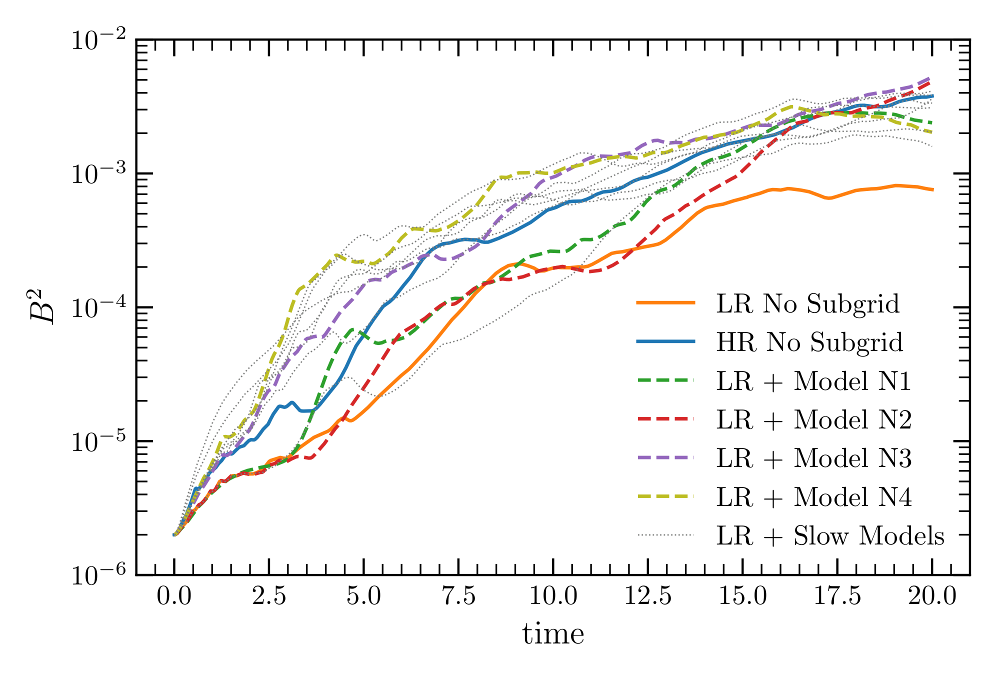<br />
图注：Amplification of magnetic field energy with subgrid models. Solid lines represent reference runs without subgrid models, dashed lines represent runs with subgrid models that are faster than run HR. In dotted grey we demonstrate a selection of other models which successfully reproduce the amplification of run HR, but are slower to evaluate.<br />
对应解读：建议重点查看的图表第4项；关键图表逐图导读图4；详细解读中的“关键结果”段落。<br />
入选理由：这是日报反复强调的核心诊断量：磁场能量放大随时间演化，并直接比较无亚网格模型的参考模拟与带机器学习亚网格模型的低成本模拟。它最能支撑“低分辨率加模型接近高分辨率磁场放大、且计算更快”的主结论。<br />
来源与置信度：\(arxiv_source\)；high；\(arxiv_source\) / paper20260619.tex:figure[4]</p>
<p><strong>Fig12</strong><br />
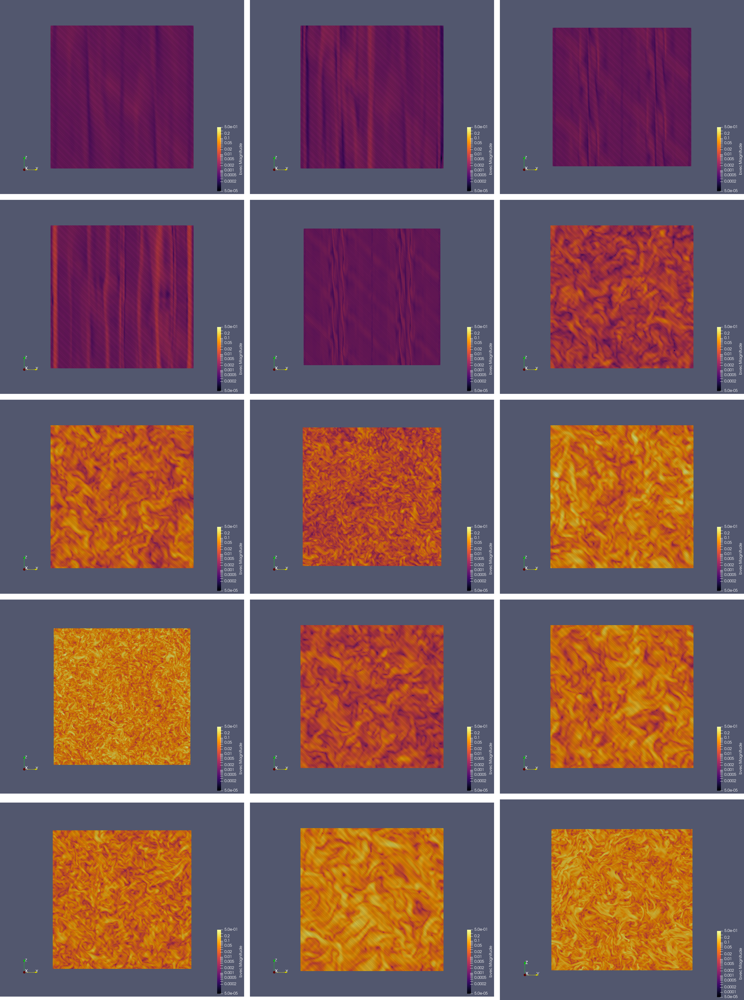<br />
图注：2D slices of 3D evolution of $|B|$ for special relativistic KHI evolution. The three rows demonstrate different timeslices $t = (0.25,10,20)$. The five columns show the models LR, \(\texttt{f2S1},\) SR, \(\texttt{f4S1},\) HR respectively.<br />
对应解读：建议重点查看的图表第5项；关键图表逐图导读图5；详细解读中关于3D Kelvin-Helmholtz 不稳定性和磁场放大形态的段落。<br />
入选理由：该图给出特殊相对论3D KHI中磁场强度 |B| 的二维切片，并同时展示 LR、带模型、SR、HR 等列以及多个时刻，最适合检查机器学习闭合是否恢复了合理的强磁区域、涡旋结构和空间间歇性。<br />
来源与置信度：\(arxiv_source\)；high；\(arxiv_source\) / paper20260619.tex:figure[12]</p>
<p><strong>Fig09</strong><br />
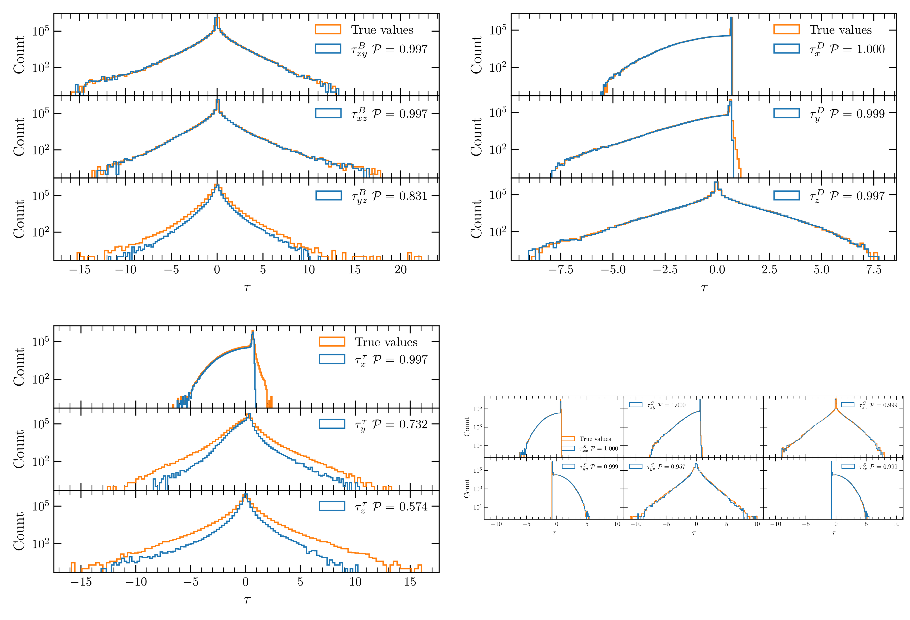<br />
图注：Histogram of the subgrid tensors in the testing dataset (orange) and the predicted values of those tensors by the NN model \(\texttt{f2S1}.\) On the x-axis we show the value of the normalised subgrid tensor. On the y-axis we show the unnormalised count of points in the bins. Left, middle and right upper panels show the subgrid tensors $\tau_B,\tau_D, \tau_\tau$ respectively, while the lower panel shows $\tau_S$. Subpanels show different components of the tensor, indicated in the legend. In the legend we display the Pearson correlation coefficient between the two datasets.<br />
对应解读：建议重点查看的图表第2项；模型拟合段落中的局部残差、相关系数和亚网格张量预测诊断。<br />
入选理由：该图是特殊相对论模型 \   exttt{f2S1} 的 a priori 测试直方图，比较测试集真实亚网格张量与神经网络预测分布，并给出 Pearson 相关系数。它直接支撑日报中关于闭合项拟合质量、分量归一化和局部残差诊断的讨论。<br />
来源与置信度：\(arxiv_source\)；high；\(arxiv_source\) / paper20260619.tex:figure[9]</p>
<p><strong>Fig10</strong><br />
<br />
图注：Histogram of the subgrid tensors in the testing dataset (orange) and the predicted values of those tensors by the NN model \(\texttt{f4S1}.\) On the x-axis we show the value of the normalised subgrid tensor. On the y-axis we show the unnormalised count of points in the bins. Left, middle and right upper panels show the subgrid tensors $\tau_B,\tau_D, \tau_\tau$ respectively, while the lower panel shows $\tau_S$. Subpanels show different components of the tensor, indicated in the legend. In the legend we display the Pearson correlation coefficient between the two datasets.<br />
对应解读：建议重点查看的图表第2项和第8项；模型拟合段落中关于不同滤波/分辨率设置下闭合模型泛化的讨论。<br />
入选理由：该图与 Fig09 对应，但针对 \ exttt{f4S1} 模型，能够展示另一种特殊相对论闭合设置下亚网格张量预测分布和相关性。与 Fig09 配合可比较不同模型或滤波尺度下的 a priori 表现，而不是只看单一网络。<br />
来源与置信度：\(arxiv_source\)；high；\(arxiv_source\) / paper20260619.tex:figure[10]</p>
<p><strong>Fig11</strong><br />
<br />
图注：2D slices of 3D evolution of $\rho$ for special relativistic KHI evolution. The three rows demonstrate different timeslices $t = (0.25,10,20)$. The five columns show the models LR, \(\texttt{f2S1},\) SR, \(\texttt{f4S1},\) HR respectively.<br />
对应解读：建议重点查看的图表第1项和第5项；关键图表逐图导读图1、图5中关于初始剪切层、涡旋形态和高低分辨率比较的部分。<br />
入选理由：该图展示特殊相对论3D KHI中密度 \<br />
ho 的二维切片，含早期、中期和晚期时刻以及 LR、带模型、SR、HR 对比。它有助于判断测试问题的剪切层演化和涡旋形态是否合理，并为 Fig12 的磁场结构提供流体背景。<br />
来源与置信度：\(arxiv_source\)；high；\(arxiv_source\) / paper20260619.tex:figure[11]</p>
<p><strong>Fig05</strong><br />
<br />
图注：Magnetic field spectrum at $t=20$ in 2D Newtonian KHI. Solid lines represent reference runs without subgrid models, dashed lines represent runs with subgrid models, detailed in Tab \(\ref{tab:newt2dhyp}.\)<br />
对应解读：建议重点查看的图表第6项；模型拟合段落中关于谱斜率、小尺度功率和统计量恢复的讨论。<br />
入选理由：该图给出磁场谱，能检验带闭合模型是否只是提高总磁能，还是在尺度分布上更接近高分辨率参考。虽然 caption 表明是2D Newtonian KHI而非最终3D SR测试，但它是候选图中唯一直接对应能谱/尺度分布诊断的图。<br />
来源与置信度：\(arxiv_source\)；high；\(arxiv_source\) / paper20260619.tex:figure[5]</p>
<h4 id="_112">强相关工作</h4>
<p>这篇工作应放在三条文献线索中理解。第一条是双中子星并合中的磁场放大和 Kelvin-Helmholtz 不稳定性模拟，检索关键词可用 “binary neutron star merger Kelvin-Helmholtz magnetic field amplification general relativistic magnetohydrodynamics”。这些工作关心在并合接触界面是否能把普通中子星磁场放大到足以影响喷流和盘风的强度。</p>
<p>第二条是相对论磁流体的大涡模拟和显式亚网格模型，检索关键词可用 “large eddy simulation relativistic magnetohydrodynamics subgrid model gradient model neutron star merger”。已有方法包括梯度模型、有效黏滞模型、有效电阻率和湍流平均场处理。本文的新意在于使用神经网络学习闭合，并做在线特殊相对论磁流体测试。</p>
<p>第三条是机器学习辅助偏微分方程闭合和湍流建模，检索关键词可用 “machine learning turbulence closure large eddy simulation neural network subgrid scale model”。相反观点或张力主要来自可解释性和泛化问题：机器学习闭合可能在训练问题上优于传统模型，但在不同磁化强度、激波结构、坐标系统和数值格式下失效。专业读者应把本文看作方法可行性证明，而不是已经完成的并合模拟物理闭合。</p>
<p><strong>同一事件 / 同类源线索</strong>：</p>
<ul>
<li><a href="https://arxiv.org/abs/2606.21659">https://arxiv.org/abs/2606.21659</a></li>
<li><a href="https://arxiv.org/pdf/2606.21659">https://arxiv.org/pdf/2606.21659</a></li>
</ul>
<p><strong>相似工作</strong>：</p>
<p>（未提供）</p>
<p><strong>基础理论 / 方法工作</strong>：</p>
<p>（未提供）</p>
<p><strong>相反观点 / 张力线索</strong>：</p>
<p>（未提供）</p>
</details>
<h3 id="11-xrism-time-resolved-fe-kastro_math_2484-spectroscopy-of-ngc-4395-time-variable-inner-disk-emission">11. XRISM Time-resolved Fe K$α$ Spectroscopy of NGC 4395: Time-variable Inner-disk Emission</h3>
<ul>
<li>来源：arXiv / astro-ph.HE</li>
<li>链接：https://arxiv.org/abs/2606.21180v1</li>
<li>作者：Taiki Kawamuro, Satoshi Yamada, Hirofumi Noda, Yoshiyuki Inoue, Shoji Ogawa, Misaki Mizumoto</li>
<li>评分：novelty 8/10，importance 8/10，relevance 8/10，final 9.00/10</li>
<li>推荐理由：First XRISM Resolve observation of low-mass AGN NGC 4395 with time-resolved Fe K spectroscopy; strong relevance to high-energy X-ray AGN accretion physics and XRISM capabilities.</li>
</ul>
<p><strong>中文题目</strong>：XRISM 对 NGC 4395 的时间分辨铁 K\(\alpha\) 光谱：可变的内盘发射</p>
<p><strong>做了什么</strong>：这篇论文用 XRISM/Resolve 的高能谱分辨率观测了低质量活动星系核 NGC 4395，并用同时段 NuSTAR 数据约束宽带连续谱。作者先在排除铁线能段的情况下拟合 \(2\text{--}30\,\mathrm{keV}\) 连续谱，再检查 \(5.5\text{--}7.5\,\mathrm{keV}\) 的残差，发现一个极窄的中性铁 K\(\alpha\) 核以及红侧宽翼。红翼可由相对论展宽的盘线解释，而且在约 \(400\,\mathrm{ks}\) 观测中随时间显著变化。作者把这种变化解释为铁线发射内半径变化，并讨论了约 \(210\,\mathrm{ks}\) 的可能倾角调制；若将其归因于倾斜内流的 Lense--Thirring 进动，则偏向较低的黑洞质量 \(M_{\rm BH}\approx9\times10^3\,M_\odot\) 和中等以上自旋 \(a\gtrsim0.6\)。</p>
<p><strong>为什么重要</strong>：NGC 4395 是少数可在近邻宇宙中研究 \(10^{4}\text{--}10^{5}\,M_\odot\) 量级活动黑洞吸积物理的对象。对这类低质量 AGN，内盘动力学时间尺度从多年压缩到天级甚至小时级，使铁线轮廓的时间变化可被一次长观测直接追踪。XRISM 的价值在于把窄线核和宽红翼分开，减少过去 CCD 光谱中连续谱、吸收和铁线混叠造成的歧义。</p>
<p><strong>理论 / 观测 / 仪器方法价值</strong>：理论上，论文把相对论铁线、内盘截断半径和可能的 Lense--Thirring 进动联系起来，为低质量黑洞的盘-晕几何和自旋约束提供了一个可检验案例。观测上，它展示了 XRISM/Resolve 在 AGN 铁 K 区域做时间分辨光谱的能力，尤其是同时利用 NuSTAR 控制硬 X 射线连续谱和反射背景。方法上，先盲化铁线能段建立基线连续谱，再用残差和分时段线型比较检验可变盘线，是研究弱宽线的较稳健流程。</p>
<p><strong>为什么应该关注</strong>：如果这个结果经更多观测确认，它说明低质量 AGN 的相对论内盘并非只能用时间平均谱间接推断，而可以在数天尺度上看见几何变化。这对连接恒星级黑洞 X 射线双星和超大质量 AGN 的吸积尺度律很关键；也会影响用宽铁线估计黑洞自旋的可靠性，因为线型可能在单次观测内随内盘结构和视角变化。</p>
<details class="paper-detail">
<summary>展开详细解读：文章讲解、背景、理论、重点章节、图表与相关工作</summary>
<h4 id="_113">文章详细讲解</h4>
<p>科学问题：论文要回答的是，低质量 AGN NGC 4395 的铁 K\(\alpha\) 区域是否存在来自黑洞内盘的相对论展宽发射，以及这种发射是否会在可观测时间尺度上变化。NGC 4395 的黑洞质量估计只有 \(M_{\rm BH}\sim10^{4}\text{--}10^{5}\,M_\odot\)，因此以引力半径 \(r_g=GM/c^2\) 计的盘内动力学、热和进动时间会比典型 Seyfert 星系短得多。若内盘铁线真的随时间变化，它不是普通窄线区或远端环面反射能解释的，而是直接指向几到几十个 \(r_g\) 范围内的吸积几何。</p>
<p>作者怎么做：他们使用 XRISM/Resolve 对 NGC 4395 的首个长观测，并加入同时 NuSTAR 数据来覆盖更高能段。关键策略是先排除 \(5.5\text{--}7.5\,\mathrm{keV}\) 铁线区域，只用 XRISM 的 \(2\text{--}12\,\mathrm{keV}\) 与 NuSTAR 的 \(3\text{--}30\,\mathrm{keV}\) 联合数据建立连续谱基线。这样做的好处是避免把铁线本身吸收到幂律、吸收或反射连续谱参数中。随后作者把基线模型外推回铁 K 区，检查 Resolve 高分辨率谱中的窄核和红翼残差，并分别用窄高斯和相对论盘线成分描述。</p>
<p>关键结果：时间平均谱中，中性铁 K\(\alpha\) 核非常窄，速度宽度约束到 \(\lesssim110\,\mathrm{km\,s^{-1}}\)，这说明它很可能来自远离黑洞的低速冷物质，而非内盘。与此同时，铁线红侧存在额外宽翼，加入相对论展宽铁线后可明显改善拟合。更重要的是，作者把约 \(400\,\mathrm{ks}\) 的观测分成约 \(87\,\mathrm{ks}\) 的时间段后，发现盘线轮廓不是稳定的：可用发射内半径变化解释，并且可能伴随约 \(210\,\mathrm{ks}\) 的倾角调制。</p>
<p>局限和下一步：这仍是一篇基于单次长观测的结果，周期性解释尤其需要谨慎。约 \(210\,\mathrm{ks}\) 的调制只覆盖有限周期数，容易受分段方式、连续谱模型、交叉定标和吸收变化影响。Lense--Thirring 进动解释把周期与 \(M_{\rm BH}\)、自旋 \(a\)、内外盘半径和表面密度分布联系起来，因此不同黑洞质量标定会给出不同自旋约束。下一步应进行多历元 XRISM 观测、与 NICER/XMM-Newton/NuSTAR 的同步监测、以及把谱线变化与宽带时变连续谱和滞后信号联合拟合。</p>
<h4 id="_114">关键结果是怎么做出来的</h4>
<p>证据链的第一步是样本和数据选择：目标只有一个，即近邻矮星系中的低质量 AGN NGC 4395；数据包括一次约 \(400\,\mathrm{ks}\) 的 XRISM/Resolve 长曝光和同时 NuSTAR 观测。Resolve 负责解析铁 K 区的窄核和线型细节，NuSTAR 负责约束 \(10\,\mathrm{keV}\) 以上的硬 X 射线连续谱，降低把 Compton 反射或高能截止误判为铁线红翼的风险。</p>
<p>第二步是连续谱定义。作者没有直接在全能段拟合所有成分，而是先排除 \(5.5\text{--}7.5\,\mathrm{keV}\) 的铁线窗口，用 XRISM/Resolve 的 \(2\text{--}12\,\mathrm{keV}\) 和 NuSTAR 的 \(3\text{--}30\,\mathrm{keV}\) 联合谱拟合基线。读者应重点看时间平均谱中铁线窗口被重新纳入后，数据相对基线模型的残差：窄的 \(6.4\,\mathrm{keV}\) 近中性核和红侧连续超额是否同时出现，以及红翼是否集中在相对论盘线预期的低能侧而不是由局部吸收边造成。</p>
<p>第三步是统计检验和模型比较。论文摘要没有给出具体 \(\Delta\chi^2\)、似然比或贝叶斯因子数值，但核心逻辑应是比较“连续谱加窄铁线”与“连续谱加窄铁线加相对论盘线”的拟合优度，并检查新增盘线参数是否在物理范围内收敛。对分时段谱，作者以约 \(87\,\mathrm{ks}\) 为时间 bin，比较各段盘线轮廓参数，声称线型变化显著；这里最值得核查的是每个 bin 的净计数、背景贡献、参数置信区间，以及允许连续谱归一化和吸收变化后，盘线变化是否仍然需要。</p>
<p>第四步是物理解释。作者把线型演化解释为内半径 \(R_{\rm in}\) 的变化，并讨论倾角 \(i\) 的约 \(210\,\mathrm{ks}\) 调制。证据应主要来自分时段等高线图或参数随时间曲线：如果 \(R_{\rm in}\) 变小，红翼应延伸到更低能量；如果视角变化，蓝峰、红翼相对强度和整体展宽会联动变化。读者需要警惕 \(R_{\rm in}\)、发射率指数、倾角 \(i\)、铁线能量和连续谱斜率之间的退化。</p>
<p>第五步是稳健性。最关键系统误差包括 Resolve 能量标定、线扩展函数、背景建模、NuSTAR 与 XRISM 的交叉归一化、吸收柱密度或部分覆盖吸收的时变性，以及弱源条件下的统计涨落。若论文提供了替代连续谱、不同分段、固定/释放窄线参数、排除某些时间段、或不同盘线模型的检验，应优先阅读这些表和附录。只有当这些检验都无法消除红翼和其时变性，Lense--Thirring 进动解释才值得进一步讨论。</p>
<details class="paper-subdetail">
<summary>展开背景、理论、公式、模型、章节和图表导读</summary>
<h4 id="_115">背景知识</h4>
<p>NGC 4395 是一个非常特殊的活动星系核宿主：它是近邻矮星系，核区没有典型大质量旋涡星系的强大核球，却存在可变 X 射线和宽线活动性。其中心黑洞质量长期有争议，常见估计落在 \(10^4\text{--}10^5\,M_\odot\) 左右。这个质量范围正好填补恒星级黑洞和普通 Seyfert 星系超大质量黑洞之间的尺度空白，因此 NGC 4395 常被当作低质量 AGN 吸积物理的基准源。</p>
<p>铁 K\(\alpha\) 线是 X 射线反射研究的核心工具。中性或低电离铁在约 \(6.4\,\mathrm{keV}\) 产生荧光线；若来自远端环面、窄线区或大尺度冷气体，线应当很窄。若来自靠近黑洞的吸积盘，线光子会受到多普勒展宽、横向多普勒效应和引力红移影响，形成不对称红翼。过去在 CCD 分辨率下，窄核、宽翼、吸收边和连续谱弯曲常常纠缠在一起，导致宽铁线的可信度和参数解释存在争议。</p>
<p>XRISM/Resolve 的出现改变了这个问题的可检验性。微量热计在铁 K 区提供远优于传统 CCD 的能量分辨率，使窄线核的本征宽度、中心能量和红翼残差更容易分开。对 NGC 4395 这类低质量黑洞，长曝光不仅提高信噪比，还让研究者能在一次观测中按天级尺度分段，直接观察内盘线型是否改变。</p>
<p>这个问题现在值得重新看，还因为低质量 AGN 的时标优势非常明显。许多盘结构变化在 \(10^7\text{--}10^8\,M_\odot\) AGN 中需要数月到数年才明显，而在 \(10^4\text{--}10^5\,M_\odot\) 黑洞周围可能压缩到数十到数百千秒。若能用同一套相对论反射框架解释 X 射线双星、低质量 AGN 和普通 Seyfert 的谱时变，就能检验吸积物理的质量尺度不变性。</p>
<p>该领域常见误区是把“看到红翼”等同于“已经测到自旋”。实际上，宽铁线可受盘内半径、发射率分布、倾角、电离状态、吸收复杂性和连续谱模型影响。另一个误区是认为窄的 \(6.4\,\mathrm{keV}\) 核越强，越能证明反射来自内盘；恰恰相反，窄核通常指向远端冷物质，需要和内盘宽成分分开处理。</p>
<h4 id="_116">基础理论 / 方法脉络</h4>
<p>基本物理图像是：热冠层产生近似幂律的硬 X 射线，照射冷或中等电离的吸积盘和远端物质。铁原子内壳层被光电吸收后，可通过 K\(\alpha\) 荧光释放约 \(6.4\,\mathrm{keV}\) 光子。远端物质速度小、引力势浅，线形接近窄高斯；内盘物质速度接近相对论轨道速度，且位于强引力势中，线形会变宽并向低能方向拖出红翼。</p>
<p>本文的关键假设是，铁线区可以分解为至少两个物理成分：一个未解析的窄中性核和一个相对论展宽盘线。窄核的宽度上限 \(\lesssim110\,\mathrm{km\,s^{-1}}\) 给出发射区速度尺度，说明它不可能来自几个 \(r_g\) 的 Kepler 盘。盘线成分则用内半径 \(R_{\rm in}\)、外半径、倾角 \(i\)、发射率分布和线能量等参数描述；其中红翼低能端对 \(R_{\rm in}\) 和自旋较敏感。</p>
<p>观测方法的关键在于联合宽带拟合。XRISM/Resolve 的优势是解析窄线和铁 K 区结构，但其能段和有效面积并不能单独完全固定硬 X 射线反射连续谱。NuSTAR 提供 \(3\text{--}30\,\mathrm{keV}\) 同时谱，对幂律斜率、反射驼峰低能侧和交叉归一化有约束。排除铁线窗口拟合连续谱，是为了让后续铁线残差更接近真实发射特征。</p>
<p>在统计上，铁线红翼的判定不是看单个能道是否偏高，而是看一组能道相对最佳连续谱的相关残差是否能被物理线型系统性解释。时间分辨谱则进一步要求各时间段的差异超过统计涨落和系统误差。常见退化包括：较小 \(R_{\rm in}\) 可模拟更强引力红移，较大倾角可增强多普勒展宽，陡峭发射率可让内盘贡献更大，复杂吸收可在铁线附近制造伪弯曲。</p>
<p>如果把约 \(210\,\mathrm{ks}\) 调制解释为 Lense--Thirring 进动，还要引入倾斜内流模型。旋转黑洞拖曳局部惯性系，使相对于黑洞自旋轴倾斜的内盘或热流发生节点进动。进动周期依赖 \(M_{\rm BH}\)、无量纲自旋 \(a\) 和参与进动的半径范围，因此同一周期在不同质量估计下会给出不同的自旋要求。</p>
<h4 id="_117">公式与推导</h4>
<p>第一步，把尺度写清楚。黑洞附近最自然的长度和时间单位是引力半径与引力时间：</p>
<div class="math-display">\[r_g=\frac{GM}{c^2},\qquad t_g=\frac{GM}{c^3}.\]</div>
<p>这里 \(G\) 是引力常数，\(M\) 是黑洞质量，\(c\) 是光速。对 NGC 4395，若 \(M\) 处在 \(10^4\text{--}10^5\,M_\odot\)，则同样的无量纲半径对应的物理时间比典型 Seyfert 短很多，这是本文能在约 \(400\,\mathrm{ks}\) 内追踪盘线变化的基础。</p>
<p>第二步，窄铁线的速度宽度可由能量宽度换算。非相对论近似下，多普勒展宽满足</p>
<div class="math-display">\[\frac{\Delta E}{E_0}\simeq\frac{v}{c},\]</div>
<p>其中 \(E_0\simeq6.4\,\mathrm{keV}\) 是中性铁 K\(\alpha\) 静止能量，\(\Delta E\) 是线宽对应的能量尺度，\(v\) 是视向速度宽度。论文给出窄核 \(v\lesssim110\,\mathrm{km\,s^{-1}}\)，说明该成分来自远端低速物质，而不是内盘相对论轨道。</p>
<p>第三步，盘上气体的典型轨道速度可用 Kepler 标度估计：</p>
<div class="math-display">\[v_\phi\simeq\left(\frac{GM}{R}\right)^{1/2}=c\left(\frac{r}{r_g}\right)^{-1/2},\]</div>
<p>其中 \(R=r\,r_g\)，\(r\) 是以 \(r_g\) 为单位的半径。若铁线来自 \(r\sim10\) 的区域，速度可达 \(\sim0.3c\)，因此线形必然远宽于远端窄线。</p>
<p>第四步，观测到的盘线能量由总红移因子控制：</p>
<div class="math-display">\[E_{\rm obs}=gE_{\rm em},\qquad g\equiv\frac{\nu_{\rm obs}}{\nu_{\rm em}}.\]</div>
<p>这里 \(E_{\rm em}\) 是发射系能量，\(E_{\rm obs}\) 是观测能量，\(g\) 包含引力红移、多普勒频移和光线弯曲。红翼延伸到较低能量意味着有较小的 \(g\)，通常对应更靠内的发射半径或更强的相对论效应。</p>
<p>第五步，薄盘线通量可写成盘面积积分：</p>
<div class="math-display">\[F_E=\frac{1}{D^2}\int I_{\rm em}(E/g,r,\phi)\,g^3\,\mathrm{d}\Omega,\]</div>
<p>其中 \(D\) 是距离，\(I_{\rm em}\) 是发射系比强度，\(\mathrm{d}\Omega\) 是图像平面上的立体角元，\(g^3\) 来自 Liouville 定理 \(I_\nu/\nu^3\) 不变。相对论盘线模型本质上是在给定几何和发射率后计算这个积分。</p>
<p>第六步，常用的盘面发射率假设是幂律：</p>
<div class="math-display">\[\epsilon(r)=\epsilon_0 r^{-q},\qquad R_{\rm in}<R<R_{\rm out}.\]</div>
<p>这里 \(q\) 是发射率指数，\(R_{\rm in}\) 和 \(R_{\rm out}\) 是线发射内外半径。若 \(q\) 较大，内盘权重更高，会增强红翼；因此 \(q\) 与 \(R_{\rm in}\) 存在退化，读者在看拟合结果时不能只盯一个参数。</p>
<p>第七步，连续谱常以吸收幂律近似：</p>
<div class="math-display">\[N(E)=A E^{-\Gamma}\exp[-\sigma(E)N_{\rm H}],\]</div>
<p>其中 \(A\) 是归一化，\(\Gamma\) 是光子指数，\(\sigma(E)\) 是光电吸收截面，\(N_{\rm H}\) 是等效氢柱密度。本文先排除铁线区拟合连续谱，就是为了减少 \(\Gamma\)、\(N_{\rm H}\) 与铁线红翼之间的互相污染。</p>
<p>第八步，探测器记录的计数与真实光子谱之间由响应矩阵连接：</p>
<div class="math-display">\[\mu_i=t_{\rm exp}\int R_i(E)F_E\,\mathrm{d}E+b_i,\]</div>
<p>其中 \(\mu_i\) 是第 \(i\) 个能道的模型计数，\(t_{\rm exp}\) 是曝光时间，\(R_i(E)\) 是有效面积和能量重分布的组合响应，\(b_i\) 是背景。Resolve 的高能量分辨率意味着 \(R_i(E)\) 的能量重分布较窄，有利于把窄核和宽翼分开。</p>
<p>第九步，弱计数或分能道计数的拟合通常可用 Poisson 似然描述：</p>
<div class="math-display">\[\ln\mathcal{L}=\sum_i\left[n_i\ln\mu_i-\mu_i-\ln(n_i!)\right],\]</div>
<p>其中 \(n_i\) 是观测计数。比较是否需要相对论盘线时，可考察加入盘线前后的 \(\Delta C=-2\Delta\ln\mathcal{L}\) 或相应的 \(\Delta\chi^2\)，同时要注意新增参数边界会让简单的卡方分布近似失效。</p>
<p>第十步，若把倾角调制解释为 Lense--Thirring 进动，单环近似下角频率标度为</p>
<div class="math-display">\[\Omega_{\rm LT}\simeq \frac{2a c^3}{GM}r^{-3},\qquad P_{\rm LT}=\frac{2\pi}{\Omega_{\rm LT}}.\]</div>
<p>这里 \(a\) 是无量纲自旋，\(r=R/r_g\)。该式说明在给定半径下，周期 \(P_{\rm LT}\) 与 \(M\) 成正比、与 \(a\) 近似成反比；因此论文用约 \(210\,\mathrm{ks}\) 的调制偏向较低 \(M_{\rm BH}\) 和 \(a\gtrsim0.6\) 的解释。</p>
<h4 id="_118">模型拟合 / 应用方法</h4>
<p>本文的拟合核心是分两层完成：先拟合宽带连续谱，再拟合铁线残差。第一层使用 XRISM/Resolve 与 NuSTAR 同时数据，排除 \(5.5\text{--}7.5\,\mathrm{keV}\) 后确定幂律斜率、吸收、归一化以及可能的反射连续谱或交叉定标项。这样得到的基线模型决定了铁线红翼的零点，因此读者应检查连续谱参数的不确定度是否被传播到铁线参数中。</p>
<p>第二层在铁 K 区加入线成分。窄核可用未解析或接近未解析的高斯线表示，主要拟合中心能量、通量和宽度上限。宽翼则用相对论盘线模型表示，拟合或约束 \(R_{\rm in}\)、倾角 \(i\)、线能量、发射率指数和归一化。若模型把 \(R_{\rm out}\) 固定在大半径、把自旋或发射率固定，相关假设会直接影响 \(R_{\rm in}\) 的解释。</p>
<p>时间分辨拟合要面对更强的统计限制。约 \(87\,\mathrm{ks}\) 的 bin 能提供若干分段，但每段的铁线计数远少于时间平均谱。常见做法是把部分全局参数固定或联动，例如窄线中心能量、窄线宽度、某些吸收参数或仪器交叉归一化，只让连续谱归一化和盘线关键参数随时间变化。这样能提高稳定性，但也可能把真实的吸收变化误转移到盘线参数上。</p>
<p>参数退化是解释中最需要警惕的部分。\(R_{\rm in}\) 变小、发射率指数 \(q\) 变大、倾角 \(i\) 增大、或铁丰度/电离状态变化，都可能让红翼看起来更强。部分覆盖吸收也可能在 \(6\text{--}8\,\mathrm{keV}\) 制造弯曲。NuSTAR 的硬能段和 Resolve 的窄线分辨率能缓解这些退化，但不能完全消除。</p>
<p>残差诊断比单个最佳拟合值更重要。读者应看每个时间段的 data/model 比值、铁线区域残差是否呈连续红翼形态、窄核是否稳定、以及加入盘线后残差是否随机化。若论文提供置信等高线，应重点看 \(R_{\rm in}\) 与 \(i\)、\(R_{\rm in}\) 与 \(q\)、线通量与连续谱归一化之间的相关性。物理应用上，这类拟合可用于约束内盘是否截断、盘晕照明是否变化、以及是否存在整体进动。</p>
<h4 id="_119">重点章节 / 结果段落怎么读</h4>
<p>数据与观测部分：读者应先看 XRISM/Resolve 和 NuSTAR 的曝光、筛选、背景、响应文件和交叉定标处理。NGC 4395 是弱而快变的低质量 AGN，背景和时间筛选会影响分段谱的线显著性。特别要注意 Resolve 的能量标定和 NuSTAR 的有效曝光是否覆盖同一时间段。</p>
<p>连续谱建模部分：这是全文的地基。需要检查作者为何选用特定吸收和幂律/反射模型，排除 \(5.5\text{--}7.5\,\mathrm{keV}\) 后的拟合残差是否可接受，以及是否测试过替代连续谱。若基线连续谱在铁线外仍有系统残差，那么铁线红翼的解释会变弱。</p>
<p>时间平均铁线结果部分：这里应重点看窄铁 K\(\alpha\) 核的中心能量、宽度上限、等效宽度，以及红翼相对基线模型的统计改善。窄核速度 \(\lesssim110\,\mathrm{km\,s^{-1}}\) 是一个强约束，说明 Resolve 分辨率确实发挥了作用。</p>
<p>时间分辨谱部分：这是论文最有新意的部分。读者应看约 \(87\,\mathrm{ks}\) 分段如何定义，各段计数和信噪比是否均衡，盘线参数随时间变化是否由同一套模型一致给出。若有参数随时间曲线或置信区间图，应优先检查。</p>
<p>物理讨论部分：作者把线型变化解释为 \(R_{\rm in}\) 变化，并进一步讨论约 \(210\,\mathrm{ks}\) 倾角调制和 Lense--Thirring 进动。这里要区分“数据要求线型变化”和“线型变化一定由进动导致”这两个层级；后者依赖额外几何假设和黑洞质量标定。</p>
<h4 id="_120">建议重点查看的图表</h4>
<ol>
<li>
<p>时间平均宽带谱与基线连续谱残差：看排除铁线区拟合后，铁线区是否出现窄核加红翼，而铁线外残差是否随机。</p>
</li>
<li>
<p>Resolve 铁 K 区放大图：看 \(6.4\,\mathrm{keV}\) 窄核是否未解析，红侧超额是否跨多个能道连续存在，而不是单个坏道或标定特征。</p>
</li>
<li>
<p>加入相对论盘线前后的残差对比：看新增模型是否主要改善 \(5.5\text{--}6.4\,\mathrm{keV}\) 红翼，是否同时破坏蓝侧或高能端拟合。</p>
</li>
<li>
<p>分时段铁线谱或 ratio 图：看约 \(87\,\mathrm{ks}\) 各段红翼低能端、蓝侧形态和窄核强度是否真的不同。</p>
</li>
<li>
<p>盘线参数随时间变化图：看 \(R_{\rm in}\)、倾角 \(i\)、线通量和连续谱通量是否相关，置信区间是否相互重叠。</p>
</li>
<li>
<p>周期或调制诊断图：若论文给出约 \(210\,\mathrm{ks}\) 倾角调制，应检查覆盖周期数、相位折叠质量和误差条，避免过度解读有限时长数据。</p>
</li>
<li>
<p>参数置信等高线或稳健性表：重点看 \(R_{\rm in}\) 与 \(i\)、\(R_{\rm in}\) 与 \(q\)、盘线通量与连续谱参数之间的退化。</p>
</li>
</ol>
<h4 id="_121">关键图表逐图导读</h4>
<p>图 1：通常应是观测光变曲线或宽带谱总览。若横轴为时间、纵轴为计数率或通量，读者要看分段边界是否对应约 \(87\,\mathrm{ks}\)，以及各段通量变化是否可能驱动谱线变化。陷阱是把连续谱通量变化误认为铁线形状变化；应同时看硬度比或分能段光变。</p>
<p>图 2：时间平均 XRISM/Resolve 加 NuSTAR 谱及连续谱残差。横轴应为能量，纵轴可能是计数谱、展开通量谱或 data/model ratio。模型线代表排除铁线区得到的基线连续谱。关键是铁线外拟合是否平滑，铁线区是否有 \(6.4\,\mathrm{keV}\) 窄峰和低能红翼。读图陷阱是展开谱会依赖模型，ratio 或残差更可靠。</p>
<p>图 3：铁 K 区局部放大与线模型分解。横轴为 \(5.5\text{--}7.5\,\mathrm{keV}\) 左右能量，纵轴为残差或通量；数据点应显示窄核，模型线可能分为窄高斯和相对论盘线。要看窄核是否明显窄于仪器分辨宽度，以及红翼是否需要宽成分。陷阱是忽略中性铁 K\(\beta\)、电离铁线或吸收特征的潜在贡献。</p>
<p>图 4：分时段铁线谱或残差图。每个 panel 对应一个约 \(87\,\mathrm{ks}\) bin，横轴为能量，纵轴为 data/model ratio 或残差。主要结论应是盘线形态随时间变化，例如红翼更强或低能端位置改变。读者要检查误差条是否足够小、分段背景是否稳定，以及窄核是否被错误地允许随时间大幅变化。</p>
<p>图 5：盘线模型参数随时间演化。横轴为观测时间，纵轴可能是 \(R_{\rm in}\)、倾角 \(i\)、线通量或等效宽度。若存在约 \(210\,\mathrm{ks}\) 调制，模型线可能是正弦或进动曲线。关键是误差条和相邻点之间的相关性；有限的 \(400\,\mathrm{ks}\) 基线意味着周期解释不能只看曲线好看。</p>
<p>图 6：Lense--Thirring 进动解释的参数空间图。坐标轴可能是黑洞质量 \(M_{\rm BH}\)、自旋 \(a\)、进动半径或周期。读者应看约 \(210\,\mathrm{ks}\) 周期对应的允许区域是否真的偏向 \(M_{\rm BH}\approx9\times10^3\,M_\odot\) 和 \(a\gtrsim0.6\)。陷阱是忽略进动区域半径和表面密度分布假设；这些假设会系统移动允许区。</p>
</details>
<h4 id="_122">论文原图 / 可嵌入图片</h4>
<p><strong>Fig04</strong><br />
<br />
图注：\(\emph{Left:}\) Resolve spectrum (black crosses) and best-fit AGN model (red line). The broadened and narrow \(\texttt{MYTorusL}\) components are shown in orange and blue, respectively, and the powerlaw and reflection continuum components are indicated by the black dashed lines. The NXB model is shown by the dashed gray line. \(\emph{Right:}\) Zoomed-in view of the Fe band. Finer binning is adopted to highlight the Fe~K$\alpha_1$ and Fe~K$\alpha_2$ components. In both figures, lower panels show data-to-model ratios.<br />
对应解读：对应“Resolve 铁 K 区放大图”“加入相对论盘线前后的残差对比”以及关键图表导读中的铁 K 区局部放大与线模型分解。<br />
入选理由：这张图直接展示时间平均 Resolve 谱中的 Fe Kα 窄核、红侧宽翼、模型分解以及 data/model ratio，是判断未解析窄线和相对论展宽盘线是否真实存在的核心证据，比单纯宽带谱或光变图更直接支撑论文主结论。<br />
来源与置信度：\(arxiv_source\)；high；\(arxiv_source\) / \(main_final.tex\):figure[4]</p>
<p><strong>Fig06</strong><br />
<br />
图注：Time evolution of best-fit parameters obtained from five time-resolved spectra. From top to bottom, the parameters are the hydrogen column density ($10^{22}$ cm$^{-2}$) and covering fraction of the partial absorber, the power-law normalization ($10^{-4}$ photons keV$^{-1}$ cm$^{-2}$ s$^{-1}$ at 1\,keV), the inner radius ($R_{\rm g}$), inclination angle (deg), and normalization ($10^{-4}$ photons keV$^{-1}$ cm$^{-2}$ s$^{-1}$) of the broad-line component, and the normalization of the narrow-line component ($10^{-4}$ photons keV$^{-1}$ cm$^{-2}$ s$^{-1}$). The red dashed line in the $R_{\rm in}$ panel marks the fixed outer radius ($R_{\rm out}=200\,R_{\rm g}$).<br />
对应解读：对应“盘线参数随时间变化图”和模型拟合段落中关于五个约 87 ks 时间段的时间分辨拟合。<br />
入选理由：图中同时给出吸收、连续谱归一化、盘线内半径、倾角、宽线归一化和窄线归一化随时间的演化，是检验盘线形状变化是否由 Rin、i 或连续谱/吸收变化驱动的关键图，也能直接查看误差条与参数相关趋势。<br />
来源与置信度：\(arxiv_source\)；high；\(arxiv_source\) / \(main_final.tex\):figure[6]</p>
<p><strong>Fig09</strong><br />
<br />
图注：Inclination-angle evolution inferred from the 10 time-resolved Resolve spectra. Error bars show 1$\sigma$ statistical uncertainties. The red curve is the best-fit sinusoidal curve with a period of 213\,ks, and the gray band reflects the error in the period.<br />
对应解读：对应“周期或调制诊断图”以及关键图表导读中约 210 ks 倾角调制的检查。<br />
入选理由：这张图给出 10 个时间分辨谱推断的倾角随时间变化、1σ 误差条、213 ks 正弦拟合和周期不确定性灰带，是评估有限观测基线下倾角周期性解释是否可靠的最直接证据。<br />
来源与置信度：\(arxiv_source\)；high；\(arxiv_source\) / \(main_final.tex\):figure[9]</p>
<p><strong>Fig10</strong><br />
<br />
图注：Observed modulation period of $213\pm9$ ks (red horizontal line) compared with LT-precession periods predicted by the rigid-disk model of \(\citet{Franchini2016MNRAS.455.1946F}\) as a function of BH spin. Curves with shaded dark bands show the predictions for two BH-mass assumptions, $M_{\rm BH}=9.1^{+1.5}_{-1.6}\times10^3M_\odot$ and $3.6\pm1.1\times10^5M_\odot$, using $R_{\rm in}=100\,R_{\rm g}$ and $R_{\rm out}=1.3\times10^2\,R_{\rm g}$. Here, $R_{\rm in}$ is the representative value obtained from a constant fit to the five-bin $R_{\rm in}$ measurements, while $R_{\rm out}$ is adopted as the largest outer radius that remains consistent with the observed period for the low-mass case. The shaded lighter band indicate the extreme compact configulation with $R_{\rm out}$ only slightly larger than $R_{\rm in}$ for the lower mass case.<br />
对应解读：对应“Lense--Thirring 进动解释的参数空间图”和详细解读中关于低黑洞质量、较高自旋约束的讨论。<br />
入选理由：该图把观测到的 213±9 ks 调制周期与刚性盘 LT 进动模型预测进行比较，并区分两种黑洞质量假设及半径配置，是从经验调制走向物理解释、检验是否偏向低质量和中高自旋的关键图。<br />
来源与置信度：\(arxiv_source\)；high；\(arxiv_source\) / \(main_final.tex\):figure[10]</p>
<p><strong>Fig03</strong><br />
<br />
图注：Joint continuum fit to Resolve (black), NuSTAR/FPMA (blue), and FPMB (yellow) spectra extracted during the $\sim$ 80\,ks NuSTAR observation. The Fe band (5.5--7.5\,keV) is excluded in the fit. Solid lines show the best-fit models; for Resolve, the dashed and dot--dashed lines indicate the power-law and NXB components, respectively. The lower panel shows data-to-model ratios.<br />
对应解读：对应“时间平均宽带谱与基线连续谱残差”和模型拟合段落中先排除 5.5--7.5 keV 铁线区拟合连续谱的步骤。<br />
入选理由：这张图展示 Resolve 与 NuSTAR 联合宽带连续谱拟合、排除 Fe band 后的最佳模型和 data/model ratio，可用于检查铁线外残差是否平滑，以及铁线红翼的基线是否由可靠连续谱确定。<br />
来源与置信度：\(arxiv_source\)；high；\(arxiv_source\) / \(main_final.tex\):figure[3]</p>
<p><strong>Fig07</strong><br />
<br />
图注：Ten time-resolved Resolve spectra obtained by dividing the exposure into 10 segments. The figures are shown in the same manner as Figure~\(\ref{fig:first_res_spec},\) except for the additional dotted orange lines, indicating the broad \(\texttt{rdblur*MYTorusL}\) profile constrained in the first bin for comparison. Residual line-like features in individual panels were examined with the look-elsewhere (Section~\ref{sec:finebin}); none required an additional Gaussian component at the 90\% confidence level.<br />
对应解读：对应“分时段铁线谱或 ratio 图”和残差诊断段落中对多时间段铁线轮廓变化、局部线状残差及 look-elsewhere 检验的讨论。<br />
入选理由：十个时间分辨 Resolve 谱能直观看到各 epoch 的 Fe K 区残差和宽线轮廓是否随时间变化，并用第一段宽线轮廓作比较；它比两半观测的 Fig05 更细致，适合检查变化是否来自个别时间段或偶然线状残差。<br />
来源与置信度：\(arxiv_source\)；high；\(arxiv_source\) / \(main_final.tex\):figure[7]</p>
<h4 id="_123">强相关工作</h4>
<p>这篇工作属于同一源 NGC 4395 的 X 射线和黑洞质量研究脉络。历史上，NGC 4395 被用来证明无明显核球的矮星系也能拥有活动低质量黑洞，并通过光学混响、X 射线变率和宽线性质估计 \(M_{\rm BH}\)。建议检索关键词包括 “NGC 4395 black hole mass reverberation mapping”、“NGC 4395 X-ray variability”、“NGC 4395 low mass AGN”。这些同源论文是理解本文为何强调低质量端 \(M_{\rm BH}\approx9\times10^3\,M_\odot\) 的必要背景。</p>
<p>在同类源和方法上，本文与 Seyfert 星系中的相对论铁线研究、X 射线双星中的低频 QPO/进动模型、以及 XRISM 早期高分辨率 AGN 光谱工作相连。相反观点主要来自复杂吸收解释和连续谱建模不确定性：一些历史宽铁线争论显示，若吸收结构、反射连续谱或交叉定标处理不足，红翼可能被夸大。建议检索 “relativistic Fe K alpha line AGN”、“partial covering absorption broad iron line”、“Lense Thirring precession inner flow”、“XRISM Resolve AGN Fe K”。</p>
<p><strong>同一事件 / 同类源线索</strong>：</p>
<ul>
<li><a href="https://arxiv.org/abs/2606.21180">https://arxiv.org/abs/2606.21180</a></li>
<li><a href="https://arxiv.org/pdf/2606.21180">https://arxiv.org/pdf/2606.21180</a></li>
<li><a href="https://simbad.cds.unistra.fr/simbad/sim-id?Ident=NGC%204395">https://simbad.cds.unistra.fr/simbad/sim-id?Ident=NGC%204395</a></li>
</ul>
<p><strong>相似工作</strong>：</p>
<ul>
<li><a href="https://ui.adsabs.harvard.edu/abs/1989MNRAS.238..729F/abstract">https://ui.adsabs.harvard.edu/abs/1989MNRAS.238..729F/abstract</a></li>
<li><a href="https://ui.adsabs.harvard.edu/abs/2002MNRAS.335L...1M/abstract">https://ui.adsabs.harvard.edu/abs/2002MNRAS.335L...1M/abstract</a></li>
</ul>
<p><strong>基础理论 / 方法工作</strong>：</p>
<ul>
<li><a href="https://ui.adsabs.harvard.edu/abs/1975ApJ...195L..65B/abstract">https://ui.adsabs.harvard.edu/abs/1975ApJ...195L..65B/abstract</a></li>
<li><a href="https://ui.adsabs.harvard.edu/abs/1918PhyZ...19..156L/abstract">https://ui.adsabs.harvard.edu/abs/1918PhyZ...19..156L/abstract</a></li>
<li><a href="https://ui.adsabs.harvard.edu/abs/1991MNRAS.250..629L/abstract">https://ui.adsabs.harvard.edu/abs/1991MNRAS.250..629L/abstract</a></li>
</ul>
<p><strong>相反观点 / 张力线索</strong>：</p>
<ul>
<li><a href="https://ui.adsabs.harvard.edu/abs/2008ARA%26A..46..475T/abstract">https://ui.adsabs.harvard.edu/abs/2008ARA%26A..46..475T/abstract</a></li>
</ul>
</details>
<h3 id="12-galactic-cosmic-ray-transport-in-the-giant-circumgalactic-medium-halo">12. Galactic Cosmic Ray Transport in the Giant Circumgalactic Medium Halo</h3>
<ul>
<li>来源：arXiv / astro-ph.HE</li>
<li>链接：https://arxiv.org/abs/2606.23317v1</li>
<li>作者：Chao-Ming Li, Andrew M. Taylor</li>
<li>评分：novelty 7/10，importance 7/10，relevance 9/10，final 8.70/10</li>
<li>推荐理由：银河系巨CGM晕中的宇宙线输运模型，对二级/初级比、弥散伽马射线和中微子背景有直接影响，和宇宙线及高能辐射背景高度相关。</li>
</ul>
<p><strong>中文题目</strong>：银河宇宙线在巨大银河周介质晕中的传播</p>
<p><strong>做了什么</strong>：这篇文章把银河系近年观测到的、延伸到数百千秒差距的巨大银河周介质（CGM）当作宇宙线传播体积，而不是继续采用传统的几千秒差距到十几千秒差距“自由晕高”模型。作者比较了这种巨晕模型与常规小晕模型在宇宙线空间分布、年龄分布、次级/初级核素比等方面的差异。核心结论是：在源区附近，巨晕模型可以保持与传统模型相近的传播行为并兼容当前次级/初级宇宙线数据；但在远离银河盘的区域，宇宙线会形成近似 \(1/r\) 的长尾分布，并具有更宽的年龄分布。这意味着银河环境中的弥散伽马射线和中微子辐射可能比小晕模型预期更延展。</p>
<p><strong>为什么重要</strong>：宇宙线传播模型里的晕高长期是一个半经验参数，但银河系确实存在一个巨大的气体晕。如果宇宙线能在这个 CGM 中传播并被部分约束，那么传播体积、逃逸时间、远晕中的强子相互作用，以及银河系对高能伽马射线和中微子背景的贡献都会被重新估计。</p>
<p><strong>理论 / 观测 / 仪器方法价值</strong>：本文的价值在于把宇宙线传播边界从“为拟合宇宙线数据而设定的数学边界”推进到“由银河系周介质结构决定的物理边界”。它也提醒读者，当前次级/初级比值数据并不能唯一排除巨晕传播；气体分布不确定性与核反应截面不确定性同样重要。</p>
<p><strong>为什么应该关注</strong>：如果你关心宇宙线起源、银河系弥散伽马射线、中微子背景、银河晕气体或多信使天文学，这篇文章值得看。它提出的不是一个微小参数修正，而是宇宙线“离开银河系”这件事的几何图像变化：宇宙线可能并不是很快穿过一个薄传播晕，而是在银河 CGM 中留下可观的远距离粒子和辐射尾迹。</p>
<details class="paper-detail">
<summary>展开详细解读：文章讲解、背景、理论、重点章节、图表与相关工作</summary>
<h4 id="_124">文章详细讲解</h4>
<p>科学问题：传统银河宇宙线传播模型通常把银河盘上下的扩散晕高度作为自由参数，常见尺度为数千秒差距到十几千秒差距。这个设定在拟合硼碳比、放射性次级核素和局地宇宙线谱时很实用，但物理上略显人为：宇宙线到底在什么地方真正逃离银河系？近年紫外吸收线、X 射线和高速云观测显示，银河系周围存在一个可延伸到数百千秒差距的热/暖热 CGM。本文的问题就是：如果这个巨大 CGM 也是宇宙线传播和约束体积的一部分，那么标准宇宙线传播结论会改变多少？</p>
<p>作者怎么做：文章构造并比较两类传播图像。一类是常规小晕模型，传播边界由人为设定的有限晕高控制；另一类是巨大 CGM 晕模型，其外边界与银河气体晕和源区尺度相联系。作者关注的不是单个瞬变源，而是银河宇宙线整体稳态或准稳态传播。模型需要同时处理源区内的扩散、源区外的远距离空间分布、气体靶物质分布以及次级核素产生。作者将模型结果与当前次级/初级宇宙线观测，尤其是类似硼/碳这类传播诊断量相比较。</p>
<p>关键结果：在宇宙线源主要分布的银河盘和内晕区域，巨晕模型的传播行为可以与传统小晕模型非常相似，因此不会立即被局地宇宙线次级/初级比值排除。真正不同的是大半径区域：当传播体积延伸到 CGM 尺度后，宇宙线密度不再在小晕边界处快速截断，而是形成近似 \(1/r\) 的空间尾。这种尾部意味着远离银河盘的低密度气体也可能贡献可观的累积强子相互作用。与此同时，粒子年龄分布变宽，说明部分宇宙线在巨晕中停留时间更长，传统用单一逃逸时间描述传播的图像会变得不够充分。</p>
<p>局限和下一步：文章的结论依赖 CGM 气体分布、磁场结构、扩散系数空间变化和核反应截面等输入。作者特别指出，银河气体分布不确定性已经可以与碎裂反应截面不确定性相当，这对解释次级/初级比值很关键。下一步最重要的是把这种巨晕传播模型与多波段、多信使观测联合起来检验：例如高纬伽马射线弥散背景、银河晕方向的中微子辐射、放射性宇宙线时钟核素、以及未来更精确的 CGM 气体测量。</p>
<h4 id="_125">关键结果是怎么做出来的</h4>
<p>本文最核心的证据链是：先建立巨晕传播几何，再证明它不与现有局地次级/初级宇宙线数据冲突，最后展示它在远晕宇宙线分布和年龄分布上与小晕模型有本质差异。样本并不是某个源表或瞬变事件集合，而是当前宇宙线核素观测约束，特别是对传播路径长度和物质柱密度敏感的次级/初级比值。读者应把这篇文章当作传播模型论文，而不是源探测论文。</p>
<p>数据选择方面，文章使用的关键约束来自银河宇宙线次级核素观测。硼/碳等比值主要反映碳、氧等初级核在星际介质中碎裂产生硼的累计物质量，因此是扩散系数、逃逸时间、气体分布和碎裂截面的联合约束。作者要证明的是：把传播体积扩展到数百千秒差距并不会自动导致次级核素过量，因为次级产生主要发生在气体密度较高的盘和内晕；远晕虽然体积大，但气体密度低，贡献需要通过积分权重来判断。</p>
<p>统计和模型比较的重点在于模型是否能同时复现已有次级/初级观测趋势，并给出与小晕模型相近的源区传播性质。这里的显著性不应理解为新源发现中的 \(5\sigma\) 事件数检验，而更接近传播参数空间中的兼容性检验：给定扩散系数、源分布、气体模型和截面库，计算可观测比值，与现有数据及误差条比较。作者还强调气体分布系统误差与核碎裂截面系统误差的量级相当，这意味着模型间差异不能只归因于扩散参数。</p>
<p>支撑结论的图表应包括几类：巨晕与小晕的空间密度剖面比较、宇宙线年龄分布比较、次级/初级比值随刚度变化的拟合比较、以及气体分布或截面不确定性对结果的影响。最重要的读图点不是看两种模型在太阳邻域是否几乎重合，而是看它们在大半径或高纬区域如何分叉；这正是伽马射线和中微子预言差异的来源。</p>
<p>稳健性方面，主要系统误差来自四个层面：CGM 气体密度剖面、外晕磁湍动和扩散系数、源分布半径和垂直厚度、以及核反应截面。若某个巨晕模型只在特定气体剖面或极端扩散系数下成立，它的物理说服力会弱得多；相反，如果在合理气体模型和截面变化下仍能兼容次级/初级观测，并稳定地产生 \(1/r\) 型远晕尾，则说明结论具有模型独立性。</p>
<details class="paper-subdetail">
<summary>展开背景、理论、公式、模型、章节和图表导读</summary>
<h4 id="_126">背景知识</h4>
<p>银河宇宙线传播研究的传统框架来自扩散-损失-碎裂方程。超新星遗迹、脉冲星风云或其他银河源注入高能粒子，粒子在磁湍动中散射，近似作空间扩散，同时经历能量损失、再加速、对流和核碎裂。由于我们主要在太阳邻域测量宇宙线，传播区域的全局边界长期只能间接推断。</p>
<p>所谓“小晕模型”并不一定表示物理上真的有一个锐利的气体或磁场边界，而是一个有效边界条件：在高度 \(z=\pm H\) 处令宇宙线自由逃逸。这个 \(H\) 与扩散系数归一化、再加速强度和对流速度存在明显退化。仅凭稳定次级/初级比值，很难唯一确定 \(H\)；放射性核素如 \({}^{10}\mathrm{Be}\) 可提供年龄约束，但仍受截面和局地环境影响。</p>
<p>近十多年，银河 CGM 的观测图像逐渐清晰。紫外吸收线、X 射线吸收/发射、高速云和外部星系类比都指向一个庞大的多相气体晕。这个晕可能包含银河“缺失重子”的重要部分，也可能是银河盘与星际/星系际介质交换质量和能量的通道。如果磁场和湍动延伸到其中，宇宙线传播边界自然不应只停在几千秒差距。</p>
<p>为什么现在值得重新看？一方面，AMS-02 等实验提供了高精度宇宙线核素谱，使传播模型中的系统误差暴露得更清楚；另一方面，Fermi-LAT、IceCube、HAWC、LHAASO 和未来 MeV/GeV/TeV 观测都在追问银河弥散辐射的外晕贡献。巨晕宇宙线不仅影响核素比值，还影响高纬伽马射线、中微子和可能的电离/加热反馈。</p>
<p>常见误区之一是把宇宙线晕高当成直接观测量。实际上，晕高是模型参数，依赖边界条件和扩散形式。另一个误区是认为 CGM 气体密度低就必然辐射贡献可忽略；对大体积积分问题，低密度区域的累计贡献可能仍然重要。第三个误区是把核反应截面误差视为小修正；本文强调，在精密宇宙线时代，气体分布和截面不确定性都可能主导解释。</p>
<h4 id="_127">基础理论 / 方法脉络</h4>
<p>基础物理图像是带电宇宙线在银河磁场湍动中作随机游走。若粒子回旋半径远小于磁场相干尺度，粒子会被磁不规则性多次散射，宏观上可用扩散近似描述。扩散系数通常随刚度增加而增大，因此高刚度粒子更快逃逸，观测到的宇宙线谱比源注入谱更陡。</p>
<p>次级/初级比值是传播诊断的核心。初级核如碳和氧主要由源注入，次级核如硼主要由初级核在气体中碎裂产生。若宇宙线穿过的有效物质量越大，次级/初级比值越高。因此，硼/碳比并非单纯测量扩散系数，而是测量扩散、气体分布、碎裂截面和边界条件的组合。</p>
<p>本文的关键模型假设是把传播体积扩大到银河 CGM 尺度。在传统模型中，边界高度 \(H\) 是自由参数；在巨晕图像中，外边界与银河周介质范围和源区几何相关。源区内，因为注入和高密度气体仍集中在银河盘附近，局地传播量可以与小晕模型相似；源区外，扩散方程在近似球对称或大尺度几何下自然产生缓慢下降的远场解。</p>
<p>观测和统计逻辑是：先要求模型复现太阳邻域宇宙线核素比值，再考察它对局地数据不敏感但对远晕辐射敏感的物理量。远晕宇宙线密度、年龄分布和与 CGM 气体相互作用产生的伽马射线/中微子，是区分巨晕和小晕模型的潜在观测量。</p>
<p>主要退化关系包括：扩散系数归一化与晕尺度退化、源注入谱与传播刚度依赖退化、气体密度与碎裂截面退化、以及空间扩散变化与对流/再加速项退化。系统误差方面，CGM 密度剖面、银河外晕磁场、太阳调制、局地泡结构和核数据库都会影响参数解释。</p>
<h4 id="_128">公式与推导</h4>
<p>从扩散近似开始。宇宙线相空间密度经常写成数密度 \(N_i(\mathbf{x},p,t)\)，其中 \(i\) 表示核素，\(\mathbf{x}\) 为空间位置，\(p\) 为动量。忽略各向异性高阶项后，粒子流可写为</p>
<div class="math-display">\[\mathbf{J}_i=-D(R,\mathbf{x})\
abla N_i ,\]</div>
<p>其中 \(D(R,\mathbf{x})\) 是刚度 \(R\) 和位置 \(\mathbf{x}\) 的扩散系数。这一步表达的是磁湍动散射后的随机游走，适用于平均自由程小于系统尺度的情形。</p>
<p>稳态传播方程可抽象为</p>
<div class="math-display">\[0=Q_i+\
abla\cdot\left(D\
abla N_i\
ight)-\rac{N_i}{\	au_{\
m loss}}-\rac{N_i}{\	au_{\
m sp}}+\sum_{j>i}\rac{N_j}{\	au_{j\
ightarrow i}} ,\]</div>
<p>其中 \(Q_i\) 是源项，\(\tau_{\}\)<br />
m loss}) 是能量损失时间，(\tau_{\<br />
m sp}) 是核素 \(i\) 的破坏时间，(\tau_{j\<br />
ightarrow i}) 是更重核素 \(j\) 碎裂产生 \(i\) 的时间。对 GeV 到 TeV 核素比值，碎裂和扩散通常是主导项。</p>
<p>碎裂时间由靶气体密度和截面决定：</p>
<div class="math-display">\[\rac{1}{\	au_{\
m sp,i}}=n_{\
m gas}(\mathbf{x})\\,\sigma_i(E)\\,v ,\]</div>
<p>其中 \(n_{\}\)<br />
m gas}) 是气体数密度，\(\sigma_i(E)\) 是能量 \(E\) 下的破坏截面，\(v\) 是粒子速度。本文强调的系统误差可以直接从这里看出：(n_{\<br />
m gas}) 和 \(\sigma_i(E)\) 的不确定性会以相似方式进入次级产生率。</p>
<p>若考虑源区外、无源、损失较弱、近似球对称且 \(D\) 近似常数的远场，方程化为</p>
<div class="math-display">\[\rac{1}{r^2}\rac{d}{dr}\left(r^2D\rac{dN}{dr}\
ight)=0 .\]</div>
<p>积分得到</p>
<div class="math-display">\[\nN(r)=A+\rac{B}{r} .\]</div>
<p>若外边界很远且要求远处密度趋低，则常数项 \(A\) 可由边界条件压低，留下近似 \(N(r)\propto 1/r\) 的空间尾。这就是巨晕模型相对小晕截断模型最直观的理论来源。</p>
<p>传统一维小晕模型常用边界条件</p>
<div class="math-display">\[\nN(z=\pm H)=0 ,\]</div>
<p>其中 \(H\) 是扩散晕半高。对薄盘源和薄盘气体，逃逸时间量级为</p>
<div class="math-display">\[\	au_{\
m esc}\sim \rac{H^2}{D(R)} .\]</div>
<p>这说明仅用逃逸时间约束 \(H\) 与 \(D(R)\) 时会产生退化：较大的 \(H\) 可被较大的 \(D(R)\) 部分抵消。</p>
<p>次级/初级比值的简化标度可写成</p>
<div class="math-display">\[\rac{N_{\
m sec}}{N_{\
m pri}}\sim \sigma_{{\
m pri}\
ightarrow {\
m sec}}\\,X(R) ,\]</div>
<p>其中 \(\sigma_{{\}}\)<br />
m pri}\<br />
ightarrow {\<br />
m sec}}) 是产生截面，\(X(R)\) 是宇宙线穿过的有效 grammage。更完整地，</p>
<div class="math-display">\[\(\nX(R)=\int\) \
ho_{\
m gas}[\mathbf{x}(t)]\\,v\\,dt ,\]</div>
<p>其中 \(\rho_{\}\)<br />
m gas}) 是质量密度。这条公式说明，远晕体积很大并不自动意味着高次级产额，关键还要看轨迹加权的气体密度积分。</p>
<p>若扩散系数写成常见的刚度幂律</p>
<div class="math-display">\[\nD(R)=D_0\left(\rac{R}{R_0}\
ight)^\delta ,\]</div>
<p>则在简单逃逸控制图像中，稳定初级谱近似满足</p>
<div class="math-display">\[\Phi_{\
m obs}(R)\propto Q(R)\	au_{\
m esc}(R)\propto R^{-\
u-\delta} ,\]</div>
<p>其中 \(Q(R)\propto R^{-\}\)<br />
u}) 是源注入谱，\(\delta\) 是扩散刚度指数。这说明源谱和传播谱之间也存在退化。</p>
<p>模型与数据比较可用近似高斯统计量表示为</p>
<div class="math-display">\[\chi^2=\sum_k \rac{\left[y_k^{\
m obs}-y_k^{\
m mod}(\oldsymbol{\	heta})\
ight]^2}{\sigma_{k,{\
m stat}}^2+\sigma_{k,{\
m sys}}^2} ,\]</div>
<p>其中 \(y_k\) 可代表第 \(k\) 个刚度 bin 的硼/碳比，\(\boldsymbol{\	heta}\) 是扩散、源、气体和截面参数。若系统误差相关，还应使用协方差矩阵</p>
<div class="math-display">\[-2\ln \mathcal{L}=\left(\mathbf{y}^{\
m obs}-\mathbf{y}^{\
m mod}\
ight)^T\mathbf{C}^{-1}\left(\mathbf{y}^{\
m obs}-\mathbf{y}^{\
m mod}\
ight) .\]</div>
<p>这类似然诊断是判断巨晕模型是否与现有宇宙线数据兼容的核心工具。</p>
<h4 id="_129">模型拟合 / 应用方法</h4>
<p>这类模型拟合的主要对象是宇宙线核素谱和次级/初级比值。待拟合参数通常包括扩散系数归一化 \(D_0\)、刚度指数 \(\delta\)、源注入谱指数、可能的低刚度折断、再加速或对流参数、气体分布参数和晕几何参数。本文的特殊之处在于，巨晕模型不把传统晕高 \(H\) 当作完全自由的局地拟合旋钮，而是把传播尺度与 CGM 和源区范围联系起来。</p>
<p>似然构造上，可以对每个刚度 bin 的核素比值使用高斯似然或协方差似然；若使用实际探测计数，也可从泊松似然出发再传播到通量比。高精度 AMS-02 数据使统计误差很小，因此系统误差处理非常关键。若不同刚度 bin 的系统误差相关，把误差当成独立会过度约束模型，导致对巨晕或小晕的偏好被夸大。</p>
<p>参数退化是本文解读的中心。硼/碳比主要约束有效 grammage，而不是单独约束几何尺度；因此 \(D_0\)、\(H\)、气体柱密度和碎裂截面之间会互相补偿。巨晕模型可以在源区附近调节扩散和气体权重，使局地次级/初级比值接近小晕模型；两者真正分离的是源区外的空间分布、年龄分布和远晕辐射。</p>
<p>残差应从两个角度看。第一，看模型相对硼/碳、硼/氧、亚铁/铁等比值是否出现随刚度系统偏离；这种偏离可能说明扩散刚度依赖或截面能量依赖有问题。第二，看不同核素比值是否要求相互矛盾的 gas 或 cross-section 修正；若一个模型只能通过对某一组截面施加不合理偏移来拟合，就不稳健。</p>
<p>模型可能失败的方式包括：CGM 磁场不足以约束宇宙线，导致巨晕扩散假设不成立；外晕扩散系数远大于内盘，使 \(1/r\) 尾被削弱；CGM 气体密度低于模型采用值，使辐射预言过高；或者放射性核素年龄数据不支持宽年龄分布。实际应用中，应把本文模型接入伽马射线和中微子前向模型，用同一组传播参数同时比较核素、弥散辐射和可能的各向异性。</p>
<h4 id="_130">重点章节 / 结果段落怎么读</h4>
<ol>
<li>
<p>引言和物理动机：读者应重点看作者如何从银河 CGM 观测引出宇宙线传播边界问题。这里的关键不是“银河有气体晕”这个事实本身，而是作者如何论证 CGM 可能成为宇宙线约束体积，从而使传统自由晕高设定显得不够物理。</p>
</li>
<li>
<p>巨晕传播模型设置：重点检查源区尺度、外边界条件、扩散系数设定和气体分布模型。读这一节时要问：巨晕模型在哪些地方与小晕模型保持相同，在哪些地方真正不同？如果只改变外边界而不改变源区传播，那么局地宇宙线数据为何仍可被拟合？</p>
</li>
<li>
<p>与次级/初级宇宙线数据的比较：这是模型是否站得住的核心。应关注作者比较了哪些比值、刚度范围如何、误差如何处理、是否展示了气体分布和核截面不确定性。不要只看最佳拟合曲线是否穿过数据点，还要看系统误差带是否合理。</p>
</li>
<li>
<p>空间分布和年龄分布结果：这是本文相对传统模型最有新意的部分。重点看巨晕模型是否稳定地产生近似 \(1/r\) 的远晕尾，以及年龄分布如何比小晕模型更宽。这些结果直接决定未来伽马射线和中微子观测能否检验该图像。</p>
</li>
<li>
<p>讨论和系统误差：应重点看作者如何评价气体分布不确定性与核碎裂截面不确定性的相对重要性。这里关系到一个实用问题：未来要提高传播模型判别力，是更需要宇宙线截面实验，还是更需要银河 CGM 气体测绘，答案很可能是两者都需要。</p>
</li>
</ol>
<h4 id="_131">建议重点查看的图表</h4>
<ol>
<li>
<p>巨晕与小晕几何示意或密度剖面图：看传播边界、源区范围和 CGM 尺度如何定义，特别是巨晕外边界是否与源区半径或气体晕尺度相关。</p>
</li>
<li>
<p>宇宙线空间分布径向/垂向剖面：看源区内两种模型是否接近，以及大半径处是否出现 \(1/r\) 型尾。注意纵轴是否为数密度、能量密度还是相对归一化。</p>
</li>
<li>
<p>宇宙线年龄分布图：看巨晕模型是否产生更宽尾部，平均年龄和高年龄分位数如何变化。不要只看峰值位置，尾部面积更关键。</p>
</li>
<li>
<p>次级/初级比值拟合图：看硼/碳或类似比值随刚度的曲线，比较巨晕和小晕模型是否都在观测误差内。重点检查低刚度太阳调制区和高刚度统计/系统误差区。</p>
</li>
<li>
<p>气体分布不确定性影响图：看不同气体模型对次级产额或远晕辐射预言的改变幅度，是否与核截面误差相当。</p>
</li>
<li>
<p>截面不确定性或稳健性检验表：看作者是否对碎裂截面变化、源分布变化、扩散参数变化做了系统扫描，而不是只给单一基准模型。</p>
</li>
<li>
<p>弥散伽马射线/中微子预言图：如果文中包含，应看高纬或大角尺度方向的差异，因为这是巨晕模型最容易区别于小晕模型的观测窗口。</p>
</li>
</ol>
<h4 id="_132">关键图表逐图导读</h4>
<p>图 1：如果是模型几何示意图，横轴/纵轴通常表示银河半径和高度，或以银河盘为中心的空间尺度。读者应确认源区、传统小晕边界和巨大 CGM 边界分别在哪里。读图陷阱是把示意边界当作真实锐利物理界面；在传播方程里，它更多是有效逃逸条件。</p>
<p>图 2：若展示宇宙线密度随半径或高度变化，横轴可能是 \(r\) 或 \(z\)，纵轴可能是归一化宇宙线密度或能量密度。小晕模型通常在边界附近快速下降，巨晕模型则在远区保留缓慢下降尾。关键要看是否接近 \(1/r\) 标度，以及该标度在哪个半径范围成立。</p>
<p>图 3：若为次级/初级比值，例如硼/碳随刚度变化，横轴应为刚度，纵轴为核素比。数据点来自宇宙线实验，模型线对应巨晕和小晕传播。读图时不要只比较最佳线，还要看误差带是否包含气体和截面系统误差；若误差带很窄但未说明系统误差，结论可能过强。</p>
<p>图 4：若为年龄分布，横轴为宇宙线年龄或传播时间，纵轴为概率密度或归一化事件权重。巨晕模型的特征应是分布更宽、长时间尾更明显。读图陷阱是只看平均年龄；对放射性核素和远晕辐射来说，高年龄尾的权重同样重要。</p>
<p>图 5：若为气体模型或截面不确定性比较，横轴可能是刚度、半径或模型编号，纵轴为比值偏移或预言通量变化。关键看气体分布变化带来的偏移是否达到核截面变化的量级。这直接支撑作者关于系统误差优先级的判断。</p>
<p>图 6：若包含弥散伽马射线或中微子预言，横轴可能是能量或天区角距离，纵轴为强度或 \(E^2\Phi\)。巨晕模型应在高纬、大角尺度或较低表面亮度区域表现出额外贡献。读图时要区分银河盘前景、各向同性背景和 CGM 相关扩展成分。</p>
</details>
<h4 id="_133">论文原图 / 可嵌入图片</h4>
<p><strong>Fig05</strong><br />
<br />
图注：Cosmic ray distribution due to diffusion for small-halo and giant-halo scenario. The parameter settings are: $\rm R_d = 10 \, kpc$ for both cases; $\rm R_H = 10 \, kpc \, ,z_H = 10 \, kpc$ for small-halo scenario and $\rm R_H = 250 \, kpc$ for giant-halo scenario.<br />
对应解读：“建议重点查看的图表”第2项与“关键图表逐图导读”图2：宇宙线空间分布径向/垂向剖面，特别是巨晕远区近似 1/r 尾。<br />
入选理由：这张图直接比较小晕与巨晕扩散产生的宇宙线分布，并明确给出源区半径、传统小晕边界和巨晕 250 kpc 边界，是支撑本文核心结论“源区内相似、远区出现缓慢下降尾”的最关键图。相比二维示意或密度模型，它更直接对应日报中关于 1/r 空间尾和大半径差异的解读。<br />
来源与置信度：\(arxiv_source\)；high；\(arxiv_source\) / sample631.tex:figure[5]</p>
<p><strong>Fig06</strong><br />
<br />
图注：Particle age distribution at Earth from Monte Carlo simulation for both small halo (left panel) and giant halo (right panel) cases. Different colors of histograms represent different simulation time. The red curves show the fitting with analytical formulas.<br />
对应解读：“建议重点查看的图表”第3项与“关键图表逐图导读”图4：宇宙线年龄分布，比较巨晕是否产生更宽尾部。<br />
入选理由：该图给出地球处粒子年龄分布的蒙特卡洛结果，并同时展示小晕和巨晕两种情形及解析拟合曲线，正好支撑日报中关于巨晕模型年龄分布更宽、长时间尾更重要的讨论。它比仅看放射性核素比值更直观地展示传播时间分布本身。<br />
来源与置信度：\(arxiv_source\)；high；\(arxiv_source\) / sample631.tex:figure[6]</p>
<p><strong>Fig08</strong><br />
<br />
图注：Similar to Fig. \(\ref{fig:small halo fit},\) but with giant-halo model prediction. The parameters are: $\rm D_0 = 10^{28.6} cm^2/s, \delta = 0.5, R_d = 20 \, kpc$.<br />
对应解读：“建议重点查看的图表”第4、5项与“模型拟合”段落：巨晕模型对 AMS 次级/初级数据的拟合，以及气体模板和碎裂截面系统误差。<br />
入选理由：这是巨晕模型与 AMS 数据的直接比较，并区分 DRAGON2/EPOS-LHC 截面以及不同气体模板，能够同时支撑“巨晕模型不被当前次级/初级比值排除”和“气体分布不确定性与截面不确定性相当”两条关键论断。作为巨晕情形的观测检验图，嵌入价值很高。<br />
来源与置信度：\(arxiv_source\)；high；\(arxiv_source\) / sample631.tex:figure[8]</p>
<p><strong>Fig07</strong><br />
<br />
图注：Compare AMS data and small-halo model prediction, with different cross sections and gas templates. DRAGON2 (dg2) and EPOS-LHC (epos) cross sections are separated by blue and green colors. While Nakanishi2003/2006 (NSgas) and McMillan2017 (MCgas) gas models are separated by solid and dashed lines. The parameters are set to be: $\rm D_0 = 10^{28.4} cm^2/s, \delta = 0.6, z_H= 8 \, kpc, R_d = 16 \, kpc$.<br />
对应解读：“建议重点查看的图表”第4、5项与“模型拟合”段落：小晕模型对 AMS 数据的基准拟合，以及气体模板和截面选择的影响。<br />
入选理由：该图是 Fig08 的小晕对照，使用相同类型的 AMS 数据、截面模型和气体模板变化。只有与这张图并读，才能判断日报中强调的“局地次级/初级比值主要约束 grammage，巨晕和小晕都可在误差内拟合”是否成立。<br />
来源与置信度：\(arxiv_source\)；high；\(arxiv_source\) / sample631.tex:figure[7]</p>
<p><strong>Fig02</strong><br />
<br />
图注：Comparison of gas density models as a function of galactocentric radius in the Galactic plane. The left panel shows molecular gas, while the right panel shows atomic hydrogen. The CGM distribution is shown in both panels for comparison.<br />
对应解读：“建议重点查看的图表”第5项与详细解读中关于银河气体分布和 CGM 靶物质不确定性的讨论。<br />
入选理由：这张图展示分子气体、原子氢和 CGM 气体随银河半径的分布比较，是理解次级产额和远晕强子相互作用靶物质的基础。它直接支撑日报中“气体分布不确定性可与核截面不确定性相当”的背景解释。<br />
来源与置信度：\(arxiv_source\)；high；\(arxiv_source\) / sample631.tex:figure[2]</p>
<p><strong>Fig01</strong><br />
<br />
图注：The comparison of the small-halo scenario and the giant-halo scenario. The red thin disk represents the CR injection source and $\rm R_d$ is the source radius. $\rm R_H,\, z_H$ are the radius of absorbing boundaries in $\rm R$ and $\rm z$ direction.<br />
对应解读：“建议重点查看的图表”第1项与“关键图表逐图导读”图1：小晕与巨晕几何、源区半径和逃逸边界定义。<br />
入选理由：该图清楚给出小晕和巨晕情景的几何设定，包括 CR 注入薄盘、源区半径 Rd 以及吸收边界 RH、zH。它适合放在解读开头，帮助读者理解本文为何把传统自由晕高替换为与 CGM/源区尺度相关的巨晕传播体积。<br />
来源与置信度：\(arxiv_source\)；high；\(arxiv_source\) / sample631.tex:figure[1]</p>
<h4 id="_134">强相关工作</h4>
<p>这篇工作与传统 GALPROP/DRAGON/PICARD 一类银河宇宙线传播研究直接相关。过去大量文献把扩散晕高度作为通过硼/碳、\({}^{10}\mathrm{Be}/{}^{9}\mathrm{Be}\)、同步辐射和伽马射线共同约束的参数；本文则把银河 CGM 的物理尺度引入边界条件讨论。检索关键词可用 “cosmic ray propagation halo height B/C ratio GALPROP DRAGON diffusion halo”。</p>
<p>它也与银河 CGM 观测和缺失重子问题相连。若银河热晕确实含有大量气体，并且磁场/湍动能让宇宙线在其中扩散，那么宇宙线与 CGM 的相互作用会影响高纬伽马射线、中微子和 CGM 加热。检索关键词可用 “Milky Way circumgalactic medium hot halo baryons cosmic rays gamma-ray neutrino”。</p>
<p>潜在张力来自放射性宇宙线时钟核素、宇宙线各向异性和弥散伽马射线前景建模。如果巨晕模型预言过宽的年龄分布或过强的高纬强子辐射，它可能与这些观测冲突；反过来，如果未来高纬伽马射线或中微子数据显示银河外晕贡献，它会支持本文图像。</p>
<p><strong>同一事件 / 同类源线索</strong>：</p>
<ul>
<li><a href="https://arxiv.org/abs/2606.23317">https://arxiv.org/abs/2606.23317</a></li>
<li><a href="https://arxiv.org/pdf/2606.23317">https://arxiv.org/pdf/2606.23317</a></li>
</ul>
<p><strong>相似工作</strong>：</p>
<ul>
<li><a href="https://arxiv.org/abs/0707.4298">https://arxiv.org/abs/0707.4298</a></li>
<li><a href="https://arxiv.org/abs/1603.07142">https://arxiv.org/abs/1603.07142</a></li>
<li><a href="https://arxiv.org/abs/1912.08838">https://arxiv.org/abs/1912.08838</a></li>
</ul>
<p><strong>基础理论 / 方法工作</strong>：</p>
<ul>
<li><a href="https://arxiv.org/abs/astro-ph/9909441">https://arxiv.org/abs/astro-ph/9909441</a></li>
<li><a href="https://arxiv.org/abs/0707.4298">https://arxiv.org/abs/0707.4298</a></li>
</ul>
<p><strong>相反观点 / 张力线索</strong>：</p>
<ul>
<li><a href="https://arxiv.org/abs/1603.07142">https://arxiv.org/abs/1603.07142</a></li>
<li><a href="https://arxiv.org/abs/1912.08838">https://arxiv.org/abs/1912.08838</a></li>
</ul>
</details>
<h3 id="13-do-prompt-gamma-ray-burst-fireball-composition-impact-on-afterglow-emission-cases-study-for-long-grbs-080916c090902b-and-short-grbs-090510130603b">13. Do Prompt Gamma-ray Burst Fireball Composition Impact on Afterglow Emission? Cases Study for Long GRBs 080916C/090902B and Short GRBs 090510/130603B</h3>
<ul>
<li>来源：arXiv / astro-ph.HE</li>
<li>链接：https://arxiv.org/abs/2606.21827v1</li>
<li>作者：Yu Gan, Ren-Jie Xiong, Zi-Qi Wang, Qi-Yu Yan, Liang-Jun Chen, Xiao-Li Huang</li>
<li>评分：novelty 7/10，importance 7/10，relevance 9/10，final 8.70/10</li>
<li>推荐理由：比较Fermi长/短GRB样本，研究prompt火球成分是否影响afterglow，并包含γγ级联电子贡献；GRB高能辐射相关性强，值得阅读。</li>
</ul>
<p><strong>中文题目</strong>：瞬时伽马暴火球成分会影响余辉吗？长暴 GRB 080916C、GRB 090902B 与短暴 GRB 090510、GRB 130603B 的个例比较</p>
<p><strong>做了什么</strong>：这篇文章用四个有代表性的 Fermi 时代伽马暴做对照：两个长暴 GRB 080916C、GRB 090902B，两个短暴 GRB 090510、GRB 130603B。作者把瞬时辐射中常被解释为非热主导或热／准热主导的不同火球成分，与后续多波段余辉联系起来检验：喷流在 prompt 阶段是更偏重重子动能、光球热成分，还是磁化／非热成分，是否会在外激波余辉里留下可测痕迹。结果是：用包含初级电子和由 \(\gamma\gamma\) 湮灭产生级联 \(e^{\pm}\) 对的标准前向激波模型拟合后，余辉演化主要受外部介质密度控制，而不是 prompt 火球成分控制。长暴早期紫外—光学余辉可能由级联 \(e^{\pm}\) 对的同步辐射显著贡献，短暴则不明显。</p>
<p><strong>为什么重要</strong>：伽马暴研究里一个长期问题是：prompt 光谱看到的热成分、非热成分、额外高能成分，到底能否告诉我们喷流成分，并进一步预测余辉？如果不能，说明 prompt 辐射区和外激波区之间的“记忆”在动力学上被抹平，余辉更像是在测量外部环境和总动能，而不是直接测量喷流初始成分。这对把 prompt 光谱分类与余辉物理一一对应的做法是一个提醒。</p>
<p><strong>理论 / 观测 / 仪器方法价值</strong>：这篇工作的价值在于把四个经典、有高能观测和多波段余辉的个例放进同一套前向激波加级联对模型中比较，而不是只讨论单个暴的拟合。它对理论的价值是检验火球成分是否能穿透到余辉阶段；对观测的价值是提示早期紫外—光学 excess 可能来自 \(\gamma\gamma\) 级联对，而不一定需要额外反向激波或能量注入；对方法的价值是把初级电子与级联 \(e^{\pm}\) 电子分开建模，比较它们在不同环境密度下的贡献。</p>
<p><strong>为什么应该关注</strong>：如果你关心伽马暴喷流组成、光球辐射、磁化喷流或多波段余辉建模，这篇文章值得看，因为它直接挑战一个直觉：prompt 阶段的火球成分差异未必会在余辉中留下清楚指纹。它也提示未来用 SVOM、Einstein Probe、Fermi、Swift、CTA 或 Rubin 追踪早期余辉时，环境密度和级联对贡献可能比“热主导／非热主导”的 prompt 标签更关键。</p>
<details class="paper-detail">
<summary>展开详细解读：文章讲解、背景、理论、重点章节、图表与相关工作</summary>
<h4 id="_135">文章详细讲解</h4>
<p>科学问题：作者关心的是 prompt 伽马暴火球成分是否会影响余辉。Fermi 观测显示，有些暴的 prompt 光谱几乎可由宽的非热谱描述，例如常用 Band 函数；也有一些暴表现出热或准热光球成分，甚至还叠加额外高能幂律。直觉上，若喷流的重子负载、磁化程度或光球成分不同，后续外激波余辉的初始动能、洛伦兹因子、辐射效率和电子注入条件也可能不同。本文要检验这种联系是否真的能从观测中看出来。</p>
<p>作者怎么做：文章选择了四个经典样本：长暴 GRB 080916C、GRB 090902B，短暴 GRB 090510、GRB 130603B。前两者代表大质量恒星坍缩通道，后两者代表致密双星并合通道；同时它们在 prompt 光谱形态、持续时间、红移和多波段余辉资料方面都较有代表性。作者用标准外激波前向激波模型拟合多波段余辉，并额外纳入由高能光子 \(\gamma\gamma\) 湮灭产生的级联 \(e^{\pm}\) 对辐射。也就是说，余辉电子群体不只包含被外激波加速的初级电子，还包含 prompt 或早期高能辐射与周围光子场相互作用后产生的二级对。</p>
<p>关键结果：拟合结果表明，四个暴的余辉光变曲线形态与特征参数并不随 prompt 火球成分呈现直接对应关系。更清楚的控制量是外部介质密度：密度影响减速时间、特征频率、冷却频率、峰值通量以及级联对的产生效率。两个长暴的早期紫外—光学余辉可由 \(\gamma\gamma\) 湮灭产生的级联 \(e^{\pm}\) 对同步辐射主导或显著贡献；两个短暴中，这种级联对贡献不明显，可能与外部密度低、光子场稀薄、持续时间短或高能光子相互作用光深较小有关。</p>
<p>局限和下一步：这是一篇个例研究，样本只有四个，结论更像是物理趋势检验而不是人口统计结论。prompt 成分的判别本身依赖光谱模型选择，例如 Band 函数、黑体加非热幂律、光球模型或 synchrotron 模型之间存在退化。余辉拟合也有常见退化，例如 \(E_{\rm K,iso}\)、\(n\)、\(\epsilon_e\)、\(\epsilon_B\)、\(p\)、喷流开角和能量注入历史之间可以互相补偿。下一步需要更大样本、统一 prompt 光谱分解、早期光学／紫外高时间分辨率覆盖，以及 GeV 光子与余辉同时建模，才能判断“火球成分没有余辉指纹”是普遍规律还是这四个明亮样本的结果。</p>
<h4 id="_136">关键结果是怎么做出来的</h4>
<p>本文最核心的证据链是四个具体伽马暴的多波段余辉拟合，而不是单纯的理论推论。样本选择上，GRB 080916C 和 GRB 090902B 是 Fermi 时代两个长暴代表，前者常被视为宽非热谱主导的典型案例，后者常被讨论为含明显额外光谱成分或光球相关成分的案例；GRB 090510 是短暴中高能 GeV 观测最经典的事件之一；GRB 130603B 则是短暴余辉和千新星讨论中的关键事件。四个源覆盖了长暴／短暴、坍缩／并合、不同 prompt 谱形和不同环境密度。</p>
<p>数据层面，作者拟合的是多波段余辉光变曲线，而不是只看一个波段的衰减指数。这样的选择很重要，因为单波段光变可以被能量注入、喷流破裂、介质密度跃变、宿主消光或微物理参数演化伪装；多波段联合拟合能同时约束同步辐射的特征频率穿越、谱斜率和时间衰减。文中还区分初级激波电子与级联 \(e^{\pm}\) 对电子对各波段的贡献，这使得早期紫外—光学 excess 可以被纳入同一物理框架比较。</p>
<p>统计判断主要来自模型对光变曲线的联合拟合质量和参数趋势，而不是单个解析闭合关系。可理解为作者比较了不同 prompt 成分标签下，余辉模型所需的外部密度、动能和微物理参数是否呈现系统差异。结论是：余辉曲线的主要差异更符合外部介质密度变化，而不是 prompt 火球成分差异。两个长暴中，加入级联 \(e^{\pm}\) 对后可以解释早期紫外—光学辐射增强；两个短暴不需要或不支持同样强的级联对贡献。</p>
<p>支撑结论的图表应主要包括四个暴的多波段光变拟合图、不同电子组分的分解图、最佳拟合参数表，以及可能的 \(\gamma\gamma\) 光深或级联对贡献随时间变化图。读者应特别关注：如果去掉级联对成分，长暴早期紫外—光学残差是否系统偏正；加入级联对后是否只改善少数点还是改善一段连续时间；短暴中级联对模型是否被上限约束；以及外部密度变化是否同时改善光学、X 射线和射电，而不是牺牲某个波段。</p>
<p>系统误差方面，最需要警惕的是红移、宿主消光、银河消光、早期光学标定、X 射线吸收、射电闪烁、prompt 高能光子统计，以及不同望远镜数据的交叉归一化。稳健性检验应包括改变介质模型，例如均匀星际介质与风介质；改变微物理参数是否固定；改变 \(e^{\pm}\) 对注入谱；以及比较是否需要反向激波、晚期能量注入或喷流结构。若这些替代模型也能解释早期光学，本文结论应理解为“级联对是一个自洽解释”，而非唯一解释。</p>
<details class="paper-subdetail">
<summary>展开背景、理论、公式、模型、章节和图表导读</summary>
<h4 id="_137">背景知识</h4>
<p>伽马暴 prompt 辐射和余辉辐射通常被分成两个阶段理解。prompt 阶段发生在喷流内部，可能来自内部激波、磁重联、耗散光球或混合机制；余辉阶段则主要来自相对论喷流扫过外部介质形成的前向激波。二者共享同一个爆炸能量库，但辐射位置、光学深度、磁场来源和粒子加速条件不同，因此 prompt 光谱是否能预测余辉性质一直是开放问题。</p>
<p>历史上，长暴和短暴被认为来自不同前身星：长暴多与大质量恒星坍缩和 Ic 型超新星相关，短暴多与中子星—中子星或中子星—黑洞并合相关。二者外部环境也不同：长暴常处在恒星形成区，周围可能是恒星风或较高密度介质；短暴可因并合系统获得本动速度而发生在宿主星系外缘或低密度环境。环境差异本身就足以显著改变余辉亮度和时间演化。</p>
<p>Fermi 之后，prompt 谱形的多样性变得更突出。GRB 080916C 的宽能段光谱常被视为单一非热成分能解释的标志性事件；GRB 090902B 则因窄的主峰、额外高能成分或光球解释而被反复讨论；GRB 090510 在短暴中有极高能 GeV 光子和洛伦兹不变性检验相关讨论；GRB 130603B 则因短暴余辉和可能千新星红外 excess 而成为并合事件的历史样本。这些同源或同类研究构成了本文选样的背景。</p>
<p>为什么现在值得重新看？一方面，多波段余辉资料已经积累到可以做更细的组分分解；另一方面，早期紫外—光学观测和高能 GeV 观测使 \(\gamma\gamma\) 湮灭、对级联、早期外激波等过程不能再被简单忽略。未来瞬变巡天会在更早时间发现余辉，若不区分初级电子和级联对电子，可能会把早期 excess 错归因于反向激波、能量注入或喷流结构。</p>
<p>该领域一个常见误区是把 prompt 光谱分类过度物理化。例如“有黑体”不必然意味着整个喷流是纯重子火球，“Band 谱主导”也不必然意味着纯 synchrotron 或高磁化喷流。另一个误区是把余辉拟合参数当作唯一解：\(E_{\rm K,iso}\)、\(n\)、\(\epsilon_e\)、\(\epsilon_B\) 和 \(p\) 的退化很强，若缺少射电或早期光学数据，模型选择常常并不唯一。</p>
<h4 id="_138">基础理论 / 方法脉络</h4>
<p>基本物理图像从相对论外激波开始。一个初始洛伦兹因子很高的喷流携带各向同性等效动能 \(E_{\rm K,iso}\)，扫过外部介质后形成前向激波。激波把一部分内能给电子，一部分给磁场，电子被加速成幂律分布，随后在磁场中产生同步辐射。这套模型能自然给出从射电、光学到 X 射线的宽带余辉。</p>
<p>余辉的关键量包括外部密度 \(n\) 或风介质参数 \(A_*\)、电子能量分数 \(\epsilon_e\)、磁场能量分数 \(\epsilon_B\)、电子谱指数 \(p\)、动能 \(E_{\rm K,iso}\)、初始洛伦兹因子 \(\Gamma_0\) 和喷流开角。观测上看到的是特征频率 \(\nu_m\)、冷却频率 \(\nu_c\)、自吸收频率 \(\nu_a\) 和峰值通量 \(F_{\nu,\max}\) 的时间演化。不同波段处在不同频段区间时，光变衰减指数和谱指数会改变。</p>
<p>本文的特殊之处是加入级联 \(e^{\pm}\) 对。高能光子与低能光子相遇，若中心质心能量超过阈值，就可通过 \(\gamma\gamma\to e^+e^-\) 产生电子—正电子对。这些二级对可以继续被磁场冷却并辐射同步光子，也可能引发电磁级联。若长暴周围光子密度和外部密度较高，早期紫外—光学辐射中二级对同步辐射可能压过初级电子贡献。</p>
<p>观测建模上，不能只看某个时刻的谱，也不能只看某个波段的斜率。外部密度升高会增加峰值通量并改变冷却频率，较大的 \(\epsilon_B\) 也会产生类似效果；较高的 \(E_{\rm K,iso}\) 可提高整体亮度，低密度也可延迟减速时间。级联对成分又会在早期增加额外辐射，因此它与反向激波、能量注入、密度突变之间存在可观测退化。要打破退化，需要早期多色光学、X 射线谱、射电峰和 GeV 光子信息共同约束。</p>
<h4 id="_139">公式与推导</h4>
<p>第一步是外激波能量守恒。对均匀介质近似，相对论激波扫过半径 \(R\) 内的质量 \(M(R)=4\pi R^3 n m_p/3\)，爆炸动能量级满足</p>
<div class="math-display">\[E_{\rm K,iso}\simeq \frac{4\pi}{3}R^3 n m_p c^2 \Gamma^2 .\]</div>
<p>这里 \(n\) 是外部数密度，\(m_p\) 是质子质量，\(c\) 是光速，\(\Gamma\) 是激波洛伦兹因子。该式说明在给定 \(E_{\rm K,iso}\) 时，较高 \(n\) 会让喷流更早减速。</p>
<p>第二步把半径和观测时间联系起来。相对论运动的到达时延给出</p>
<div class="math-display">\[t_{\rm obs}\simeq \frac{(1+z)R}{4c\Gamma^2},\]</div>
<p>其中 \(z\) 是红移。联立上一式可得 Blandford--McKee 标度</p>
<div class="math-display">\[\Gamma(t)\propto \left(\frac{E_{\rm K,iso}}{n m_p c^5 t_{\rm obs}^3}\right)^{1/8}(1+z)^{3/8} .\]</div>
<p>这就是为什么环境密度能显著影响早期光变和减速时间。</p>
<p>第三步写出激波后磁场。若磁场占内能比例为 \(\epsilon_B\)，共动磁场约为</p>
<div class="math-display">\[B' = \left(32\pi \epsilon_B n m_p c^2\right)^{1/2}\Gamma .\]</div>
<p>电子最低洛伦兹因子由 \(\epsilon_e\) 和电子谱指数 \(p\) 控制：</p>
<div class="math-display">\[\gamma_m = \epsilon_e\frac{p-2}{p-1}\frac{m_p}{m_e}\Gamma,\]</div>
<p>其中 \(m_e\) 是电子质量。二者共同决定同步辐射峰值频率。</p>
<p>第四步得到典型同步频率。对洛伦兹因子为 \(\gamma_e\) 的电子，观测频率近似为</p>
<div class="math-display">\[\nu_{\rm syn}(\gamma_e)=\frac{3q_e}{4\pi m_e c}\frac{\Gamma B'\gamma_e^2}{1+z},\]</div>
<p>其中 \(q_e\) 是电子电荷。令 \(\gamma_e=\gamma_m\) 得 \(\nu_m\)，令 \(\gamma_e=\gamma_c\) 得 \(\nu_c\)。冷却洛伦兹因子可写为</p>
<div class="math-display">\[\gamma_c=\frac{6\pi m_e c(1+z)}{\sigma_T B'^2 \Gamma t_{\rm obs}(1+Y)},\]</div>
<p>其中 \(\sigma_T\) 是 Thomson 截面，\(Y\) 是 Compton 参数。</p>
<p>第五步连接到可观测通量。若电子数为 \(N_e\)，峰值通量量级为</p>
<div class="math-display">\[F_{\nu,\max}\simeq \frac{1+z}{4\pi D_L^2}N_e P'_{\nu,\max}\Gamma,\]</div>
<p>其中 \(D_L\) 是光度距离，\(P'_{\nu,\max}\) 是单电子共动谱峰功率。对 \(\nu_m<\nu<\nu_c\) 的慢冷却区间，有</p>
<div class="math-display">\[F_\nu=F_{\nu,\max}\left(\frac{\nu}{\nu_m}\right)^{-(p-1)/2} .\]</div>
<p>这类闭合关系是判断某个波段是否符合标准前向激波的基础。</p>
<p>第六步加入 \(\gamma\gamma\) 对产生。两光子产生电子对的阈值条件为</p>
<div class="math-display">\[E_1E_2(1-\cos\theta)\ge 2(m_ec^2)^2,\]</div>
<p>其中 \(E_1\) 和 \(E_2\) 是两个光子能量，\(\theta\) 是碰撞角。对应光深可写成近似形式</p>
<div class="math-display">\[\tau_{\gamma\gamma}(E)\simeq \int n_{\rm ph}(\epsilon,r)\sigma_{\gamma\gamma}(E,\epsilon,\theta)(1-\cos\theta)\,dr\,d\epsilon\,d\Omega .\]</div>
<p>若 \(\tau_{\gamma\gamma}\gtrsim 1\)，高能光子会有效转化为 \(e^{\pm}\) 对。</p>
<p>第七步把级联对作为额外电子源。电子注入可写成</p>
<div class="math-display">\[Q_e(\gamma,t)=Q_{\rm pri}(\gamma,t)+Q_{\rm cas}(\gamma,t),\]</div>
<p>其中 \(Q_{\rm pri}\) 是前向激波初级电子注入，\(Q_{\rm cas}\) 是 \(\gamma\gamma\) 级联对注入。总同步通量于是分解为</p>
<div class="math-display">\[F_\nu^{\rm tot}(t)=F_\nu^{\rm pri}(t)+F_\nu^{\rm cas}(t).\]</div>
<p>本文的核心诊断就是比较不同暴中 \(F_\nu^{\rm cas}\) 是否在早期紫外—光学超过或接近 \(F_\nu^{\rm pri}\)。</p>
<p>第八步是拟合诊断。给定观测通量 \(F_{\nu,i}^{\rm obs}\)、误差 \(\sigma_i\) 和模型 \(F_{\nu,i}^{\rm mod}(\boldsymbol{\theta})\)，常用统计量为</p>
<div class="math-display">\[\chi^2(\boldsymbol{\theta})=\sum_i\frac{\left[F_{\nu,i}^{\rm obs}-F_{\nu,i}^{\rm mod}(\boldsymbol{\theta})\right]^2}{\sigma_i^2},\]</div>
<p>或等价高斯似然</p>
<div class="math-display">\[\ln\mathcal{L}=-\frac{1}{2}\chi^2-\sum_i\ln(\sqrt{2\pi}\sigma_i).\]</div>
<p>参数向量 \(\boldsymbol{\theta}\) 包括 \(E_{\rm K,iso}\)、\(n\)、\(\epsilon_e\)、\(\epsilon_B\)、\(p\)、\(\Gamma_0\) 以及级联对相关归一化或注入参数。</p>
<h4 id="_140">模型拟合 / 应用方法</h4>
<p>这类余辉拟合的直接拟合量是各波段通量随时间的演化，即 \(F_\nu(t)\)。模型参数通常包括 \(E_{\rm K,iso}\)、\(n\) 或风介质参数、\(\epsilon_e\)、\(\epsilon_B\)、\(p\)、\(\Gamma_0\)、喷流开角、宿主消光和可能的额外级联对归一化。本文重点不是只得到某个暴的一组最佳参数，而是比较不同 prompt 成分标签下，余辉参数是否呈现系统差异。</p>
<p>似然上，若数据误差近似高斯，可用 \(\chi^2\) 或高斯对数似然；若包含上限、低信噪比射电点或非对称误差，则更合适的方法是混合似然或 censored-data likelihood。早期光学数据常有跨仪器零点偏差，X 射线需要处理吸收和谱转换，射电点还受闪烁影响。若这些系统误差没有并入误差预算，模型可能会过度解释小尺度起伏。</p>
<p>参数退化是解释本文结论时必须注意的核心问题。提高 \(n\) 会提高 \(F_{\nu,\max}\) 并改变 \(\nu_c\)，提高 \(\epsilon_B\) 也会产生类似变化；提高 \(E_{\rm K,iso}\) 能整体抬高光变，但也改变减速时间；改变 \(p\) 会同时改变谱斜率和时间衰减。级联 \(e^{\pm}\) 对成分还能模拟早期额外光学辐射，因此它与反向激波、持续能量注入或结构化喷流有一定退化。</p>
<p>残差应该按波段和时间分开看。若加入级联对只在一个滤光片、一个观测点改善拟合，那证据不强；若在早期多色紫外—光学同时减少系统性正残差，同时不破坏 X 射线和射电拟合，则更可信。对短暴，若模型允许强级联对却没有改善拟合，或者被早期光学上限压低，就支持“短暴无明显级联对主导余辉”的结论。</p>
<p>模型可能失败的地方包括：外部介质不是简单均匀或风型；微物理参数随时间演化；喷流是结构化而非顶帽；存在反向激波；prompt 高能光子场几何与外激波区域不同；或者早期光学受宿主消光和滤光片转换影响。实际应用中，这篇文章提示建模者在解释早期 UV／optical excess 时，应把 \(\gamma\gamma\) 级联对作为候选项，与反向激波和能量注入并列比较。</p>
<h4 id="_141">重点章节 / 结果段落怎么读</h4>
<p>数据／样本部分应先看四个暴为什么被选中。读者要确认每个暴的 prompt 光谱分类、红移、多波段余辉覆盖和前身星类别。尤其要看作者如何定义“非热主导”和“热／准热主导”，因为这会影响全文关于火球成分的比较基础。</p>
<p>方法部分要重点看前向激波模型和级联 \(e^{\pm}\) 对模型如何耦合。标准同步辐射部分相对熟悉，关键是二级对的注入、冷却和辐射归一化是否来自物理计算，还是作为经验附加项。还要看介质是采用均匀星际介质、风介质，还是逐个暴选择。</p>
<p>结果部分应逐个暴阅读，不要只看总括结论。对 GRB 080916C 和 GRB 090902B，要检查早期紫外—光学数据是否确实要求级联对成分；对 GRB 090510 和 GRB 130603B，要检查“不需要级联对”是因为数据足够约束，还是因为早期覆盖不足。</p>
<p>讨论部分是判断论文意义的关键。作者把余辉差异归因于外部介质密度而非 prompt 火球成分，这一判断需要看参数表、残差和替代模型比较是否一致。读者应特别注意作者是否把短暴低密度环境和长暴高密度环境区分开来，以及是否讨论了 prompt 辐射效率与外激波动能之间的能量预算。</p>
<p>附录或稳健性检验若有，应优先检查模型参数范围、误差估计、上限处理、宿主消光修正、不同介质模型替代拟合和是否存在多解。对于这种小样本研究，稳健性检验比最佳拟合曲线本身更能决定结论可信度。</p>
<h4 id="_142">建议重点查看的图表</h4>
<ol>
<li>
<p>四个暴的多波段光变拟合图：看光学、X 射线、射电是否被同一组参数同时解释，尤其是早期紫外—光学点是否存在系统 excess。</p>
</li>
<li>
<p>初级电子与级联 \(e^{\pm}\) 对贡献分解图：看 \(F_\nu^{\rm pri}\) 和 \(F_\nu^{\rm cas}\) 的交叉时间、主导波段和相对归一化，而不是只看总曲线。</p>
</li>
<li>
<p>最佳拟合参数表：重点检查 \(E_{\rm K,iso}\)、\(n\)、\(\epsilon_e\)、\(\epsilon_B\)、\(p\)、\(\Gamma_0\) 是否在物理合理范围内，以及长暴和短暴的密度差异是否显著。</p>
</li>
<li>
<p>光谱能量分布或分时谱图：看同一时刻的光学到 X 射线谱是否满足同步辐射谱段关系，是否需要额外吸收或消光修正。</p>
</li>
<li>
<p>残差图或拟合优度比较：看加入级联对前后 \(\chi^2\)、残差结构或信息准则是否显著改善，尤其不要被视觉上漂亮的曲线误导。</p>
</li>
<li>
<p>\(\gamma\gamma\) 光深或级联对注入率随时间图：看长暴中 \(\tau_{\gamma\gamma}\) 是否足够大，短暴中为何不足。</p>
</li>
<li>
<p>替代介质模型比较：若论文给出均匀介质和风介质结果，应看哪个更符合数据，以及介质选择是否改变“prompt 成分无余辉指纹”的结论。</p>
</li>
</ol>
<h4 id="_143">关键图表逐图导读</h4>
<p>图 1：通常应是四个样本的观测资料概览或多波段光变。横轴多为观测时间，纵轴为通量或能流，不同颜色代表不同波段。读图时要看数据覆盖是否足够早，尤其是 prompt 后几百秒到几小时的紫外—光学点，因为级联 \(e^{\pm}\) 对贡献最可能在这一阶段显现。陷阱是不同波段可能被人为平移以便展示，必须确认纵轴是否为真实通量。</p>
<p>图 2：若为 GRB 080916C 和 GRB 090902B 的模型分解，关键是总模型线、初级电子同步辐射线和级联对同步辐射线之间的相对位置。横轴为时间，纵轴为各波段通量；如果级联对线在早期 UV／optical 高于初级电子线，并且总模型明显贴合早期数据点，就支持作者关于长暴早期余辉的结论。读图陷阱是早期点的误差条、消光修正和滤光片差异可能比曲线差异还大。</p>
<p>图 3：若为 GRB 090510 和 GRB 130603B 的对应拟合，应重点看级联对分量是否被压低或只在不可观测时段出现。短暴通常环境密度较低，光变较暗且数据稀疏，因此“不需要级联对”可能有两种含义：一种是数据明确排除强级联对，另一种是数据不足以要求它。读者要检查是否有早期光学上限、X 射线点和射电约束共同限制模型。</p>
<p>图 4：参数比较图或参数表若存在，应看横向比较而非单个数值。若 prompt 火球成分不同的事件没有在 \(E_{\rm K,iso}\)、\(\epsilon_e\)、\(\epsilon_B\) 等参数上形成清晰分群，而长暴和短暴主要在 \(n\) 上分开，就支持“环境密度主导余辉”的论点。陷阱是小样本下任何聚类都可能由个例选择造成。</p>
<p>图 5：若论文展示 \(\gamma\gamma\) 光深、二级对注入率或成分贡献比，横轴可能为时间或半径，纵轴为 \(\tau_{\gamma\gamma}\)、\(Q_{\rm cas}\) 或 \(F_\nu^{\rm cas}/F_\nu^{\rm pri}\)。读者应看这些量在早期是否跨过物理上有意义的阈值，例如 \(\tau_{\gamma\gamma}\sim 1\) 或贡献比大于一。陷阱是级联对计算依赖光子场几何和高能谱外推，误差可能高度非高斯。</p>
<p>图 6：若有残差或模型比较图，坐标轴通常是时间与归一化残差。最关键的是残差是否随机围绕零分布，而不是在早期光学连续偏正或在 X 射线连续偏负。若加入级联对后只改善光学却系统破坏 X 射线，模型物理一致性会变弱。</p>
</details>
<h4 id="_144">论文原图 / 可嵌入图片</h4>
<p><strong>Fig01</strong><br />
<br />
图注：Left panel: the observed multi-wavelength lightcurves (dots) and the best theoretical fits (solid lines) of long GRBs 080916C/090902B and short GRBs 130603B/090510 with our GRB afterglow model. The solid lines represent the sum of the emission from the primary synchrotron+SSC components, and cascade synchrotron+SSC processes by considering KN effect. The parameter values used are shown in Table~\(\ref{parameter sets}.\) The inset of the panel shows prompt gamma-ray lightcurves in the linear timescale. The vertical gray dashed lines separates the prompt emission from the afterglow for long GRBs 080916C/090902B. Right panel: posterior distributions of our afterglow model parameters derived from MCMC simulations for GRBs 080916C, 090902B, 130603B, and 090510, respectively.<br />
对应解读：对应“建议重点查看的图表”第1项多波段光变拟合、第3项最佳拟合参数/MCMC后验，以及“关键图表逐图导读”图1和模型拟合段落。<br />
入选理由：这是最核心证据图：左 panel 同时给出四个 GRB 的多波段观测点与总余辉模型线，可直接检查光学、X 射线、射电是否能由同一组参数解释，以及长暴早期 UV/optical 是否存在被模型吸收的 excess；右 panel 给出 MCMC 后验，可用于判断 \(E_K,iso\)、n、\(epsilon_e\)、\(epsilon_B\)、p、\(Gamma_0\) 等参数约束和长短暴环境密度差异。相比其他图，它最直接支撑论文关于“prompt 火球成分不决定余辉，环境密度更关键”的总体结论。<br />
来源与置信度：\(arxiv_source\)；high；\(arxiv_source\) / main.tex:figure[1]</p>
<p><strong>Fig03</strong><br />
<br />
图注：Left panel: temporal evolution of the opacity of 0.1 TeV, 1 TeV and 10 TeV gamma-ray photons within the afterglow jet. The gray dashed lines represent $\tau_{\gamma\gamma}=1$. Middle/Right panel: the broadband SEDs of afterglows after the GRB trigger of Poynting-flux-dominated GRBs 080916C/130603B and Matter-dominated GRBs 090902B/090510, respectively. The solid orange lines represent the sum of the emission from the primary synchrotron radiation (the dash-dot brown lines), primary SSC process (the dashed brown lines), the cascade synchrotron radiation (the dash-dot green lines), and the cascade SSC process (the dashed green lines) with considering EBL absorption. The dotted brown lines and dotted yellow lines represent the emission from the primary synchrotron emission and primary SSC process without considering the $\gamma\gamma$ absorbed effect, respectively. The 0.3–2 keV band is excluded from the spectral fitting due to heavy neutral hydrogen absorption. The parameter values used are the same as those in Figure~\(\ref{LC}.\)<br />
对应解读：对应“建议重点查看的图表”第2项初级电子与级联 e± 对贡献分解、第4项 SED、第6项 gamma-gamma 光深，以及“关键图表逐图导读”图5和关于级联对主导早期余辉的模型解释。<br />
入选理由：该图同时包含 gamma-gamma 不透明度随时间演化、\(tau_gamma\) gamma=1 阈值、宽频 SED，以及 primary synchrotron/SSC 与 cascade synchrotron/SSC 的分量分解，是检验级联 e± 对是否物理上足够强、在哪些波段贡献显著的关键图。它比单纯光变图更能说明为什么长暴可能有早期级联贡献、短暴贡献较弱，并能检查模型是否在光学到 TeV/SSC 频段自洽。<br />
来源与置信度：\(arxiv_source\)；high；\(arxiv_source\) / main.tex:figure[3]</p>
<p><strong>Fig04</strong><br />
<br />
图注：Left panel: the values of $\gamma_{c}$, $\gamma_{m}$, and $\gamma_{\mathrm{max}}$ as a function of time. Right panel: Compton parameters $Y(\gamma_{c})$ and $Y(\gamma_{m})$ as a function of time. The parameter values used are the same as that in Figure~\(\ref{LC}.\)<br />
对应解读：对应模型拟合段落中关于同步辐射谱段关系、冷却频率和 SSC/KN 效应的物理诊断，也辅助“建议重点查看的图表”第4项光谱能量分布解释。<br />
入选理由：该图给出 \(gamma_c\)、\(gamma_m\)、\(gamma_max\) 以及 Compton 参数 Y 的时间演化，可帮助判断不同时间段处于何种冷却状态、SSC 是否重要、KN 效应是否可能影响高能辐射。虽然它不是日报中最优先点名的光变或残差图，但对理解 Fig03 的 SED 分量和同步辐射谱段自洽性有较高科学价值。<br />
来源与置信度：\(arxiv_source\)；high；\(arxiv_source\) / main.tex:figure[4]</p>
<p><strong>Fig02</strong><br />
<br />
图注：Radius and Magnetic field strength as a function of time. The parameter values used are the same as those in Figure~\(\ref{LC}.\)<br />
对应解读：对应模型拟合段落中外激波动力学和磁场演化背景，辅助理解多波段光变参数如何随时间改变。<br />
入选理由：该图展示半径和磁场强度随时间变化，可作为前向激波模型物理条件的背景诊断，帮助理解特征频率和级联/SSC 效率的时间演化。不过日报重点关注光变拟合、分量分解、SED、gamma-gamma 光深和参数后验，Fig02 与关键结论的直接对应关系弱于 Fig01 和 Fig03，因此排序靠后。<br />
来源与置信度：\(arxiv_source\)；high；\(arxiv_source\) / main.tex:figure[2]</p>
<h4 id="_145">强相关工作</h4>
<p>这篇工作与 Fermi 对几个经典伽马暴的 prompt 观测直接相关。GRB 080916C、GRB 090902B 和 GRB 090510 都是 Fermi 高能伽马暴研究中的历史样本，分别常用于讨论超高洛伦兹因子、额外高能光谱成分、光球辐射、GeV 延迟以及洛伦兹不变性限制。GRB 130603B 则是短暴—千新星联系中的原型事件之一。检索关键词可用“GRB 080916C Fermi LAT Band spectrum”、“GRB 090902B photospheric component”、“GRB 090510 GeV short burst”、“GRB 130603B kilonova afterglow”。</p>
<p>理论上，本文处在标准外激波余辉模型、prompt 光球／磁化喷流模型和 \(\gamma\gamma\) 对级联模型的交界处。相近工作包括 Sari、Piran、Narayan 的同步余辉闭合关系，Mészáros 与 Rees 的火球和外激波框架，以及 Fermi 之后大量关于光球成分和磁化喷流的讨论。相反或有张力的观点包括：部分研究认为 prompt 光谱成分和辐射效率可约束喷流磁化程度，并可能影响早期余辉；另一些研究认为早期光学 excess 更自然来自反向激波或能量注入，而非级联对。检索关键词可用“GRB afterglow reverse shock early optical excess”、“pair cascade gamma gamma GRB afterglow”、“photospheric emission GRB jet composition”。</p>
<p><strong>同一事件 / 同类源线索</strong>：</p>
<ul>
<li><a href="https://arxiv.org/abs/2606.21827">https://arxiv.org/abs/2606.21827</a></li>
<li><a href="https://arxiv.org/abs/0908.1832">https://arxiv.org/abs/0908.1832</a></li>
<li><a href="https://arxiv.org/abs/0909.2470">https://arxiv.org/abs/0909.2470</a></li>
<li><a href="https://arxiv.org/abs/1306.3960">https://arxiv.org/abs/1306.3960</a></li>
</ul>
<p><strong>相似工作</strong>：</p>
<ul>
<li><a href="https://arxiv.org/abs/0908.1832">https://arxiv.org/abs/0908.1832</a></li>
<li><a href="https://arxiv.org/abs/0909.2470">https://arxiv.org/abs/0909.2470</a></li>
<li><a href="https://arxiv.org/abs/1306.3960">https://arxiv.org/abs/1306.3960</a></li>
</ul>
<p><strong>基础理论 / 方法工作</strong>：</p>
<ul>
<li><a href="https://ui.adsabs.harvard.edu/abs/1998ApJ...497L..17S/abstract">https://ui.adsabs.harvard.edu/abs/1998ApJ...497L..17S/abstract</a></li>
<li><a href="https://ui.adsabs.harvard.edu/abs/1999ApJ...510L..21S/abstract">https://ui.adsabs.harvard.edu/abs/1999ApJ...510L..21S/abstract</a></li>
<li><a href="https://ui.adsabs.harvard.edu/abs/1997ApJ...476..232M/abstract">https://ui.adsabs.harvard.edu/abs/1997ApJ...476..232M/abstract</a></li>
</ul>
<p><strong>相反观点 / 张力线索</strong>：</p>
<ul>
<li><a href="https://ui.adsabs.harvard.edu/abs/1999ApJ...517L.109S/abstract">https://ui.adsabs.harvard.edu/abs/1999ApJ...517L.109S/abstract</a></li>
<li><a href="https://ui.adsabs.harvard.edu/abs/2004RvMP...76.1143P/abstract">https://ui.adsabs.harvard.edu/abs/2004RvMP...76.1143P/abstract</a></li>
</ul>
</details>
<h3 id="14-radio-follow-up-of-a-sub-threshold-grb-in-the-sky-localization-area-of-gw241125">14. Radio Follow Up of a Sub-threshold GRB in the Sky Localization Area of GW241125</h3>
<ul>
<li>来源：arXiv / astro-ph.HE</li>
<li>链接：https://arxiv.org/abs/2606.20885v1</li>
<li>作者：Natalie Gottschlich, Alessandra Corsi, S. Bradley Cenko, Divyajyoti, James DeLaunay, Derek B. Fox, Tanner O'Dwyer, Samuele Ronchini</li>
<li>评分：novelty 7/10，importance 8/10，relevance 8/10，final 8.70/10</li>
<li>推荐理由：Relevant GRB/GW multi-messenger follow-up of a candidate BBH-associated subthreshold GRB, with VLA/XRT/optical constraints on relativistic ejecta and useful implications for future observing runs.</li>
</ul>
<p><strong>中文题目</strong>：对 GW241125 天区内一个低于触发阈值伽马暴候选体的射电后随观测</p>
<p><strong>做了什么</strong>：这篇文章追踪了引力波事件 ​GW241125_010116​（最初候选名 ​S241125n​）附近一个由 Swift/BAT-GUANO 找到的低显著性短伽马暴候选信号，核心问题是：双黑洞并合是否可能像双中子星并合那样发射相对论喷流。作者用 VLA 对 BAT-GUANO 的伽马射线定位区域做射电后随观测，重新分析 Swift/XRT 数据，并结合光学上限，未发现可信的余辉对应体。把这些非探测转化为余辉模型约束后，他们给出在星际介质密度 \(n_{\rm ISM}=1.0\,{\rm cm^{-3}}\) 时，假想喷流的各向同性等效动能约束为 \(E_{\rm K,iso}\lesssim 3\times10^{50}\,{\rm erg}\)。文章的重点不是声称排除了双黑洞喷流，而是展示射电后随怎样在大定位误差、低阈值伽马信号和不确定环境密度下给出有物理含义的限制，并讨论 O5、Cosmic Explorer、Einstein Telescope、ngVLA 和 SKA 时代这类检验会变得多强。</p>
<p><strong>为什么重要</strong>：双黑洞并合通常被认为缺少足够重子物质来产生明亮电磁辐射；但从 ​GW150914​ 的 Fermi/GBM 候选伽马信号开始，若干有争议的 ​BBH​-​GRB​ 关联不断出现。若其中任何一个成立，都意味着并合前后存在残余气体、小型吸积盘或特殊环境，并会改变我们对黑洞形成通道、并合环境和多信使触发策略的理解。本文重要之处在于，它没有停留在“有无对应体”的事件报道，而是把射电、X 射线和光学上限压到喷流动能与环境密度空间里，给出了可以与理论模型和未来仪器灵敏度直接比较的量。</p>
<p><strong>理论 / 观测 / 仪器方法价值</strong>：对观测而言，本文给出了一套处理“大引力波定位区 + 小伽马射线候选定位区 + 低阈值触发”的实际流程：优先覆盖 BAT-GUANO 区域，用 VLA 深场成像寻找缓慢演化射电余辉，再用 Swift/XRT 和光学上限剔除或约束候选。对理论而言，它把非探测翻译为 \(E_{\rm K,iso}\)、\(n_{\rm ISM}\)、视角、微物理参数等余辉模型限制，可直接检验小盘吸积驱动喷流的可行范围。对方法而言，文章也强调了低显著性伽马候选的后验关联概率不能只靠时间重合判断，必须结合空间重合、余辉演化和群体背景率。</p>
<p><strong>为什么应该关注</strong>：如果你关心双黑洞是否真能发光，这篇文章是一个很好的负结果范例：它告诉你现有设备能排除什么、不能排除什么，以及哪些参数退化最致命。如果你做 O5 或下一代多信使跟进，它也给出了一个现实的观测设计问题：在引力波定位仍很大、伽马候选又低阈值时，射电望远镜该如何布点、需要多深、何时观测、怎样把非探测变成对喷流的物理约束。</p>
<details class="paper-detail">
<summary>展开详细解读：文章讲解、背景、理论、重点章节、图表与相关工作</summary>
<h4 id="_146">文章详细讲解</h4>
<p>科学问题：本文围绕 ​GW241125_010116​ 与一个 Swift/BAT-GUANO 低于常规触发阈值的短时标伽马候选信号之间的可能关联展开。双黑洞并合的标准图像通常没有大量外部物质，因此不预期产生类似短伽马暴的明亮电磁对应体；但若并合发生在富气体环境、存在残余小型吸积盘，或黑洞周围有足够磁通和物质供应，就可能产生短暂相对论外流。问题的关键不是单个低显著性伽马信号是否“看起来像”短伽马暴，而是它能否在后续波段留下可检验的余辉。</p>
<p>作者怎么做：作者选择 BAT-GUANO 给出的伽马射线定位区域作为射电跟进核心，而不是盲目铺满巨大的引力波定位区域。观测工具是 Karl G. Jansky Very Large Array，目标是寻找随时间演化、位置一致、亮度与短伽马暴余辉相容的射电源。与此同时，作者重新处理 Swift/XRT 场内数据，并把可用光学上限纳入同一个物理解释框架。这样的组合很重要，因为射电余辉对环境密度和喷流能量敏感，X 射线对早期高能余辉和活动核污染的识别有帮助，光学上限则约束较快衰减或较蓝的成分。</p>
<p>关键结果：没有发现可信的射电、X 射线或光学对应体。作者据此使用标准相对论喷流余辉模型，把 VLA 非探测转化为喷流动能上限。摘要中给出的代表性约束是：若外部介质密度取 \(n_{\rm ISM}=1.0\,{\rm cm^{-3}}\)，则假想喷流的各向同性等效动能满足 \(E_{\rm K,iso}\lesssim 3\times10^{50}\,{\rm erg}\)。这个数值低于许多典型明亮短伽马暴的等效动能，但它强烈依赖密度、视角、喷流结构和微物理参数，因此不能简单理解为“排除了所有双黑洞喷流”。更准确的说法是：在相对常规的短伽马暴余辉参数下，若该伽马候选真来自 GW241125 的双黑洞并合，那么它不应伴随一个能量很高、环境较稠密、视角不太偏离喷流轴的喷流。</p>
<p>局限和下一步：本文的限制来自三个层面。第一，引力波定位大而伽马信号低阈值，先验偶然重合概率不可忽略。第二，射电非探测对密度 \(n_{\rm ISM}\)、电子能量分数 \(\epsilon_e\)、磁场能量分数 \(\epsilon_B\)、电子谱指数 \(p\) 和视角 \(\theta_{\rm obs}\) 有明显退化，低密度或大离轴角可以显著压低早期射电通量。第三，观测时刻和覆盖深度决定了对不同峰值时间余辉的敏感性。作者因此把结论延伸到未来：O5 会带来更多候选和更好定位，而 Cosmic Explorer、Einstein Telescope 与 ngVLA、SKA 的组合有望把这种“非探测上限”推进到真正能区分双黑洞是否普遍存在相对论外流的水平。</p>
<h4 id="_147">关键结果是怎么做出来的</h4>
<p>本文的证据链从候选选择开始：引力波事件 ​S241125n​ 后来确认为 ​GW241125_010116​，属于 LIGO-Virgo-KAGRA 第四轮观测中的双黑洞并合候选；Swift/BAT-GUANO 在时间上接近该事件的位置范围内找到一个低于常规触发阈值的伽马暴候选。由于完整引力波定位面积很大，作者没有把射电资源平均铺在整个概率天区，而是把 VLA 指向 BAT-GUANO 的定位区域，检验如果伽马候选是真实关联事件，是否应出现短伽马暴式余辉。</p>
<p>数据层面，主要约束来自 VLA 射电图像的点源搜索和通量密度上限。作者还重新分析了 Swift/XRT 在该区域的观测，寻找可能的 X 射线点源、暂现源或与射电候选一致的高能对应体，并把已报道或可获得的光学非探测纳入解释。关键不是单波段没有发现源，而是三波段都没有找到一个位置一致、时间演化合理、亮度符合短伽马暴余辉预期的候选。</p>
<p>统计解释上，这类工作通常以成像噪声给出 \(3\sigma\) 或相近置信水平的通量密度上限，再用余辉模型网格或半解析标度关系把上限转化为 \(E_{\rm K,iso}\) 与 \(n_{\rm ISM}\) 的排除区域。摘要明确给出在 \(n_{\rm ISM}=1.0\,{\rm cm^{-3}}\) 时，\(E_{\rm K,iso}\lesssim 3\times10^{50}\,{\rm erg}\) 的限制。读者应把这个数值看作在一组固定微物理和几何假设下的代表性约束，而不是无模型的能量上限。</p>
<p>支撑结论的图表通常应包括：VLA 覆盖图与 BAT-GUANO、引力波定位概率的叠加；射电图像或候选源列表；XRT 场内源表和上限；多波段上限与标准短伽马暴余辉模型光变曲线比较；以及 \(E_{\rm K,iso}\)-\(n_{\rm ISM}\) 或类似参数空间的排除图。本文最重要的模型比较应是观测上限是否落在典型短伽马暴余辉族群之下，以及哪些喷流参数仍可逃过限制。</p>
<p>系统误差和稳健性主要来自四类：第一，低阈值伽马候选的真实性和定位误差；第二，VLA 覆盖是否完整覆盖了 BAT-GUANO 高概率区域，以及图像边缘灵敏度下降；第三，外部介质密度和微物理参数的假定；第四，背景射电源、活动星系核和恒星耀发现象的混淆。本文的价值就在于把这些不确定性显式转化为“在什么假设下排除了什么”，而不是把非探测包装成简单的否定结论。</p>
<details class="paper-subdetail">
<summary>展开背景、理论、公式、模型、章节和图表导读</summary>
<h4 id="_148">背景知识</h4>
<p>研究对象是一个可能的双黑洞并合—伽马暴关联。双黑洞并合的引力波信号来自两个黑洞的轨道能量和角动量以引力波形式损失，最终形成更大黑洞。与双中子星并合不同，双黑洞系统原则上没有可撕裂的中子星物质，因此缺少天然的富重子抛射物和吸积盘。这正是为什么任何可靠的双黑洞电磁对应体都会非常有冲击力。</p>
<p>历史上，最著名的争议来自 ​GW150914​ 附近 Fermi/GBM 报告的弱伽马候选信号。该候选引发大量讨论：有人尝试用带电黑洞、残余盘、孤立恒星塌缩或活动星系核盘内并合解释；也有人指出其显著性、方向一致性和仪器背景处理都不足以建立关联。后来更多双黑洞事件也偶尔伴随亚阈值高能候选，但绝大多数没有得到多波段余辉确认。</p>
<p>观测背景的变化在于，BAT-GUANO 这类离线搜索系统能够在 Swift/BAT 数据中寻找常规实时触发没有抓到的短暂高能信号。它扩大了候选空间，也同时增加了低显著性事件和背景涨落的数量。因此，时间相近的伽马候选不能自动视为对应体；必须靠空间重合、多波段余辉和群体统计来判断。本文正是在这种新现实下做后随：候选更多了，但每个候选的可信度需要更严的后验检验。</p>
<p>为什么现在值得重看？一方面，LIGO-Virgo-KAGRA O4 与 O5 提供更大的双黑洞样本；另一方面，VLA、MeerKAT、ASKAP 等射电阵列已经能在合理时间内做较深瞬变搜索，未来 ngVLA 和 SKA 还会把灵敏度提高一个量级以上。即使单个事件无探测，大样本的上限也能压缩双黑洞喷流发生率和能量分布。</p>
<p>该领域常见误区有三个。第一，把时间重合当成物理关联，忽略全天高能暂现和仪器背景的试验因子。第二，把没有发现余辉理解为伽马候选一定是假信号，其实低密度、大离轴角或低能喷流都可导致余辉很暗。第三，把 \(E_{\rm K,iso}\) 误认为真实喷流总能量；若喷流开角为 \(\theta_j\)，真实能量还要乘以束流修正因子，数量级可能显著不同。</p>
<h4 id="_149">基础理论 / 方法脉络</h4>
<p>基本物理图像是相对论喷流与外部介质相互作用。若双黑洞并合后真的形成一个短时吸积盘并驱动喷流，喷流最初以洛伦兹因子 \(\Gamma\gg1\) 向外传播。当它扫过星际介质时，前向激波加速电子并放大磁场，电子同步辐射产生从射电到 X 射线的余辉。射电后随特别有价值，因为射电峰值往往较晚，对离轴喷流和外部密度较敏感。</p>
<p>本文采用的是短伽马暴余辉常用的外激波框架。关键参数包括各向同性等效动能 \(E_{\rm K,iso}\)、外部介质数密度 \(n_{\rm ISM}\)、电子能量分数 \(\epsilon_e\)、磁场能量分数 \(\epsilon_B\)、电子能谱指数 \(p\)、喷流半开角 \(\theta_j\)、观测视角 \(\theta_{\rm obs}\) 和红移或光度距离 \(D_L\)。VLA 测到的是某一频率 \(\nu\) 和观测时间 \(t\) 的通量密度 \(F_\nu(t)\)，非探测给出上限而非光变曲线。</p>
<p>观测方法的逻辑是：如果 BAT-GUANO 候选确实是并合喷流的 prompt 辐射，那么后续应在相近位置出现按余辉模型演化的源。VLA 图像中寻找的是位置固定、显著高于局部噪声、可能随历元变化的点源；Swift/XRT 用于检查是否有 X 射线暂现源或可疑活动核；光学上限排除明亮快速衰减的光学余辉。多波段联合不一定显著提高单个参数的精度，但能强力排除某些“亮而普通”的短伽马暴模型。</p>
<p>主要退化来自 \(E_{\rm K,iso}\) 与 \(n_{\rm ISM}\)。在常见频段和谱段中，射电通量随能量和密度都上升，因此较低密度可以允许较高能量而仍不被探测。另一个退化是视角：若 \(\theta_{\rm obs}>\theta_j\)，早期余辉会被相对论 beaming 压低，峰值时间推迟。微物理参数尤其是 \(\epsilon_B\) 也可带来数量级不确定性，因此本文的能量限制必须和假设一起读。</p>
<p>仪器和数据分析上，VLA 灵敏度由热噪声、带宽、积分时间、配置、校准质量和视场响应共同决定。实际图像上限不是一个全场常数，主瓣响应校正、边缘噪声升高、附近亮源 sidelobe 和源混淆都会影响瞬变搜索。对这类大天区跟进，覆盖图本身就是结果的一部分：没有覆盖到的定位概率不能被用来排除对应体。</p>
<h4 id="_150">公式与推导</h4>
<p>第一步从外激波能量守恒的量纲关系开始。对均匀介质中准球形相对论 blast wave，可写作</p>
<div class="math-display">\[\nE_{\rm K,iso}\(\simeq\) \rac{4\pi}{3}\(R^3\) \(n_{\rm ISM}\) \(m_p\) \(c^2\) \(\Gamma^2,\)\]</div>
<p>其中 \(E_{\rm K,iso}\) 是各向同性等效动能，\(R\) 是激波半径，\(n_{\rm ISM}\) 是外部数密度，\(m_p\) 是质子质量，\(c\) 是光速，\(\Gamma\) 是激波洛伦兹因子。它说明射电余辉亮度最终是在测量喷流能量如何转移给外部介质。</p>
<p>观测时间与半径的关系近似为</p>
<div class="math-display">\[\nt_{\rm obs}\(\simeq\) \rac{1+z}{4c}\rac{R}{\Gamma^2},\]</div>
<p>其中 \(z\) 是红移。联立上式可得 Blandford-McKee 标度</p>
<div class="math-display">\[\Gamma(t)\propto \left(\rac{E_{\rm K,iso}}{n_{\rm ISM} m_p c^5 t_{\rm obs}^3}\
ight)^{1/8}(1+z)^{3/8}.\]</div>
<p>这个弱幂律解释了为什么余辉峰值时间对能量和密度的依赖并不线性，但对离轴角和 beaming 很敏感。</p>
<p>激波后磁场通常用微物理参数 \(\epsilon_B\) 表示：</p>
<div class="math-display">\[\(\nB\)' = \left(32\pi \(\epsilon_B\) \(n_{\rm ISM}\) \(m_p\) \(c^2\) \Gamma^2\
ight)^{1/2},\]</div>
<p>其中 \(B'\) 是共动系磁场。被加速电子的最低洛伦兹因子可写为</p>
<div class="math-display">\[\gamma_m \simeq \epsilon_e \rac{p-2}{p-1}\rac{m_p}{m_e}\Gamma,\]</div>
<p>其中 \(\epsilon_e\) 是电子能量分数，\(p\) 是电子幂律谱指数，\(m_e\) 是电子质量。这两个式子把不可直接观测的激波微物理接到同步辐射频率上。</p>
<p>典型同步辐射频率为</p>
<div class="math-display">\[\nu_m \simeq \rac{3q_e}{4\pi m_e c}\rac{\Gamma B'\gamma_m^2}{1+z},\]</div>
<p>其中 \(q_e\) 是电子电荷。峰值通量密度可写成标度形式</p>
<div class="math-display">\[\nF_{\
u,\max}\propto \rac{(1+z)N_e \Gamma B'}{D_L^2},\]</div>
<p>其中 \(N_e\simeq 4\pi R^3 n_{\rm ISM}/3\) 是参与辐射的电子数，\(D_L\) 是光度距离。VLA 的非探测本质上是在限制 \(F_\nu\) 不能超过图像噪声给出的上限。</p>
<p>在常见慢冷却谱段 \(\nu_m<\\)<br />
u&lt;\<br />
\(u_c\)) 中，同步辐射通量满足</p>
<div class="math-display">\[\nF_\
u = F_{\
u,\max}\left(\rac{\
u}{\
u_m}\
ight)^{-(p-1)/2}.\]</div>
<p>代入上述标度后，可得到近似依赖</p>
<div class="math-display">\[\nF_\
u \propto E_{\rm K,iso}^{(p+3)/4} n_{\rm ISM}^{1/2} \epsilon_e^{p-1}\epsilon_B^{(p+1)/4} D_L^{-2} t_{\rm obs}^{3(1-p)/4}.\]</div>
<p>这条关系解释了本文为什么能把射电上限转成 \(E_{\rm K,iso}\) 上限，也解释了为什么 \(\epsilon_B\) 和 \(n_{\rm ISM}\) 的不确定性会显著改变结论。</p>
<p>若考虑离轴观测，观测通量还要乘以多普勒因子近似修正：</p>
<div class="math-display">\[\delta = \rac{1}{\Gamma(1-\eta\cos\	heta_{\rm obs})},\qquad F_{\nu,\
m obs}\sim \delta^{3+\alpha}F'_{\
u'},\]</div>
<p>其中 \(\beta c\) 是流体速度，\(\theta_{\rm obs}\) 是视角，\(\alpha\) 是谱指数且 \(F_\nu\propto\\)<br />
\(u^{-\alpha}\))。当 \(\theta_{\rm obs}\) 大于喷流开角时，早期通量会被强烈压低。</p>
<p>观测上限通常由图像均方根噪声给出：</p>
<div class="math-display">\[\nF_{\
u,\lim}=N_\sigma \sigma_{\
m rms},\]</div>
<p>其中 \(N_\sigma\) 常取 \(3\) 或 \(5\)，\(\sigma_{\}\)<br />
m rms}) 是局部图像噪声。若模型给出 (F_\nu(t;\oldsymbol{\  heta})&gt;F_{\<br />
u,\lim})，参数组 \(\boldsymbol{\	heta}\) 就被排除。</p>
<p>若以似然方式处理非探测，可对每个测量 \(\hat F_i\) 写</p>
<div class="math-display">\[\ln {\cal L}=-\rac{1}{2}\sum_i \left[\rac{\hat F_i-F_{\
u,i}(\oldsymbol{\	heta})}{\sigma_i}\
ight]^2 + {\
m const},\]</div>
<p>其中 \(i\) 标记不同频率、历元或波段。对只有上限的情况，也可使用截断高斯或 one-sided likelihood。本文摘要中的 \(E_{\rm K,iso}\lesssim 3\	imes10^{50}\\,{\rm erg}\) 可理解为在固定 \(n_{\rm ISM}=1.0\\,{\rm cm^{-3}}\) 和一组余辉假设下，由 \(F_{\}\)<br />
u,\lim}) 反推得到的代表性排除边界。</p>
<h4 id="_151">模型拟合 / 应用方法</h4>
<p>本文的拟合对象不是一个被清楚探测到的光变曲线，而是多波段非探测给出的上限集合。因此模型拟合更接近“参数排除”而非“最佳拟合”。核心参数包括 \(E_{\rm K,iso}\)、\(n_{\rm ISM}\)、\(\theta_{\rm obs}\)、\(\theta_j\)、\(\epsilon_e\)、\(\epsilon_B\)、\(p\) 和 \(D_L\)。其中 \(D_L\) 可由引力波后验给出范围，其他参数通常需要固定、网格化或采用短伽马暴余辉经验先验。</p>
<p>似然处理可以有两种。简化做法是把每个波段和历元的上限作为硬阈值，凡模型通量超过 \(F_{\nu,\lim}\) 的参数点即排除。更严格的做法是使用测量通量和局部噪声构建高斯似然或单侧似然，再结合引力波距离后验和定位概率形成联合后验。由于本文摘要强调代表性能量上限，读者应重点检查正文是否固定了微物理参数、是否边缘化了距离、以及射电上限采用 \(3\sigma\) 还是其他标准。</p>
<p>残差诊断在这里表现为候选源筛选：如果 VLA 图像中有若干点源，必须检查它们是否在多历元中变化，是否与 XRT 或光学源重合，是否有已知星系或活动核对应体，是否位于主瓣校正后噪声较高的区域。一个真正的余辉应满足位置、时间演化和谱能分布三方面一致；单次射电点源本身不足以成立。</p>
<p>主要参数退化非常强。对于 \(\nu_m<\nu<\nu_c\) 的谱段，\(F_\nu\) 随 \(E_{\rm K,iso}\) 和 \(n_{\rm ISM}\) 上升，但低 \(n_{\rm ISM}\) 可以隐藏高能喷流；小 \(\epsilon_B\) 也会让射电通量显著降低；大 \(\theta_{\rm obs}\) 会推迟峰值并压低早期通量。因此，\(E_{\rm K,iso}\lesssim 3\times10^{50}\,{\rm erg}\) 只在指定 \(n_{\rm ISM}\) 和微物理假设下有直接含义。</p>
<p>模型失败的场景也需要注意。若 prompt 伽马信号不是由标准外激波喷流产生，而是磁层相互作用、盘风、冲击突破或仪器背景涨落，那么标准短伽马暴余辉模型就不适用。若外部介质不是均匀 ISM，而是 AGN 盘、星团气体或强烈非均匀环境，光变曲线也会偏离常规模型。本文的实践价值在于提供一个可复用框架：即使物理模型不唯一，也能把后随数据系统地投影到可比较的参数空间。</p>
<h4 id="_152">重点章节 / 结果段落怎么读</h4>
<ol>
<li>
<p>事件与候选关联部分应先读：这里会交代引力波事件 ​GW241125_010116​ 的基本性质、定位区域、距离信息，以及 BAT-GUANO 伽马候选的时间偏移、定位和低阈值性质。读者要特别关注作者如何定义“空间和时间重合”，以及是否讨论了偶然重合背景率。</p>
</li>
<li>
<p>VLA 观测与数据处理部分是本文技术核心：应检查观测频段、历元、总积分时间、相位校准、成像方法、局部噪声、主瓣校正和覆盖概率。对大天区瞬变搜索来说，覆盖了多少 BAT-GUANO 概率区域比单个指向的深度同样重要。</p>
</li>
<li>
<p>Swift/XRT 与光学数据部分用于排除多波段对应体：读者应看 XRT 是否报告场内源表、是否有新源或已知源、上限如何计算；光学数据则要看时间相对并合的延迟、滤光片、极限星等和是否覆盖伽马定位区域。</p>
</li>
<li>
<p>余辉建模和能量约束部分是结论来源：重点关注固定了哪些参数，如何从通量密度上限得到 \(E_{\rm K,iso}\) 上限，是否展示了 \(E_{\rm K,iso}\)-\(n_{\rm ISM}\) 平面，是否考虑不同视角或喷流结构。摘要给出的 \(E_{\rm K,iso}\lesssim 3\times10^{50}\,{\rm erg}\) 应回到这一节核对其假设。</p>
</li>
<li>
<p>未来展望部分不只是附加讨论：作者把 O5、Cosmic Explorer、Einstein Telescope、ngVLA 和 SKA 的能力联系起来，说明未来灵敏度和定位改善怎样改变此类关联检验。读者应关注这里的预测是否基于简单灵敏度缩放，还是包含了事件率、定位概率和观测资源约束。</p>
</li>
</ol>
<h4 id="_153">建议重点查看的图表</h4>
<ol>
<li>
<p>定位覆盖图：检查引力波概率轮廓、BAT-GUANO 定位区域和 VLA 指向/主瓣覆盖的相对关系；关键是确认被观测区域是否确实包含伽马候选的主要概率。</p>
</li>
<li>
<p>VLA 射电图像或马赛克图：看图像噪声是否均匀、是否有靠近中心的候选点源、边缘区域是否因主瓣校正导致噪声上升。</p>
</li>
<li>
<p>射电候选源表：检查每个源的通量密度、信噪比、位置不确定度、是否有历史射电/光学/红外对应体，以及多历元变化情况。</p>
</li>
<li>
<p>Swift/XRT 源表或上限图：看 X 射线源是否与任何射电候选重合，是否存在新源，通量上限与典型短伽马暴 X 射线余辉相比处于什么位置。</p>
</li>
<li>
<p>多波段光变曲线约束图：横轴通常是并合后时间 \(t\)，纵轴是通量密度或能量通量；重点看观测上限相对不同 \(E_{\rm K,iso}\)、\(n_{\rm ISM}\)、视角模型曲线的位置。</p>
</li>
<li>
<p>参数空间排除图：若有 \(E_{\rm K,iso}\)-\(n_{\rm ISM}\) 图，重点看被排除区域的边界斜率、默认微物理参数和不同波段上限分别贡献了什么。</p>
</li>
<li>
<p>未来设施投影图：检查灵敏度提升是否只按噪声缩放，还是同时考虑定位变小、触发延迟和可观测时间窗；不要把理想化曲线误读为实际探测率。</p>
</li>
</ol>
<h4 id="_154">关键图表逐图导读</h4>
<p>图 1：应是事件定位和观测覆盖类图。横纵轴通常为赤经与赤纬，背景或轮廓表示 GW241125 的概率分布，另有 BAT-GUANO 候选区域和 VLA 指向圆。读图时不要只看圆是否相交，而要看概率权重：VLA 是否覆盖了 BAT-GUANO 的高概率区域，以及该区域在引力波定位后验中占多大权重。</p>
<p>图 2：可能展示 VLA 图像或马赛克。坐标轴为天空位置，色标为射电强度或信噪比，标注候选点源和定位区域。主要结论应是没有显著、位置合理且暂现特征明确的射电余辉。读图陷阱是主瓣校正后的边缘噪声会升高，图上某些“亮斑”可能是旁瓣或低信噪比噪声峰。</p>
<p>图 3：若为多波段上限与余辉模型光变曲线比较，横轴应为并合后时间，纵轴为 \(F_\nu\) 或能量通量。数据点多为向下箭头，上覆若干模型线，对应不同 \(E_{\rm K,iso}\)、\(n_{\rm ISM}\) 或 \(\theta_{\rm obs}\)。最重要的是看哪些模型线高于 VLA/XRT/光学上限而被排除，哪些低密度或离轴模型仍能保留。</p>
<p>图 4：参数排除图通常以 \(n_{\rm ISM}\) 为横轴、\(E_{\rm K,iso}\) 为纵轴，或反之。阴影区域表示被观测上限排除的参数组合，曲线可能对应不同视角或微物理参数。读图时要检查坐标是否为对数、默认 \(\epsilon_e\)、\(\epsilon_B\)、\(p\) 取值是什么；摘要中的 \(E_{\rm K,iso}\lesssim 3\times10^{50}\,{\rm erg}\) 应能在 \(n_{\rm ISM}=1.0\,{\rm cm^{-3}}\) 的切片上读出。</p>
<p>图 5：未来设施预测图若存在，可能比较 VLA、ngVLA、SKA 在类似事件上的能量上限或探测可达距离。横轴可能是距离、时间或环境密度，纵轴为最小可探测 \(E_{\rm K,iso}\)。主要结论应是下一代射电阵列与更好引力波定位结合后，可把非探测限制推进到小盘吸积喷流模型的关键能区。读图陷阱是这些曲线常假设理想响应和固定微物理参数，实际 ToO 排程和天区可见性会降低效率。</p>
</details>
<h4 id="_155">论文原图 / 可嵌入图片</h4>
<p><strong>Fig07</strong><br />
<br />
图注：\(\texttt{afterglowpy}\) light curves for top-hat jets with $\theta_{jet}=10$\,deg (lines). Observing angles $\theta_{\rm obs}$, isotropic-equivalent kinetic energy and ISM density values are given in the legend (bottom panel). We assume $d_L \approx 4.7$\,Gpc (shaded regions for the distance uncertainty), $p=2.5$, and $\varepsilon_e=\epsilon_B=0.1$. Red curves show GW170817 and a GW170817-like afterglow with enhanced ISM density. TOP: Gray triangles mark VLA $5\sigma$ limits at epochs E1–E5, and black symbols show variable field sources (Table \ref{tab:vary}) as well as EP/X3. CENTER: Symbols mark optical upper limits from follow-up telescopes (see legend). BOTTOM: Symbols mark the candidate X-ray counterpart EP/X3 (see text).<br />
对应解读：对应“多波段光变曲线约束图”和模型拟合段落中用 VLA、光学、XRT 上限约束 afterglowpy 喷流模型的讨论。<br />
入选理由：这是把非探测转化为物理约束的核心图，直接展示并合后时间上的射电、光学、X 射线上限与不同 \(E_K,iso\)、\(n_ISM\)、\(theta_obs\) 模型光变曲线的相对位置，可读出哪些短伽马暴余辉模型被排除。<br />
来源与置信度：\(arxiv_source\)；high；\(arxiv_source\) / main.tex:figure[7]</p>
<p><strong>Fig08</strong><br />
<br />
图注：Constraints set on the mini-disk model for BBHs. The color scale measures the peak radio (3\,GHz) afterglow luminosity of a top-hat jet observed on edge ($\theta_{\rm obs}=10$\,deg) as a function of $n_{\rm ISM}$ and $E_{\rm iso}$ (we leave the other model parameters unchanged; see Section \ref{sec:discussion}). The vertical line indicates the isotropic equivalent energy for a GRB at the distance of GW241125 with $\gamma$-ray fluence as measured by the \(\textit{Swift}/GUANO\) for the candidate GRB counterpart to GW241125. The dashed line marks the constraints derived using our VLA observations of the GUANO field, namely, events with $n_{\rm ISM}$ and $E_{\rm iso}$ in the region to the right of the dashed line would have a radio luminosity density at 5\,days since the GW trigger (E1) in excess to the $5\sigma$ sensitivity of our 3\,GHz VLA observations. A similar contour is also plotted for VLA constraints obtained at 18 days since the GW trigger (E2).<br />
对应解读：对应“参数空间排除图”和摘要中 \(E_K,iso\) 在 \(n_ISM=1\) cm^-3 时的代表性能量上限。<br />
入选理由：该图直接给出 \(n_ISM\)–\(E_iso\) 参数空间中的射电峰值亮度和 VLA 5天、18天观测排除边界，是理解本文最重要数值结论和微物理/环境退化的关键图。<br />
来源与置信度：\(arxiv_source\)；high；\(arxiv_source\) / main.tex:figure[8]</p>
<p><strong>Fig02</strong><br />
<br />
图注：Localization area of the sub-threshold\textit{Swift}/BAT-GUANO transient identified during the follow-up of GW241125 (84\% of the localization area within 5\arcmin; dashed line) and 20\% of the VLA primary beam at 3\,GHz ($\approx 11\arcmin$ radius; solid line). We also mark the position of the \(\textit{Swift}/XRT\) source X3 and the EP source (see text for discussion).<br />
对应解读：对应“定位覆盖图”和关键图表导读中关于 BAT-GUANO 定位、VLA 主瓣覆盖、XRT X3 与 EP 源位置关系的说明。<br />
入选理由：该图验证观测是否真正覆盖了伽马候选定位区域，显示 BAT-GUANO 84% 定位区域、VLA 20% 主瓣半径以及 XRT/EP 候选位置，是评估后续非探测约束适用范围的基础。<br />
来源与置信度：\(arxiv_source\)；high；\(arxiv_source\) / main.tex:figure[2]</p>
<p><strong>Fig04</strong><br />
<br />
图注：The variability statistic ($V_s$) versus the modulation index ($m$) for the 25 radio sources (Table \ref{tab:sourcesall2}) in VLA images of the localization region of the \(\textit{Swift}/GUANO\) candidate counterpart GW241125n (see Section \(\ref{sec:obs}\) for details). The colors indicate the epoch pair while the dashed lines show the selection criteria for variability, those falling above and to the right are variable sources (see Table \ref{tab:vary}).<br />
对应解读：对应“射电候选源表”和模型拟合段落中的残差诊断、候选源多历元变化筛选。<br />
入选理由：该图用 variability statistic 与 modulation index 筛选 25 个射电源中的变量源，直接支撑‘没有可信射电余辉’这一结论，比单纯源表更清楚展示暂现/变量候选的判据。<br />
来源与置信度：\(arxiv_source\)；high；\(arxiv_source\) / main.tex:figure[4]</p>
<p><strong>Fig10</strong><br />
<br />
图注：Simulation results for a realistic population of BBHs as detected in 1\,yr with a network of current-generation detectors of improved sensitivity (orange) and of next-generation detectors (green). Contours indicate equal-density regions from a Gaussian kernel density estimate, enclosing 50\%, 90\%, and 99\% of the estimated probability distribution. We mark the areas that are accessible for radio follow up with current-generation radio arrays such as the VLA (dashed lines), and next-generation interferometers such as the next-generation VLA (dotted and solid lines). We assume a radio luminosity of $10^{28}$ erg\,s$^{-1}$Hz$^{-1}$ to evaluate the distance reach of the VLA/ngVLA for BBH radio afterglows in the mini-disk scenario. See text for discussion.<br />
对应解读：对应“未来设施投影图”和正文关于 O5、下一代引力波探测器、ngVLA 射电跟进能力的展望。<br />
入选理由：该图比较当前改进型探测器网络与下一代网络探测到的 BBH 群体，并叠加 VLA/ngVLA 可跟进范围，最能支撑日报中关于未来多信使跟进能力提升的解读。<br />
来源与置信度：\(arxiv_source\)；high；\(arxiv_source\) / main.tex:figure[10]</p>
<p><strong>Fig03</strong><br />
<br />
图注：Noise RMS versus offset from the image center for the VLA observations (over the five epochs E1-E5) of the field of the \(\textit{Swift}/GUANO\) candidate counterpart to GW241125 (see Figure \ref{fig:regions}).<br />
对应解读：对应“VLA 射电图像或马赛克图”中关于图像噪声、主瓣校正和边缘区域噪声上升的检查。<br />
入选理由：虽然不是完整马赛克图，但它定量展示五个 VLA 历元中噪声 RMS 随离图像中心偏移的变化，可帮助判断候选源显著性是否受主瓣衰减和边缘噪声影响。<br />
来源与置信度：\(arxiv_source\)；high；\(arxiv_source\) / main.tex:figure[3]</p>
<h4 id="_156">强相关工作</h4>
<p>本文与 ​GW150914​ 之后的双黑洞—伽马暴关联争论直接相连。Fermi/GBM 对 ​GW150914​ 的弱瞬变报告是历史原型之一，随后 INTEGRAL/SPI-ACS 等高能仪器给出不支持或限制性结果，形成了同一事件上的张力。检索关键词可用 “GW150914 GBM transient”, “BBH GRB association”, “subthreshold GRB gravitational wave”, “BAT-GUANO short GRB”。</p>
<p>在同类源层面，本文属于短伽马暴余辉和引力波电磁对应体后随工作的交叉。与双中子星事件 ​GW170817​ 不同，双黑洞并合没有稳健的电磁对应体标准样本，因此每个候选都必须在低先验概率下接受多波段检验。可对照检索 “short GRB radio afterglow”, “off-axis jet afterglow”, “binary black hole electromagnetic counterpart”, “mini-disk accretion BBH jet”。</p>
<p>理论上，相关模型包括残余 circumbinary disk、AGN 盘内双黑洞并合、带电黑洞或磁层模型、以及小型吸积盘驱动 Blandford-Znajek 喷流。相反观点主要强调双黑洞并合环境通常太干净，低阈值高能信号在大量试验因子下容易出现偶然重合。本文的射电非探测为这些争论提供的是参数空间约束，而非单事件最终裁决。</p>
<p><strong>同一事件 / 同类源线索</strong>：</p>
<ul>
<li><a href="https://arxiv.org/abs/2606.20885">https://arxiv.org/abs/2606.20885</a></li>
<li><a href="https://arxiv.org/abs/1602.03837">https://arxiv.org/abs/1602.03837</a></li>
<li><a href="https://arxiv.org/abs/1602.03920">https://arxiv.org/abs/1602.03920</a></li>
<li><a href="https://arxiv.org/abs/1602.04180">https://arxiv.org/abs/1602.04180</a></li>
<li><a href="https://arxiv.org/abs/1710.05833">https://arxiv.org/abs/1710.05833</a></li>
</ul>
<p><strong>相似工作</strong>：</p>
<ul>
<li><a href="https://arxiv.org/abs/1602.03920">https://arxiv.org/abs/1602.03920</a></li>
<li><a href="https://arxiv.org/abs/1602.04180">https://arxiv.org/abs/1602.04180</a></li>
<li><a href="https://arxiv.org/abs/1710.05833">https://arxiv.org/abs/1710.05833</a></li>
</ul>
<p><strong>基础理论 / 方法工作</strong>：</p>
<ul>
<li><a href="https://arxiv.org/abs/astro-ph/9701231">https://arxiv.org/abs/astro-ph/9701231</a></li>
<li><a href="https://arxiv.org/abs/astro-ph/9709273">https://arxiv.org/abs/astro-ph/9709273</a></li>
<li><a href="https://arxiv.org/abs/astro-ph/9803311">https://arxiv.org/abs/astro-ph/9803311</a></li>
<li><a href="https://arxiv.org/abs/1805.06988">https://arxiv.org/abs/1805.06988</a></li>
</ul>
<p><strong>相反观点 / 张力线索</strong>：</p>
<ul>
<li><a href="https://arxiv.org/abs/1602.04180">https://arxiv.org/abs/1602.04180</a></li>
<li><a href="https://arxiv.org/abs/1606.03903">https://arxiv.org/abs/1606.03903</a></li>
</ul>
</details>
<h3 id="15-finite-volume-scheme-for-first-order-viscoresistive-relativistic-magnetohydrodynamics">15. Finite-volume scheme for first-order viscoresistive relativistic magnetohydrodynamics</h3>
<ul>
<li>来源：arXiv / astro-ph.HE</li>
<li>链接：https://arxiv.org/abs/2606.22691v1</li>
<li>作者：Ruben Lier, Jay Armas, Oliver Porth</li>
<li>评分：novelty 8/10，importance 7/10，relevance 8/10，final 8.65/10</li>
<li>推荐理由：因果一阶粘阻相对论MHD的有限体积实现，对高能天体等离子体和喷流/吸积数值模拟具有可复用方法价值，值得方法方向读者关注。</li>
</ul>
<p><strong>中文题目</strong>：一阶黏滞-电阻相对论磁流体的有限体积格式</p>
<p><strong>做了什么</strong>：这篇论文把 Bemfica–Disconzi–Noronha–Kovtun，简称 BDNK，一阶耗散相对论流体理论推广到带磁场和有限电阻的相对论磁流体数值计算中，并给出一个有限体积实现。核心目标是避免传统一阶耗散理论的非因果扩散问题，同时又不引入 Israel–Stewart 类理论中的额外弛豫动力学变量。作者把磁场视为一形式守恒荷，把能量、动量与磁场的耗散耦合写进守恒律通量和源项，发展了原始变量恢复算法，并用解析基准和二维测试验证格式。一个重要结论是：最小 BDNK 修正虽然能把扩散方程变成 telegrapher 型因果方程，但在超相对论极限下还不够稳定，必须加入额外一阶修正项。</p>
<p><strong>为什么重要</strong>：高能天体中的喷流、吸积流、中子星并合余波和磁化等离子体常常处在相对论、强磁场、非理想耗散同时重要的区域。理想相对论磁流体忽略电阻、黏滞和热耗散，传统非理想相对论磁流体又容易碰到超光速传播或病态初值问题。本文的意义在于把近年来被证明可因果、适定的一阶 BDNK 思路推向磁流体数值模拟，为以后在黑洞喷流、伽马暴中心引擎、磁重联和致密并合环境中加入物理耗散提供了一个更干净的方程与算法框架。</p>
<p><strong>理论 / 观测 / 仪器方法价值</strong>：对理论而言，论文展示了一阶耗散理论不必天然等于非因果，关键在于选择合适的流体框架和允许的梯度修正；对数值方法而言，它说明这些修正可以放进有限体积守恒格式，并处理原始变量恢复这一实际瓶颈；对观测解释而言，可靠的非理想相对论磁流体是把辐射效率、磁能耗散、湍动加热和粒子加速与多波段观测联系起来的基础。</p>
<p><strong>为什么应该关注</strong>：如果你使用或解读 GRMHD、RMHD、磁重联或相对论喷流模拟，这篇文章值得关注，因为它不是又一个简单的电阻项实现，而是在问一个更基本的问题：我们加入的耗散方程本身是否因果、稳定、可数值演化？本文给出的答案会影响未来非理想相对论磁流体代码如何设计，也会影响哪些模拟结果能被认为是物理的而不是方程病态或数值扩散的产物。</p>
<details class="paper-detail">
<summary>展开详细解读：文章讲解、背景、理论、重点章节、图表与相关工作</summary>
<h4 id="_157">文章详细讲解</h4>
<p>科学问题：相对论磁流体在高能天体物理中几乎无处不在，但理想 RMHD 只描述磁场冻结在流体中的极限，不能直接处理有限电阻、黏滞耗散、热传导、磁能转化和熵产生。非相对论耗散方程中的扩散项在数学上具有无限传播速度；把它们直接相对论化会导致非因果、线性不稳定或初值问题不适定。Israel–Stewart 型理论通过引入额外弛豫变量解决一部分问题，但代价是状态空间更大、参数更多、原始变量恢复更复杂。本文的科学问题就是：能否在一阶梯度层次上构造可因果、稳定、适合有限体积代码的黏滞-电阻相对论磁流体？</p>
<p>作者怎么做：作者采用 BDNK 理论的思想，即通过非 Landau 或非 Eckart 的流体框架选择，把一阶梯度修正放入能量动量张量和守恒流，使方程组在适当系数范围内呈双曲或 telegrapher 型，而不是纯扩散型。磁场不只作为三维矢量处理，而是从广义对称性角度视为一形式守恒荷，这使磁通守恒、有限电阻和能量动量耗散可以写在统一的协变结构中。然后他们把这些连续方程离散成有限体积格式，重点解决耗散通量的数值实现、约束保持以及从守恒变量反解原始变量的问题。</p>
<p>关键结果：论文显示，一个最小 BDNK 修正集足以把典型扩散模式变成有限传播速度的 telegrapher 型模式，这是因果耗散流体的基本特征。但作者进一步发现，在超相对论极限下，最小项并不能保证稳定和因果行为；系统需要额外的一阶修正项。这一点很重要，因为许多高能天体物理模拟恰恰处在洛伦兹因子大、磁化强或内能占优的区域。作者还给出一个高效原始变量恢复方法，并通过解析 benchmark 与多个二维模拟检验实现是否能捕捉耗散传播、磁场演化和流体-磁场耦合。</p>
<p>局限和下一步：这篇论文主要是理论与数值方法论文，不是直接模拟某个具体天体源。它的验证集中在受控测试和二维问题上，距离完整三维、弯曲时空、辐射反馈、真实微物理输运系数和高磁化极端场景仍有距离。下一步自然包括把格式嵌入 GRMHD 代码，测试黑洞吸积盘、喷流、双中子星并合残留物和相对论磁重联；还需要系统扫描 BDNK 输运系数的物理可行域，比较与 Israel–Stewart、广义 Ohm 定律和 kinetic/PIC 模拟在相同问题上的差异。</p>
<h4 id="_158">关键结果是怎么做出来的</h4>
<p>本文最重要的结果不是某个天体参数，而是一个可演化方程组和数值格式是否真的具备因果、稳定、可计算这三件事。样本选择因此表现为一组解析基准和二维数值实验，而不是观测样本。作者先从 BDNK 型一阶耗散 RMHD 方程出发，选择能暴露扩散模式传播性质的测试问题，例如小扰动传播、耗散波包或类似 Riemann/二维结构演化的算例，用它们检查数值解是否符合解析预期。</p>
<p>证据链的第一步是方程层面的模式分析。传统扩散项给出类似 \(\omega=-i D k^2\) 的色散关系，对应任意大波数下无限相速度或无界衰减率；BDNK 修正引入时间导数耦合后，低频近似仍像扩散，但完整方程变成 telegrapher 型，具有有限特征速度。作者用这一点作为解析 benchmark 的物理目标：数值格式不仅要给出正确耗散率，还要显示扰动前沿不会超出因果锥。</p>
<p>证据链的第二步是超相对论极限下的稳定性检查。论文指出，最小修正项在普通参数区可以把扩散方程因果化，但当流体接近超相对论状态时，特征结构或阻尼性质会出现问题。作者通过加入额外一阶修正项恢复稳定与因果行为，并在二维模拟中展示该修正的必要性。读者应特别关注文中比较“最小项”和“扩展项”的图表或诊断：如果只有前者出现非物理振荡、增长模式或特征速度异常，而后者正常衰减和传播，这就是核心证据。</p>
<p>统计显著性在本文中不是以 \(p\)-value 或贝叶斯因子呈现，而是以数值验证、收敛性、解析解偏差和稳定演化时间来体现。有限体积方法的关键诊断包括守恒量误差、残差随分辨率变化、波速与解析预测的匹配、耗散尺度是否随输运系数正确缩放，以及原始变量恢复是否在强磁化或高洛伦兹因子区域失败。若论文给出误差范数或分辨率序列，应看误差是否按格式阶数下降，而不是只看单幅漂亮快照。</p>
<p>系统误差主要来自三个层面：一是连续理论中的输运系数选择，若系数超出因果稳定域，数值格式再好也会演化病态方程；二是有限体积离散中的数值耗散，可能掩盖物理黏滞或电阻；三是原始变量恢复，强磁化时守恒变量对原始变量的映射可能高度非线性，导致迭代收敛到错误分支或无物理解。稳健性检验应包括改变网格分辨率、Courant 因子、重构阶数、耗散系数、磁化强度和相对论温度，并确认主要结论不依赖单一数值设置。</p>
<details class="paper-subdetail">
<summary>展开背景、理论、公式、模型、章节和图表导读</summary>
<h4 id="_159">背景知识</h4>
<p>相对论磁流体，通常记作 RMHD 或 GRMHD，是描述黑洞吸积盘、相对论喷流、伽马暴火球、脉冲星风和双中子星并合残留物的标准工具。理想 RMHD 假设电导率无限大，在流体局域静止系中电场为零，磁力线冻结在等离子体中。这一近似在大尺度、强耦合、低电阻区域非常成功，但它不能描述磁重联层、湍流耗散、有限电导导致的磁扩散、黏滞加热和热传导。</p>
<p>耗散相对论流体有一个长期历史难题：非相对论 Navier–Stokes 和 Fourier 定律是抛物型方程，扰动具有无限传播速度。直接把它们写成协变形式会破坏相对论因果性，并常导致平衡态附近的线性不稳定。Müller–Israel–Stewart 理论通过把耗散通量提升为有弛豫时间的动力学变量来得到双曲系统，但模型更重，额外输运系数更多，在数值 RMHD 中实现也更困难。</p>
<p>BDNK 理论近年重新激活了一阶耗散相对论流体的可能性。它的关键观点是，一阶理论的病态并非只由梯度阶数决定，还与流体变量的定义框架有关。通过合适的能量密度、速度和粒子数密度定义，一阶梯度项可以改变主部结构，使方程因果且适定。本文把这一思想与磁场的一形式全局对称性描述结合起来，用于构造 viscoresistive RMHD。</p>
<p>为什么现在值得重新看？一方面，事件视界望远镜、引力波天文学和高能瞬变观测使我们越来越需要从“理想 GRMHD 形态学”走向“有物理耗散的可预测模型”。另一方面，数值相对论和高分辨率有限体积方法已经足够成熟，能测试更复杂的方程结构。常见误区是把所有“电阻 RMHD”都看作只是在 Ohm 定律中加一个电导率；实际上，若完整方程组不因果或不适定，模拟中的重联率、加热率和波速可能是方程病态与数值耗散共同制造的伪结果。</p>
<h4 id="_160">基础理论 / 方法脉络</h4>
<p>基础图像可以从守恒律开始。理想相对论磁流体用能量动量守恒、粒子数守恒和 Maxwell 方程描述等离子体与电磁场耦合。在无限电导极限，局域静止系电场消失，磁场随流体被平流，磁压和磁张力进入总能量动量张量。有限电阻和黏滞则意味着能量、动量和磁通不再只做无耗散传播，还会通过梯度产生熵。</p>
<p>传统扩散的病根在于本构关系把通量瞬时写成梯度。例如热流正比于温度梯度、黏滞应力正比于速度剪切、电流正比于电场或磁场梯度。这类关系代入守恒律后出现二阶空间导数和一阶时间导数，形成抛物型方程。相对论要求扰动传播速度不超过光速，因此需要把扩散过程改造成具有有限弛豫时间或等效有限传播速度的双曲结构。</p>
<p>BDNK 的做法不是引入新的独立耗散变量，而是在一阶梯度层次重新组织本构关系。流体四速度 \(u^\mu\)、温度或能量密度、磁场一形式荷流等变量的定义并非唯一；不同“框架”会把某些一阶项移入能量密度、动量密度或守恒流。合适的框架使方程主部包含时间导数修正，从而把纯扩散改写为 telegrapher 型传播-阻尼方程。</p>
<p>本文的磁场处理采用一形式守恒荷语言，这与现代高能理论中用广义全局对称性描述磁通守恒的做法一致。粗略地说，磁力线的守恒不只是普通标量电荷守恒，而是穿过二维面的通量守恒；对应守恒流是反对称张量。这样的形式特别适合把电阻耗散、磁场平流和能量动量耦合写成协变本构关系。</p>
<p>数值上，有限体积方法演化的是单元平均守恒量，通过界面通量更新。理想 RMHD 已经有成熟的 Riemann 求解器、重构和约束输运技术；加入 BDNK 耗散后，通量依赖梯度和可能的时间导数修正，原始变量恢复也更难。常见退化包括高磁化下磁能远大于热能、低密度区域洛伦兹因子与压强耦合、物理耗散与数值耗散难以区分，以及输运系数选择同时影响稳定性和实际耗散尺度。</p>
<h4 id="_161">公式与推导</h4>
<p>第一步从相对论守恒律写起。能量动量和磁通相关守恒流满足</p>
<div class="math-display">\[\nabla_\mu T^{\mu\nu}=0,\qquad \nabla_\mu J^{\mu\nu}=0 .\]</div>
<p>这里 \(T^{\mu\nu}\) 是总能量动量张量，\(J^{\mu\nu}\) 是描述磁通一形式荷的反对称守恒流；在平直时空中 \(\nabla_\mu\) 可替换为 \(\partial_\mu\)。这一步表达的是局域能量、动量和磁通守恒。</p>
<p>理想磁流体的本构关系可概括为</p>
<div class="math-display">\[T^{\mu\nu}_{\rm ideal}=(\epsilon+p+B^2)u^\mu u^\nu+\left(p+\frac{B^2}{2}\right)g^{\mu\nu}-B^\mu B^\nu .\]</div>
<p>其中 \(\epsilon\) 是能量密度，\(p\) 是压强，\(u^\mu\) 是流体四速度，\(B^\mu\) 是共动系磁场四矢量，\(B^2=B^\mu B_\mu\)。该式给出磁压 \(B^2/2\) 和磁张力 \(-B^\mu B^\nu\) 如何进入动力学。</p>
<p>非理想修正可形式化写成</p>
<div class="math-display">\[T^{\mu\nu}=T^{\mu\nu}_{\rm ideal}+\Pi^{\mu\nu}_{\rm BDNK},\qquad J^{\mu\nu}=J^{\mu\nu}_{\rm ideal}+\Delta J^{\mu\nu}_{\rm BDNK}.\]</div>
<p>这里 \(\Pi^{\mu\nu}_{\rm BDNK}\) 和 \(\Delta J^{\mu\nu}_{\rm BDNK}\) 包含一阶梯度项，例如膨胀、剪切、温度梯度、电阻性磁通扩散项以及 BDNK 框架允许的时间导数型修正。它们的作用不是任意加耗散，而是改变方程主部以满足因果稳定条件。</p>
<p>传统扩散可由标量玩具模型说明：若守恒量 \(q\) 的通量满足 \(F=-D\partial_x q\)，则</p>
<div class="math-display">\[\partial_t q=D\partial_x^2 q .\]</div>
<p>代入平面波 \(q\propto \exp[i(kx-\omega t)]\) 得到</p>
<div class="math-display">\[\omega=-iDk^2 .\]</div>
<p>该关系说明高波数扰动瞬时影响任意距离，是抛物型扩散的非因果根源；\(D\) 是扩散系数。</p>
<p>BDNK 或弛豫型修正的最小物理效果可用 telegrapher 方程表示：</p>
<div class="math-display">\[\tau\partial_t^2 q+\partial_t q=D\partial_x^2 q .\]</div>
<p>其中 \(\tau\) 是有效弛豫时间或由一阶框架系数产生的时间尺度。其色散关系为</p>
<div class="math-display">\[\tau\omega^2+i\omega-Dk^2=0 .\]</div>
<p>在长波极限 \(Dk^2\tau\ll1\) 下恢复扩散，在短波极限传播速度趋近 \(v_{\rm char}=\sqrt{D/\tau}\)，因果性要求 \(v_{\rm char}\leq1\) ，这里取光速 \(c=1\)。</p>
<p>有限体积格式演化单元平均守恒量 \(U_i\)：</p>
<div class="math-display">\[U_i^{n+1}=U_i^n-\frac{\Delta t}{\Delta x}\left(F_{i+1/2}^n-F_{i-1/2}^n\right)+\Delta t\,S_i^n .\]</div>
<p>其中 \(U_i\) 包括能量、动量和磁通相关守恒变量，\(F_{i\pm1/2}\) 是界面数值通量，\(S_i\) 是源项。BDNK 项使 \(F\) 依赖原始变量及其梯度，因此重构、梯度估计和稳定时间步长都比理想 RMHD 更敏感。</p>
<p>原始变量恢复可抽象为求解非线性方程</p>
<div class="math-display">\[R_a(P;U)=U_a-U_a(P,\partial P;\lambda_m)=0 .\]</div>
<p>这里 \(P\) 表示密度、压强、速度、磁场等原始变量，\(\lambda_m\) 是黏滞、电阻和 BDNK 框架系数，\(R_a\) 是残差。实际算法需保证求得的 \(P\) 满足正压强、亚光速速度和物理磁化范围。</p>
<p>数值验证通常用误差范数衡量，例如</p>
<div class="math-display">\[L_1=\frac{1}{N}\sum_{i=1}^{N}\left|q_i^{\rm num}-q_i^{\rm ref}\right| .\]</div>
<p>若网格加密 \(\Delta x\to \Delta x/2\) 后 \(L_1\) 按预期阶数下降，且波前速度、阻尼率与解析或半解析 \(\omega(k)\) 一致，就说明格式确实在解目标 BDNK 方程，而不是主要由数值耗散控制。</p>
<h4 id="_162">模型拟合 / 应用方法</h4>
<p>这篇文章不是观测拟合论文，但它有“模型-参数-残差”的数值拟合逻辑。模型是 BDNK 型 viscoresistive RMHD 方程组，参数包括状态方程参数、黏滞系数、电阻或磁扩散系数、BDNK 框架系数、有效弛豫尺度、初始扰动振幅和背景磁化。作者需要选择这些参数使连续方程处于因果稳定域，然后检验离散格式能否复现解析传播速度和阻尼率。</p>
<p>若把解析 benchmark 看作拟合问题，拟合量可以是扰动振幅随时间的衰减率、波峰传播速度、相位误差和误差范数。似然不一定显式写出，但可等价地理解为最小化 \(\chi^2\) 或 \(L_1/L_2\) 残差：数值解与解析解在每个网格点、每个时间切片的偏差越小，模型实现越可信。对于二维测试，还要看形态是否保持对称性、是否出现非物理振荡、是否产生负压强或超光速速度。</p>
<p>参数退化主要来自物理耗散和数值耗散。较粗网格或较耗散的 Riemann 通量可能模仿较大的电阻或黏滞，使一个本来错误的输运系数看起来也能给出平滑结果。因此必须做分辨率收敛和输运系数扫描。另一个退化是 BDNK 框架系数与有效传播速度之间的关系：不同系数组合可能给出相似长波扩散率，却在短波因果性和稳定性上完全不同。</p>
<p>系统误差还包括状态方程选择和极端区域的原始变量恢复。超相对论热气体、强磁化低密度区或速度接近光速时，守恒变量中的动能、磁能和内能可能发生大数相减，导致压强恢复非常敏感。若恢复算法失败，模拟可能通过地板值或限制器继续运行，但这会污染耗散率和能量预算。本文强调高效原始变量恢复，正是因为这是从理论方程走向实际天体模拟的关键瓶颈。</p>
<p>在实际应用中，这类模型拟合会进入更复杂的层级：先用数值实验校准方程参数和格式误差，再把模拟输出接入辐射转移或粒子加速模型，最后同喷流亮度、偏振、光变或引力波后电磁对应体比较。若未来用于观测解释，必须把 BDNK 输运系数的微物理来源、网格依赖和辐射后处理误差一起纳入后验推断，而不能只调一个“电阻率”来匹配图像。</p>
<h4 id="_163">重点章节 / 结果段落怎么读</h4>
<ol>
<li>
<p>理论构造部分应先读。这里会定义 BDNK 一阶修正如何进入能量动量张量和磁通一形式守恒流。读者应关注作者选择了哪些本构项、哪些项被称为最小集合、哪些额外项在超相对论极限中变得必要，以及这些系数的因果稳定条件如何表述。</p>
</li>
<li>
<p>有限体积离散部分是方法核心。重点看守恒变量 \(U\)、原始变量 \(P\)、界面通量、梯度项和源项如何组织。BDNK 项可能让通量不再只依赖左右状态，还依赖梯度或时间导数等效项，因此要看作者怎样保持格式局域、稳定和高效。</p>
</li>
<li>
<p>原始变量恢复段落应细读。非理想 RMHD 中，守恒变量到原始变量的反演通常比理想情形更脆弱。读者应看算法未知量如何选择、迭代是否需要雅可比矩阵、如何保证压强为正和速度亚光速、在强磁化或高温极限下是否有失败处理。</p>
</li>
<li>
<p>解析 benchmark 部分是验证方程物理的关键。读者应检查数值结果是否再现 telegrapher 型传播、阻尼率、特征速度和收敛阶数。这个部分比二维彩色图更能说明 BDNK 项是否按预期工作。</p>
</li>
<li>
<p>二维模拟与讨论部分用于判断方法的实用性。应关注最小 BDNK 项与额外修正项的对比、超相对论测试中的稳定性差异、磁场结构和耗散区域是否合理，以及作者对未来 GRMHD、三维模拟和真实天体应用的限制说明。</p>
</li>
</ol>
<h4 id="_164">建议重点查看的图表</h4>
<ol>
<li>
<p>方程模式或色散关系图：看横轴是否为波数 \(k\)，纵轴是否为频率实部、虚部或特征速度；重点检查高 \(k\) 极限是否有限、阻尼是否为负增长。</p>
</li>
<li>
<p>解析 benchmark 的时间序列图：看数值曲线与解析 telegrapher 解是否重合，波前是否以有限速度传播，扩散尾部是否随物理系数改变。</p>
</li>
<li>
<p>收敛性表或误差范数图：看 \(L_1\)、\(L_2\) 误差随分辨率是否按预期下降；若只有单一分辨率，验证力度较弱。</p>
</li>
<li>
<p>原始变量恢复诊断：看迭代次数、失败率、残差分布、强磁化或高洛伦兹区域的表现；这决定方法能否用于真实高能天体模拟。</p>
</li>
<li>
<p>二维快照图：看密度、压强、速度、磁场或耗散量的空间分布；重点检查是否有非物理棋盘格、负压强修补痕迹、过强数值扩散或边界反射。</p>
</li>
<li>
<p>最小修正与额外修正的对比图：这是本文最值得看的诊断之一。若额外项只在超相对论极限下改变稳定性，应看两种模型在同一初值、同一分辨率下的差别是否清楚。</p>
</li>
<li>
<p>守恒量误差或能量预算图：看总能量、动量和磁通约束误差是否随时间可控，耗散导致的熵增或能量转换是否符合预期。</p>
</li>
</ol>
<h4 id="_165">关键图表逐图导读</h4>
<p>图 1：如果论文给出理论模式或色散关系图，通常横轴应是波数 \(k\) 或无量纲波数，纵轴可能是 \({\rm Re}(\omega)\)、\({\rm Im}(\omega)\) 或特征速度。数据线应比较传统扩散、最小 BDNK 和扩展 BDNK。读图时不要只看低 \(k\) 区域；高 \(k\) 极限是否出现超光速或正增长才是因果稳定性的关键。</p>
<p>图 2：解析 benchmark 图应展示某个扰动量随位置或时间的演化。坐标轴通常是 \(x\) 与场变量 \(q\)，多条曲线代表不同时间或不同分辨率。主要结论是数值解能跟踪有限速度传播和阻尼。读图陷阱是：看起来平滑不等于正确，必须同时看波前位置、相位和振幅衰减。</p>
<p>图 3：收敛性或残差图通常横轴为网格间距 \(\Delta x\) 或分辨率 \(N\)，纵轴为误差范数。模型线给出一阶或二阶收敛斜率。若曲线在高分辨率区达到预期斜率，说明离散格式在解析测试中可信；若误差平台化，可能是时间步误差、迭代容差或边界误差占主导。</p>
<p>图 4：二维模拟快照可能显示密度、压强、磁场强度、速度散度或耗散加热率。坐标轴为空间坐标 \(x\)、\(y\)，颜色表示物理量。读者应看结构是否保持预期对称性、激波或耗散层是否被过度抹平，以及局部极值是否对应物理耗散而不是数值振荡。</p>
<p>图 5：若有最小 BDNK 与额外修正项对比图，应把它当作本文主张的核心证据。相同初始条件下，一组出现不稳定、超光速特征或原始变量恢复失败，另一组稳定演化，才能支持“超相对论极限需要额外修正”的结论。读图时要确认分辨率、限制器和时间步长没有同时改变。</p>
<p>图 6：原始变量恢复或守恒误差图应展示迭代残差、失败单元比例或守恒量随时间漂移。它不如流体快照直观，但对代码可靠性更重要。若强磁化区域残差系统性升高，未来用于喷流或磁层问题时就需要格外谨慎。</p>
</details>
<h4 id="_166">论文原图 / 可嵌入图片</h4>
<p><strong>Fig06</strong><br />
<br />
图注：Comparison of lab frame energy density $e = T^{tt}$ at Orszag-Tang vortex evolution at early times for $\tau_X =0 $ and $\tau_X=0.2$, corresponding to cases OT-a-tx0 and OT-a in Table \(\ref{tab:simulations}.\)<br />
对应解读：建议重点查看的图表第6点；关键图表逐图导读图5；详细解读中“超相对论极限需要额外一阶修正项”的核心结论。<br />
入选理由：该图直接比较了 Orszag-Tang 涡旋中 \(\	au_X=0\) 与 \(\	au_X=0.2\) 两种情形的实验室系能量密度 \(e=T^{tt}\)，最贴近日报强调的“最小修正与额外修正的对比”。它比普通二维快照更能支撑论文主张：额外修正项会改变早期演化稳定性和因果行为，是验证 BDNK 方程组必要性的关键证据。<br />
来源与置信度：\(arxiv_source\)；high；\(arxiv_source\) / main.tex:figure[6]</p>
<p><strong>Fig01</strong><br />
<br />
图注：Comparison of the numerical output with the analytical solution of \(\eqref{eq:bthing}.\)<br />
对应解读：建议重点查看的图表第2点；关键图表逐图导读图2；模型拟合段落中“数值解与解析 telegrapher 解的残差/相位/振幅比较”。<br />
入选理由：图注明确说明是数值输出与解析解的比较，正对应日报要求检查解析 benchmark 中有限速度传播、阻尼和波形是否被数值格式复现。它是判断有限体积实现是否正确的最直接验证图。<br />
来源与置信度：\(arxiv_source\)；high；\(arxiv_source\) / main.tex:figure[1]</p>
<p><strong>Fig02</strong><br />
<br />
图注：Convergence for the boosted telegraph solution of \(\eqref{eq:bthing}\) for simulation at $t=0.8$.<br />
对应解读：建议重点查看的图表第3点；关键图表逐图导读图3；模型拟合段落中关于 \(L_1/L_2\) 残差和分辨率收敛的讨论。<br />
入选理由：该图展示 boosted telegraph 解在 \(t=0.8\) 的收敛性，直接检验误差是否随分辨率按预期下降。相比单次解析解对比，它能更有力地区分物理耗散与数值耗散，是验证算法可信度的重要图。<br />
来源与置信度：\(arxiv_source\)；high；\(arxiv_source\) / main.tex:figure[2]</p>
<p><strong>Fig09</strong><br />
<br />
图注：Evolution of the maximum local front velocity \(v_{\max}\) for the same Harris sheet run as in Fig.~\(\ref{fig:harris_Jz}.\) The quantity \(v_{\max}\) is computed from the Alfv\'en and magnetosonic front velocities described in App.~\(\ref{sec:front_velocities},\) maximizing over propagation direction and characteristic branches.<br />
对应解读：建议重点查看的图表第1点和第7点；关键图表逐图导读图1、图6中关于因果性、特征速度和系统误差控制的讨论。<br />
入选理由：该图给出 Harris sheet 运行中最大局域前沿速度 \(v_{\max}\) 的时间演化，并由 Alfvén 与磁声特征速度计算得到。虽然不是传统色散关系图，但它直接诊断传播速度是否保持在可接受范围内，能支撑日报关于因果性和高能天体适用性的判断。<br />
来源与置信度：\(arxiv_source\)；high；\(arxiv_source\) / main.tex:figure[9]</p>
<p><strong>Fig03</strong><br />
<br />
图注：Shock tubes for a range of resistivities $r_b$ and momentum/energy diffusion parameters $D_{u}, D_{\epsilon}$. The latter two are assumed equal in this test. We show the out-of-plane magnetic field component $J^{ty}$ and the pressure $p=\epsilon/3$. The simulations span a large range of magnetic Prandtl number $D_u/r_b\in [0.01,100]$ and cover a factor of 100 in the (magnetic-) Reynolds number, clearly reproducing ideal and diffusion-dominated dynamics.<br />
对应解读：建议重点查看的图表第5点；模型拟合段落中“输运系数扫描、物理耗散与数值耗散退化”的讨论。<br />
入选理由：该图系统扫描电阻率 \(r_b\) 与动量/能量扩散参数 \(D_u,D_\epsilon\)，展示激波管中磁场分量 \(J^{ty}\) 和压强 \(p=\epsilon/3\) 的变化。它能说明代码是否在理想极限和扩散主导极限之间给出合理动力学，是判断输运参数影响的关键图。<br />
来源与置信度：\(arxiv_source\)；high；\(arxiv_source\) / main.tex:figure[3]</p>
<p><strong>Fig04</strong><br />
<br />
图注：Color plot of late-time tracer density $n$ for the Kelvin-Helmholtz initialization of \(\eqref{eq:initialization}\) for four different values of $D_{u}$, $D_{\epsilon}$ and $r_b $. The black arrows represent fluid velocity $u^i$ whereas the white lines represent magnetic field lines $J^{t i } $. See Table \(\ref{tab:simulations}\) for the adopted BDNK coefficients in each case.<br />
对应解读：建议重点查看的图表第5点；关键图表逐图导读图4中关于二维快照、速度场、磁场线和耗散结构的解读。<br />
入选理由：该图展示 Kelvin-Helmholtz 初始化下晚期 tracer density \(n\) 的二维颜色图，并叠加流体速度箭头与磁场线，能够直观看出二维结构、对称性、混合层和磁场形态是否合理。它比只显示单一标量的快照更适合作为二维模拟验证图嵌入日报。<br />
来源与置信度：\(arxiv_source\)；high；\(arxiv_source\) / main.tex:figure[4]</p>
<h4 id="_167">强相关工作</h4>
<p>本文与两条文献线直接相关。第一条是耗散相对论流体的因果性问题：从 Eckart 和 Landau–Lifshitz 的一阶理论，到 Müller–Israel–Stewart 二阶理论，再到近年来 BDNK 一阶理论。检索关键词可用 “BDNK relativistic hydrodynamics causal stable first order”、“Bemfica Disconzi Noronha Kovtun hydrodynamics”、“Muller Israel Stewart relativistic viscous hydrodynamics”。这条线的核心争论是：因果稳定是否必须依赖额外弛豫变量，还是一阶理论通过合适框架也能成立。</p>
<p>第二条是非理想相对论磁流体数值模拟，包括 resistive RMHD、viscous GRMHD、extended MHD 和相对论磁重联模拟。检索关键词可用 “resistive relativistic magnetohydrodynamics finite volume”、“viscous GRMHD accretion disk”、“relativistic magnetic reconnection resistive MHD”、“one-form symmetry magnetohydrodynamics”。本文的独特位置在于把 BDNK 因果一阶耗散与磁通一形式守恒语言结合，并给出有限体积实现；它不是针对某个同一事件或同一源，而是面向同类高能天体等离子体模拟的基础方法论文。</p>
<p>也需要注意潜在张力。许多天体模拟社区已经使用 Israel–Stewart 型、广义 Ohm 定律或数值电阻驱动的重联模型；这些模型可能在特定问题上更成熟或更接近 kinetic 标定。BDNK-RMHD 是否能在强磁化、碰撞稀薄、非热粒子占优的真实等离子体中给出正确有效输运系数，还需要与 PIC 模拟、解析 kinetic 理论和观测约束比较。</p>
<p><strong>同一事件 / 同类源线索</strong>：</p>
<ul>
<li><a href="https://arxiv.org/abs/2606.22691">https://arxiv.org/abs/2606.22691</a></li>
</ul>
<p><strong>相似工作</strong>：</p>
<ul>
<li><a href="https://arxiv.org/abs/1907.12695">https://arxiv.org/abs/1907.12695</a></li>
<li><a href="https://arxiv.org/abs/2005.09150">https://arxiv.org/abs/2005.09150</a></li>
</ul>
<p><strong>基础理论 / 方法工作</strong>：</p>
<ul>
<li><a href="https://doi.org/10.1016/0370-2693(79)90380-1">https://doi.org/10.1016/0370-2693(79)90380-1</a></li>
<li><a href="https://doi.org/10.1016/0003-4916(76)90064-6">https://doi.org/10.1016/0003-4916(76)90064-6</a></li>
<li><a href="https://doi.org/10.1016/0370-1573(89)90031-6">https://doi.org/10.1016/0370-1573(89)90031-6</a></li>
</ul>
<p><strong>相反观点 / 张力线索</strong>：</p>
<ul>
<li><a href="https://doi.org/10.1007/BF00759024">https://doi.org/10.1007/BF00759024</a></li>
</ul>
</details>
<h3 id="16-emu-discovery-of-thunder-a-bow-shock-pwn-powered-by-psr-j1631-4722-escaping-nimbus-snr-g336705">16. EMU discovery of Thunder: a bow-shock PWN powered by PSR J1631-4722 escaping Nimbus SNR (G336.7+0.5)</h3>
<ul>
<li>来源：arXiv / astro-ph.HE</li>
<li>链接：https://arxiv.org/abs/2606.22354v1</li>
<li>作者：S. Lazarević, C. Maitra, A. Ahmad, R. Z. E. Alsaberi, S. Dai, D. Leahy, M. D. Filipović, P. G. Edwards</li>
<li>评分：novelty 8/10，importance 7/10，relevance 8/10，final 8.65/10</li>
<li>推荐理由：ASKAP/MeerKAT/ATCA与XMM发现并刻画新的弓形激波PWN-SNR系统，给出年龄、磁场、极化和脉冲星时变信息；对PWN/SNR高能源族有参考价值。</li>
</ul>
<p><strong>中文题目</strong>：EMU 发现 “Thunder”：由 PSR J1631-4722 驱动、正在逃离 Nimbus 超新星遗迹的弓形激波脉冲星风云</p>
<p><strong>做了什么</strong>：这篇文章报告了一个新的弓形激波脉冲星风云，作者称为 “Thunder”。它由射电脉冲星 PSR J1631-4722 驱动，投影在银河系超新星遗迹 G336.7+0.5，即 “Nimbus” 内部。作者把 ASKAP/EMU、MeerKAT、ATCA、XMM-Newton 和脉冲星计时数据结合起来，确认其射电和 X 射线形态、谱、偏振和时变特征都符合高速脉冲星穿过遗迹内部介质时形成的同步辐射尾迹。核心结论是：该系统距离若取 \(7\,\mathrm{kpc}\)，Thunder 的射电尾长约 \(2.7\,\mathrm{pc}\)，X 射线尾长约 \(1.7\,\mathrm{pc}\)，射电谱较平 \(\alpha=-0.27\pm0.05\)，X 射线光子指数较硬 \(\Gamma=1.6\pm0.4\)，偏振显示有序磁场沿尾流排列，等能量磁场约 \(B_{\rm eq}\approx54\mbox{--}140\,\mu\mathrm{G}\)。结合脉冲星计时和遗迹演化模型，作者认为 Nimbus-Thunder 系统年龄约 \(30\mbox{--}45\,\mathrm{kyr}\)，Nimbus 处在晚期 Sedov 阶段并接近辐射阶段。</p>
<p><strong>为什么重要</strong>：它重要在于把一个新发现的弓形激波 PWN 与一个演化较晚的 SNR 放进同一个动力学框架中。弓形激波 PWN 是测量脉冲星本征速度、遗迹内部环境、反向激波作用和粒子输运的高对比度实验室；而这类系统往往因为低面亮度、复杂银河面背景和源混淆而难以识别。ASKAP/EMU 这类宽视场、较高灵敏度射电巡天正在系统性打开这一区域。</p>
<p><strong>理论 / 观测 / 仪器方法价值</strong>：对观测而言，论文展示了如何用低频到高频射电成像、偏振、X 射线谱成像和脉冲星计时共同确认一个 PWN，而不是只靠形态相似性。对理论而言，它给出一个可以约束 SNR 年龄、介质密度、脉冲星速度、PWN 磁场和同步辐射冷却的个案。对方法而言，它说明 EMU 与 MeerKAT、ATCA 的互补性：EMU 负责发现，MeerKAT 和 ATCA 提供结构、谱指数、偏振和高频确认。</p>
<p><strong>为什么应该关注</strong>：如果你关心 PWN、SNR 演化、银河面射电巡天或中年脉冲星动力学，这篇文章值得看，因为它不是单一波段的“发现图”，而是一个从形态、谱、偏振、X 射线、计时和演化模型互相闭合的案例。它也提醒我们：不少看似普通的银河面细长射电结构，可能是高速中年脉冲星留下的同步辐射尾迹，未来 SKA 路径探测器巡天会显著增加这类样本。</p>
<details class="paper-detail">
<summary>展开详细解读：文章讲解、背景、理论、重点章节、图表与相关工作</summary>
<h4 id="_168">文章详细讲解</h4>
<p>科学问题：本文要回答的是，银河面内超新星遗迹 G336.7+0.5，即 Nimbus，内部投影的细长射电结构是否真的是由 PSR J1631-4722 驱动的弓形激波 PWN；如果是，它能否约束脉冲星速度、PWN 磁场、粒子输运和整个 SNR-PWN 系统的年龄。这里的关键不只是“发现一个尾巴”，而是要证明这个尾巴在多波段上具有 PWN 应有的同步辐射性质，并且与一个具体的射电脉冲星在几何和能量上相容。</p>
<p>作者怎么做：论文首先利用 ASKAP 的 EMU 巡天图像识别出一个彗星状、约 \(80''\) 长的射电结构，并把它与 PSR J1631-4722 的位置联系起来。随后用 MeerKAT Galactic Plane Survey 数据补充更高灵敏度和更好银河面成像，用 ATCA 在 \(5.5\,\mathrm{GHz}\) 和 \(9\,\mathrm{GHz}\) 做后续观测，以测量谱指数、分辨结构和偏振性质。X 射线方面，作者检索并分析 XMM-Newton 档案数据，寻找与射电尾迹同向的硬 X 射线对应体。计时方面，作者对 PSR J1631-4722 做了约 \(2.2\,\mathrm{yr}\) 的脉冲星计时，发现强计时噪声和一次小幅自转突变。</p>
<p>关键结果：在假设距离 \(d=7\,\mathrm{kpc}\) 下，射电尾长约 \(2.7\,\mathrm{pc}\)，X 射线尾长约 \(1.7\,\mathrm{pc}\)。射电谱指数 \(\alpha=-0.27\pm0.05\) 说明谱较平，符合新注入或尚未严重冷却的 PWN 同步辐射粒子；X 射线光子指数 \(\Gamma=1.6\pm0.4\) 也相当硬，支持非热同步辐射。偏振分数在尾部可达约 \(30\%\)，且磁场方向高度有序并沿流向排列，这一点对弓形激波 PWN 的流体压缩、剪切和磁场拉伸图像很关键。等能量估计给出 \(B_{\rm eq}\approx54\mbox{--}140\,\mu\mathrm{G}\)，属于可产生明显同步辐射冷却的量级。</p>
<p>局限和下一步：本文最大的限制来自距离、三维速度和环境密度的不确定性。\(7\,\mathrm{kpc}\) 的距离假设直接影响物理长度、 luminosity、能量密度和 SNR 年龄；投影几何则决定尾迹长度与真实运动方向的关系。XMM-Newton 数据是档案数据，空间分辨率和背景控制不如专门的 Chandra 深曝光；SNR 本体没有清晰弥散 X 射线对应体，使热等离子体温度和密度约束较弱。下一步最有价值的是高分辨率 X 射线成像、脉冲星自行测量、低频宽带偏振/法拉第旋转测量，以及对 SNR 壳层的更完整射电谱和偏振建模。</p>
<h4 id="_169">关键结果是怎么做出来的</h4>
<p>本文最重要的证据链从样本选择开始：Thunder 不是从已知 PWN 目录中挑出的对象，而是在 ASKAP/EMU 银河面成像中以细长、彗星状射电结构被识别出来。作者随后发现它与 PSR J1631-4722 位置一致，并且整体方向指向一个可由高速脉冲星运动自然解释的尾迹形态。样本本身是单个源，但数据类型很多：ASKAP/EMU 用于发现和大尺度形态，MeerKAT 用于高灵敏度射电结构，ATCA 的 \(5.5\,\mathrm{GHz}\) 与 \(9\,\mathrm{GHz}\) 用于高频谱和偏振，XMM-Newton 用于非热 X 射线对应体，计时观测用于脉冲星自转参数、计时噪声和 glitch。</p>
<p>形态证据是第一层。射电图像分辨出约 \(80''\) 的拉长结构，若 \(d=7\,\mathrm{kpc}\)，对应约 \(2.7\,\mathrm{pc}\)。X 射线中存在约 \(50''\)，即约 \(1.7\,\mathrm{pc}\) 的延展对应体，并且与射电尾方向一致。PWN 中 X 射线尾通常比射电尾短，因为辐射 X 射线的高能电子同步冷却更快；本文这个长度层级与这种预期相符。读者应重点检查多波段叠加图：脉冲星是否位于“头部”，射电和 X 射线是否共线，尾部是否有明显断裂或背景源混淆。</p>
<p>谱证据是第二层。作者测得 Thunder 的射电谱指数为 \(\alpha=-0.27\pm0.05\)，比典型壳型 SNR 的非热射电谱更平，也接近许多 PWN 的射电谱范围。X 射线谱用幂律模型得到 \(\Gamma=1.6\pm0.4\)，说明谱硬，不像普通热等离子体主导。这里的置信度主要来自谱拟合误差和模型残差，而不是一个简单的图像显著性数字。读者应关注 X 射线光谱中是否尝试过热模型、背景区域怎样选取、吸收柱密度是否固定或自由，以及 \(\Gamma\) 与 \(N_{\rm H}\) 的退化是否显著。</p>
<p>偏振证据是第三层。ATCA 偏振分析显示尾部偏振分数最高可达约 \(30\%\)，磁场有序并沿尾流排列。对一个受弓形激波和尾迹流控制的 PWN 来说，这比单纯的总强度图更有诊断力，因为背景 HII 区、热源或随机壳层细丝通常不会自然给出同样的平谱、硬 X 射线和沿流有序磁场组合。需要检查的稳健性包括：去偏振是否随频率改变，法拉第旋转校正是否足够，偏振偏置是否扣除，以及 Stokes \(Q\)、\(U\) 噪声是否导致尾端偏振分数偏高。</p>
<p>动力学与年龄约束构成第四层。作者结合 PWN 尺度、SNR 尺度和演化模型，认为系统年龄约 \(30\mbox{--}45\,\mathrm{kyr}\)，Nimbus 位于晚期 Sedov 阶段并接近辐射阶段。这个结论不是单一可观测量直接给出，而是把 SNR 半径、可能的环境密度、爆炸能量、脉冲星偏离中心的尺度和 PWN 形态一起放入演化框架。系统误差主要来自距离、SNR 几何中心、投影速度、环境密度非均匀性和爆炸能量假设。稳健性检验应看不同距离或密度取值下年龄区间是否仍能覆盖 \(30\mbox{--}45\,\mathrm{kyr}\)。</p>
<details class="paper-subdetail">
<summary>展开背景、理论、公式、模型、章节和图表导读</summary>
<h4 id="_170">背景知识</h4>
<p>研究对象是一个由脉冲星驱动的 PWN，且形态属于弓形激波类。年轻脉冲星通过相对论性磁化风把自转能注入周围介质；当脉冲星相对环境高速运动且速度超过局域声速时，风被迎风方向的冲压压缩，形成前方终止激波和后方长尾。这样的系统在射电和 X 射线中常呈现“头-尾”或“彗星状”结构。</p>
<p>历史上，PWN 与 SNR 的关联一直是研究核心坍缩超新星后期演化的重要工具。年轻系统中，PWN 常位于 SNR 内部并近似中心对称；中年系统中，SNR 反向激波会压缩和扭曲 PWN，脉冲星本身也可能因 natal kick 偏离爆炸中心，甚至接近或穿出遗迹壳层。弓形激波 PWN 因此是连接脉冲星 kick、SNR 内部气体动力学和非热粒子输运的关键阶段。</p>
<p>观测背景上，银河面中这类源很难找。射电总强度图里有壳型 SNR、HII 区、射电星系、热丝状结构和各种混淆背景；X 射线中又受到吸收和粒子背景限制。以往很多弓形激波 PWN 是在已知高自转能损失率脉冲星附近用高分辨率 X 射线或射电观测确认的。ASKAP/EMU 和 MeerKAT 的出现改变了局面：它们能在大面积银河面上以较好角分辨率和面亮度灵敏度寻找细长低亮度非热结构。</p>
<p>现在值得重新看这类系统，是因为多波段巡天进入了能系统发现“非显眼 PWN”的阶段。过去只看 X 射线可能漏掉较老、较暗或吸收严重的对象；只看射电又容易把背景丝状结构误认为 PWN。本文的价值在于把射电形态、宽频谱、偏振、X 射线硬谱和脉冲星计时连接起来，从而减少单波段误判。</p>
<p>常见误区之一是把任何细长射电结构都称为 jet 或 PWN。真正的弓形激波 PWN 需要有能量源，即脉冲星，且形态应与其位置和运动方向相容；谱应显示非热同步辐射特征；高能对应体、偏振或速度约束能进一步增强可信度。另一个误区是把投影在 SNR 内部等同于物理关联。本文仍需通过距离、年龄和动力学一致性来支持 Nimbus 与 PSR J1631-4722 的关联，而不仅是天空位置重合。</p>
<h4 id="_171">基础理论 / 方法脉络</h4>
<p>基本物理图像是：脉冲星以自转能损失率 \(\dot{E}\) 向外释放相对论性电子、正电子和磁场。若脉冲星静止在均匀介质中，风终止激波可近似球形；若脉冲星以速度 \(v_{\rm psr}\) 穿过环境，迎风侧受到介质冲压 \(\rho v_{\rm psr}^2\)，终止激波被压到很小半径，背风方向形成长尾。Thunder 的彗星状形态正是这一类动力学构型。</p>
<p>同步辐射是本文的主要辐射机制。相对论电子在磁场 \(B\) 中螺旋运动，辐射频率随电子洛伦兹因子 \(\gamma\) 和 \(B\) 增大而升高。射电辐射来自较低能电子，寿命较长，因此可沿尾迹传播得更远；X 射线来自更高能电子，冷却更快，通常尾更短、谱更硬或沿尾变软。本文中射电尾约 \(2.7\,\mathrm{pc}\)、X 射线尾约 \(1.7\,\mathrm{pc}\) 的差别，就可以在这个框架下理解。</p>
<p>射电谱指数 \(\alpha\) 定义为 \(S_\nu\propto\nu^\alpha\)。PWN 的射电谱常较平，壳型 SNR 的谱通常更陡，但这不是绝对判据。X 射线常用光子指数 \(\Gamma\) 描述，若光子数谱满足 \(N_E\propto E^{-\Gamma}\)，较小的 \(\Gamma\) 表示硬谱。本文的 \(\alpha=-0.27\pm0.05\) 和 \(\Gamma=1.6\pm0.4\) 共同支持非热同步辐射。</p>
<p>偏振提供磁场几何。线偏振的 Stokes 参量 \(Q\) 和 \(U\) 可以给出偏振强度、偏振角以及经法拉第旋转修正后的天区磁场方向。一个沿尾部高度有序的磁场说明流体拉伸、剪切或压缩已经把随机场整理到尾流方向。本文报告的最高约 \(30\%\) 偏振分数对识别 PWN 特别有帮助，但也必须警惕法拉第去偏振、带宽平均和低信噪比偏振偏置。</p>
<p>主要退化关系包括距离、投影、介质密度和磁场估计。距离 \(d\) 改变线性尺度和 luminosity；未知视线夹角改变真实速度和真实尾长；环境密度 \(n_0\) 改变冲压平衡和 SNR 演化年龄；等能量磁场 \(B_{\rm eq}\) 依赖体积、填充因子、谱积分范围和粒子能量分配。读者读本文时应把 \(B_{\rm eq}\approx54\mbox{--}140\,\mu\mathrm{G}\) 看作模型估计，而不是直接测量值。</p>
<h4 id="_172">公式与推导</h4>
<p>第一步是把角尺度转成物理尺度。若源距为 \(d\)，角长度为 \(\theta\)，小角近似给出</p>
<div class="math-display">\[\ell \simeq d\theta .\]</div>
<p>这里 \(\theta\) 以弧度计。对 Thunder，\(\theta\approx80''\) 且 \(d=7\,\mathrm{kpc}\) 时，得到 \(\ell\approx2.7\,\mathrm{pc}\)。这一步说明所有长度、体积和 luminosity 都随距离假设改变。</p>
<p>第二步是弓形激波的压强平衡。脉冲星风在距离 \(r_0\) 处的动量通量近似为 \(\dot{E}/(4\pi c r_0^2)\)，与环境冲压 \(\rho v_{\rm psr}^2\) 平衡：</p>
<div class="math-display">\[\frac{\dot{E}}{4\pi c r_0^2}=\rho v_{\rm psr}^2 .\]</div>
<p>其中 \(\dot{E}\) 是自转能损失率，\(c\) 是光速，\(\rho\) 是环境质量密度，\(v_{\rm psr}\) 是脉冲星相对介质速度。若能测到 \(r_0\)，就可约束 \(v_{\rm psr}\) 与 \(\rho\) 的组合。</p>
<p>第三步是射电谱。总流量密度通常用幂律表示：</p>
<div class="math-display">\[S_\nu=S_0\left(\frac{\nu}{\nu_0}\right)^\alpha .\]</div>
<p>这里 \(S_0\) 是参考频率 \(\nu_0\) 的流量密度，\(\alpha\) 是谱指数。本文得到 \(\alpha=-0.27\pm0.05\)，平谱是 PWN 同步辐射的重要证据之一。</p>
<p>第四步是同步辐射电子分布与谱指数的关系。若电子能谱为</p>
<div class="math-display">\[N(E)\,dE=K E^{-p}\,dE ,\]</div>
<p>在均匀磁场和光薄条件下，同步辐射谱指数近似满足</p>
<div class="math-display">\[\alpha=-\frac{p-1}{2} .\]</div>
<p>因此 \(\alpha=-0.27\) 对应较硬的电子谱 \(p\approx1.54\)，但实际 PWN 中注入、冷却、空间混合和低能截断会使这个简单关系只作为一阶解释。</p>
<p>第五步是 X 射线谱模型。光子数谱常写为</p>
<div class="math-display">\[N_E=K_X\left(\frac{E}{E_0}\right)^{-\Gamma} .\]</div>
<p>其中 \(K_X\) 是归一化，\(E_0\) 是参考能量，\(\Gamma\) 是光子指数。本文的 \(\Gamma=1.6\pm0.4\) 表示硬的非热谱，和热等离子体主导的软谱不同。</p>
<p>第六步是同步辐射特征频率。电子洛伦兹因子为 \(\gamma\) 时，典型辐射频率可估为</p>
<div class="math-display">\[\nu_{\rm syn}\simeq\frac{3eB}{4\pi m_e c}\gamma^2 .\]</div>
<p>这里 \(e\) 是电子电荷，\(m_e\) 是电子质量。这个式子解释了为什么 X 射线需要更高 \(\gamma\) 的电子，也因此更容易受冷却限制。</p>
<p>第七步是同步冷却时间。电子因同步辐射损失能量的时间尺度为</p>
<div class="math-display">\[t_{\rm syn}\simeq\frac{6\pi m_e c}{\sigma_T B^2\gamma} .\]</div>
<p>其中 \(\sigma_T\) 是 Thomson 截面。结合上一式可得固定观测频率下 \(t_{\rm syn}\propto B^{-3/2}\nu^{-1/2}\)，所以较强的 \(B\) 会让 X 射线尾变短。</p>
<p>第八步是等能量磁场估计的缩放关系。对 synchrotron luminosity 为 \(L_{\rm syn}\)、体积为 \(V\) 的光薄源，常用近似为</p>
<div class="math-display">\[B_{\rm eq}\propto\left[\frac{(1+k)L_{\rm syn}}{\phi V}\right]^{2/7} .\]</div>
<p>这里 \(k\) 表示非辐射粒子与辐射电子能量比，\(\phi\) 是填充因子。本文的 \(B_{\rm eq}\approx54\mbox{--}140\,\mu\mathrm{G}\) 正是这类估计，系统误差来自 \(k\)、\(\phi\)、谱积分上下限和源体积。</p>
<p>第九步是 X 射线或射电谱拟合的似然。对计数谱，可用 Poisson 似然</p>
<div class="math-display">\[\ln \mathcal{L}=\sum_i \left[n_i\ln m_i-m_i-\ln(n_i!)\right] .\]</div>
<p>其中 \(n_i\) 是第 \(i\) 个能道观测计数，\(m_i\) 是模型经响应矩阵和背景处理后的预测计数。这个式子决定 \(\Gamma\)、吸收柱密度和归一化的误差，也帮助判断硬谱结论是否稳健。</p>
<p>第十步是 SNR 的 Sedov 标度。绝热阶段冲击半径可写成</p>
<div class="math-display">\[R_{\rm s}=\xi\left(\frac{E_{\rm SN}t^2}{\rho_0}\right)^{1/5} .\]</div>
<p>这里 \(R_{\rm s}\) 是 SNR 半径，\(E_{\rm SN}\) 是爆炸能，\(t\) 是年龄，\(\rho_0\) 是环境密度，\(\xi\) 是与绝热指数有关的常数。反解 \(t\) 并结合 PWN 位置和形态，就得到本文所称 \(30\mbox{--}45\,\mathrm{kyr}\) 年龄区间的物理基础。</p>
<h4 id="_173">模型拟合 / 应用方法</h4>
<p>本文的模型拟合可分成几类。第一类是射电连续谱拟合：把不同频率图像或积分流量统一到相同区域和背景定义后，用 \(S_\nu=S_0(\nu/\nu_0)^\alpha\) 拟合 \(S_0\) 与 \(\alpha\)。这里最重要的残差诊断是不同频段的通量标定误差、缺短基线导致的大尺度通量损失、不同分辨率下源区定义不一致，以及是否有壳层或背景细丝被误纳入 Thunder 区域。</p>
<p>第二类是 X 射线谱拟合。作者用 XMM-Newton 数据寻找延展硬 X 射线对应体，并用吸收幂律模型估计 \(\Gamma\)。实际拟合中需要同时处理源区、背景区、仪器响应、有效面积和吸收柱密度 \(N_{\rm H}\)。\(N_{\rm H}\) 与 \(\Gamma\) 常强退化：较高吸收会压低软 X 射线计数，使本征谱可能被拟合得更软或更硬。由于本文 \(\Gamma\) 误差为 \(\pm0.4\)，硬谱结论较有指示性，但仍不是精密谱演化测量。</p>
<p>第三类是偏振和磁场几何分析。偏振分数来自 debiased 线偏振强度与总强度之比，偏振角还要考虑法拉第旋转。拟合或解释的重点不是单一参数，而是偏振矢量是否沿尾部系统排列、偏振分数是否在高信噪比区域仍高、不同频率下是否出现显著去偏振。低信噪比区域会把偏振分数推高，复杂银河面前景也会改变观测偏振角，因此偏振图必须和 Stokes 噪声图、旋转量或频带分割结果一起看。</p>
<p>第四类是动力学和演化模型。作者用 SNR 尺度、PWN 位置、尾迹长度和典型 SNR 演化关系约束年龄为 \(30\mbox{--}45\,\mathrm{kyr}\)。这类拟合通常不是严格的全贝叶斯联合拟合，而是把可接受的 \(E_{\rm SN}\)、\(n_0\)、距离、壳半径和脉冲星速度范围放在一起寻找自洽区间。主要退化是：更大距离会增大半径和 luminosity；更低密度会使同一半径对应不同年龄；投影角会让真实速度高于天球面估计。</p>
<p>第五类是脉冲星计时模型。约 \(2.2\,\mathrm{yr}\) 的计时基线揭示了强计时噪声和小 glitch，幅度为 \(\Delta\nu/\nu=1.10\times10^{-8}\)。计时拟合需区分长期自转减慢、多项式计时噪声、观测历元间相位连接和突变项。对中年脉冲星而言，计时噪声会影响精确制动指数或特征年龄解释，因此本文把计时结果作为系统物理图像的一部分，而不是唯一年龄测量。</p>
<h4 id="_174">重点章节 / 结果段落怎么读</h4>
<p>数据与发现部分应先读。这里会说明 ASKAP/EMU 如何识别 Thunder，MeerKAT 和 ATCA 数据的频率覆盖、角分辨率、灵敏度和成像策略。专业读者应关注源区和背景区如何定义，是否存在缺短基线、旁瓣、银河面弥散背景和邻近源污染。</p>
<p>射电形态、谱和偏振部分是论文核心之一。读者应检查 \(80''\) 尾长、头部与 PSR J1631-4722 的相对位置、尾部宽度变化、谱指数 \(\alpha=-0.27\pm0.05\) 的拟合频段，以及偏振分数最高约 \(30\%\) 的区域是否具有足够总强度信噪比。偏振磁场方向是否真的沿尾迹排列，是判断弓形激波 PWN 的关键。</p>
<p>X 射线分析部分需要重点看 XMM-Newton 的源区、背景区、曝光、能段选择和谱模型。硬 X 射线延展结构约 \(50''\)，对应 \(1.7\,\mathrm{pc}\)，比射电短，这一结果与同步冷却图像一致。应特别注意是否有点源剔除、背景非均匀性和吸收柱密度假设。</p>
<p>脉冲星计时部分给出 PSR J1631-4722 的相位连接、计时噪声和小 glitch。这里值得读的是计时残差如何从简单自转模型偏离，glitch 参数如何确定，以及强计时噪声是否影响脉冲星特征年龄或自转能损失率的解释。</p>
<p>讨论和演化模型部分把 Thunder 与 Nimbus 放在同一个系统中解释。重点不是某一个数值，而是多条约束是否相容：SNR 尺度、PWN 尾迹、脉冲星位置、可能速度、等能量磁场和缺少明显弥散 X 射线壳层。作者给出的 \(30\mbox{--}45\,\mathrm{kyr}\) 年龄应作为模型依赖区间阅读。</p>
<h4 id="_175">建议重点查看的图表</h4>
<ol>
<li>
<p>多波段总强度叠加图：看 PSR J1631-4722 是否位于彗星状结构头部，Thunder 尾迹是否与 X 射线对应体同向，Nimbus 壳层边界与尾迹投影关系是否支持物理关联。</p>
</li>
<li>
<p>ASKAP/EMU、MeerKAT、ATCA 分频图：看 \(80''\) 射电尾在不同频率是否持续存在，是否有成像伪影、缺短基线造成的假结构，尾部亮度是否随频率呈平滑变化。</p>
</li>
<li>
<p>射电谱指数或积分谱图：看拟合 \(S_\nu\propto\nu^\alpha\) 的数据点数量、误差棒、频率范围和残差。关键是 \(\alpha=-0.27\pm0.05\) 是否由所有频段一致支持。</p>
</li>
<li>
<p>偏振强度、偏振分数和磁场矢量图：看高偏振是否集中在高信噪比尾部，磁场方向是否沿流向排列，是否有法拉第旋转或去偏振诊断。</p>
</li>
<li>
<p>XMM-Newton 图像和谱图：看约 \(50''\) X 射线延展结构是否与射电尾匹配，谱拟合中幂律模型残差是否随机，\(\Gamma=1.6\pm0.4\) 是否受背景选择影响。</p>
</li>
<li>
<p>脉冲星计时残差图：看 glitch 前后相位残差是否明显改善，计时噪声幅度是否可能与 glitch 混淆，\(\Delta\nu/\nu=1.10\times10^{-8}\) 的确定是否稳健。</p>
</li>
<li>
<p>SNR 演化或参数空间图：看 \(30\mbox{--}45\,\mathrm{kyr}\) 年龄区间如何随距离、环境密度和爆炸能变化，Nimbus 是否确实处于晚期 Sedov 到辐射转变阶段。</p>
</li>
</ol>
<h4 id="_176">关键图表逐图导读</h4>
<p>图 1：通常应是发现图或多波段总强度图。横纵轴应为赤经和赤纬或银河经纬，颜色表示射电强度，可能叠加 PSR J1631-4722 位置、Nimbus 壳层轮廓和 X 射线等值线。读图重点是脉冲星是否处于 Thunder 的头部，尾迹是否连续、细长并朝远离可能出生位置的方向延伸。陷阱是银河面背景复杂，单张总强度图不能排除背景丝状结构或成像伪影。</p>
<p>图 2：应关注不同射电数据集或频段的结构对比。坐标轴仍为空间坐标，颜色或等值线分别代表 ASKAP/EMU、MeerKAT、ATCA 的强度。主要结论应是 Thunder 在多个仪器、多个频率下都存在，且形态一致。读图陷阱是不同阵列的 \(u\)-\(v\) 覆盖不同，扩展结构可能被滤掉，不能简单把不同图的亮度差异全解释成真实谱变化。</p>
<p>图 3：射电谱或谱指数图。若是积分谱，横轴为频率 \(\nu\)，纵轴为流量密度 \(S_\nu\)，模型线为幂律 \(S_\nu\propto\nu^\alpha\)。若是谱指数图，颜色表示 \(\alpha\)。主要结论是 \(\alpha=-0.27\pm0.05\) 的平谱支持 PWN。陷阱是源区选取、背景扣除和不同频率分辨率匹配会系统改变 \(\alpha\)。</p>
<p>图 4：偏振图。横纵轴为空间坐标，底图可能是总强度或偏振强度，短线表示去旋转后的磁场方向，颜色表示偏振分数。主要结论是尾部偏振分数可达约 \(30\%\)，磁场沿流向有序排列。陷阱是低信噪比偏振偏置会让边缘区域偏振分数虚高，未充分校正的法拉第旋转会让磁场方向解释偏移。</p>
<p>图 5：XMM-Newton 图像和谱。图像部分应看 X 射线延展结构是否约 \(50''\)，是否和射电尾头尾一致；谱图部分横轴为能量 \(E\)，纵轴为计数率或 unfolded flux，模型线为吸收幂律，残差图显示拟合质量。主要结论是 \(\Gamma=1.6\pm0.4\) 的硬谱支持非热同步辐射。陷阱是 XMM-Newton 点扩散函数较宽，背景非均匀会影响弱延展源判断。</p>
<p>图 6：计时残差或 glitch 诊断图。横轴为观测时间，纵轴为到达时残差或频率残差，模型线包含自转减慢、计时噪声和 glitch。主要结论是约 \(2.2\,\mathrm{yr}\) 基线中存在强计时噪声和 \(\Delta\nu/\nu=1.10\times10^{-8}\) 的小 glitch。陷阱是短基线内高阶频率导数、红噪声和小 glitch 可能相互混淆。</p>
<p>图 7：演化模型或参数约束图。横轴可能为年龄 \(t\)、环境密度 \(n_0\) 或距离 \(d\)，纵轴可能为 SNR 半径、冲击速度或模型可接受区间。主要结论是 Nimbus-Thunder 系统年龄约 \(30\mbox{--}45\,\mathrm{kyr}\)，处于晚期 Sedov 并接近辐射阶段。陷阱是该年龄不是直接观测量，而依赖爆炸能、密度、距离和几何中心假设。</p>
</details>
<h4 id="_177">论文原图 / 可嵌入图片</h4>
<p>（未提供 verified figure；为避免编造图片链接，本节只在能确认官方图片 URL 或成功提取论文原图时嵌入图片。）</p>
<h4 id="_178">强相关工作</h4>
<p>这篇工作应放在弓形激波 PWN 与 SNR-PWN 共同演化的文献中阅读。相似类别包括 “Mouse” PWN、Geminga 的尾迹、Vela 附近的复杂 PWN、以及多个高速脉冲星形成的 cometary nebulae。检索关键词可用 “bow-shock pulsar wind nebula”, “cometary PWN”, “pulsar proper motion SNR association”, “PWN synchrotron cooling tail”, “radio polarization PWN”。这些同类工作提供比较样本：尾长、谱指数、X 射线光子指数、偏振结构和推断速度是否处于典型范围。</p>
<p>基础理论方面，应回到 PWN 综述、SNR Sedov 演化、同步辐射和脉冲星风终止激波理论。本文与传统年轻中心填充型 PWN 的不同在于它强调中年、高速、非中心、受环境冲压控制的阶段。可能存在的张力或需要谨慎之处包括：投影在 SNR 内部是否必然关联、特征年龄是否等于真实年龄、等能量磁场是否代表真实磁场、以及射电平谱是否足以区分 PWN 和其他银河面非热结构。检索关键词可加 “SNR PWN association chance alignment”, “pulsar characteristic age true age”, “equipartition magnetic field PWN uncertainty”, “EMU Galactic plane radio continuum PWN”。</p>
<p>对同一源或同一事件而言，本文报告的是 Thunder/Nimbus 系统的新发现与多波段确认，可靠的上下文入口首先是该 arXiv 页面以及后续可在 NASA ADS 用 “PSR J1631-4722”, “G336.7+0.5”, “Nimbus”, “Thunder PWN” 检索的记录。若要找同类目录，可检索 “Green supernova remnant catalog G336.7+0.5” 和 “ATNF pulsar catalogue PSR J1631-4722”。</p>
<p><strong>同一事件 / 同类源线索</strong>：</p>
<ul>
<li><a href="https://arxiv.org/abs/2606.22354">https://arxiv.org/abs/2606.22354</a></li>
<li><a href="https://arxiv.org/pdf/2606.22354">https://arxiv.org/pdf/2606.22354</a></li>
<li><a href="https://www.atnf.csiro.au/research/pulsar/psrcat/">https://www.atnf.csiro.au/research/pulsar/psrcat/</a></li>
</ul>
<p><strong>相似工作</strong>：</p>
<ul>
<li><a href="https://arxiv.org/abs/astro-ph/0402405">https://arxiv.org/abs/astro-ph/0402405</a></li>
<li><a href="https://arxiv.org/abs/1706.03592">https://arxiv.org/abs/1706.03592</a></li>
</ul>
<p><strong>基础理论 / 方法工作</strong>：</p>
<ul>
<li><a href="https://arxiv.org/abs/astro-ph/0601081">https://arxiv.org/abs/astro-ph/0601081</a></li>
<li><a href="https://arxiv.org/abs/1604.02754">https://arxiv.org/abs/1604.02754</a></li>
</ul>
<p><strong>相反观点 / 张力线索</strong>：</p>
<p>（未提供）</p>
</details>
<h2 id="_179">说明</h2>
<p>评分由 LLM 给出初评，再由本地阈值策略过滤；IACT、TeV 伽马射线和高能中微子天文学按重点方向处理。</p>
    </main>
  </div>
</body>
</html>
